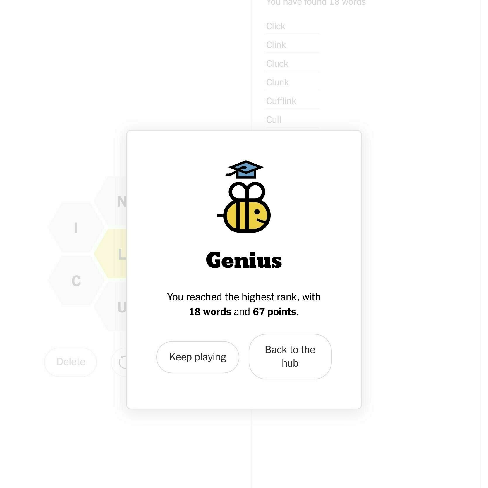
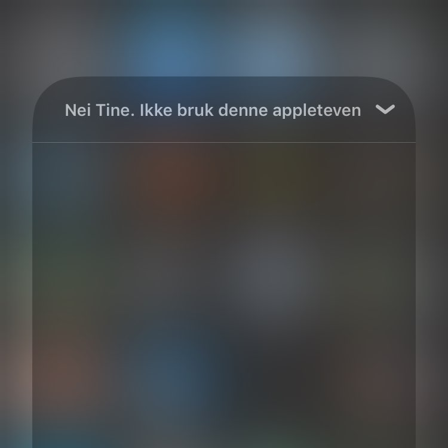
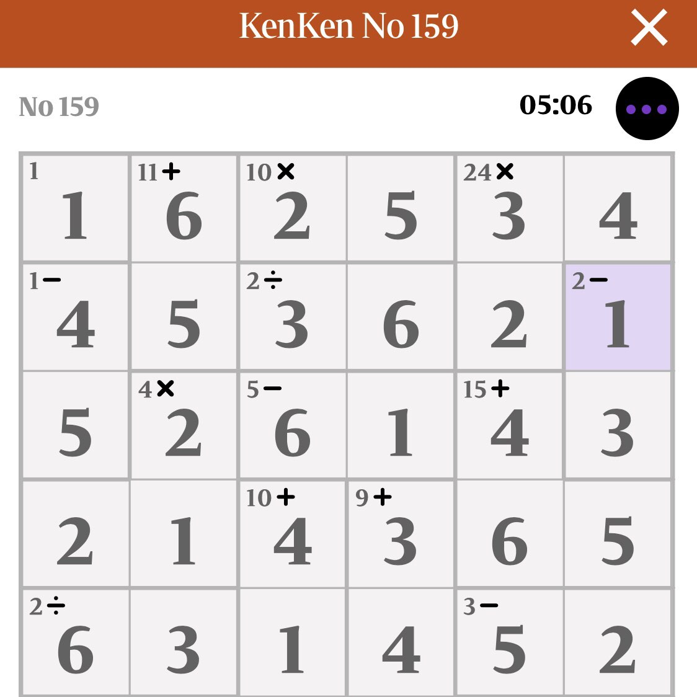

Må kunne sies at det er litt mer arbeid med manuell kaffekvern kontra … vel … ikke-manuell kaffekvern. Men det gjør jo bare at man virkelig fortjener den kaffekoppen om morgenen på jobb.
Da er pizzastål i hus, så blir det spennende å se i helga om det har ønsket effekt, eller om stekeovnen min ikke klarer å bli varm nok for stålet.
Vel, sikkert bedre enn ikke noe pizzastål uansett.
En kollega og jeg bestilte noe fra samme nettbutikk. Ut i fra sporing ble de hentet samtidig. Mens han fikk sin forsendelse i dag, så hadde min tydeligvis falt av transportbåndet hos DHL, og muligens forlater opprinnelseslandet i dag. Hmmf.
Gangs of London 📺
Ferdig med Gangs of London. Halvveis var jeg var det en klar anbefaling, om man tålte blod og vold i sine serier.
Etter å ha fullført serien, så er vel anbefalingen til stede, men jeg må si at noen av de siste episodene var litt mer skuffende, og i spesielt sesongavslutningen. Den er veldig lagt opp til at den skulle delvis avslutte den første sesongen, men også samtidig gjøre klar grunnen for neste sesong. Men jeg synes den gjorde det på en klossete måte, og som føles som et stilbrudd med de tidligere episodene.
Og basert på hva som skjedde i sesongavslutningen, så er det en viss sjanse for at for min del har blitt mindre interessant.
Men det er fortsatt en severdig første sesong (forutsatt at man tåler … osv), i alle fall frem til siste episode.
Så får man se hva fremtiden bringer. Det virker som om den grove skissen for serien, og evt. krav for fornyelse kanskje kullkastet noen planer. Eller at det er sånn det skulle ende opp med hele tiden, det bare skjedde på en mindre bra måte (i mine øyne).
Kaste ting og den dårlige samvittigheten som medfølger
Jeg, som de fleste, har vel alt for mange eiendeler. Og for meg, som sikkert de fleste andre, så er det en kombinasjon av å egentlig kjøpe alt for mye og være lite flink til å bli kvitt ting som ikke lengre er i bruk eller å ha sluttet. Enten det er å gi bort, selge det, levere det til gjenbruk/resirkulering eller kaste det.
Litt av mitt problem er jo at jeg i stedet for å tenke «la meg gå igjennom disse to skuffene i klesskapet og putte det jeg ikke lengre bruker og levere det til en Fretexkontainer eller lignende, så tar jeg de neste to skuffene neste helg» i stedet hele tiden tenker på at jeg må gå igjennom ALLE klærne mine på en gang. I mitt tilfelle, en grei oppskrift på at jeg bare utsetter det. Og utsetter det.
Men den dårlige samvittigheten jeg snakker om er ikke med tanke på bruk og kast tankegangen forbrukssamfunnet har påført oss. Det er når jeg skal kaste ting jeg har mottatt som gave. Uansett om den er utslitt eller lite brukt. For eksempel for maaaaange år siden, jeg vil tro det var den julen jeg var gammel nok til å lovlig drikke alkohol, fikk jeg en pakke med seks vinglass fra min søster. Jeg tror det var et forsøk på hvitvinsglass. Selv om glasset var bredest øverst, og «bølget» seg smalere, så var glasset størrelse mer hvitvin enn rødvin i alle fall.
Jeg var dog ikke noen stor vindrikkende person, og det var vel mer på midten av 2000-tallet jeg begynte å drikke rødvin i hovedsak.
Men likevel har disse glassene fulgt med meg til Oslo. Og tatt opp plass i skapet mitt. Men jeg har aldri i noen særlig grad brukt de. Men jeg har aldri klart å kvitte meg med de. Fordi de var en gave fra min søster. Hadde det vært jeg som hadde kjøpt de så hadde de jo vært lenge for mange år siden. Neppe blitt med meg til Oslo en gang.
Men endelig har jeg klart å pakke de ned i tomme melkekartonger og skal kaste de. Likevel gnager samvittigheten litt. Selv om jeg neppe tror at søster brukte verken mye tid eller penger på å kjøpe de som julegave til sin yngste bror. Og neppe husker at det var hun som kjøpte de.
Mens jeg venter på pizzastålet, som irriterende nok ennå ikke har blitt sendt, så fortsetter jeg å bruke Prontoen. Og angrer litt på at jeg ikke fant den frem tidligere. Etter noen få uker begynner det å bli bra resultat av forsøkene mine.

Terminator 2: Judgment Day 🍿
Etter sjokket det var å innse at T2 er tretti år gammel, så måtte jeg jo se den for å kunne høre på Rewatchable snakke om den.
Og. Den holder seg fortsatt godt. T-1000 hadde nok vært bedre i dag, men samtidig, for den tiden var det en kompleks og tidkrevende jobb som ble gjort. Og det begrenset jo litt hva James Cameron gjøre i filmen. På sitt vis, fortsatt tidløs. Mens f.eks The Phantom Menace bare 8 år etterpå kunne gjøre så mye mer med teknologi. Men det tok jo ikke mange år før den føltes visuelt sett utdatert. Mens T2 tretti år etterpå fortsatt ser bra ut. Greit nok at når man ser hele Robert Patrick forvandle seg fra sølvfarget til f.eks politimann, så skjønner man at filmen er litt eldre. Men det tar ikke bort i fra opplevelsen av filmen fordi teknikken brukes kløktig.
Og sånn sett ser man jo det i Terminator: Dark Fate. Med Arnold og Linda igjen. Men de kan gjøre så mye med effekter og cgi nå at man blir bombadert med overdrevne sanseinntrykk. Eller som jeg sett Dark Fate.
Her er det snakk om å toppe hele dritten i spektakulære scener, så det de evt. prøver å fortelle av en historie forsvinner dessverre bort i en kakofoni av eksplosjoner.
Når den kom var jo T2 selvsagt en effektfilm. Men mye av det var jo fortsatt praktiske effekter. Ikke at jeg er i mot cgi osv, men begrensinger gir grunnlag for oppfinnsomhet.
- Terminator: ikke mange år igjen til den fyller førti. Ikke like tidløs som T2, men en veldig severdig film.
- Terminator 2: vel, *peke rundt*
- Terminator 3: Rise of the Machines: har vel knapt nok sett den siden kinoen, men var vel en sånn der helt grei film som viderførte konseptet fra de to første.
- Terminator Salvation: kan ikke si at jeg husker så mye av den, men tror ikke jeg var noe fan.
- Terminator Genisys: husker ikke så mye av den, men tror jeg likte den mer enn jeg hatet den
- Terminator: Dark Fate: mer forsøk på å tjene på nostalgi enn en god film. Ikke fan.
Jeg bet meg merke i at gjengen på Rewatchables snakket om at det var en hemmelighet at Arnold skulle være den gode Terminator i denne filmen. Kunne ikke huske noe om det, men jeg tror jeg antok at Arnold skulle være snill. Han var jo tross alt en stor filmstjerne. Det føles litt av nyere dato at store stjerner er bad guys i filmer.
Så etter tretti år, fortsatt en perfekt 🍿📽
Å se på Terminator 2: Judgment Day i år, er som å ha sett på The Guns of Navarone eller West Side Story det året T2 hadde premiere.
AKA HERREGUD DET ER 30 ÅR SIDEN!
Ukens mat via Foodora var Bollywood Burger fra Kompis. Humret litt over at noe med det navnet brukte storfekjøtt, og kom med bl.a minttzatziki og ikke mintraita.
Men burgeren var veldig god den.
Zen og kunsten å lage en pizza
For maaaaaange år siden kjøpte jeg en Pizza Pronto. Fikk aldri helt dreisen på den. Den gangen trodde jeg hovedårsaken var at jeg aldri kunne vise måtehold med hvor mye ost og fyll jeg hadde på pizzaen, så etter ett år begynte jeg å kutte ut bruken av den. Og når jeg oppdaget at den lokale pizzapusheren i nabolaget hadde noen greie pizzaer ble den gjemt bort.
Etter noen år måtte den lokale pusheren flytte ut av lokalene, så bortsett fra besøk hos Lofthus Samvirkelag ble det jo tyvärr frossenpizza i stedet. Til jeg fikk ånden over meg igjen og begynte å lage selv igjen. Uten å dra fram Prontoen fra der den hadde blitt stuet unna.
Og de var jo greie nok. Og når jeg lagde de i stekeovn, så kunne jeg være litt mer løssluppen med hva jeg hadde på de. Men det manglet mye fortsatt. Helt til jeg for snart to år siden begynte å se på Bon Appetit sin jakt på den perfekte pizzaen, skjønte jeg at jeg måtte fokusere mer på deigen. Resten av serien var sånn passe meh, mozzarella er en kjedelig pizzaost, i alle fall for en som er vant til Lofthus. Og hva jeg ellers vil ha på pizzaen stemte ikke over med deres ideal.
Så jeg begynte å fokusere på deigen. Og etter hvert fikk jeg kontroll på den. En deig som var lett å bearbeide, selv etter en uke i kjøleskap. Som jeg kunne gjøre tynn og sprø. Men uten pizzastein eller pizzastål, så begynte jeg å skjønne at jeg begynte å nå grensen for hvor god den kunne bli.
Og ved juletider, mens jeg sjekket hjemmesidene til Elkjøp, ble jeg klar over Sage Pizzaiolo. Først og fremst fordi den lignet den ovnen Bon Appetit brukte under sin jakt på den perfekte pizzaen (Breville som Sage heter over der). Nysgjerrigheten ble vekket. Så la jeg merke til prisen. 8000,-. «Nope» ville nok ha vært neste tanke for de fleste. For min del ble det litt mer «hmmmm».
Dog, modellen til Sage fikk meg til å tenke på Pizza Prontoen.
Så når jeg returnerte til Oslo fra laaaaang juleferie i Trondheim, fant jeg frem Prontoen og testet den på en pizza jeg lagde mens ovnen varmet opp. Det er en grunn til at deigen bør lages noen dager i forveien. Men jeg fant ut i det minste at ovnen fortsatt dugde til å steke pizza.
Så når jeg skulle lage en skikkelig pizza helgen etterpå, så var jeg litt dum og lagde deigen på en ny måte. Ble brukt litt olivenolje i deigen. Det gjorde skorpen for tørr og sprø. Neste gang returnerte jeg til den deigen jeg normalt bruker (men økte vannmengden fra 50% i forhold til melet til 66%). Den ble bra på undersiden, men skorpen ble litt ujevnt stekt, særlig på toppen. «Ok» tenkte jeg, «det er en grunn til at de snur pizzaen i ovnene de bruker på restaurantene».
Så i helgen snudde jeg pizzaen noen ganger. Og jammen meg ble faktisk pizzaen relativt perfekt.
Likevel, så har jeg endelig bestilt meg pizzastål. Det ble mer at Pronto var litt begrensende til hva jeg kunne lage og hvor stor pizzaen kunne være. Og at varmeelementet i lokket med jevne mellomrom ble slått på grunn av varmekontroll så ut til å kunne påvirke hvordan resultatet ble på toppen av pizzaen.
Martinuzzi hadde fenget min oppmerksomhet med reklamer på Instagram, men likevel falt valget på Gruue. Litt billigere. Og jeg satser på at karbonstål er karbonstål.
Så forhåpentligvis har jeg den i hus til helga. Og Prontoen kan virkelig bli pensjonist. Etter noen uker frem fra glemselen. Stakkars Pronto.
Hvit Tiger 🍿
Jøss. Kino brukte å være en ting. Det er nå 372 dager siden jeg så 1917 i IMAX på Odeon. Så skjedde jo det alle vet *peke på verden rundt seg*. Noen filmer har det jo blitt hjemme i stua. Men etter å ha fått Odeon på Storo i mitt liv, så ble jeg jo litt enig i «Film er best på kino».
De største filmene har jo blitt utsatt og utsatt. Og de få som ble sluppet har jo ikke akkurat vært kassasuksesser. Noen filmer finner sitt marked med at de blir kjøpt opp av strømmeleverandørene som Apple, Netflix et al.
Om Hvit Tiger er en av disse, eller om den alltid var en Netflix film før pandemien vet jeg ikke. Men det er nå på Netflix den er tilgjengelig for meg.
Balram lever i fattigdom på landsbygda i India, men med sin kløkt går han fra å være sjåfør for den rike famlien som kontrollerer området rundt landsbyen til å bli gründer.
Han blir den rike sønnens fortrolige, og når han og hans amerikansk-indiske kone skal til New Dehli for å ordne med bestikkelser blir han med for å kjøre de rundt. Balram blir vel ikke akkurat behandlet dårlig av familien, men han blir jo ikke akkurat behandlet bra heller. Og til slutt så benytter Balram seg av sjansen han får som en følge av sitt forhold til sønnen med å skaffe seg litt startkapital.
Jeg er ikke i en posisjon til å si hvorvidt denne filmen gir et riktig bilde av hvordan det er India, om den er realistisk. Den har i det minste ikke det gule filteret til Extraction. Den føles troverdig i det minste, selv om jeg ser andre steder at det antydes at boken filmen er basert på i sin tid hadde kritikker for å fremstille India i et dårlig lys. Dog, den kan være sannferdig for det selv om man mener den er for negativ i sin fremstilling av det indiske samfunnet.
Første tanke etter å ha sett den er at den er litt midt på treet. Men en veldig sterk midt på treet. Jeg er fascinert over valget Balram tok, og konsekvensene det blir antydet at det ville ha, men som filmen ikke viser. Et fornuftig valg etter min mening (at filmen ikke viser konsekvensene, moralen rundt Balrams valg er en lengre diskusjon).
Det som trekker ned er nok bruken av Balram som fortellerstemme mens han skriver en e-post med livshistorien sin til den kinesiske president som skal komme på statsbesøk til India. Fortellerstemme kan i enkelte tilfeller virke i en film, men for min del gjør det ikke i denne filmen.
Så sterk middels betyr at den heller mot å anbefales, og i alle fall hvis man har Netflix. Da er det bare å legge den i køen og se den når man har to timer ledig.
Jentene på tunet lager fantastisk og prisvinnende sjokolade. Fremst er salt lakris som er noe av det beste som finnes. Ellers skal det være karamellkos, pistasjkrønsj og baileyskrem.


Lagde potetsuppe med ristede mandler og bacon i dag. Vel. Det var planen. Men baconet klarte å gå fra nesten ferdig til kremert på kort tid. Så det ble bare potetsuppe med ristede mandler.
Og når man snakker om Rebels, det å velge Lars Mikkelsen som stemmen til Grand Admiral Thrawn var et mestertrekk.
Er vel mange slike valg som utmerker seg når man tenker på det, men denne er etter min mening i særklasse.
Det som slår meg etter ha sett litt over halve Star Wars: Rebels og hele Star Wars: The Clone Wars, er at det tydeligvis er litt vanskelig å lage en hovedfigur (Ezra i Rebels, Anakin i Clone Wars), som balanserer mellom det gode og det onde. Og kanskje er på utkikk etter litt enklere løsninger -> helle mot den mørke siden. En ting er i alle fall sikkert, Anakin og Ezra er like irriterende personligheter. I alle fall slik de blir presentert i seriene.
Med Anakin vet vi jo hva det endte opp med, og det er flere som hevder at Clone Wars klarte å vise Anakin sin historie bedre enn forløpertrilogiene, jeg var uenig i det. Med Ezra er det fortsatt usikkert (halvveis i nestsiste sesong). Så sånn sett er jo historien om Ezra etter min mening mer spennende, og kanskje bedre.
Med Rey prøvde de vel også å skape en konflikt mellom de mørke og lyse kreftene.
You went straight to the dark
Som Luke sjokkert sier til Rey. Og det spesielle forholdet mellom Kylo og Rey. Ikke at jeg hadde noe tro på det. Først og fremst fordi generelt ikke brukte nok tid på det. Men viktigst, hadde de skulle prøvd å underbygge det mer måtte de ha valgt en annen skuespiller enn Daisy Ridley. Hun spiller vel Rey som hun har fått beskjed om (men når man ser hele trilogien under ett så hadde det ikke forundret meg at skuespillerene var litt er fristilt), men Rey som presentert i filmen er et såpass gjennomført godt menneske at det å valge den mørke siden aldri virker sannsynlig.
Foodora sendte en epost med tittelen «Støtt lokale restauranter i Oslo» og ga meg litt dårlig samvittighet.
Pga at jeg bruker kolonial.no, så er jeg flinkere til å planlegge middag for hele uken, og ofte er det jo sånn at det jeg lager gjør at jeg har ting i fryseren for senere middager. Når jeg lager Ragu Bolognese, så lager jeg såpass med saus at jeg har middag i fryseren to eller tre middager til.
Og er det en dag det planlagte ikke frister (eller jeg ikke orker pga klokkeslett), så har jeg som oftest noe annet i kjøleskapet eller fryseren som frister mer.
Og da blir det lite spising ute (når det er mulig) eller bestilling av take-away/Foodora/Wolt på grunn av de to foregående punktene.
Så som Foodra skriver i eposten.
Kanskje du skal droppe en middagslaging denne uken, og heller kose deg med din favorittrestaurant?
Jo, jeg tror jeg faktisk skal droppe en middagslaging i uken fremover.
Det er litt problematisk med 24 timers klokke noen ganger. Og ja, åtte kan bety 08:00 eller 20:00, og tolv kan bety 12:00 eller 00:00.
Og ja, første kommando var åtte til tolv. Men jeg prøvde også med 08, 0800 og åtte om morgenen. Men resultatet ble det samme. Så det får jo være så. You do you Siri. Hadde det ikke vært for at jeg har ørten hundre andre avtaler som heter det samme og er enten på tre eller fire timer. Da burde det vært mulig å gjette at av følgende alternativ:
- 20:00 - 12:00
- 20:00 - 00:00
- 08:00 - 00:00
- 08:00 - 12:00
så hadde det vært sistnevnte som var mest sannsynlig. Og ikke at jeg hadde tenkt å vaske klær i seksten timer.


Mikset mitt eget tacokrydder i dag. Smaka bra. Spisskummin, chilli, paprika, salt og pepper.
Endelig sterkt nok.
Somewhat Aggressive
Som en følge av diverse støttemedlemskaper for podcaster eller blogger, så har jeg vært medlem av noen få slacker. I går på en av disse var det en bruker som ergret seg over at han ikke kunne få tak i eksterne retinaskjermer som var små nok. Skjermer på 27 tommer var for stort, han så for seg 24 eller mindre. Og i løpet av denne diskusjonen mellom denne personen og andre som linket til en 24 tommers 4K skjerm så begynte han å snakke om retina 4K skjerm vs 4K skjerm.
Nå er jo ikke retina noe magisk, men bare et markedsføringsnavn på skjermer som kombinerer størrelse og oppløsning og normal bruksavstand slik at man som bruker ikke ser individuelle piksler.
Retina is Apple’s trademark for a display so sharp that the human eye is unable to distinguish between pixels at a typical viewing distance. As Steve Jobs said: «It turns out there’s a magic number right around 300 pixels per inch, that when you hold something around to 10 to 12 inches away from your eyes, is the limit of the human retina to differentiate the pixels»
Er ganske sikker på at dette er noe Steve Jobs sa i forbindelse med lanseringen av iPhone 4.
Is this retina slenger så på
Given a large enough viewing distance, all displays eventually become «retina»
Som jeg i utgangspunktet er enig i. Og noe som f.eks betyr at min Samsung CF791 med en 3440 x 1440 oppløsning spredt på 34 tommer i teorien kan være retina om jeg ser på den fra 80 centimeter unna. Som jeg ikke gjør, sitter nok litt nærmere.
Selv om den klart hadde vært bedre om den hadde hatt en oppløsning på 6880 x 2880 og vært skalert til å se ut som 3440 x 1440.
Så jeg vågde meg på følgende spørsmål, litt sent på kvelden:
What is retina 4K vs normal 4K according to you? Since it seems you make it to be something different and special? I might be mistaken, but retina isn’t anything more special than a calculation of pixel density and normal viewing distance. Eg. a phone needs more ppi than a monitor because a phone is closer to your eyes when you use it (normally).
Synes det virket som et helt greit spørsmål etter min mening. Samt at jeg i neste melding linket til Is this retina.
Like etter at jeg postet det så jeg i en undertråd at han pekte på at Apple før brukte å selge en 4K iMac som hadde en 21,5 tommer stor skjerm. Og det var en sånn skjerm han ville ha. Så derfor var det uaktuelt med den 24 tommers LG 4K skjermen Apple solgte, og andre tilsvarende skjermer. Dog, bruker man Is this retina så kan man regne seg frem til at forskjellen i arbeidsavstanden på to slike skjermer ville ha vært fem centimeter. Litt senere i tråden linket noen til en bloggpost hos Bjango som går litt mer i dybden på det. Og ja, en 24 tommers 4K havner etter deres mening i «The bad zone». Men jeg tror det stiller seg litt annerledes for designere og utviklere enn en advokat som skal jobbe med Word og PDFer. Med forbehold om evt. manglende skalering på eksterne display (jeg kjører f.eks ikke mine retina MacBooks med beste oppløsning, men skalert for å vise mest mulig).
Som sagt, det var sent på kvelden, og jeg var særs trøtt. Og akkurat i det jeg skulle legge meg så jeg at han hadde svart meg.
I’m not sure why you’re choosing to take a somewhat aggressive tone with me, [gjenta definisjonen jeg mer eller mindre oppga i spørsmålet]. I care about whatever monitor I buy having text just as crisp as the text on my current monitors, and I’m not interested in spending hundres of dollars to experiment. I know a 4K 21.5 inch monitor is Retina and super-crisp and fit for my purposes.
somewhat aggressive tone. Hmm. Jeg følte det var en karakteristikk som ikke passet mitt spørsmål. Og vel, anklage om å være aggressiv gjorde meg bittelitt … øh … ikke aggressiv, men irritert. Men som sagt, det var på kvelden og jeg var særs trøtt. Så jeg giddet ikke å respondere da.
Neste dag var jeg jo naturlig nok opptatt med jobb (mens flertallet på slacken som er amerikaneren naturlig nok var opptatt med å sove, så jobbe). Så da begynte det å bli nesten ett døgn siden mitt spørsmål og hans svar før jeg kunne respondere igjen med å spørre om hvor aggressiviteten i mitt spørsmål var. Og det begynte etter min mening å bli litt for lang tid siden det skjedde. Så jeg bestemte meg for å ikke respondere. Selv om jeg fortsatt var noget irritert over hans anklage.
Så det fikk meg til å tenke litt på deltagelse i disse slackene. Det var litt for ofte at man bare startet Slack.app og måtte scrolle igjennom lange diskusjoner som hadde startet og dødd ut uten at det var noe poeng i å delta eller gjenopplive de med mine inspill.
Så jeg deaktiverte kontoen min. På begge slackene. Og ettersom de var den viktigste grunnet til at jeg betalte for støttemedlemskap, så stoppet jeg de også.
Og det var ikke som en direkte motreaksjon til å bli anklagd for en «somewhat aggressive tone», det var bare mer gnisten som fikk meg til å gjøre det jeg ofte hadde tenkt det siste året. Hvilke nettsamfunn skal jeg delta i, og bidra med penger til. Tidssoneforskjellen er jo viktig, men det at engelsk ikke er mitt morsmål er jo også viktig. Det betyr jo at i en kanal det ofte går fort for seg på engelsk, så har jeg jo en ulempe fordi jeg bruker litt lengre tid på å formulere meg. Og som på norsk, jeg formulerer og reformulerer meg for å prøve å gjøre meg forstått. Spørsmålet jeg stilte til den andre brukeren var ikke første versjon. Det var vel også en viktig grunn til hvorfor jeg ble litt paff av anklagen.
Og etter en uke uten å bruke Slack, så må jeg si at jeg ikke savner det. Det ble bare en plattform til man sjekket konstant for å ikke gå glipp av noe. Jeg bruker RSS og micro.blog (selv om jeg ikke er den flittigste deltager der), og har tunet Twitter såpass at jeg i hovedsak unngår å drukne i meldinger om hva man er sinna på i dag.
Åpnet en notatblokk på jobben i dag. Hadde skrevet litt på siden. Øverst var møtenavnet, og mitt eneste notat var
Å herregud
Må ha vært litt av et møte.
En på jobben anbefalte serien Gangs of London. Første 40 minutt av serien var litt sånn der. Før de siste fem minuttene medførte en endring av konklusjonen fra «meh» til «HOLY CRAP». Halvveis, men kan anbefales om man tåler vold og blod i sine TV-serier.

Hjemmekontor ble til gjemmekontor, i alle fall frem til lunsj, når jeg våknet med dundrende hodepine i morges.
I sommer så skrev jeg litt om HEY, den nye e-posttjenesten fra Basecamp, og alt styret rundt den mellom de og Apple. Og etter å ha prøvd det i over halve året, så må jeg si at jeg ikke helt ser det store. Klienten for iDingser er grei nok. Men så lenge filtrering av e-post til Imbox, The Feed og Papertrail kun går på avsenderadresse, så blir det for svakt.
Innlogging på nye enheter er f.eks kanskje noe du vil ha i Imbox, men bruker de samme avsenderadresse for å sende nyhetsbrev så kommer også de til Imbox selv om du kanskje ville ha hatt de i The Feed. Gjør du det omvendt så må du passe på at viktig informasjon ikke kommer i The Feed. Denne mangelfulle filtreringen ble klart når jeg skulle logge inn på Slack via nettleser og skulle motta en kode for å verifisere. To innlogginger medførte to eposter fra Slack, som hver hadde sin unikt genererte avsenderadresse, som igjen medførte at jeg måtte si i fra at jeg ville ha disse epostene to ganger.
Og den forenklede filtreringsmekanismen som ligger i at de bare ser på avsenderadresse gjør at ting blir alt annet enn optimalt for min bruk.
For eksempel er det ikke meg imot at den månedlige eposten fra Apple om at jeg har betalt for nok en måned med Apple Music går til denne boksen. Men eposten om at jeg har logget inn på iCloud.com fra en ny nettleser eller har skiftet passord, det er informasjon jeg gjerne vil ha til min Inb^H^Hmbox.
For Netflix så medfører det at all epost fra de havner i The Feed.
Og jeg synes ikke The Feed er en god måte å lese igjennom det man har filtrert dit. Alt for treg opplevelse.
I Mail.app kan jeg enkelt se om jeg har uleste mail i de forskjellige mappene jeg filtrerer ting til. Med HEY må jeg i teorien sjekke fire steder for å sjekke om jeg har gått glipp av noe.
Som Tasos Sangiotis skrev:
This system made me anxious that I was missing email. This is the opposite than advertised calm effect where I should now check three Inboxes instead of one.
Jeg vil jo si fire, kan jo hende at noe havnet i spam også (skjedde med meg, selv om man i utgangspunktet har screeningfunksjonen for nye avsendere).

The Sentinel 📚
The Sentinel er 25. bok om eksmilitærpolitimannen Jack Reacher skrevet av Lee Child i samarbeid med hans bror Andrew Child (née Grant på de begge faktisk) som skal ta over stafettpinnen med å skrive om Jack Reacher.
Som alle de siste bøkene om Jack Reacher, helt grei og spennende lesning som vanlig.
Reacher befinner seg nå i Tennessee i en liten by der de er utsatt for ransomware. Vi har også nazister, russiske spioner og valginnblanding. Veldig i tiden (noe jeg har lagt merke til at noen av de andre siste bøkene også har vært).
Men man vet hva man får med en Reacher, og har man lest de foregående 23 så kan man like gjerne lese denne. Høres ikke akkurat som strålende omtale, men jeg likte denne.
Kan oppdateres til «… har man lest de foregående 24 så kan man like gjerne lese denne».
Grei nok, men temaet for denne boken ble litt meh etter min mening. Hjalp jo heller ikke at kapitlene begynte å bli litt lengre nå.
Tenet 🍿
Det var jo mest en spøk. Men samtidig litt sannhet. Dog, terningkast er jeg usikker på. Først og fremst fordi det egentlig ikke er noe jeg bruker. Enten så er det dårlig, sebart eller bra i min bok. Og jeg prøver å styre unna ting som sannsynligvis faller i den første kategorien.
Jeg har ikke sett Tenet flere ganger (men jeg kommer til å gjøre det). Så vi kan jo trygt fastslå at den sannsynligvis ikke er i kategorien «dårlig».
Men er den bra?
Det er jeg litt mer usikker på. Det er jo en velprodusert film, spilt inn steder der det som oftest ikke spilles inn storfilmer (som en følge av skattefordeler for filmproduksjon), teknisk vidunderlig og en historie som er brainfuck. Ikke ulikt mange av filmene til Christopher Nolan.
Og akkurat nå, så er vel det eneste jeg har å utsette på den er kanskje tonen i filmen. Den er kanskje litt lavmælt.
Men minimum sebar er den. Sannsynligvis er den bra. Det er bare at dette er en film som krever mye av deg som seer. Tror jeg.
Er jo bare synd at man ikke akkurat har fått oppleve den på det store lerretet peke på 2020
Tenet. Skjønte ikke bæret. Terningkast 6.
Tenkte at prisen var for høy, men likevel.

Jeg er sprø.
Kort rapport etter noen dagers bruk. Fantatisk komfort, jeg fryktet det verste når alle påpekte vekten, men den plager meg ikke. Og fantastisk lyd etter min mest ydmyke mening.
Star Wars: The Clone Wars 📺
Star Wars: The Clone Wars er som kanskje kjent den animerte serien som forteller om hva som skjer mellom Attack of the Clones og Revenge of the Sith.
Og springbrettet for Dave Filoni, og alt det han skal stå bak for Disney Plooooooce av nye serier fra Star Wars universet.
Jeg så serien i den rekkefølgen D+ presenterer den i, som jeg antar er i den rekkefølgen de ble sendt på TV i sin tid, og en kronologisk rekkefølge. Ikke at jeg tror det vil endre noen av min oppfatning av serien, sesong 5-7 var uansett de beste, og der er det ikke så mye tull i rekkefølgen. Og jeg bare brukte litt over 100 dager på å se de 133 episodene, så de kronologiske hoppene har nok litt mindre å si. Tror jeg.
Alt i alt er det en grei serie, så lenge man bli vant med animasjonsstilen. Å se de løpe er latterlig, og det tar noen sesonger for at detaljene på figurene blir litt bedre. Tror det var i sesong 5 at jeg mente å se en forbedring.
Normalt i TV-verdenen er det jo vanlig med at enkeltepisoder er avsluttende (bortsett fra sesongslutt, som kanskje ofte er spredd over to episoder. Og enkelte innslag av den «røde tråden» spredd utover). Likte at i The Clone Wars så var det som oftest historier fortalt over to til fire episoder. Og mislikte det når historien ble fokusert på enkelte av sidefigurene man ikke er fan av (kremt f.eks JarJar). Selv om man da slapp å se Obi-Wan klø seg i skjegget mens han tenkte.
Det jeg har sett enkelte prise serien for er at den forteller på en bedre måte om hvordan Anakin Skywalker kunne bli Darth Vader enn hva forløperfilmene gjorde. Den viser riktignok sjalusien og kjærligheten han har med tanke på Padmé. Og hans arroganse. Og hans gode forhold til Obi-Wan og Ahsoka. Men synes ikke den klarer å vise Palpatines/Darth Sidious’ sin forføring av Anakin bedre enn hva Ian McDiarmid klarte i filmen. Som kanskje er det mest positive jeg kan si om de.
Og heldigvis er det mye handelsblokade, banklån og senatsdebatter i denne serien også.
Nah, det eneste serien er veldig god på er å vise oss og få oss til å tenke litt på hva det vil si å være en klonesoldat. Og få oss til å tenke litt på hvordan det ikke er å være i eliten.
Og Ahsoka Tano da. Som sammen med Rey er kanskje de to mest interessante figurene som har kommet ut av alt som ikke er den originale trilogien. Ser frem til å se Rosario Dawson spille henne i den nye serien som skal komme på D+.


Bruker som oftest bare Instagram til å se på fugle- og kattevideoer. Og noen ganger ser jeg på TikTo^H^H jeg mener Reels fanen. Fryktelig mange spreke mennesker som danser, noen morsomme videoer. Og basert på litt av det jeg har sett ellers, matlagingsvideoer inkludert surdeig, veganske retter osv.
Mye humbug og moteting. F.eks trenger jeg ikke flere videoer av hvordan man kan ta to brødskiver, omelett, fyll og brette det sammen til en sandwich. Og ettersom videoene som oftest er på rundt 30 sekunder, så er det jo begrenset hvor gode de kan være. Men Federico Fusca har funnet en stil som er litt fascinerende. Det hjelper jo litt av at min forståelse for Italiensk er mangelfull, men noe forstår jeg, som f.eks
Skjønner hva jeg trenger å skaffe for å lage denne retten.
Mor har overført kunnskapen om å lage møsbrømlefse til bror, og i kveld serverte han årets første lefser.

Underholdningsåret 2020 (og noen andre høydepunkter).
En for det mest uordnet liste over underholdningsting jeg har satt pris på i året som var. Pluss noen andre få ting jeg likte.
Og som alltid, det går på når jeg hørte/leste/så tingene. Ikke når det ble utgitt.
Podcast
Jeg har jo hørt på masse podcaster, men det er ingenting nytt og spennende som har utmerket seg. Jeg har i bunn og grunn kuttet ut de fleste techpodcaster, men hører på enkelte episoder av Upgrade og ATP. Selv om sistnevnte er absolutt den jeg hører minst av. 2 av 3 verter er for min del litt for irriterende. Den eneste jeg hører fast på fortsatt er The Talk Show. En av grunnene til det er jo at Gruber er flink til å ha nye gjester for hver episode. Dermed blir det ikke like forutsigbart hver gang.
Og Gruber er en av duoen som har lagd den eneste podcasten som kommer med på listen. Og det i en podcast i hovedsak som er fokusert på tech, sammens med Ben Thompson fra Stratechery.
Dithering har følgende tagline > A new podcast from Ben Thompson and John Gruber. Three episodes per week, 15 minutes per episode. Not a minute less, not a minute more.
Og bortsett fra episoden som ble spilt inn på den amerikanske valgdagen og ble avsluttet med noen minutter med heismusikk, så har de alltid klart å holde en interessant samtale om ditt og datt i 15 minutter tre ganger i uken. Verdt sine $5 i måneden. Særlig når Gruber beskriver hans jobb som bleieskiftarbeider i episoden fra 23. mars.
Bok
Jeg startet året med å prøve å følge med på leselisten til @enslagsbokklub. Og jeg klarte vel å følge med på de tre første bøkene, der to av de falt i smak. De sju dørene var en annerledes krimroman, og novellesamlingen Hardanger. Ellers var The Spy and the Traitor om Oleg Gordijevskij både fra virkeligheten og veldig spennende. A Memory Called Empire var spennende og interessant sci-fi med interessante skikkelser. Det er ikke uten grunn at min nye MacBook Air har fått navnet Mahit etter denne bokens hovedperson Mahit Dzmare (og harddisken Three Snoodgrass). I skrivende stund har jeg lest 11 av de 18 jeg hadde satt meg som mål, men bør ha nådd 12 før nyttår, fordi jeg blir nok ferdig med siste bok om Jack Reacher. Men hadde jeg holdt tempoet fra første halvår i andre halvår burde jeg jo ha endt opp med 22. Så det betyr jo at jeg ikke har lest ferdig en bok siste seks måneder.
Film
Eneste film jeg så på kino i år (både av generelle 2020 grunner og jobbmessige grunner) var 1917, som jeg så på IMAX på Odeon. Storveis film. Hjemme satte jeg pris på The Age of Adaline, Parasite ble sett mens man spiste en bedre hjemmelaget pizza og en drakk en god flaske Barolo. Guns Akimbo var morsom gladvold, kanskje gjort litt morsommere p.g.a. at den var med Harry Pot^H^H Daniel Radcliffe i hovedrollen. Jojo Rabbit fortjente sin Oscar, The Art of Self-Defense var herlig absurd, og etter ha å sett alle Fast and the Furious filmene kunne jeg fastslå at 6-7-8 var stor underholdning.
Og skal jeg gi ut en Årets Film så tilfaller den Palm Springs. Og jeg har vel doblet antall ganger jeg har sett den siden september.
TV
1: Ted Lasso. Vidunderlig serie som var rette medisinen i et forferdelig år. Har en kladd der jeg skal skrive mer om den, men det er verdt å betale for Apple TV+ i en måned for å se denne.
2: The Mandalorian. Fortsetter den gode trenden med å fortelle de mindre historiene fra dette fantastiske universet. Og flere serier blir det. Det gledes.
3: The Boys. Superhelter. Men hva om de er slemme. Herlig tegneserievold, og herlige rollefigurer.
4: Mindhunter. Fantastisk dramaserie om den spede begynnelsen i arbeidet med å forstå seriemordere. Og akkurat passe creepy for en sart sjel som meg.
5: Better Call Saul. Det begynner å nærme seg slutten på forhistorien til Saul Goodman. Og den har endelig begynt å få litt tempo over seg.
6: Devs. Lavmælt og filosofisk. Vakker og brutal.
7: Perpetual Grace. Fra samme gjengen bak Sad Spies. Sære karakterer, spesiell stemning.
8: Peaky Blinders. Fascinerende om kriminelle gjenger i Birmingham i tiden etter første verdenskrig.
9: Tehran. Spionserie som føltes realistisk. Og spennende. Uten at de smurte for tykt på.
10: The Crown. Den begynner å nærme seg nåtid. Fortsatt velspilt og velprodusert.
Men det er flere serier som bør nevnes. Briarpatch. Handlingen og historien er ikke så spesiell, men visuelt vakker og bra bruk av musikk. Treadstone fikk bare en sesong, men viste lovende takter å bruke Jason Bourne universet i en TV-serien. Run er en dramakomedie med en strålende Merritt Wever som en av hovedrollene. Marcella var jo en grei variant av flink etterforsker med minst ett problem i privatlivet. Men sesong 3 var et såpass merkelig toneskifte for serien. Lurer på hva som skjedde der. Papirhuset er jo en stor spansk serie som har blitt populær ellers i verden. Den var spennende nok til å starte med, men etterhvert som serien trakk ut i tid så begynte jeg å aktivt hate protagonistene.
The Good Place var riktignok mer 2019 enn 2020, men 4 av episodene var i år, og en av mine favorittserier noensinne fortjenes å nevne på grunn av sin perfekte avslutning.
Brooklyn Nine-Nine er fortsatt bra, men blir spennende hvordan serien blir fremover med tanke på hva som skjedde etter drapet på George Floyd. Noen endringer blir det nok. Men akkurat nå er vel en pandemi et litt større problem. Bosch er jo også en av disse politiseriene der protagonisten i hovedsak er god, men det hintes nok om disse få dårlige eplene. Condor fortsetter sin lovende start med konspiranoia. Billions ble tyvärr påtvunget en pause av pandemien, men starten var bra. Umbrella Academy er fortsatt morsom, spennende, velspilt og velprodusert. Westworld hadde også sitt toneskifte med å flytte seg fra «fornøyelsesparken» til den virkelige verden som tenkt i serien.
Og med Disney+ fikk jeg jo endelig startet på Star Wars: The Clone Wars på nytt (hadde vel sett en sesong eller to før). Det er jo riktignok nok fortsatt mye Jar Jar, intriger i senatet og handelsavtaler. Men greier vel på en måte å forklare Anakins vei til den mørke siden på en måte filmene aldri klarte. Og ga oss Ahsoka Tano som kanskje ved siden av Rey er noe av den mest interessante skikkelsen vi har fått i nyere Star Wars. Episoden med henne i The Mandalorian, spilt av Rosario Dawson var jo mer eller mindre en pilot for serien som vil komme på Disney+ med tid og stunder.
Annet
Av duppeditter er jo iPhone 12 mini det mest morsomme. Er ikke mobilen for den som er på konstant jakt etter lademuligheter, men for min del er den bra nok. Det mest spennende er jo MacBook Air med M1 prosessor. Som på en gang er en av de beste CPU-ene noensinne, men samtidig også den dårligste Apple noen gang kommer til å produsere. Ytelsen er fantastisk og ikke til å tro. Samme med batterilevetid.
Ellers, på grunn av 2020 og den første nedstengningen av samfunnet i mars og den pågående innspurten i et flytteprosjekt med lange dagerpå jobben, så bestemte jeg meg for å prøve ut Kolonial.no. Hadde hatt lyst til det før, men klarte aldri å få ræva i gir. Men når jeg måtte handle inn før påske klarte jeg endelig å planlegge et innkjøp som skulle dekke mesteparten av behovet for påsken. Og etter påsken har jeg mer eller mindre fortsatt med et innkjøp i uken. Har blitt relativt flink til å planlegge middager, og se an behovet for pålegg og brødvarer. Ikke den som sammenligner priser mest, men tror nok innkjøp en gang i uken på Kolonial.no i sum er billigere for meg enn 3-5 butikkbesøk i uka og kortsiktig planlegging.
20 Macs for 20^H^H 3 Macer for 30. desember.
Jason Snell har jo nettopp avsluttet sin 20 Mac for 2020, der den originale iMacen fikk førsteplass på hans liste
With this year marking the turn of decades (in some particularly disastrous ways, as it turns out), I decided to construct a list of the 20 most notable Macs in history. Over the next 20 weeks, I’ll post essays, podcasts, and videos about each of them, counting down to number one.
Og som han bemerket i neste avsnitt
Now, note my choice of words there: notable. I’m not saying these are my favorite Macs—a bunch of them I only knew in passing and never used myself. I’m not saying these are the best Macs ever—a difficult thing to measure, since (with a few obvious exceptions) the best Macs made are the most recent ones, otherwise we’d all still be using G3 iMacs.
Jeg hadde såvidt tafset borti noen Macintosh Performa tidligere, men det skal sies at den første iMacen er minneverdig, med trenden den startet. Samt litt personlig minneverdig i forbindelse med noen dokumenter jeg har forfattet på diverse iMac G3-er.
Men skulle jeg lage en slags personlig Topp 3, så blir det følgende:
MacBook Air 11 2010. Min første Intel Mac var den originale MacBook Air, men det er 11” av redesignet som kom i 2010 som er min favorittmaskin til nå (vel, litt mer spesifikt 2013 modellen jeg oppgraderte til tre år senere).
PowerBook G4 12 2003. Min første Mac. Pure geeklust når jeg så den første gangen.
Maskinen jeg skriver på nå, MacBook Air M1. Kanskje lit prematurt å ha den med allerede nå. Og når jeg sammenligner denne med min MacBook fra 2015, så synes jeg det er litt synd at MacBook ikke ble reintrodusert med M1. Men det er første maskin siden #1 som har utmerket seg i stor grad, og med tanke på at det vil være den maskinen med dårligste Apple Silicon noensinne (sånn 99% sannsynlig), så blir det spennende å tenke på hva som kommer i fremtiden med tanke på hva de allerede har vist med ytelse og batteritid.
Har noen ganger sett på enkelte sammendrag av NFL-kamper via appen eller nfl dått com. Og jeg må si at de som setter sammen de sammendragene har en merkelig definisjon av høydepunkter. De viser mange av spillene, men bare kun en gang, uansett om det er et løpespill som går tre meter frem og gir nye forsøk eller et pasningsspill på over 70 meter. Og de hopper til neste høydepunkt ett nanosekund etter at spillet er dødt.
Litt mer selektiv på mengde spill. Og prøv å vise repriser av fantastiske skåringsspill fra flere vinkler.

Ikke at jeg noen ganger kommer til å gjennomføre noe (har tross alt beslutningsvegring), men å se på Der ingen skulle tru at nokon kunne bu får meg noen ganger lyst til å flytte langt ut i periferien. Kanskje ikke helt der-ingen-skulle-tru-at-nokon-kunne-bu periferi, men nok unna allfarvei med sånn passe breidt bånd for internett og levering av post en gang i uken. Og vakker natur.


Noen ganger viser Instagram reklame for urmakere som prøver å pushe merker som er innenfor rekkevidde både økonomisk og fornuftig. Noen ganger bommes det. Som for eksempel her, med denne som billigste modell jeg kunne finne av dette merket.


Må jo kunne sies at sesongavslutningen for The Mandalorian både leverte og ikke leverte. Med tanke på når handlingen er lagt til, så var det ikke så usannsynlig, og det var heftig. Og det var nostalgi. Men for en som mener den nye trilogien var litt for opphengt i nostalgi, litt urovekkende.
Bruker Trakt for å holde oversikt på serier jeg ser på og har lyst å se på. Akkurat nå har de en beta for en app de skal komme med til iDingser. Men den er ikke noe annet enn websiden i en app. Så den er alt annet enn bra.
Heldigvis finnes det mange apper i appstore som støtter synk med Trakt. Eller «støtter» er vel mer korrekt å si. For det virker som på et eller annet tidspunkt slutter de fleste å synke mot Trakt, uten at du får tilbakemelding om at de har støtt på problemer.
Så vidt kommet i gang med siste bok om Jack Reacher, The Sentinel. Første som er skrevet i samarbeid med broren Andrew Child née Grant, som skal ta over stafettpinnen. Vet ikke hvordan arbeidet er fordelt, men starten er veldig Jack Reacher.


Fyrte jo opp den originale MacBook Air fra 2008 for rundt to uker siden. Brukte den litt, slo den av og la den fra meg. I dag la jeg merke til at den så sånn ut. Var bare å røske ut batteri og levere på gjenbruksstasjon. Kanskje ikke så rart at jeg var litt surrete den kvelden.

Wall Street Journal hadde tilbud, €52 for 52 uker for Basic Digital. Så jeg hoppet på. Ser også ut som månedsprisen ikke er så ille heller, €10 pr. måned. Men merkelig nok skal de ha €29 for All Access Digital, og eneste forskjellen er at der får man med iPad app. Kun smarttelefon eller nettleser på det billigste abonnementet.
Stiller meg sterkt tvilende til at appen for iPad er verdt €19 ekstra i måneden.

Første dag på jobb i dag etter to uker med hjemmekontor. Rart å se mennesker igjen.
Men nå er det heldigvis noen uker med ferie.
Kolonial
Har vært flittig bruker av kolonial.no dette året. Har begynt å sette veldig pris på det å planlegge ukens innkjøp, i stedet for å stikke innom butikken 3-5 ganger i uken.
Noen ganger skjer det jo at de går tomme for det du har bestilt (men så langt det går så får du en erstatningsvare i stedet. Er den billigere så får du penger igjen, er den dyrere så spanderer de det overskytende). Og noen ganger skjer det at du får feil antall av en vare fordi noen blingset under plukkingen.
Sånt skjer. Sender bare en epost med hva som mangler, og får svar innen kort tid at penger refunderes og de skal sjekke hva som skjedde. At penger returneres er helt greit, men det de skal sjekke medfører at jeg alltid får en følelse av at det er noen som skal kjølhales. Håper at det ikke er det de gjør.
Og i dag skjedde det for andre gang at jeg fikk to ting av noe jeg hadde bare bestilt en av. I dag frosne rundstykker. Forrige gang dopapir.
Jeg hadde tenkt å si i fra den første gangen det skjedde, men det gikk i glemmeboken, og til slutt hadde det gått for lenge slik at det ville ha føltes pinlig å si i fra. Så neste gang det manglet noe sa jeg ikke i fra for å utjevne det hele.
Men i dag, da sendte jeg faktisk en epost:
Vyrde kolonial.no
Man skal jo ikke bare varsle når noe mangler, men også når man får noe for mye (mener nå jeg). Jeg fikk to stk av Hatting Gourmetstykker.
Jeg regnet jo med at de kom til å spandere. Men synes det er redelig å melde i fra. Og svaret kom i ettermiddag:
Takk for at du tar kontakt når du også får for mye!
Så rart at du fikk ekstra rundstykker fra oss i dag! Her ser det ut til at det har gått litt fort i svingene for oss på lageret, så vi har rett og slett tatt med oss feil antall til deg. Jeg skal melde dette videre til rette avdeling, så vi får undersøkt hvordan det kan ha gått til.
Du får bare beholde denne ekstra som en liten gave fra oss denne gangen. Håper den kommer til nytte! :)
Si gjerne fra om det er noe mer vi kan bistå med. Ønsker deg en fortsatt fin dag!
Det at det skal meldes fra til rette avdeling føles fortsatt litt at noen skal kjølhales.
Men alt i alt, ypperlig kundeservice både når det mangler noe og er for mye av noe. Eller når man kommer på at leveringstidspunktet man bestilte ikke passer, og tar kontakt og de endrer det sporenstraks. Og ikke krever betalt av deg for at du endret fra et tidspunkt der leveringstillegget var 0 til et tidspunkt der leveringstillegget var 59.
Det er litt spennende å bestille ting fra utlandet siste halvdel av november. Er ikke alltid ting kommer i tide før eventuell avreise for juleferie.
Ser på produktsiden for AirPods Max.
«Hmm, jeg er jo ikke akkurat en hodetelefonfyr, liker jo best ørepropper».
«Men det er jo Apple, så jeg må jo klikke på ‘Kjøp’»
legge merke til pris
lukke øynene litt
åpne øynene
nei, prisen er den samme fortsatt
Jaggu, så klarte de ikke å lansere et produkt jeg har bittelitt lyst på, men prisen er faktisk for høy.
På siste The Talk Show med Nilay Patel kom sa Gruber nok en gang at iOS aldri har hatt noe bra måte for å velge tekst. I det store og hele har han rett, men for iPhone 6S-7-X/8-XS var det etter min mening et løst problem med 3D Touch. For disse enhetene.
3D Touch var det største savnet når jeg gikk over til 11 Pro. Det var så genialt enkelt å bruke tastaturet til å flytte markør, og markere ord, linjer eller avsnitt med 3D Touch. Tilbake sitter vi igjen med å bruke mellomrom til å flytte markør.


Apple Music og Replay 2020
2010 meg ville nok ha vært veldig forvirret og fortørnet over denne listen som er basert på min bruk av Apple Music. MacStories har litt mer om den.
«Taylor Swift? WHAT? Og Lady Gaga? Hva er det som foregår?»
«OG WTF ER EN DUA LIPA?»
«Og hører du på Hannah Montana? Og jazz? Hva er det som har skjedd med meg?»


Noen på twitter anbefalte nyhetsbrevet Garbage Day, et morsomt innslag i hverdagen som samler opp memes og populære videoer osv fra TikTok, Twitter, Tumblr, Reddit og de mer «spesielle» nettstedene. Anbefales videre.
Jeg er straks ferdig med sesong tre av Star Wars: The Clone Wars. Det er en grei serie, som er med på å utvide Star Wars universet på en måte som filmene ikke klarer. Så med siste episode av The Mandalorian var det hyggelig å se disse to historiene kobles sammen.
Er det en ting som imponerer meg med The Mandalorian så er det hvor mye historie de klarer å fortelle på kort tid. Jeg liker også toneskiftet man får fra planet til planet. Og siste episode, The Jedi, var i så måte visuelt veldig vakkert (ironisk nok).
Av de tretten episodene som har vært vist til nå, så er dette den beste til nå. Og et eksempel på hva jeg håper Disney kommer til å fokusere på i fremtiden. Ja, jeg vil ha gode filmer og trilogier, men det jeg vil ha er gode historier som utnytter universet George Lucas skapte. En serie på 8-10 episoder er kanskje bedre egnet til det.
Og Little Baby Yoda har et navn nå. Men jeg tror jeg fortsetter å kalle han Little Baby Yoda.
Og en siste tanke om kurs online/via Zoom. Starttidspunkt normalt på et kurs er 10:00. Fordi når kurs blir avholdt i et klasserom så var det alltid noen som kom fra utenbys. Så man måtte ta hensyn til de med tanke på starttidspunkt. Noe som også medførte at fredager ble litt annerledes, fordi det måtte bli tatt hensyn til at de fra utenbys skulle dra på et fornuftig tidspunkt. Som oftest flere sider om litt lettere perifere temaer. Eller kanskje litt mer reklamepreget. Om det var en lab, så var den tidlig på dagen.
Og de tre dagene i midten var alltid tettpakket med sider og laber. Så på en måte var det jo greit at det ble litt mer stress disse dagene, slik at den siste dagen kunne være litt lettere.
Men det var før pandemien.
Greit nok at kursmateriale og fremdriftsplaner ikke er så enkelt å endre bare fordi det er en pandemi. Men et hederlig forsøk kunne nok bli prøvd. Ingen grunn til å starte 10 så lenge alle som skal delta er på kontoret de normalt jobber eller tar kurset hjemme. Og ettersom det ikke er noen som trenger å rekke et fly på fredagen, så kan man fordele laber og leksjoner litt bedre. Kutte ut fyllmaterialet på fredagen.
For labene er jo ofte det litt mer interessante, men tiden som er avsatt til de er så kort at selv når man gjør alt korrekt på første forsøk, så er det ofte man knapt nok blir ferdig til leksjonen fortsetter. Og støter man på problemer eller gjør en feil som man må tråkle seg tilbake, så går jo det utover tiden man bruker på leksjonen.
Greit nok at man skal ha valuta for pengene, kurs er jo ofte dyre, men tror jeg foretrekker kvalitet over kvantitet.
En annen ting som slår meg etter å ha deltatt på kurs via Zoom denne uka, så er det at jeg litt glad for at jeg slipper å gå på skole på denne måten. For snakk om traurig plattform for læring.
Hjelper jo ikke akkurat at instruktør er gjerrig på pauser.
Holder på med et kurs denne uka på jobb. Og som hjemmelekse i går fikk vi i oppgave å gjøre ferdig en lab.
Så jeg tok meg et lite glass med whisky, og satte meg ned for å gjøre øvelsen på remotelaben. Mente jeg hadde gjort alle stegene korrekt, men det var ikke noen verifisering av resultatet.
I dag under kurset ble den etterfølgende laben utført, og den hadde en verifisering som var ok. Helt til neste lab. Da feilet det hardt når ting skulle verifiseres. Så da var det bare å sjekke alle mulige innstillinger. Og etter en stund fant jeg heldigvis ut hva som var feil. Hjemmeleksen var å konfigurere opp to enheter som var helt lik bortsett fra navn og ip. Og på begge hadde jeg klart å hoppe over samme steg under hver oppgave.
Ack, kjedelig å kaste bort tid på noe så banalt. Men whiskyen var god da.
Etter ett døgn med MBAM1!, men dessverre ikke så mange minutter fordi overføringen fra gammelmaskin tok sin tid og så har jeg vært opptatt med jobb og kursing i dag, så er det noen ting som slår meg.
Det som som ikke er optimalisert for Apple Silicon virker i hovedsak. Ikke at jeg har testet så veldig mye, men det jeg har prøvd har virket.
Men MacBook Pro 13” fra 2018 som jeg overførte i fra generelt ble varm, og måtte gjøre seg hørbar med viftene i noen minutter, så var MBAM1! kjølig som bare det.
Jeg savner MacBook Air 11”. Jeg hadde 2010 og 2013 modellen, og den formfaktoren er min favorittmac gjennom tidene. 2013 modellen ble erstattet med en MacBook i 2015, og generelt sett liker jeg den (inkludert tastaturet, bortsett fra piltastene). Den var dog litt blodfattig. Den var sannsynligvis fem år for tidlig ute. Men Apple. Gi meg en MacBook Air som veier rundt kiloet og er litt mindre enn denne. OKTHXBYE!
Men dette blir morsomt å følge med på videre. På en måte er jo disse tross alt de dårligste maskinene Apple kommer til å selge med sine egne CPU-er. Samtidig så er de jo raskere enn det meste annet bortsett fra Mac Pro, iMac Pro og noen modeller av iMac fra i år og i fjor. Og dette er lavendemodellene til Apple.

Det er litt fascinerende hvordan iPhone 12 (& mini) føles bedre og ser penere ut enn Pro motparten.
Tidligere i sommer så jeg en av de jeg følger på Twitter poste et bilde av en Negroni som han hadde mikset seg, for han den perfekte sommerdrinken. Måtte jo google hva som inngikk i en sådann drink og noterte meg bak øret at jeg måtte kjøpe inn varer for å kunne mikse meg en Negroni.
Men ack, det gikk i glemmeboken helt fram til i forrige uke når en kollega nevnte Negroni som en av sine absolutte favoritter. Jeg stakk innom det lokale polet og kjøpte inn Tanqueray gin og Campari. Dessverre var utvalget at vermut begredelig, jeg hadde ikke lyst å kjøpe Martini Rosso. Så riktig vermut ble bestilt på nett og denne uken kunne jeg endelig hente en flaske av et bedre merke på polet.
Av de tre ingrediensene er det bare ginen jeg har hatt befatning med før (så vidt jeg vet), så de to andre ble jo et interessant bekjentskap. Heldigvis en enkel drink å mikse, like deler av alt, rør og fyll på med isbiter.
Og jeg må si at dette var en drink som smakte. Kanskje litt overraskende bitter (men akkurat her spiller visst inn hvilken vermut man kjøper inn en del om kollegaen min er til å stole på). Generelt sett er jeg egentlig litt overrasket over i hvilken grad italienere ser ut til å like bitre ting. Campari og vermut er bitter, og jeg har jo gjort den tabben å kjøpe italiensk brus som er overraskende bittert (i større grad en Negroni), en gang en appelsinbrus og en annen gang en ingefærøl.
I juni kjøpte jeg mitt første par med Air Force 1. Late to the party.
Men fem måneder etterpå har jeg mottatt mitt fjerde par (som bruker Gore-Tex, perfekt når høsten er såpass regntung som nå), og venter fortsatt på ett par som ble bestilt på Nike dått com.
Like før jeg blir hip-hop mogul.
Etter å ha sett en del videoer og anmeldelser av Apple maskiner med M1, så tror jeg ordet som beskriver de flestes konklusjon over hvordan de opplever maskinen, er «flabbergasted». Som det heter på nynorsk.
Evt. forbløffet som det kanskje er bedre å oversette med.
Når blaserte anmeldere i The Verge rett og slett er sjokkert, og det eneste de kan finne på å kritisere produktene for er dårlig webcam (og som enkelte andre, for få porter), da ser det ut som Apple har kommet godt ut fra startblokka. Og man blir virkelig nysgjerrig på hva som kommer etterpå, når midten og toppen skal fornyes. For det er tross alt det nederste nivået de har skiftet arkitektur på.
Fikk beskjed om at min MacBook Air hadde begynt på turen sin fra Kina, og kommer hit i begynnelsen av neste uke.
Det gledes. Både for neste uke og hva fremtiden med Apple Silicon ellers vil bringe.


Den eksploderende hvalen hadde 50-års jubileum her om dagen, og nå finnes den som remastret utgave.
For the blast blasted blubber beyond all believable bounds
En av de bedre setninger på engelsk.

Sett ferdig første sesong av Tehran. Spennende serie, kan anbefales. Noen overraskelser, men med åtte episoder er det jo heldigvis en naturlig begrensing, i motsetning til 24 som hadde like mange overraskelser pr. episode som denne hadde i løpet av 8.
Må si jeg ble litt overrasket over at Ben Thompson var så skuffet etter gårsdagens Apple presentasjon av M1 på siste Dithering. Han er jo tross alt smartere enn som så, så det å forvente noe mer enn bare ny CPU i samme innmat som før virket litt rart.
Dog, er mer enig med han om tøtsj enn Gruber.
Er vel like før Apple ringer til meg sier følgende:
You are impacting our environmental foot print
Nevertheless, she persis^H^H^H … likevel ble det en MacBook Air med M1 på meg. Veldig nysgjerrig på hva Apple klarer å gjøre der.
For første gang på, … vel fire år pluss, så var det litt interessant å lese søndagsavisene. Og behagelig å se på Last Week Tonight.
Skal vel kunne hevdes at episode ti av The Mandalorian ikke akkurat er episoden å se om man lider av araknofobi.
Ding-Dong! The witch is d^H^H. Nei. Fortsatt potensiale for mye dritt fra den kanten.
Det er et valgsystem som har forbedringspotensiale. Kan vel hevde det samme om hvor lang tid det tar å overføre makten. Nesten tre måneder? Hvem tror de at de er? En norsk lokaliseringdebatt?

Hot take: Valgsystemet i et land som nylig gikk til valg, har forbedringspotensiale med tanke på rettferdighet og minske sjansen for kaos.
Etter noen lange dager på jobb i det siste. Og … vel … 2020 generelt, så ble det et glass med Blue Label mens jeg så på sjette episode av Tehran.
Det er vel mer vanlig å mislike høsten. Personlig liker jeg den. Det å komme inn i varmen etter å kanskje ha vært ute i litt ufyselig vær. Fargene ute. Kortere dager.


Enola Holmes 🍿
Enola Holmes er en sånn helt ekstra grei underholdende film om Sherlocks og Mycrofts yngre søster Enola, ypperlig spilt av Millie Bobby Brown, som er filmens største beholdning.
Enola er ikke kanon i Conan Doyles univers, men en bokserie skapt av Nancy Springer. Har man Netflix, så er dette en film som bør legges inn i listen over ting å se.

Nyeste The Mandalorian var jo sånn passe imponerende. Dette blir bra.
Den var min første «kjærlighet» når det gjaldt podcastapper på iPhone, men når Overcast kom, så ble jeg troløs. Men nå har jeg bestemt meg for å prøve Pocket Casts igjen. Må nok endre vanene bittelitt, men jeg har noen forslag jeg skal sende inn til support.
Charlie's Angels (2019) 🍿
Charlie’s Angels (2019) er en adekvat actionfilm, men må nok innrømme at med min alder så foretrekker jeg mer Charlie’s Angels (2000) med Cameron Diaz, Lucy Liu og Drew Barrymore. Kristen Stewart, Naomi Scott og Ella Balinska er greie nok, men synes nok de førstnevnte har mer sjarm.
Hjelper vel at den trioen så var vel alle mer kjent, mens i den nye er det vel bare Kristen Stewart som har et navn (så vidt jeg vet, jeg følger ikke akkurat med på populærkultur, vel ikke så nøye i alle fall). Generelt sett vil jeg vel beskrive hele ensemblet som ekstra medium. Førstnevnte hadde litt mer ekstra i flere roller. Ikke til forkleinelse for Elizabeth Banks som er grei nok, men ikke hennes type rolle og Patrick Stewart som er med minimalt.
Nytteverdien for min del er vel liten, men er litt morsomt å leke med Polycam og LiDAR-scanneren på iPhone 12 Pro.
Ser på Karppi på Netflix. Det er noget eget med å se en serie på et språk man absolutt ikke forstår.
Are you trying to get us all slaughtered?
She has as much psychic dominance as a kitten.
Jeg lo når Philippa Georgiou omtalte Sylvia Tilly på den måten i siste episode av Star Trek: Discovery.


Ser på Ted Lasso for ørtende gang.
For en serie.
I dag brukte jeg «this is the way» i en jobbrelatert mail, og naturligvis begynte jeg å tenke på Mando og Little Baby Yoda. Og at det bare er ni dager igjen til sesong 2 av The Mandalorian har premiere.
Det gledes.

Var så smart (og veldig dum) med å kjøpe en såkalt smartkopp fra Ember. Koppen er grei den, og gjør at hele koppen har perfekt temperatur fra første til siste slurk. Og så blir jeg litt fascinert av mønsteret som danner seg i bunnen pga varmeelementene når koppen blir tom.

I morges, i det jeg skulle sette koppen på aeropressen for å snu den og fylle koppen, så klarte jeg å velte den. De to hoveddelene ble skilt fra hverandre, og kaffe og grut rant utover benken og ned mellom kjøleskapet og gryteskapet. Så måtte frem med kjøleskap for å vaske og rydde opp.
Ble noen bannegloser av det uhellet.
RocknRolla 🍿
Akkurat som The Gentlemen, så er RocknRolla en veldig Guy Ritchiete film lagd av Guy Ritchie. Og helt grei. Men som filmene før og etter som er veldig Guy Ritchiete, så er jo alle lagd over samme lest.
Og etterhvert kan jo det bli litt kjedelig. Selv om det er bra. Men man sitter der med en følelse om at man har sett det før. Og kommer til å se det på nytt igjen.
Er litt Schrödingers film, den er både bra og ikke bra. Men sammenlignet med de andre som er veldig Guy Ritchiete, så er dette mer bunn enn topp.
Stillehavsblå og 256. Kunne kanskje klart meg med 128, men da måtte jeg ha sannsynligvis begynt å følge med på plassbruk. Noe man gjorde i hine hårde dager med 8. Det var keisamt.
The Boys sesong 2 📺
Det jeg skrev om første sesong gjelder fortsatt. Fortsatt herlig blodig. Og sjokkerende. Og rollefigurer man liker og har sympati med, og som nevnt sist gang, rollefigurer man har et litt mer komplisert forhold til.
Aya Cash var et interessant nytt bekjentskap som superhelten Stormfront. Ikke sett henne før, men TV-serien You’re the Worst ligger i tittekøen, og hun skal visst være bra der også.
Like hvordan serien bygger seg opp, og ser frem i mot fortsettelsen.
Helt normal ting å ha på kontoret. Det kan kanskje virke merkelig å ha bitters som normalt brukes til drinker. Men for noen år siden hørte jeg et tips om å bruke det som smakstilsetning i sprudlevann.
Og på jobben har vi et tappetårn som gir oss vann med bobler. Veldig godt.
For min del fungerer Twitter greit. Særlig etter å ha slått av retweets, og dempet en del ord og personer. Men merkelig nok er det litt for mange av de jeg følger som tror at de er komikere når Apple har en presentasjon. Slitsomt.
Skjønner at det går mot mørkere tider når macen skifter til mørkt utseende tidligere og tidligere på kvelden. Og snart blir det jo sånn at man er på jobb når det skiftes automatisk fra mørkt til lyst og så senere på dagen til mørkt igjen.
Næmmen. Har du sett. Min sympati for Spotify og deres klaging på Apple forsvant som dugg for solen.
The Spotify Developer Platform Team reached out and let us know we’d need to remove transferring from their service to a competing music service or have our API access revoked due to TOS violation.
Tidligere i uken hadde jeg kokt potet til middag igjen. Men i motsetning til forrige uke kokte jeg mer enn jeg trengte da. Så i dag hadde jeg pannestekte poteter og fiskepinner til middag. Beste bruken av kokte poteter.

Skulle ønske at de som lager strømmeapper og har støtte for profiler bare velger den ene profilen som eksisterer i stedet for å tvinge meg til å velge den hver gang.
Eventuelt lar meg slå på jeg-kommer-til-å-være-alene-for-alltid-og-alltid-bruk-den-ene-som-eksisterer.
Har hatt en Liz Lemon fra 30 Rock lignende situasjon utenfor stuevinduet mitt siden i sommer. Naboen i etasjen over hadde en skjorte som hang ned fra balkongen og flagret i vinden foran mitt vindu. Men i begynnelsen var naboen bortreist, så var jeg bortreist. Og til slutt var skjorten så falmet av vær og vind at det føltes som om det ville ha vært pinlig å ta det opp med naboen (hvorfor ventet du så lenge). Men irritasjonen var der så smått. Så jeg begynte å legge planer om å legge en lapp i postkassen som kunne antyde at det var en nabo i oppgangen, men ikke nødvendigvis den rett under, som fra utsiden hadde lagt merke til skjorten på balkongen.
Men i går hadde heldigvis naturen endelig gjort jobben sin og fått den til å falle ned.
Blessed be the wind.

To episoder sett av Tehran, og det er spennende saker. Velspilt. Realistisk. Nerve. Men uten å kunstig pumpe opp spenningen med tikkende klokker og jegeren hakk i hæl på byttet. Selv om det skjedde i denne episoden, så føltes det naturlig. Gleder meg til fortsettelsen.
Håndvask har jo alltid vært viktig, og jeg har alltid vært påpasselig. Og selvsagt, ekstra påpasselig i disse dager. Bruker normalt sett flytende såpe, men for en måned siden begynte jeg å bli litt lei av hvor fort de gikk tomme, så jeg kjøpte sånne vanlige «gammeldagse» såpestykker. Mye drøyere, og faktisk bedre. Men hvordan såpestykke minket i størrelse fikk meg til å tenke på Hemingway.
“How did you go bankrupt?”
Two ways. Gradually, then suddenly.”
― Ernest Hemingway, The Sun Also Rises
Etter seks dager der man mer eller mindre har vært inne hele tiden, så var det jammen meg godt å dra på jobb før forkjølelsen ble til brakkesyke. Og hadde det vært 2019 er det ikke sikkert man hadde vært borte fra jobb. For så dum har man vært før.
Hadde noe rart tilbehør til middag. En sør-amerikansk rotfrukt som man koker. Tror den heter potet. Samt fiskekaker i viltsaus og makaroni til.
(å koke potet er en særs sjelden foreteelse i mitt hjem).

Må jo si at micro.blog v2 ser ut som en god oppgradering av plattformen. Og samtidig endret jeg temaet mitt fra Lanyon til Archie, etter å ha gjort noen små forandringer.
Liker å ha et design som tilpasser seg utseendet til OSet enten det er automatisk, lyst eller mørkt.
Mindhunter sesong 2 📺
Brukte en uke på å se den første sesongen av Mindhunter, andre sesong gikk på fire dager (hjelper at man har holdt seg hjemme med forkjølelse).
Andre sesong ser ut til å bli den siste, ettersom det virker som om skuespillerene er fristilt fra kontraktene sine. Og sammenlignet med den første så er det litt greit, for den hadde ikke samme drivet over seg som den første. Atlanta murders of 1979–1981 var en totalt ukjent sak for meg (kanskje ikke så rart med tanke egen alder og antall seriemordere det er i USA). Men som bakgrunn for den andre sesongen av Mindhunter føltes den litt feil ettersom hovedmistenkte ble bare dømt for drapene på to voksne, og selv om drapene på barnene sluttet når Wayne Williams ble arrestert, så føles det ikke som Williams passer med temaet for serien.
Men likevel, jeg håper på en,eller to, eller kanskje tre sesonger til med denne gjengen.
Etter å ha sett en del flere videoer på youtube om hvordan man lager ekte ™ bolognese, så innser jeg at det vel finnes minst like mange måter på å lage den som det finnes italienere i verden.
Men fikk jo noen ideer som jeg skal prøve meg på i fremtiden.
Har hatt milde forkjølelsessymptomer i helgen. Har holdt meg inne i hele tiden, og i dag våknet jeg med fortsatt sår hals. Så holdt meg hjemme fra jobb, bestilte time for test. Utførte den i kveld. Frykten for testen etter å ha sett videoer på nett var verre enn selve testen.
Når et selskap der CEO er veldig glad i å prate om «customer sat» med jevne mellomrom sender meg en spørreundersøkelse om hvordan min siste handleopplevelse var, med 44 dager til antatt leveranse, så blir jeg litt oppgitt.
Jeg er ikke misfornøyd, men jeg er heller ikke fornøyd.
Gjør et nytt forsøk på å se Schitt’s Creek etter Emmy-fangsten. Har holdt ut i en episode mer enn sist (så tre episoder). Så får se hvordan det går. Men har fortsatt på følelsen at noen andre ble frarøvet mer fortjente seire.
Prøvde meg på denne i dag, som er mer den ekte ™ sausen som brukes i Italia, enn den veldig frie tolkningen jeg har lært meg før.
Første forsøk var ganske vellykket med tanke på konsistens (selv om jeg skulle ha pulsert soffrittoen bittelitt mindre. Og det samme kan jeg si om mengden hvitløk jeg brukte. Skulle vært bittelitt mindre. Og når jeg sier bittelitt så mener jeg minst halvparten. Så ble veldig mye hvitløk. Men alt i alt, et hederlig første forsøk, og noe jeg kommer til å prøve igjen. Bare med mindre hvitløk.
Mindhunter 📺
Alle sa hvor fantastiske Mindhunter var når den kom i 2017, men jeg var litt skeptisk.
Ikke først og fremst på grunn av temaet, man får da mer enn nok populærkultur som omhandler seriemordere i bok/film/tv. Men jeg hadde sett noen få klipp og bilder fra serien, som ga meg inntrykk av at den var mer creepyskummel enn bare skummel. Og da blir jeg litt var. Kan takle skummelt til en viss grad, er når man slenger på creepy at jeg får litt problemer med å få lyst til å se på. At David Fincher var tungt involvert var samtidig både et pluss og minus. Kvalitetsregissør, men samtidig så har hans produksjoner … vel, enkelte kvaliteter som ikke alltid faller i smak.
Men i forrige uke begynte jeg min slowbinge av første sesong. Og jaggu hadde ikke alle som sa hvor fantastisk den var helt rett. Akkurat passe skummel, akkurat passe creepy. Og bare skikkelig intenst i siste scene i siste episode. Perfekt samling av skuespillere.
Har man ikke sett, så anbefales det.
Hadde tannlegetime midt på dagen i dag, så jeg bestemte meg for å bruke en av de mange feriedagene jeg fortsatt har til gode slik at jeg slapp å dra til og fra jobb med tanke på busstreiken. At det var passe varmt og masse regn gjorde at jeg var fornøyd med den avgjørelsen.

Har begynt å skrive på mine tanker om The Rise of Skywalker, og så den for tredje gang i går.
Opprinnelig trodde jeg at jeg var litt mer kjølig innstillt til resultatet, men gikk igjennom det lille jeg har skrevet om den før, samt tenkt på samtaler jeg har hatt med andre fans, og innser at jeg har egentlig likt den litt bedre enn jeg trodde.
Selv om rangering av de tre nyeste fortsatt er TLJ, TFA, … TROS.
Noblechairs Icon
Etter å ha brukt i alt for mange år bortimot billigste IKEA kjøkkenstol som kontorstol var det på tide å oppgradere.
En bekjent snakket varmt om Noblechairs Icon så den ble bestilt fra Dustin, levert på torsdag og montert i dag.
Og alt jeg kan si er «hvorfor hadde jeg ikke bestilt denne eller noe lignende tidligere. Min tidligere stol var absolutt ikke noe som kunne hevdes å ha god ergonomi, og det var vel derfor jeg brukte den minst mulig. Noe som medførte at skrivebordet ble lagringsplass for alt mulig rot og stolen fungerte mer som en stumtjener. Dette blir en gamechanger. Ettersom jeg faktisk kommer til å bruke skrivebordet til noe annet som lagerplass.
Neste på programmet er å få bestilt et kontorstolunderlag, og rydde kontordelen av soverommet. Så får neste steg bli å bestille en gamingpc (jeg har fryktelig lyst på å leke med MS Flight Simulator).
Under lunsjen snakket vi om Hunter S. Thompson. Og i dag, på min lite brukte gmailkonto fikk jeg plutselig en mail fra Word Genius (aldri fått noe fra de før, men er visst nyhetsbrevabonnement sånn plutselig). Men syntes dagens spørsmål i nyhetsbrevet var betimelig.

Var både ekstra snufsete, og kilen i halsen i går kveld. Sånn mot normalt. Alltid litt sånn om morgenen med tanke på at det går mot høst og det er større temperaturforskjeller.
Så når jeg våknet i morges var jeg mindre snufsete, men fortsatt litt mer enn normalt kilen i halsen. Så jeg bestemte meg for å holde meg hjemme fra jobb. Halsen ble bra etter litt te med honning. Men ingen vits å ta noen sjanser i disse dager.
Så da ble det å holde seg i ro hjemme. Og lage den chili con carne jeg hadde tenkt å lage i morgen. Med tanke på hvor lenge jeg lar den putre i jerngryta så var nok det et sjakktrekk. Ellers hadde det blitt en veldig sen middag i morgen. Og det er jo nesten sånn at en chili con carne er best dagen etterpå.
I går fikk vi i Norge tilgang til Disney +. Passet bra at jeg fikk denne t-skjorten samme dag, og i morgen får jeg sannsynligvis Razor Crest som første legoting på … vel, mange tiår.

The Art of Self-Defense 🍿
The Art of Self-Defense er en litt mørkere og lettere absurd komedie med Jesse Eisenberg og Alessandro Nivola som de viktigste figurene, med støtte fra Imogen Poots, Steve Terada, David Zellner og Phillip Andre Botello i dojoen.
Tidsmessig føles den plassert til 90-tallet, med interiørmessig bismak av 70-tallet. Samtidig føles den som en slags fremtidsdystopi (fortidsdystopi kunne nesten vært et ord som passer) der gjenger på motorsykkel kjører rundt og banker opp tilfeldige mennesker på gaten.
I realize now that her being a woman will prevent her from ever becoming a man.
Casey, spilt av Eisenberg, er en av disse som blir banket opp etter en butikktur. Etter å ha kommet ut av sykehuset prøver han å kjøpe en pistol, men det er jo en liten venteperiode før han faktisk kan få med seg våpenet hjem. I nærheten er det en dojo der Casey får med seg slutten av en karateleksjon som ledes av Sensei (Nivola). Casey begynner nybegynnerkurs, og Sensei har et godt øye for Casey.
En av de jeg følger på Twitter sa følgende om filmen:
“The Art of Self Defense”, er et av de bedre studiene i hvordan menn kan falle i hullet kalt toxic maskulinitet. Den er en morbid blanding av Karate Kid og Fight Club.
Mer konsist kan det neppe beskrives. Den er morsomt, trist, fascinerende og mørk. Anbefales på det sterkeste.
Young Wallander 📺
Når man har sett Unge inspektør Morse som var satt til 60-tallet, og får en serie om Unge Wallander, så har man jo et håp om at noe som tar utgangspunkt i en 43 år gammel romanfigur som debuterte i 1991 er lagt til 70-tallet.
Men neida, den er lagt til nåtid, med dagsaktuelle tema som bakgrunn. Og det er skuffende.
For en som synes Wallander er Rolf Lassgård (alternativet med Krister Henriksson er kjedelig og ikke den ekte Wallander), så er dette såkalte unge alternativet med Adam Pålsson veldig dårlig.
Det kan hende bare Rolf Lassgård er Rolf Lassgård, men Pålsson er fryktelig langt unna det jeg kan forestille meg en ung Wallander som. Litt nærmere Krister Henriksson, men han er som sagt ikke Wallander i mine øyne. Pålsson har tilnærmet null karisma, og som eneste svenske blant masse briter føles han malplassert ut. Skjønner ikke helt hvorfor de valgte å bruke han i stedet for en brite.
Skulle ønske jeg hadde brukt noen flere minutter på å finne en grei helgemorgen krimserie.
21 Bridges 🍿
Til å hete 21 Bridges, så var det egentlig skuffende lite fokus på broer i denne filmen, annet enn i noen få bisetninger.
Det den har derimot er en av de siste rollene til Chadwick Boseman, som politimannen Andre Davis. Noen raner et kokainlager, politiet kommer, 8 politifolk ender opp døde. Og en massiv menneskejakt blir igangsatt på Manhattan etter at alle transportmetoder til og fra øya blir sperret. Inkludert de titulære 21 broene.
Dette er ikke filmen som vil være fremst i listen når man skal minnes Chadwick Boseman. Men det er helt klart en kompetent film, som er helt midt på treet. Ellers gjør jo SIenna Miller og J.K. SImmons helt greie roller. Selv om jeg i alle fall har sett J.K. i mer interessante roller enn dette. Men han liker vel å jobbe og tjene til salt på maten han også som alle andre.

Dersomvissomatte at 2020 en gang går over til 2021, og jeg skal lage en topp 10 liste over ting jeg virkelig ble lei av i 2020, så tror jeg at en av plassene vil være forbeholdt eiere av fritidsboliger som sutrer over det de mener er urettferdige pandemitiltak. Både nå i disse dager og før påske.
Ja, dere kan dra til Oslo på pub, men forhåpentligvis ettersom dere bor i Trondheim har dere sannsynligvis noen alternativer som er nærmere. Og selv om man kan dra, så er det anbefalt at man begrenser reisingen til kun nødvendige formål. Noe som nødvendigvis ikke innbefatter det å dra til fritidsbolig rett over svenskegrensa. Eller å dra fra Trondheim til Oslo for å gå på pub.
Isolert sett er nok noen av tiltakene kanskje litt ulogiske ved første øyekast. Noen virker kanskje mot sin hensikt. Hadde det vært mulig med skreddersydde tiltak så hadde jo det være ønskelig. Men så er det jo en gang sånn at regjeringen ikke kan forby innenlandske reiser pga den tingen som ble vedtatt på Eidsvold i 1814, men kan stenge grensene begge veier. At man kunne dra over grensen for å utføre nødvendig vedlikehold, men ikke overnatte var ikke for å være slemme, men for å sørge for at kun de mest motiverte gjorde det, og dermed fikk man redusert antallet som faktisk dro over grensen. Og at det å skreddersy tiltak under en pandemi neppe skalerer særlig bra. Skal du tilbake til jobb etter en operasjon. Jo, da er det mulig å skreddersy tiltakene for å få deg tilbake på jobb. Er hele verden utsatt for en pandemi. Vel, skreddersydde tiltak blir litt vanskeligere, rammer kanskje skjevt og er kanskje litt urettferdige for enkelte. Men prøv kanskje å tenke litt på det som har mistet jobben eller er i en sektor som sliter ekstra på grunn av tiltakene. Eller de som har kanskje mistet sin minimale kontakt med andre mennesker på grunn av sosial distansering. Eller de som ikke har fått tatt farvel med kjente og kjære på en skikkelig måte på grunn av tiltakene.
Do you want some cheese with that whine?
Men i bunn og grunn, har på følelsen at de fleste småunger reagerer bedre på reell og innbilt urettferdighet enn enkelte av disse fritidsboligeierene.
Så en film i kveld jeg ikke har sett siden jeg så den på kino i hine hårde dager. The Usual Suspects var jo en høydare i 1995, og må si at jeg synes den fortsatt stiller sterkt nå i 2020.
Halvveis i Ted Lasso kan man vel fastslå at Apple har truffet blink. Fisk på land historie, med rollefigurer som har mange fasetter. Morsomt og rørende om hverandre. Anbefales.

Nok en interessant podcast om Palm Springs, denne gang med manusforfatter og regissør.
The Q&A with Jeff Goldsmith: Palm Springs Q&A - Andy Siara - Max Barbakow
Og jeg har sett filmen for femte gang.

Noen Palm Springs relaterte podcaster jeg har hørt på. The Incomparable snakket om filmen i Quantum Physics Training Montage, mens The Ringer snakket om den i The Big Picture, inkludert et intervju med Cristin Milioti og regissør Max Barbakow.
There will be spoilers.
Palm Springs 🿠(there will be spoilers, men første avsnitt er spoilerfritt)
Kortfattet anmeldelse helt i starten. Den er kjempebra. Se den når den blir tilgjengelig om man ikke finner en kopi som har falt av en lastebil som transporterer filmen rundt på internett.
;
;
;
;
;
;
;
;
;
;
;
Ok, da kan jeg begynne å skrive om den.
Palm Springs er en mørk og samtidig godhjertet romantisk komedie. Samt en tidsloopfilm. Der det er samme dag som gjentas igjen og igjen.
Andy Samberg spiller Nyles som er gjest på et bryllup ettersom han er sammens med brudens søster Misty. Når vi møter Nyles så virker han litt deprimert, det er i alle fall klart at han gir for det meste faen, og deltar i et bryllup kledd i hawaiiskjorte og badebukser.
Sarah, spilt av Cristin Milioti, er brudens (og Mistys) storesøster. Hun skal holde en tale som hun virker lite forberedt og lysten på. Nyles kommer derimot inn som en reddende engel og holder en meget rørende tale, og etter en meget morsom scene der han beveger seg mellom massen på dansegulvet frem til Sarah der han begynner å sjekke henne opp. Sarah lurer på Misty og Nyles viser Sarah at Misty er utro med bryllupets toastmaster. De forlater bryllupet for å hooke opp ute i naturen. I det Nyles holder på å ta av seg buksene blir han truffet av en pil (av type veldig dødelig, ikke type dart). Sarah blir naturlig nok hysterisk og panikkslagen, mens Nyles reagerer som om noe lignende har skjedd før. Han rømmer, mens en mørkkledd mann, som vi senere får vite at heter Roy (og blir spilt av J.K. Simmons) følger etter. Roy taper sporet av Nyles, og forsvinner inn i en hule. Nyles begynner så å krype inn i hulen (han ble truffet av en pil til) og Sarah følger etter mot Nyles store protester.
Og dermed er Sarah inne i tidsloopen.
Og da skjønner vi hvorfor Nyles har sett så deprimert ut. Han har levd dagen mange mange mange mange mange mange ganger. Men med Sarah inne i bildet får vi mange scener med hun og Nyles der sistnevnte lærer førstnevnte reglende for loopen, etter først å ha prøvd å rømme noen ganger. Som f.eks at så snart man sovner så starter dagen på nytt. Og at selv om alle de andre i loopen ikke husker noe, så husker de alt. Og den viktigste. Smerte er virkelig.
Som nevnt tidligere, jeg liker denne filmen. Tidslooper er interessante, den åpner for mye moro for habile filmskapere. Men i motsetning til de fleste filmer der protagonisten er den eneste som kjenner til tidsloopen, så er det i denne filmen minst tre som kjenner til loopen (det er muligens en til, legg merke til dialogen).
Det er jo tydelig at Sarah sin inntreden i loopen har skapt en ny vår for Nyles, og vi får deltatt på forelskelsen mellom de to.
Andy Samberg er fantastisk som Nyles, og det romantiske blikket han overøser Melissa Fumeros rollefigur i Brooklyn Nine-Nine med er her i rikt monn. Personlig så tror jeg at jeg hadde skiftet fil om jeg ble utsatt for det selv. Cristin Milioti er også fantastisk. Likte henne i How I Met Your Mother (dens problemer med siste sesongen har jeg hamret ut på tastaturet før).
Det er særlig scenen der vi møter Roy for andre gang (denne gang som politimann) som viser hvor sterk hun etter min mening er som skuespiller. Kort fortalt, hun knuser hoftene til Roy mellom to biler (smerter er virkelig) og hun havner i en krangel med Nyles, som avslører at de faktisk hadde hatt sex mange ganger før. Overgangen fra sinne til sjokk til fortvilelse er så nydelig spilt gjennom Milioti sin mimikk. Har allerede sett filmen tr^H^H fire ganger, jeg har sett denne scenen flere ganger i tillegg.
Så ja, jeg elsker filmen, og gjentar min oppfordring om å se den både på lovlige og ikke fullt så lovlige metoder. Dersomvissomatte den blir tilgjengelig på Apple TV kommer jeg til å kjøpe den der.

Discovery. Å oppdage noe. Å finne opp. Oppfinne. Liker de som fant opp denne rekkefølgen av bokstaver.

Neppe den eneste som ser på Black Panther denne helga.
Flake. Millioner på millioner av snøfnugg i dette bildet. Og det eneste som fortjener å kalles snøfnugg. Kanskje bortsett fra de som bruker snøfnugg som hånord.

Emotions. Om ikke annet et bilde av noe som gjorde meg glad og lettere til sinns en semigrå dag, denne hunden som var klippet som en løve.

Overcome. Få dager etter 22.7 lagde noen denne på taggerveggen på Torshov. Med tanke på hva som har skjedd de siste ni år synes jeg ikke vi har lyktes i å løse problemet som gjorde det slik at en person mente det var fornuftig å drepe 77 mennesker for å forsvare en «rase».

Relentless. Nok et ord jeg ikke føler at jeg har gode bilder som jeg kan poste. Jeg vil ikke poste bilder av andre mennesker der de er gjenkjennelige, uansett om jeg hadde fått lov eller ei.
Så Sirkuslandsbyen, kommer hvert år mot slutten av sommeren. Selv under en pandemi. Jeg liker utholdenheten.

Hope. Dårlig bilde for ordet, men likte bildet. Noen ganger, etter en lang slitsom dag på jobb, kan det hende jeg tar et glass bourbon eller whisky for å roe ned og slappe av. Ofte med et håp om at arbeidsdagen neste dag blir roligere. Og ja, bruker is noen ganger.
#mbaug


Graceful.
Som når f.eks den yngste niesen kommer i siste ytre i Vikingeskipet på sine lengdeløpskøyter. Stor fart. På tynne skøyteegger.
#mbaug

Home.
Det er fortsatt noen år igjen til jeg har bodd halve livet i Oslo (med noen år i Bærum). Men jeg tenker fortsatt på Trondheim som «hjemme». Merkelig.
#mbaug

Crunch.
En brukerdose med litt crunchy snacks og en EC Dahls pils mens man ser på Palm Springs.
Change.
For å forandre noe må man ofte rive noe. Der det før var lager for egg er det nå videregående skole og boliger.
#mbaug

Ribbon. Sort of.
Sykler har lagd denne stien i Torshovdalen, som føles som et metaforisk bånd.
#mbaug

Grid.
Det eneste bra med Bergen er whiskyutvalget i baren på Grand Terminus (OK, sikkert noen andre bra ting med Bergen, men som trønder har man sine forpliktelser).
#mbaug

Gemini Man 🍿
Gemini Man var en film jeg var interessert i å se når den gikk på kino, men all omtale sa den var dårlig. Så jeg droppet det.
Men etter å ha sett Scott Pilgrim vs. the World på nytt i forbindelse med at det var ti år siden den kom ut. Og igjen bli litt betatt av Mary Elizabeth Winstead som Ramona Flowers (likte henne også som Nikky Swango i tredje sesong av Fargo og så bli klar over at hun spilte i Gemini Man, så fant jeg det for godt å kaste bort 29 kroner på å leie den på Apple TV.
Og kaste bort 29 kroner var det virkelig. For snakk om dårlig film. Min mest konsise anmeldelse av den blir som følger.
For mye Will Smith, for lite Mary Elizabeth Winstead, og det kan argumenteres at det var for lite Clive Owen.
Det kan hende enkelte av spesialeffektene når Will Smith slåss med klonene av seg selv, og hvordan disse beveger seg er bevisste for å vise at disse klonene er noe ekstraordinært. Men animasjonene (eller hva det kalles, det så i alle fall ikke ut som det var en skuespiller eller stuntmann som utførte bevegelsene) var knapt nok av samme kvalitet som man opplever i TV-serier nå om dagen.
Men i 2019 ble det etter min mening for dårlig, og det tok meg ut av filmen, ikke at den hadde noe stort grep om meg.
Enkelt og greit, denne anbefales ikke. Det finnes ikke en kime av en interessant historie. Alle rollene er overfladiske og karikerte, og når man klarer å gjøre spionasje, kloner og leiemordere kjedelig, da er det nesten så jeg begynner å lure på om de gjorde det med vilje.
Cuddly.
Denne traff jeg på i påska i fjor når jeg var hjemme hos moderen. Traff ikke på den om sommeren, men i romjula møtte jeg den igjen og jeg tror den kjente meg igjen den gangen.
#mbaug

Stationary.
Som denne hekken. Kunne sverge at det var en Volvo Feltvogn jeg tok bilde av, men ser den ikke nå.
#mbaug

Silhouette.
Har ikke så mange av de. Men dette er en av nevøen som studerer utenfor Oslo som hadde blitt påspandert restaurantmiddag av onkelen. Og jeg skulle dokumentere innkjøp av den eneste ækte julebrus, EC Dahls. Første forsøk ble bomskudd, men greit nok for dagens ord.


Filter. Klargjøre for at Kaffedronninga skal gjøre det hun er best på. Lage god og kraftig trakterkaffe.
#mbaug
Sound. Lite kreativt. Men dette er en del av det som gir meg lyd på kontoret. Liker gulfargen.
#mbaug

Transport. Enda en. Mest fordi jeg har likt det nok til å bruke det på låseskjermen på iPhone.
#mbaug


View.
Skeid mot Eidsvold Turn i PostNord-Ligaen. Kanskje den eneste kampen man ser på stadion i år.
#mbaug
Daytripping.
Fra den dagen jeg dro til Fredrikstad og satt på en benk utenfor gamlebyen og så på denne båten seile forbi på vei fra Sarpsborg. #mbaug


Føler for å se på verdens beste trilogi denne helga. Starter med The Bourne Identity i kveld. Med pizza og litt vin attåt.
Må si at jeg synes Good Sudoku er verdt 44 kroner for en som så vidt løser sudoku. Brukergrensesnittet trumfer i alle fall det jeg er vant med fra appene til The Times og NY Times.
The Times har en resetknapp som ikke krever bekreftelse. Har nullstilt noen brett i vanvare.


Har sett første sesong av Mr. Mercedes, basert på vel det jeg tror er en atypisk Stephen King trilogi når det gjelder tema.
Handler om den pensjonerte politimannen Bill Hodges som holder på å etterforske den såkalte Mercedesdrapsbannen som drepte 16.
Likte den veldig godt.
Litt vondt i kneet, så har tatt det særdeles rolig hjemme. Ikke at været oppmuntrer til noe særlig utetid.
Har begynt å lese showtime! av Henrik Langeland. Tredje og siste? bok om Christian von der Hall.
The Gentlemen 🍿
The Gentlemen er en veldig Guy Ritchiete film lagd av Guy Ritchie. Liker man Guy Ritchie, så liker man helt sikkert denne. Jeg gjorde i alle fall det. Minner om Lock, Stock and Two Smoking Barrels eller f.eks Snatch. Samme måte på å fortelle en historie. Men når jeg sjekker IMDB, så ser jeg at det er vel bare tre filmer til av Ritchie jeg har sett mellom Snatch og The Gentlemen. De to om Sherlock Holmes og The Man From U.N.C.L.E. Likte Sherlockene, The Man From U.N.C.L.E. var litt meh om jeg husker korrekt.
Liker man de to førstnevnte, så finner man mye likt her. Kanskje bare litt mer raffinert. Men kanskje også litt mindre sjarm. Det føles mer som en Guy Ritchie børsthriller. Men jeg lot meg underholde, og det er det viktigste.
Sammentreff
I dag, mens jeg holdt på med dagens Polygon i The Times, så tenkte jeg et øyeblikk på at det er synd at italicize ikke ble stavet på en annen måte som passet med følgende bokstaver.

Så hoppet jeg over til Spelling Bee hos NY Times, og fikk følgende utfordring.

Humret litt da.
Første dag tilbake på jobb etter 3,5 uker med ferie. Måtte starte hardt med å skifte en del passord som var gått ut, og ellers lese en del mail. Tror det er sjakktrekk å starte midt i uken, kort tid til helga. Så får man akklimatisert seg litt først.
Eg snakkar om det heile tida 📚
Eg snakkar om det heile tida av Camara Lundestad Joof er en samling tekster av opplevelser Camara Lundestad Joof har hatt gjennom sitt liv som halvt norsk og halvt gambisk i Norge (og andre land). Fra opplevelsen på 17. mai som jente i Nordlandsbunad og bli fortalt av en eldre kvinne om at hun ikke har rett til å gå i noe sånt til antagelser om at pga hennes hudfarge så har hun ikke betalt for billett til å sitte på 1. klasse på toget. Førstnevnte er jo en del av den veldig utbredte holdningen om at du må være norsk, men ikke for norsk, fordi det er feil det også. Og Joof er jo tross alt veldig norsk, nordlending som hun tross alt er. Og man tenker på lignende historier man har lest om glade unger på 17. mai som får beskjed om at de ikke har noen rett i å vifte med flagg eller gå i bunad.
Boken er bare 94 sider lang, men jeg aldri lest noe som gir meg så mange slag i magen som når Joof skriver om sine opplevelser. Og kostnaden det har for henne når hun spiller situasjonen på nytt og på nytt i hodet sitt. Og assosiasjonene hun får av enkelte gjenstander fordi de er for sterkt knyttet til en situasjon. Om hvor slitsomt det hele tiden må være.
Og da tenker jeg ikke en gang på situasjonen der hun ble slått bevisstløs som 14-åring og var sekunder fra å bli bundet fast til en bil og bli slept rundt.
Sistnevnte er jo et klart eksempel på den livsfarlige rasismen som finnes i Norge (sammens med f.eks Benjamin Hermansen og Arve Beheim Karlsen som grelle eksempler på hvor galt det kan gå). Men de fleste opplevelsene er jo dråpene som over tid vil slipe ned steinen. Som f.eks at enkelte bruker neger i tide og utide.
Når Afrikan Youth in Norway på 90-tallet begynte å jobbe for at vi skulle slutte å bruke neger og mulatt, tenkte jeg som mange at dette var da fryktlig til hårsårhet, og at ordet i seg selv ikke har samme konnotasjoner som det såkalte n-ordet i USA.
Men jeg begynte å etterfølge ønsket deres fordi det ikke kostet meg noe særlig, annet enn å kanskje noen ganger bruke noen flere ord. Og kanskje fordi min holdning om hvem som kan kalle seg norsk kanskje er litt mer liberal enn de fleste. Hudfarge er i alle fall ikke en faktor.
Alle har vi fordommer, og i større eller mindre grad er dette med på å påvirke våre samhandlinger med andre mennesker. Konduktøren i det ene eksempelet Joof nevner er kanskje ikke rasist, men det er gode muligheter for at hudfargen til den andre passasjeren påvirket hvordan konduktøren oppførte seg. Og selv har jeg vært i situasjoner (i hine hårde dager når jeg jobbet på 2. linje support f.eks) der kjønn, navn eller alder har medført at jeg har gjort antagelser som ofte blir knust sekunder etter at interaksjonen begynte. Men hvorvidt det er et problem handler mest på om en selv tilpasser seg ny viten eller kjører på med sine antagelser.
Ingen er ens alder, kjønn, hudfarge, fødested, bosted, […] eller sosiøkonimiske klasse.
And trust that I’m doing what I can to hop to number 1 on your partners free pass list. And number 3 on yours.

A very stable genius.
Lurer på om toddler in chief har fått denne på Spelling Bee (gjetter nei fordi han neppe har tålmodighet til sånt).

The Tempus Project 📚
The Tempus Project er andre bok om hacker/agent extraordinaire i MI6, Brigitte Sharp. Den første boken var som nevnt en grei start. Og Antony Johnston fortsetter vel den greie starten uten å sende kurven akkurat så veldig mye oppover.
Første bok var tidsriktig om droner, og denne føles tidsriktig med hackingteam, kryptovaluta og ransomware, selv om en henvisning til Sony sin rootkitsnafu i 2005 føltes litt … malplassert (jaja, bare femten år siden, og jeg er litt usikker på når handlingen i boken er lagt til).
Jeg liker Brigitte, men samtidig synes jeg de andre figurene rundt henne i MI6 og ellers føles litt tynne og karikerte, og som en følge av det, dårlig utnyttet i historien. Og samtidig så synes jeg at hvordan man nøster opp problemet steg for steg bærer preg av flaks og teknobabbel, og ikke akkurat blir så superspennende. Som så mye innenfor underholdning, å gjøre ting som skjer på en datamaskin spennende og interessant er vanskelig. Johnston klarer det delvis, og med mange og korte kapitler så greier han å få leseren til å ha et greit driv.
Som bokserie har de etter min mening litt svakheter, men jeg kan se for meg at disse kan lett gjøres om til to greie actionfilmer med en sterk kvinnerolle. Som derav kanskje er litt av problemet, det føles mer som et filmmanuskript enn bok.


IMDB Top 50 poppe. Har sett 46 av disse. Schindler’s List, The Prestige, The Wolf of Wall Street og Shutter Island er de jeg ikke har sett.

HEY
HEY kom inn som en orkan i forbindelse med sin bruhaha mot Apple på grunn av manglende IAP i sin app. En ny vri på epost (som i at man må bruke webklient/elektronapp/iOS/androidapp på sine aktuelle plattformer). Webklienten er grei, samme med iOS-appene. For Android kan jeg ikke uttale meg, mens elektronappen er bajs. Å lage en singelsitebrowser i Chrome eller f.eks. Fluid er bedre enn å bruke elektronappen.
Jeg bruker Fastmail og er generelt sett fornøyd med det. Primært får jeg bare epost om bestillinger, kvitteringer, nyhetsbrev og innloggingsrelatert informasjon. Det er ikke her jeg kommuniserer med andre mennesker annet enn med firmaer når det er noe annet enn automatiske meldinger.
Nyhetsbrev fra aviser sorteres til en egen mappe, alle andre skannes lett og arkiveres kjapt. Når jeg bestiller noe beholder jeg siste mottatte epost relatert til bestillingene, og arkiverer de andre så snart ny status blir mottatt. Og eposter som skal besvares eller har en frist tilknyttet seg beholdes (og en påminnelse blir lagd). Ikke ulikt hvordan jeg arbeider med epost på jobb heller.
Så jeg vil ikke kalle meg en epostpoweruser. Ting skannes, og arkiveres så snart jeg har fastslått at dette ikke er noe som må følges opp senere.
Likevel, etter å ha sett videoen med Jason Fried og fulgt med på krangelen mellom Basecamp og Apple, så ble man jo litt nysgjerrig.
Prøvekonto ble lagd, og epost ble videresendt fra min adresse hos Fastmail. Og det tok ikke lang tid før jeg fikk testet ut en av de nye interessante funksjonene til HEY. Utsiling av avsendere. Du kan velge å si at du ikke har lyst å se epost fra noen, men i hovedsak er det tre bokser du siler avsendere inn i.
I stigende viktighetsgrad heter disse Paper Trail, The Feed, Imbox.
Paper Trail er boksen der du skal sende alle kvitteringene dine. Abonnementet ditt på Apple Music. Hit. Kvitteringen du får hver måned for medlemskapet i The Incomparable. Hit. Osv. I teorien en kjekk idé, så fremt at selskapene du har en forbindelse med har forskjellig avsenderadresse ut ifra funksjonen til en epost. For eksempel er det ikke meg imot at den månedlige eposten fra Apple om at jeg har betalt for nok en måned med Apple Music går til denne boksen. Men eposten om at jeg har logget inn på iCloud.com fra en ny nettleser eller har skiftet passord, det er informasjon jeg gjerne vil ha til min Inb^H^Hmbox. Heldigvis ser det ut som Apple gjorde det (ikke store forskjellen, den ene typen brukte no_reply@.., den andre brukte nopreply@..). Men det er ikke sikkert at alle de som sender ut ting som skal enten til den ene eller andre boksen er like flinke. Og den infoen fra Apple føles litt mer flaks enn noe bevisst.
Den nest viktigste boksen er The Feed. Det er her du sender alle nyhetsbrev osv. Evt. andre eposter som har litt trafikk, men som ikke er viktig for deg. En god idé, men gjennomføringen er ikke helt optimal etter min mening. Den viser en liten forhåndsvisning av alle eposter, og det er en knapp som man må klikke på for å vise hele. Idéen bak The Feed er grei, men gjennomføringen er ikke bra. Det er en knapp som for å se hele eposten, skulle ønske det var en knapp for å se mindre av eposten. Jeg tror også det mangler en indikator på hvorvidt man har sett på eposten før eller ei når man skroller nedover. Det kan hende HEY bare laster inn det som er nytt, og når man når bunnen så lastes det gamle også inn. Men er ikke sikker.
Og den viktigste boksen er Imbox. Her skal i teorien all eposten du bryr deg om komme inn. I løpet av min test er det her eposter vedrørende bestillinger, og nyhetsbrev jeg betaler for kommer inn (samt de nyhetsbrev som viser måtehold med antall eposter). Og f.eks. min korrespondanse vedrørende en klage jeg sendte til SJ angående deres organisering av ombordstigning på nattoget når det var en time forsinket. For det er ikke til å unngå at mye av min kommunikasjon med bekjente og kolleger nå foregår via meldinger på type iMessage/Signal/WhatsApp/Slack osv. Og i tillegg så er jeg fornuftig nok til å ikke bruke privat epost til jobbrelaterte ting.
For ting i Imbox har man mulighet til å bunte sammen avsendere, slik at flere eposter (som f.eks. Stratechery nyhetsbrev) vil bare ta opp en linje i Imboxen. Liker denne detaljen. Gjør det også mulig til å ha flere avsendere synlig i Imboxen.
Når man åpner en epost har man denne, kanskje litt for store verktøylinjen, nederst i vinduet. Reply Now er jo selvforklarende, Reply Later betyr at eposten legges i en kø for senere behandling. Set Aside er for eposter du trenger å referere til senere. F.eks reiseplaner, billetter eller bestillinger. De to siste dekker grunn 2 og 3 til at jeg ikke arkiverer en epost med en gang i Fastmail.
- Skal lese nyhetsbrevet når jeg har tid
- Er en ting som fordrer et svar innen en frist, f.eks det å delta i en tippekonkurranse
- Siste epost om ting jeg har bestilt, men ennå ikke mottatt.
More viser følgende selvforklarende meny.

Om man ser på videoen så er det jo f.eks. skryt av at man kan endre på tittelen til en eposttråd for seg selv, eller at man kan slå sammen eposter til en tråd. Igjen, det er ikke sånn min private epost er, så jeg ser ikke den store nytteverdien i det. Men de ganger jeg synes tittelen på en eposttråd begynner å avvike veldig mye i fra det opprinnelige, så bruker jeg ofte å endre tittelen til «Bedre tittel (var blahblahmeh)». Men det er ikke noe de fleste normale mennesker gjør.
Now email feels like a chore, rather than a joy. Something you fall behind on. Something you clear out, not cherish. Rather than delight in it, you deal with it.
Jeg humret litt over denne. Epost var kanskje noe magisk på 90-tallet, men jeg tror at SMS og andre lynmeldingstjenester, samt forum og nyhetsgrupper var noe man generelt satte mer pris på. Epost var for det formelle. Det som skulle dokumenteres. Ikke for løs prat.
Så akkurat nå er konklusjonen min at HEY er interessant, den har sine meninger om hvordan ting skal være (selv om jeg er sikker på at gode idéer vil vurderes og eventuelt implementeres). Og appene på iOS/iPadOS er interessante. Webappen er bra. Men elektronappene for Windows og Mac er ikke interessant annet enn for at det er sikkert den beste måten til å få varslinger som fungerer.
Likevel er ikke HEY noe jeg trenger fordi jeg generelt sett er flink med å arkivere med en gang eposter som jeg ikke trenger i innboksen min kontra eposter jeg trenger å svare på eller lese senere eller er informasjon relatert til noe jeg har bestilt. Som så arkiveres så snart de er besvart/lest/produkt mottatt.
Husker ikke hvor jeg så linken, men Tasos Sangiotis hadde generelt samme tanker som meg om HEY, og noen greie idéer til å implementere noe lignende på Fastmail.
Likevel, jeg kommer nok til å betale for et år med HEY, for å få reservert den epostadressen jeg har lyst til å ha med dem. Og så kommer det an på hvor dyrt det evt. blir å bruke personlige domener med HEY. Det er kanskje det som gjør at jeg evt. vil revurdere å bruke HEY.


The Exphoria Code 📚
The Exphoria Code av Antony Johnston (som sammens med Sam Hart lagde den grafiske novellen som filmen Atomic Blonde) var basert på.
The Exphoria Code derimot handler om datageniet Brigitte Sharp, halvt fransk, halvt engelsk som jobber for MI6. Som oftest på kontoret, men tidvis ute i felten som agent.
Det er mistanke om at det lekker informasjon fra en engelsk/fransk droneprosjekt, og Brigitte blir sendt inn for å finne ut hvem som lekker og til hvem.
Johnston skriver greit, har et bra driv og min favoritt, fornuftige størrelse på sine kapitler. Og Brigitte er forsåvidt en interessant figur, selv om hun også minner om lignende figurer før henne som f.eks Lisbeth Salander. Dog, på den annen side, hun virker også samtidig veldig normal ut sammenlignet med de andre lignende figurene før henne. Kanskje ikke bare veldig normal, men usedvanlig normal. Eneste konflikten som er på den ene siden hennes forhold til søsteren som ikke vet hvor hun jobber (men nok har en viss anelse etter enkelte hendelser i denne), og på den andre siden hennes motvilje til å være ute i felten basert på hendelser under et oppdrag i Syria.
Så som første bok i en serie om Brigitte Sharp (The Tempus Project er bok nummer 2, og kom ut i mai (og er neste på min leseplan)) er The Exphoria Code en grei start.


Når det fortelles at BTS Army la inn falske bestillinger for arrangementet til sjefsbabyen, slik at de trodde arenaen kom til å bli stappa full, men i stedet ble det halvfullt.
Det fikk meg til å tenke på denne jeg så i 2013. Tenåringer er organiserte.


Forrige måned bestemte jeg meg for å stoppe Apple Arcade fordi jeg rett og slett ikke spilte noe. Vurderer å betale igjen når Beyond a Steel Sky kommer.
I mellomtiden får Retro Bowl duge når jeg trenger litt kortvarig action og pause fra hjernetrimmen i The Times og NY Times.
Den ene

følger den andre

Så ja, jeg håper Apple kommer med konseptet med hviledag i neste versjon av watchOS.
Tror jeg er enig med lederen i The Economist
It would be foolish to throw overboard all those figures who have in any way offended modern morality, just as it would be to preserve every bronze villain just because he’s ancient
Flinkere mennesker enn meg kunne sikkert ha skrevet en god tekst om humoren i at en side som anklager andre for å være opptatt av symbolpolitikk i en diskusjon om man bør gjøre noe med enkelte statuer. Statuer, som er symboler på svunne tider.
Synes det er litt morsomt.
Kanske man skal bare slutte å sette opp statuer av navngitte personer. Fordi mennesker er komplekse og kan ha forskjellige personligheter.
På fredag skulle jeg ta vareheisen ned i kjelleren på jobb. Går inn, trykker på -1 for å komme dit jeg skal, så på knappen for å lukke døren. Den begynner å lukkes, men halvveis så stopper den opp, og åpnes igjen.
Merkelig tenker jeg og trykker på lukkeknappen nok en gang. Det samme skjer. Trykker på lukkeknappen igjen. Igjen skjer det samme. Så gjør jeg ingenting og venter på at døren skal lukkes automatisk. Det samme skjer igjen. Døren går halvveis igjen, så åpner den igjen.
«Jaja, får ta en av de vanlige heisene i stedet» tenker jeg og går ut. Og opplever at heisdøren lukkes, og vareheisen gikk ned til -1.
Frekk vareheis.
The Boys (og bittelitt Space Force) 📺
Når jeg så traileren til The Boys første gang, så tok det vel ca. 20 sekunder før jeg sa «heilage møkk, dette ser ut til å være en veldig annerledes superheltserie».
Og i dag har jeg sett ferdig første sesong av den, og må si at den var meget underholdende, selv om den nok er litt mer blodig enn de fleste andre superheltserier/filmer. Og når jeg sier litt, så mener jeg egentlig mye. Den var voldelig, røff, blodig og morsom. Full av figurer man liker, og resten, vel, la oss si at de har man en komplisert forhold til.
For å lage en god serie så er det mye som må treffe. Kildematerialet, forfattere, regissører, alt det bak kameraet som lager det som er foran kameraet. Og rollebesetning. Rollebesetning er alfa og omega. Jeg tror at det er mer sannsynlig at gode skuespillere greier å gjøre noe ut av et middelmådig manuskript enn omvendt. Dog, etter å ha skumsett Space Force den siste uken ble jeg plutselig litt mer usikker. Skulle jo tro at med Steve Carell, John Malkovich, Ben Schwartz og Lisa Kudrow så burde det jo være mulig å lage noe bedre enn det de klarte. Men selvsagt, selv om de enkeltvis er gode komediske skuespillere, så betyr det ikke at de har kjemi sammen. Var heller ikke til hjelp at det var et veldig stort persongalleri fra dag 1. Og sannsynligvis et ekstra middelmådig manuskript.
Og det var en veldig komplisert måte på å si at «The Boys» har en veldig flott rollebesetning. Karl Urban, Jack Quaid, Antony Starr, Erin Moriarty, Laz Alonso, Tomer Capon, Karen Fukuhara, Elisabeth Shue, Chace Crawford, Dominque McElligott, Jessie T. Usher. Strålende ensemble.
At de også begrenset seg til åtte episoder var nok også til hjelp. Har bare sett første sesong av Daredevil (som jeg likte) og ingen av de andre Marvelseriene (Jessica Jones, Luke Cage, Iron Fist), men så vidt jeg har sett, lest og hørt, så er en gjentakende kritikk av Netflix sine Marvelserier at de består av for mange episoder med tanke på innhold. Så med åtte i sin første sesong, så tror jeg at «The Boys» klarte balansegangen mellom antall episoder og innhold.
A Memory Called Empire 📚
Forrige fredag startet jeg å lese A Memory Called Empire. En fantatisk sci-fi om Mahit Dzmare fra gruveromstasjonen Lsel som blir sendt til hovedstadsplaneten for det Teixcalaanlianske imperium som ambassadør ettersom den forrige døde under mystiske omstendigheter.
Lsel har en enhet de kaller for imago, som er en minnebrikke som opereres inn i personer som inneholder alle minnene og opplevelsene til generasjonene som hadde oppgaven tidligere. Og ettersom minnene er viktige, så blir det tatt backup med jevne mellomrom. Ulempen for Mahit er at backupen fra forrige ambassadør, Yskander, er 15 år gammel. Yskander hadde unnlatt å returnere til Lsel for å sørge for backup.
Som en fisk på land, så må Mahit trå forsiktig i palassintriger med utdatert imagoenhet. Teixcalaanli er et gigantisk imperium, og Lsel er en liten romstasjon med 20.000 innbyggere. Og det er ikke akkurat til hjelp at befolkningen på Teixcalaanli anser Mahit som en barbar. Hun får hjelp av Three Seagrass og Twelve Azaela fra Informasjonsministeriet (jupp, navnene på folkene fra Teixcalaanli er tall+ting) til å finne ut hva som skjedde med Yskander.
Jeg likte boken veldig godt. I den grad jeg har noe å utsette på den, så er det at kapitlene noen ganger føltes litt vel langem, men det går litt mer på min lesestil enn selve boken. Et herlig persongalleri, og Mahit og Three var en vidunderlig duo (og en vidunderlig trio med Twelve).
Anbefales. Også for de som ikke er sci-fi fan. For i bunn og grunn er dette en politisk thriller som like gjerne kunne ha vært lagt til London i 1890.

Så når jeg mot slutten av måneden skal ta toget til Barteby, så blir det med Statens Järnvägar. Er ingenting hellig. Ille nok med at NSB skiftet navn til Vy, men dette blir for mye. Anbudskonkurranser er noe herk.
Killing Eve 📺
I 2018 kom Killing Eve inn som en virvelvind og overrasket oss med to interessante motstykker og en spesiell dynamikk mellom de to. Phoebe Waller-Bridge regnes som serieskaper og skrev flere av episodene den første sesongen.
Samspillet mellom Sandra Oh og Jodie Cormer er noe av det mest spennende med serien, som virkelig hadde sin styrke den første sesongen. Sandra Oh var kanskje den største stjernen av de som spilte i serien, men Jodie Cormer var STJERNA.
Sesong to var grei. Og jeg vil hevde at den nylig avsluttede sesong 3 var grei. Faktisk litt greiere enn den foregående. Eve er fortsatt en dyktig etterforsker, og for de av oss som mener «Killing Eve» minst er 50% glede over hva Villanelle går kledd i og hennes ansiktsutrykk, så gir jo sesong 3 oss mer av det.
Men som sesongen før det, samspillet mellom de to hovedrollene føles litt fraværende.
Og som Khoi Vinh skriver i sin anmeldelse av den tredje filmen om John Wick så er det noe med byråkratiet i seriens verden som begynner å ta litt mer og mer plass. I «Killing Eve» representert med mystiske mektige grupperingen «The Twelve». Som forsåvidt er greit. Bare de ikke glemmer av at 50% av serien er Jodie Cormer med herlige ansiktsuttrykk og outrerte klesdrakter. Vi får fortsatt det, men jeg frykter at mye tid blir brukt på «The Twelve» i fremtiden.
Sånn med tanke på diskursen, både i disse dager og generelt. Flere ting kan være sant på en gang, særlig når vi snakker om komplekse tema.
Og det tar seg heller ikke ut å generalisere om en gruppe når ens egen historikk antyder at man kjemper mot generaliseringer.
Lenovo Thinkpad X1 Carbon 7 gen
Det er en munnfull. Men det er også en smekker maskin. I den grad maskinvaren har noe svakheter må det jo være PC-produsentenes insistering på at 16:9 er den eneste rette skjermratio. Og det er jo selvfølgelig feil. 16:10 er mer korrekt. Og kanskje 3:2 er enda korrektere. I det minste like korrekt som 16:10. Jeg mener, har de noen gang brukt 16:9 i nettbrettmodus i portrettretning? Er bare unaturlig. Dog, på en 14” så blir det akkurat godt nok, i motsetning til min opplevelse med en 13” HP Dragonfly
Maskinvaren
Lenovo Thinkpad X1 Carbon er som sagt en meget bra maskin. God byggkvalitet, null fleks. Lett. Bra tastatur, men for en som er blant de sære som har likt sommerfugltastene til Apple (og jeg måtte levere inn min MBP 2018 inn for tastaturbytte i 2019 (så jeg har den siste generasjonen som ser ut som Apple endelig greide å kanskje fikse)), så er det kanskje litt mye travel eller motstand på tastene. Men et godt tastatur uansett. Trackpad derimot noe helt annet. Her er virkelig Apple milevis foran resten, og alltid har vært det. Her derimot er det noe med akselerasjonskurven og scrolling, samt at den er litt for liten. Ettersom Lenovo fortsatt sverger på å bruke trackpoint, så stjeler jo de tre knappene den bruker plass som kunne ha vært brukt til en større trackpad. Burde kanskje tvinge meg til å i større grad bruke trackpoint, men bruker jo trackpad til stasjonære maskiner også, så det kan være et litt vanskeligere å få til.
Smekker, og samtidig har den alle porter som folk flest higer etter (bortsett fra meg da, for bortsett fra lading bruker jeg sjeldent andre porter). To TB3/USB-C (der den ene også fungerer som dockingtilkobling sammens med en port for en ethernetadapter), to USB-A, minijack og lyd og mikrofon og en HDMI-port. Ikke at jeg trenger så mye av det. Min MacBook fra 2015 hadde en port, og den var som oftest bare brukt til lading. Materialet Lenovo bruker på overflaten er dog ikke det mest optimale for noe som er i mye kontakt med hud. Blir litt merker av det.
Programvaren
Akkurat nå er uansett den største svakheten med X1 etter min mening programvaren som kjører på den, enten det er Windows eller Linux. Noe henger jo selvsagt sammen med hva jeg er vant med ettersom jeg for det meste har brukt macOS (tidligere kjent som OS X). For meg har bruk av Windows det siste tiåret i hovedsak vært begrenset til bruk av enkelte administrasjonsprogrammer som bare finnes på Windows.
Windows
Windows har jo gjort store fremskritt med Windows 10. Det er mange spennende funksjoner, som f.eks Windows Subsystem for Linux (aka WSL). Og UI som ble innført med Windows 8 (ixnay on the Windows 8) har jo blitt videreforedlet videre med Windows 10. Og ser man f.eks et utforskervindu, et chromevindu og den innebygde e-postklienten, så er det ikke fritt for at det eneste problemet man kanskje ser er at «det er jo kanskje litt flatt».
Likevel, Windows er Windows. En av de flotte tingene med Windows er at det har bakoverkompabilitet til en tid fra før det fantes datamaskiner (sånn cirka). På den andre siden, en av de dårlige tingene med Windows er at det har bakoverkompabilitet til en tid fra før det fantes datamaskiner.
Så da blir det ofte en blanding av stilarter. Windows 10 stilen som etter min mening har potensiale om det blir litt mindre flatt, og Windows 7 og tidligere stilen med programmer og dialogbokser der mye av UI elementene blir for smått. Metro, eller hva stilen heter, er perfekt for den skjermen jeg har og den skaleringen jeg har valgt. Men de programmene som fortsatt bruker den gamle stilen har en tendens til å være litt smått. Klart forbedringspotensiale her med å presse frem en mer uniform stil.
I tillegg er det vel ikke til hjelp at de som lager softwaren er noen andre enn de som lager hardwaren
Og for å sitere Alan Kay, en ting Steve Jobs visstnok har gjort titt og ofte.
People who are really serious about software should make their own hardware
Og kanskje vi kan bytte om på rekkefølgen. Men det er software som styrer verden. Om jeg noen gang får det hypotetiske valget mellom enten Windows 10 på en MacBook Pro eller macOS på en Thinkpad X1, så ville jeg helt klart velge sistnevnte. Og skulle valget stå mellom en MacBook Pro med macOS og en telefon med Android, eller en Thinkpad med Windows 10 og en iPhone, så er det førstnevnte som hadde vunnet.
Uansett, for å få ut det beste av begge deler, så må det nok en tettere knytning mellom de to delene. Det er noe med samspillet mellom hardware og software som Apple har, selv om man tar hensyn til enkelte av kvalitetsproblemene de har hatt de siste årene med tanke på sommerfugltastene og muligens en litt for aggressiv plan for iOS og macOS. Så blir det uansett litt annerledes når de som lager hardwaren også lager softwaren som kjører på hardwaren. Hvorfor må jeg slå på tastaturbelysning manuelt, hvorfor er ikke det på hele tiden eller i det minste kommer på automatisk når det er mørkt. Åja, Lenovo har av en eller annen grunn ikke valgt å bygge inn lyssensor i denne «billige» datamaskinen. Hjelper jo heller ikke at lysstyrken på skjermen noen ganger bare er brukbar fra 80% og oppover, mens etter en reboot er skalaen så veldig mye bedre. I Ubuntu derimot er lysstyrken mer som jeg forventer.
Linux
Det har vært litt morsomt å dualboote med Windows 10 og diverse Linux distribusjoner de siste ukene. Jeg hadde i utgangspunktet bestemt meg for å bruke Ubuntu (er mest kjent med det fra jobb, det er det mest populære distroen så vidt jeg kan se), selv om jeg synes den ser litt tegneserieaktig. Jaja, jeg vet at man kan modifisere det meste, men samtidig er jeg av den oppfatningen av at de valgene som anses som standard bør være gode.
Så etter litt prøving og feiling fikk jeg til en kryptert partisjon som jeg kunne bruke til Ubuntu. Og brukte det en liten stund. Så var det en kveld jeg fikk for meg å prøve Fedora. Så slettet jeg Fedora og installere Elementary. Før jeg installere Ubuntu igjen, og har vel mer eller mindre bestemt meg for at det er veien videre. Det finnes jo ørtentusen forskjellige distribusjoner, men så lenge det skal virke med secure boot snevres det ganske mye inn.
Ubuntu på godt og vondt kan vel nesten anses å være selveste linuxdistribusjonen. Er det noen som sier de har linuxstøtte så er det gode sjanser for at de i alle fall mener Ubuntu. Vil jo ofte virke greit på Debian i tillegg, samt på alle avartene av Ubuntu (som f.eks Elementary). Og er det ikke en .deb så er det jo ofte en snap de har gjort tilgjengelig. Igjen, denne virker på mange distribusjoner, men det er ofte minste motstands vei å bruke det på Ubuntu eller en avart. Det som ofte kan skape litt problemer er jo de forskjellige distribusjonenes filosofi.
Ubuntu har sitt eget visuelle uttrykk, har man tittet på flere forskjellige distribusjoner, så vet man at det er lett å peke på bilder av default desktop og si at «den er Ubuntu». Liker også Ubuntu og deres LTS. Nye hovedversjoner hvert 2. år, og sikkerhetsoppdateringer i 5 om man ikke oppgraderer til ny LTS. Den siste jeg prøvde var Elementary. Standard har den et visuelt uttrykk som kan minne om macOS, og de som står bak den er en gjeng som har sterke meninger om hvilke valg de tar. Og i utgangspunktet har fornuftige standardvalg og minimerer hva man selv kan endre i GUI.
For eksempel hadde Elementary den meningen om at skrivebord ikke er en metafor de støtter opp om. Dokumenter går i dokumentmappen, bilder i bildemappen. Skrivebordet er bare for å vise et vakkert bakgrunnsbilde. Et valg jeg er uenig i. For meg er skrivebordet et sted der jeg lagrer midlertidige filer, aktive prosjekter og snarveier til ofte bruke mapper og dokumenter. Et prosjekt involverer ofte både tekst, bilde, lyd, video, linker til nettsider og andre dokumenter som vedlegg. Og for meg (og mange andre) er skrivebordet det mest praktiske stedet å legge sånt på fordi det er enkelt å komme til det. Men det er de som lager distribusjonen, så jeg kan enten godta det eller involvere meg. Eller velge en annen distribusjon som muligens passer meg bedre.
Så derfor hadde jeg den runddansen med forskjellige varianter før jeg endte opp på Ubuntu igjen. Dette er ikke min primære plattform. Jeg har kjøpt denne laptopen fordi jeg hadde lyst til å bruke litt mer Windows 10 og Linux på skrivebordet. Og ikke for å «krangle» med Linux.
Skyen
Og etter mer enn en måned er det faktisk ikke forskjellig metaforbruk og tastatursnarveier over tre forskjellige skrivebordsoperativsystemer som er det største problemet, men faktisk hvilken skytjeneste man bruker til synking av dataene sine på tvers av alle enhetene man har. Selv om jeg innser at jeg nok er litt ekstrem her, de fleste har nok en telefon og en laptop, til nød et nettbrett de trenger å holde i synk. Selv om et såpass normalt antall av enheter enten påvirker hva som er beste valget for å synke dokumenter, kalendre og kontaktlister eller hva slags enheter man faktisk kjøper.
For mange år siden brukte jeg Dropbox til dokumenter, og Google til alt det andre. Men etter hvert som iCloud ble bedre og bedre og de andre tråkket over streken flere ganger, så migrerte jeg over til iCloud for alt, bortsett fra epost som ble flyttet til Fastmail. Og det har fungert for meg. Selv om jeg som betalende Microsoft 365 kunde burde kanskje tenke hardt på å skifte alt over til de i stedet. Microsoft har jo mange interessante apper for både macOS/iOS/Android og naturlig nok Windows. Og selv om Office ikke finnes til Linux (ennå?), så har jo MS begynt å gi ut applikasjoner der også.
Til slutt
Kommer jeg til å skifte over. Nope. Selv den årelange marerittet med sommerfugltaster får meg ikke til å skifte mening, og med den nye MBP13 som kom nettopp ble sluppet så har de tilsynelatende fikset det problemet. Og jeg har en MB fra 2015 med første utgave, og en MBP fra 2018 som hadde nestsiste variant og nå er byttet til siste versjon. Maskinvaremessig er det mye å like, men programvaremessig er det fortsatt mye som mangler. Eller, det mangler kanskje ikke, det er bare det at jeg føler meg mer hjemme i macOS.

Med litt Balvenie Doublewood i glasset, og første kapittel av A Memory Called Empire på Kindle, så er det en grei start på vår merkeligste høytid, pinsen. Bortsett fra at kapitlene kanskje er bittelitt for lange, så var det en interessant start.

The Aleph Extraction 📚
The Aleph Extraction er andre bok i «The Galactic Cold War», men tredje bok om agenten Simon Kovalic og hans lag av medhjelpere. Sci-Fi, røveri og spionasje i skjønn forening i en fremtid der menneskeheten har spredt seg over galaksen takket være reiser gjennom ormehull.
Som jeg skrev om forrige bok, The Bayern Agenda
Kunne like gjerne vært satt til 1970-tallet, og vært USA mot Sovjet, men slik det er gjort gir jo forfatteren stort spillerom med steder og teknologi.
Commonwealth kan vel sies å være den vestlige verden, mens Illyrcian Empire er Sovjetunionen. Og de kjemper en kamp over hele galaksen for kontroll. Selv om det er Illyrcian som ligger best an akkurat nå.
Men akkurat det geopolitiske er ikke så interessant i denne bokserien. Selv om verdenen er stor, så er historien som fortelles konsentrert. Kovalic er Ethan Hunt. Tapper, Eli, Nat og Addie utgjør resten av laget fra Impossible Missions Force, eller som det heter i bokserien, Special Projects Team. Alle har sine roller. Dan Moren balanserer fint mellom å gi figurene bakgrunn, personlighet, vennskap og konflikter uten at det stjeler fokus fra historien og fremdriften.
Lettlest og fint driv som de to første bøkene. Det er Sci-Fi, men ikke la deg skremme av det om du er skeptisk til den sjangeren. Det har mer til felles med «Mission: Impossible» filmserien. Eneste forskjellen er at denne foregår ombort i en cruiseromskip. Teknologimessig så er jo nesten «Mission: Impossible» mer fabulerende.
Anbefales om man vil ha noe lettlest når sommeren er i anmarsj. Har man ikke lest de to første kan jo det anbefales, men det er ikke påkrevd. Det er noen henvisninger til en person og en hendelse i «The Bayern Agenda», akkurat hva som skjedde der husket jeg ikke, uten at det hadde noe å si for hvordan jeg opplevde å lese «The Aleph Extraction». Er sikkert noen referanser som går meg hus forbi, men lever greit med det.
Treadstone 📺
Treadstone, based on an organisation in the Bourne-series by Robert Ludlum. Eller deromkring som det står i under introen er dessverre en av disse seriene som var god, hadde et interessant univers, og ga seeren et hint om noe som kunne bli veldig spennende. Så den på Amazon Video, men ble klar over at det egentlig var en USA Network serie når jeg skulle sjekke om det kom flere sesonger. Alas, det ble bare ti episoder og nok med det.
Så en serie som delvis pågår i nåtid, og delvis i 1973, der jeg antar at de to tidslinjene med tid og stunder skulle smelte sammen. Eller i det minste forklare hvorfor 1973 (eller 70-tallet) var viktig for det som skjedde nå. Men slik det ligger an nå, så kommer det aldri til å skje. Om ikke f.eks Amazon plukker den opp. Men med tanke på pandemi og stopp i all produksjon av TV-serier antar jeg at det er lite sannsynlig.
Mange spennende nye lokasjoner (både reelle og de som er spilt inn et sted men egentlig later som de er et annet sted), og heftige slåsskamper med over gjennomsnittet bra koreografi for en «TV-serie». Men dessverre også en serie som ikke klarte å lage en sesong som både ga rom for en fortsettelse eller en slutt. Tror det er lenge siden jeg har opplevd. Trekker litt ned. Hadde jeg visst det før jeg begynte å se den hadde jeg neppe begynt. Er da mer enn nok av TV-serier så se på som enten slutter bra eller kommer til å fortsette.
Jojo Rabbit 🍿
Jojo Rabbit gjorde at Taika Waititi vant Oscar i år for beste manus basert på annet original materiale, romanen Caging Skies av Christine Leunens.
Ikke lest boken, men ble litt nysgjerrig på denne nå (og der var den bestilt på Kindle). Fordi selv om jeg liker filmen veldig, veldig godt, så føles det som om filmen har tatt noen snarveier for å komme seg under to timer. Den har humor og varme, selv om man tenker på undertonene. Andre verdenskrig, demonisering og den industrielle utryddelsen av mennesker som man anser for å være årsak til alt ondt i verden. Det er ikke vanskelig å se likheten med demoniseringen som foregår nå på enkelte felter, selv om jeg håper vi er langt unna den industrielle utrydningen.
Taika er morsom som dolfern, Scarlett gjør en bra rolle som Rosie, moren til Jojo, som spilles av Roman Griffin Davis. Og Sam Rockwell gjør mye ut av lite scenetid. Han er en morsom skrue.
Men den beste prestasjonen i filmen er likevel Thomasin McKenzie sin tolkning av Elsa. Den jødiske jenta som holdes gjemt av Rosie i veggen til leiligheten. Morsom scene når Jojo oppdager henne, ellers så spiller hun med en bra balanse av tristhet, ømhet og optimisme.
Det jeg kanskje savner i filmen er litt forhistorie om Jojo og moren, hvilken situasjon er de i. Hvordan har det blitt som det har blitt. En søster som er død, og en far som visstnok kjemper med hæren i Italia. Hvorfor har Jojo dolfern som fantasivenn?
Men jeg skjønner jo at dette er noe som ville ha gjort en film som er rett under to timer lang enda lengre. Og dette er heller ikke den typen film som kan eller bør være over to timer. Men samtidig så føler jeg det mangler noe.
Og likevel liker jeg filmen veldig, veldig godt. Skjønner at den vant en Oscar og var nominert i fem andre kategorier.
Addendum til gårsdagens post om iCloud
Jeg vurderte jo selvsagt før jeg migrerte iCloud og i stedet migrere min primære epost fra Fastmail til iCloud. Jeg hadde jo tross alt gjort det kun noen år tidligere med å migrere fra Gmail til Fastmail.
Men jeg konkluderte med at selv om jeg generelt sett ikke har noe problem med tjenestene til Apple, så er neppe epost den som ligger fremst i prioriteringskøen. Fastmail derimot har en ting* de lever av, og det er epost (*de leverer riktignok litt mer enn bare epost, men det er fortsatt deres primære produkt). Jeg bruker som oftest «native apps» for epost, men som min erfaring med X1 Carbon(som kommer med tid og stunder), så er det f.eks på Windows 10 like greit å bruke Fastmail som en app i Chrome. Og akkurat der er ikke iCloud en vinner om man skal se på noe annet enn dagens mail.
Bruker også Fastmail for mine domener. Bruker de som oftest ikke noe annet enn å bruke de som midlertidige epostadresser for nettsteder jeg ikke har noen grunn til å stole på.
Så kombinasjonen av disse faktorene gjorde at jeg forkastet å migrere all mail til iCloud.
iCloud migrering
I hine hårde dager, før iCloud het iCloud, til og med før det het MobileMe. Men etter at det het iTools, så hadde Apple noe som het .Mac. Så før maskiner med Intel var påtenkt, og i alle fall iPhone, så opprettet jeg en .Mac konto (man hadde en gratis prøveperiode) på min nyinnkjøpte geeklust PowerBook G4 12”.
Jeg brukte den ikke utover prøveperioden, men da MobileMe erstattet .Mac og jeg hadde startet livet med å mainline iPhone hvert år, så begynte jeg å bruke appleiden jeg hadde opprettet for .Mac (har vært med en stund om du har @mac.com, @me.com og @icloud.com som epostadresse) for MobileMe. Husker ikke om MobileMe kostet noe, men for en som hadde en MacBook Air og en iPhone, så var kalender og kontaktsync interessant.
Jeg hadde samtidig en annen appleid jeg brukte på iTunes Music Store (som kom til Norge i 2005) som var tilknyttet min Gmail adresse. Det var også denne jeg brukte for å kjøpe apper på App Store når den kom (.Mac appleiden hadde ikke kredittkortinfo, det hadde Gmail appleiden).
Og når MobileMe ble til iCloud, så fortsatte jeg å bruke appleiden som ga meg en @mac.com adresse. Og to enheter ble til tre. Så fire. Så flere. Først og fremst fordi jeg kjøpte det sjøl men var også samtidig så heldig å få utstyr på jobben for internett og labbing. Og etter hvert så ble jo iCloud bedre og bedre. Kalender og kontaktsync fungerte utmerket. Notater ble ypperlig til å synce tekst mellom enheter. Og når iCloud Drive kom, samtidig som at Dropbox begynte å oppføre seg ufyselig med å ta seg til rette på enhetene dine flyttet jeg alt jeg trengte til iCloud Drive. Jeg hadde ikke behov for å dele så mange filer med bekjente, og om jeg trenger det så kan jeg bare bruke webversjonen av Dropbox eller jeg kan faktisk bruke OneDrive som jeg får som en del av Microsoft 365 née Office 365. Og nå har jo til og med iCloud Drive fildeling.
Og når Messages in iCloud kom for to år siden slo jeg jo på det naturligvis. For min del er det noe med å kunne ta en ny dings, logge inn med et brukernavn og passord, og få tilgang til alle filene, kontaktene, kalendrene og meldingene mine. Men burde jo innsett på et tidligere tidspunkt, jeg måtte jo samtidig logge inn på Gmail og senere på Fastmail for å få tak i eposten jeg faktisk brukte. Jeg burde ha gjort det jeg gjorde denne langhelgen mye tidligere.
For det var jo noen tjenester som var litt verre å bruke når man hadde denne komboen jeg brukte. F.eks er ikke «Sign in with Apple» like smidig å bruke ettersom den bruker iCloud kontoen, mens jeg som oftest har brukt min Fastmail adresse for å lage kontoer. Så når den funksjonen kom så begynte jeg jo å tenke på at jeg burde skifte appleid for iCloud, men jeg klarte ikke å bestemme meg før at Apple med sin oppdatering av Apple Store appen på iOS/iPadOS endret det til å være slik at man ble logget inn med iCloud kontoen, og ikke kunne skifte til en annen appleid, om man ikke skiftet iCloud konto.
Så det er det jeg har gjort denne langhelgen. For iCloud Drive gikk det greit (selv om det var noen GB som skulle lastes opp (og ned)) med å kopiere fra den lokale kopien når man logger ut fra iCloud. Kalendre fikk en lokal kopi som ble lastet opp når jeg logget på en «nye» iCloud kontoen, men Kontakter var det ikke like greit, av en eller annen grunn var det bare noen få kontakter som ble tatt vare på. Ordnet det med å logge på den gamle kontoen for å bare få tilgang til kontakter (en sekundær iCloud konto kan legges til for kalender, notater, epost og kontakter). Kopierte fra den ene kontoen til den andre og alt var greit.
Eneste ulempen er at Messages in iCloud ikke laster opp alle de mange tusener meldinger jeg allerede hadde på enhetene fordi det er forskjellige iCloud kontoer. Har alltid brukt mobilnummeret jeg har hatt siden 2001 til avsender på iMessage, men det var tydeligvis ikke nok. Men så lenge jeg oppretter fra en iCloud backup eller overfører direkte fra iPhone til iPhone i fremtiden skal den gamle historikken bli med. Er ikke nostalgiske grunner som gjør at denne biten var litt skuffende, men en gang i blant finner jeg faktisk relevant/viktig info i historikken med en kollega. De fleste andre samtalene er neppe så veldig viktige.
Men det er likevel litt kjipt når de ikke blir lastet opp. Informasjonen ligger jo der på Macen eller iPhonen eller iPaden. OSet har jo tydeligvis evnen til å se det i klartekst. Bare last det opp for faen.
Bortsett fra den skuffelsen (selv om det ikke er noe informasjon som er tapt, det er bare litt ekstra å passe på om jeg tilfeldigvis skal sette opp en enhet fra bunnen av), så ser det ut som enkelte apper naturligvis har mistet informasjon som var lagret i CloudKit, men ikke iCloud Drive. Så f.eks i Twitterific har jeg mistet alle reglene jeg brukte for å skjule ting jeg ikke var interessert i. Og progresjon i enkelte spill jeg holdt på med. Men dette er ikke så farlig for meg. Bilder, kontakter, kalendre, notater, påminnelser, filer og annet var enkelt å få med over fra den ene kontoen til den andre. Og selv om det er noen irritasjoner på Twitter jeg må begynne å filtrere bort igjen, så er det på den annen side greit å begynne på nytt. Overcast fungerer greit, samme med Unread2, Reeder, Slack. At jeg må begynne på nytt i enkelte spill jeg egentlig hadde sluttet å spille er ikke så stor problem. Eneste er vel at jeg kanskje må lese noen kapitler på nytt i A Clash of Kings. Kjøpt på den nye iCloud kontoen, syncet via den gamle. Er noen PDFer og ePub som også må synces på nytt.
Sånn rent bortsett fra at Apple burde kanskje hatt noen muligheter for å migrere fra en konto til en annen, så kunne jeg ikke finne noen akseptable løsninger ellers. Google er jo ikke så veldig til hjelp, det er vanskelig å finne relevant oppdatert informasjon. iMobie hadde en noe som het AnyTrans som kunne ha hjulpet meg delvis med oppgaven (sannsynligvis bare iMessage delen).
Sånt rent bortsett fra at jeg måtte ha slått av to-faktor autentisering på iCloudkontoene, samt logget inn på de via en tredjepart. Nope. Nope. Nope.
Håper de fleste holder seg på hjemmekontor med redusert kapasitet i kollektivtrafikken. Uansett. Blir tidlig til og fra jobben i fremtiden.

På mandag så jeg Back to the Future for nte gang etter å ha hørt på episoden fra The Rewatchables. Og i kveld så jeg på Back to the Future II for første gang på lenge. Tror jeg har sett den kun en gang etter at jeg så den på kino. Jeg har sett originalen og Back to the Future III mange ganger, men gjensyn har aldri involvert II.
Var ikke fan av den da, syntes den var litt for mørk og dyster. Og etter gjensynet i kveld har jeg fortsatt den oppfatningen. Men det som er det største problemet etter gjensynet er nok at der originalen var smart og morsom, så lider denne av å være dum i et forsøk på å være morsom. Humor er det nok av, og er fortsatt ting jeg ler av. Men det er også litt for mange steder der jeg okker meg over hvor dum Doc og Marty er. Litt slingringsmonn skal en film få lov til å ha, men syntes denne tråkket over grensen og da blir det litt mer irriterende enn underholdende.
Likevel så var den bedre enn jeg husket den som.
Etter å ha sett denne videoen i går fikk jeg lyst til å prøve litt sudoku. The Times appen har en grei miks av daglige gåter, og etter å ha brukt 30 minutt på en av de (nybegynner, så teknikken sitter ikke helt ennå) skulle jeg bytte mellom blyant og pennemodus. Jeg bommet litt og traff restartknappen, som i motsetning til de andre oppgavene i appen ikke krever en bekreftelse på at du ønsker å starte på nytt. Det var noget irriterende.
Mandag var veldig mandag i dag, da jeg veltet en flaske med vann, og en del havnet opp på MBP som brukes til labbing og Internett. Heldigvis ikke den som brukes til å utføre jobb. 6 år gammel, men brukbar. Men kan hende jeg klarte å redde den med rask reaksjon. Ytret noen FAEN.
Etter å ha hørt de første fem offisielle episodene av Dithering og alle betatestepisodene må jeg si at jeg synes det har startet veldig lovende.
Og er verdt å høre på episoden fra 23 mars om Grubers beskrivelse av hans evne som bleieskiftarbeider.
Spennende vri The Blacklist tok med å få gjort ferdig siste episoden for sesongen. De var halvveis ferdig med innspillingen da ting stoppet opp. Så resten av det som manglet ble lagd med animasjon og at skuespillerene spilte inn dialogen hjemme.

Det å se engelske skuespillere spille amerikanere i amerikanske serier føles helt normalt ut. Mest fordi man er vant med det. Men å se engelske skuespillere spille amerikanere i engelske serier føles veldig merkelig ut. Særlig om serien i tillegg ikke er spilt inn i Nord-Amerika, men i England og Afrika.
Det er sånt jeg tenker på etter å ha skumsett Deep State den siste uken. En ekstra middelmådig serie.

Hei søkefunksjon. Du kan trygt si at du ikke fant noe i stedet for gi meg alle titlene som inneholder «the». Større sjanse for at jeg liker deg da.
11 Meter. Straffesparkets historie 📚
11 Meter. Straffesparkets historie er en lettfordøyelig bok om … vel, straffesparkets historie. Nils Henrik Smith skriver underholdende om straffesparkets opprinnelse, hvilke situasjoner det var ment å bøte på og frem til innføringen av straffesparkkonkurranse for å avgjøre uavgjorte kamper i cupspill i VM i fotball (og andre turneringer). Panenka og spillteori kommer han også innom (du vet at han vet at du vet at han vet at du vet …). Og naturlig nok når I setter straffe en sommerkveld i 1998 i Marseille.
Boken er i hovedsak fra forfatterens synsvinkel, der situasjoner fra nyere hendelser fortelles ut i fra hvordan han opplevde de fra foran TV-en. Jeg kan skjønne at han ikke kom i tale med Didier Drogba og hans lagkamerater, men burde jo ha vært mulig å kanskje supplementere kapitlet om straffesparket i Marseille med førstehåndskilder. Som skribent i Josimar burde det jo vært mulig å f.eks komme Drillo, Semb og/eller Rekdal i tale om hvordan de opplevde hele situasjonen. Hadde det passet inn i boken? Usikker. Men akkurat nå føles det som en tapt mulighet. Selv om Smith peker til andre bøker som handler om kampen/VM-et.
Kilder burde kanskje også ha vært bedre dokumentert. For det er nok en del kilder med litt mer akademiske og statistikktung vinkling Smith refererer til uten å faktisk referere til hva de heter.
Men den anbefales, i alle fall om man liker å lese litt mer «nerdete» detaljer om en snever del av et meget komplekst spill.
The Fate of the Furious 🍿
Alle gode ting er åtte. Eller noe sånt. Jeg er i alle fall ferdig med å se de 8 hovedfilmene (der jeg bare hadde sett den første opprinnelig). Får vel ta en gjentitt av Hobbs & Shaw ved anledning.
The Fate of the Furious er da naturlig nok den åttende filmen om gatebilentusiastene. Første fire var etter min mening særs svake (i alle fall sett i 2020 (dog, jeg likte den første når jeg så den på kino, men det var en annen tid, og en annen alder)). 5-6-7 begynte trenden med å toppe hele driten, og ble progressivt sprøere og morsommere.
8 fortsetter naturlig nok denne trenden, og man skjønner jo at ting har endret seg når Charlize Theron er filmens bad gu^H^H gal. Dette er en serie som har fått høyere og høyere status.
Dom får et umulig valg og må jobbe mot sin «familie». Hobbs ender i fengsel og må bryte seg ut med Shaw (heftig scene), og hackeren Cipher (Theron) skaper kaos i New York med å ta over kontrollen over biler. Tenk zombier, bare at det er biler som begynner å sverme mot deg. Morsom sekvens.
Så blir det jo en heftig slutt som involverer en russisk ubåt og base i det kalde nord.
Fortsatt herlig overdrevet. Og Tyrese Gibson var faktisk ikke så veldig irriterende. Meget spesielt. Fortsatt grei underholdning som det har vært siden den femte filmen.
Uhøytidelig rangering av en veldig uhøytidelig filmserien: 7-(Hobbs & Shaw)-6-8-5-1-4-2-3.
Første forsøk med å konfigurere dualboot Windows/Ubuntu på X1 Carbon (med diskkryptering på alt) gikk litt skeis. Men etter å ha faktisk lest igjennom den beste guiden jeg fant, og sett hvor jeg tråkket feil gikk andre forsøk så mye bedre i dag.
Så nå fungerer det som det skal.
Må jo si at jeg synes Dithering virker som et spennende idé. Ben og John har alltid virket som de er hel ved og det blir spennende å se hvordan Gruber tilpasser seg det strikte formatet (har ikke hørt på noen av betatestepisodene). For han har en tendens til å bruke mange setninger på å forklare noe der en setning hadde vært nok. Og det sier jeg som en som faktisk liker de lange podcastepisodene til The Talk Show
Det er litt irriterende at «eldre» filmer, som f.eks Apollo 13 (fra 1995) selges på iTunes med bare amerikansk teksting. Særlig når man vet at filmen som vist på kino, så solgt på både VHS og DVD og senere Blu-Ray garantert hadde norsk tekst.
Det kan sikkert argumenteres med at Westworld er kvasifilosofisk runking over hva er bevissthet, fri vilje og determinisme. Ikke ulikt hva Devs prøvde å takle. Og det er sikkert rett, det er naturlig at slike ting blir litt kvasi når det tas opp i en serie som i utgangspunktet er ment å underholde deg. Men også kanskje gjøre deg litt nysgjerrig på temaene serien tar opp.
Og den interessante verdenen som ble presentert i første sesong, litt utvannet i andre sesong, og flyttet til en helt annen verden i den nettopp ferdige tredje sesong, der fortellingen kanskje bærer preg av at man finner på historien etter hvert, det er ikke noe naturlig endepunkt her som serieskaperene har planlagt. Vi lager den så lenge HBO bestiller nye episoder. Så da blir det litt at man trår i vannet. Og gir deg litt kvasifilosofi om fri vilje. Som selvsagt har klare paralleller til dagens verden med algoritmer og såkalt AI (som hevdes å være nøytralt, men bias i de som skapte den vil jo påvirke).
Likevel liker jeg serien. Fordi den er velprodusert og velspilt. Og selv om jeg har en følelse at skaperene ikke nødvendigvis vet hvor det hele skal ende, så er det en velregissert serie der ingenting er overlatt til tilfeldighetene. Det føles som at det er en mening bak alt man ser på skjermen.
Og det er ikke slutten som er målet, det er veien som er målet. Det er ikke som om siste sesong av Game of Thrones retroaktivt ødela de foregående sesongene. Ei heller vil den fremtidige slutten av Westworld ødelegge for meg at jeg har latt meg underholde av de 28 episodene til nå som er sendt. Men for din egen del. Slowbinge. Det er ingen serier som fortjener å bli sett 2-3-4-5 episoder om dagen. Ta det med ro.
På jobben har vi en sosial sone med sofa, stoler og bord, og en kaffetrakter. Denne delen av lokalet har også parkett til gulv og ikke teppe. I går vasket de og oljet inn parketten. Noe som skaper en veldig intens lukt. Men det var på slutten av dagen, og var uansett på vei hjem.
Ulempen er jo at ettersom det er et nytt kontorbygg så er det høy fokus på lav energibruk, og naturlig nok ikke vinduer som går an å åpnes (dog, på denne biten kommer nok også sikkerhet inn i bildet). Men luftanlegget kjører på sparemodus i tidsrom der det normalt sett ikke skal være folk på jobb. Altså sent om kvelden, natta og i helgene. Skal man jobbe på en helgedag må man faktisk bestille lufting.
Jeg har en mistanke om at noen ©™® ikke nødvendigvis tenkte på denne biten når man oljet, med det resultat at effekten av parkettoljen ikke var så redusert som den kunne ha vært.
Så i dag var det naturligvis fortsatt en intens eim av parkettolje. Og etter noen timer på jobb så kjente man at det begynte å bli veldig tungt i hodet. Fant det etter hvert lurest å «sitte stille i båten» og ikke gjøre alt for mye kreativt i tilfelle man måtte begynne feilsøke på ting.
Og ettersom man var veldig tidlig på jobb pga en oppgraderingsjobb, så dro jeg tidligere enn normalt hjem. Men kjenner fortsatt dunsten av parkettolje i nesa. Får håpe det er litt bedre på jobb i morgen.

Fast & Furious 7 🍿
Fast & Furious 7 er naturlig nok den sjuende far i huset av disse filmene. Og det begynner å minne meg om det jeg likte når jeg så Hobbs & Shaw, helt latterlig overdrevent urealistisk slik at det blir fantatisk. Så hintet av det i Furious 6 og det slår ut i full blomst her.
I tillegg så er jo Jason Statham med. Det finnes sikkert dårlige filmer med Jason Statham, men dette er filmer som helt sikkert hadde vært latterlig dårlig uten Jason Statham. Etter min mening så er en film med Jason Statham i verste fall en habil actionfilm, men mer ofte en underholdende actionfilm.
Kort fortalt. Jeg setter pris på Jason Statham.
Jeg har ikke akkurat vært stor fan av Vin og Paul, men den scenen de hadde lagd for å minne Paul Walker etter hans fatale bilkrasj var rørende.
Fast & Furious 7 fortsatte i alle fall den lovende trenden fra Furious 6. Heidundrende latterlig og urealistisk. Fantatisk moro. Og slitsomt for hodet på grunn av all slåssingen, kjøringen og eksplosjoner. For de fire første filmene var det bare det idiotiske plottet som gjorde deg sliten i hodet.
Fast & Furious 6 🍿
Furious 6 er den telle på fingrene sjette filmen om de raske og fryktelig sinna simple kriminelle. Skulle ikke tro de trengte å fortsette sin kriminelle løpebane etter brekket i forrige film. Noe de faktisk ikke gjør.
Derimot er det Hobbs (aka The Rock), med sin nye sidekick Riley (spilt av Gina Carano (heftig dame)) som rekrutterer gjengen til å jakte på den mesterkriminelle Shaw (spilt av Luke Evans) som også gjør brekk med biler, stjeler doohickeys og mcguffins over hele Europa for å sette det sammen til en kjempethingamajig som har store militære muligheter.
Like lang som forrige film, men denne gangen er det faktisk litt mer tettpakket. Jordana Brewster og Elsa Pataky har veldig lite å gjøre i denne filmen, men det veies jo faktisk litt opp av at Gil Gadot, Michelle Rodriguez og Gina Carano generelt sparker rompe og er en grei motvekt mot hvordan kvinnene i denne serien har blitt fremstilt før. Vin og Paul er fortsatt ekstra meeeeh. Tyrese Gibson sin rollefigur er fortsatt latterlig og irriterende. Er bare Ludacris (samt Dwayne) som har noe å tilføre.
Og seriens premiss har jo hele tiden vært latterlig, så også i denne filmen. Det er ikke måte på hvilke problemer man kan løse med tre-fire-fem raske biler. Stoppe et innbrudd hos Interpol. Kjør dit med alle våre raske biler. Stoppe noen som skal stjele en militær konvoi. Kjør dit med raske biler. Sikker på at løsningen på COVID-19 er raske biler.
Når alt man har er raske biler, så ser vel alt ut som et gateløp. Og filmens klimaks er jo kanskje det mest latterlige. Men det er jo sånn det skal være.
Alt i alt er dette den mest underholdende til nå.
Fast & Furious 5 🍿
Fast & Furious 5, også kjent som Fast Five er da naturlig nok den femte filmen om de raske og fryktelig sinna simple kriminelle.
Vins rollefigur dømmes til lang fengselsstraff, gjengen får han ut av fangetransporten etter at bussen ruller ørten ganger rundt. At noen kom helskinnet ut av det var ganske så mirakuløst. Så skal de stjele noen biler fra et tog i USA (tror det var det) på en naturligvis komplisert måte. En av bilene hører til filmens bad guy, DEA hadde beslaglagt den. Og slemmingen vil ha det tilbake. Brekket går sånn halvveis, og plutselig er vi i Rio de Janeiro.
Dwayne Johnson aka Hobbs blir introdusert. Og ettersom vi på sett og vis skal heie på Vin Diesel og Paul Walker et al, og Hobbs er i Rio for å jakte på de, så blir han jo på sett og vis enda en bad guy i filmen.
Naturlig nok mer overdreven action og ødeleggelse, er tydelig at filmene gjør det godt og har et stort budsjett bak seg.
Og dessverre også 33% lengre film. Men på den annen side, The Rock er endelig med. Men på den annen side, det samme er Vin og Paul. Et stort variert ensemble. Og fortsatt overdreven seksualisering av kvinner.
Jolly Kramer-Johansen. Komponist. Kapellmester. Og fagforeningsmann, derav blomster på hans byste i dag.

Hardanger 📚
Aprilboken i @enslagsbokklubb var Hardanger av Marit Eikemo.
En novellesamling (denne også), som naturlig nok basert på navnet, har lagt handlingen til Hardanger nå i moderne tid. Lett blanding av sjarmerende og rørende historier, om et folk som nok anser seg selv som veldig særegne. Likte den godt, særlig hvordan de små historiene var vevd litt sammen slik at de føltes som en del av en større historie. Selv om det ikke var mer enn at Jenny fra Kartverket som var nevnt i en novelle der hun sluttet i Kartverket for å fokusere på sin siderblogg, og i en senere novelle er på et lokalt talkshow for å snakke om sin siderblogg. Og Jenny var ikke hovedpersonen i noen av novellene.
Boken i mars var On Earth We’re Briefly Gorgeous/På jorda er vi glimtvis vakre, en bok som jeg ikke klarte å lese ferdig. Å lese en selvbiografi (slik jeg tolker den)/familiesaga om en person jeg ikke kjenner til var ikke så veldig interessant. Og det halve jeg leste var rett og slett kjedelig.
Når kirsebær eller morellene blomstrer. En av de. Vet ikke hvilken, fordi jeg kan ikke smake på bærene fordi jeg kan få en allergisk reaksjon uansett hva det er.

Homeland 📺
Da var Homeland ferdig etter åtte sesonger. 8 sesonger som har vært litt opp og ned, med en tidvis manisk, men alltid glimrende Claire Danes. Selv om det til tider kunne være litt vel mye manisk. Ellers også glimrende ensemble med Damien Lewis, Mandy Patinkin, Rubert Friend, F. Murray Abraham og Costa Ronin.
En interessant første sesong, som dessverre ble strukket litt for langt. Men når de fant ut at de kunne bruke litt interessante saker fra samtiden (russisk innblanding i valgkampen, trollfabrikker, flyktningekrise og droner) som de kunne bygge sesongen på så ble det som oftest grei TV ut av det. Aldri topplassering i mine øyne, men alltid en spennende serie å se på, som ikke falt i fella med å ha overraskende vrier hvert tiende minutt.
At Homeland nå er slutt er ikke noe som medfører vemod, som oftest er jeg lei av en serie før den er ferdig. Men som seriefinale var dette faktisk en veldig bra episode (sesong også). De greide å lande serien på en god måte. På en måte som gjør at det er lett å se for seg hva en evt. niende sesong ville ha handlet om. Og faktisk være noe man kunne ha tenkt seg å se på.
Always leave them wanting more
Det er jo trist å lese om det mulige influencerkrasjet. Det er jo det. Veldig trist.
Var innom Storosenteret for en bang-bang handletur.
- 10:12 Vinmonopolet for en Bulleit Rye
- 10:17 Clas Ohlson for børstehoder til OralB
- 10:21 Elkjøp for en minnepinne
- 10:26 Fredrik & Louisa for deodorant
- 10:28 På vei hjem
Fikk kjøpt alt jeg trengte. Effektivt.
Da gjør man et nytt forsøk på å leke med Windows, med den maskinen jeg skulle ha kjøpt først. X1 Carbon. Smekker sak.
Innholdsprodusenter i disse tider
Som man vet peke rundt omkring, så er jo verden for det meste stoppet opp. Flyene står på bakken, mennesker i de mest forurensete byene kan faktisk se hvordan det ser ut der de bor og ikke bare smog. Så noe positivt er det jo å ta med seg. Sånt rent bortsett fra at det blir tidenes økonomiske nedtur som nok kommer til å ta noen år å komme seg tilbake fra.
Og en annen morsom ting er jo at mange TV-programmer (og TV-personligheter) har det litt vanskelig. Mange av disse lever jo på applaus og oppmerksomhet, det er litt vanskelig å få det når de sitter på Zoom og intervjuer sine gjester fra hjemmet sitt. John Oliver (som faktisk har hatt et show klarer seg bra under disse begrensingene) hadde et morsomt klipp om en av disse nå nettopp.
Her om dagen så jeg på 3 Chefs Cook Pasta Carbonara 3 Ways: Traditional, Modern, Experimental fra Bon Appétit. Og en av disse var Sohla El-Waylly, som prøvde å lage en dessert basert på Carbonara. Så veldig spennende ut.
Så var det disse som lever å lage innhold da. Blant annet de som dekker sport. På Baseball Prospectus, som normalt skriver bare om baseball, så jeg en link som het noe så spennende som The View From Behind the Laptop: Top 10 Bon Appétit Test Kitchen Personalities, der de prøvde å rangere sine favoritter fra Bon Appétit. Også et nettsted som sliter med videoinnhold ettersom alle må være hjemme.
Og de rangerte Sohla El-Waylly som #1. Mye basert på videoen om hva som var favorittkaffen til Bon Appétit sine ansatte. Men ikke Sohla.
I don’t like coffee, here’s a boozy White Russian riff instead
Skuffende nok så det ut som Vinmonopolet ikke hadde Songbird i sitt sortiment.
Og i videoen om deres favorittdrinker kommer følgende bevingede ord.
Pour in as much whiskey as you feel good about
Jeg er fan. Liker attityden. Og jeg lagde meg en Old Fashioned i kveld. Skål.
Better Call Saul startet kanskje i mine øyne med et litt tregt tempo, særlig med tanke på at vi vet hvor han ender opp.
Men det har tatt seg opp. Har ikke akkurat vært på topplisten for min del, men har vaket rett under overflaten. Femte sesong var i alle fall en strålende sesong. Blant annet på grunn av Tony Dalton som Lalo Salamanca. Og nå vet vi jo at sjette sesong også blir siste sesong. Så det er håp om at de virkelig får avsluttet med et bang.
Om man hverken har sett Better Call Saul eller Breaking Bad, hvilken serie burde man se på først? Personlig heller jeg mot Breaking Bad, så Better Call Saul, ettersom jeg tror at Better Call Saul blir mer interessant om man vet hvordan Saul Goodman er i Breaking Bad. Ellers blir det litt «hvorfor skal jeg se på denne historien».
Så at iTunes hadde tilbud på The Hobbit Extended Edition Trilogy, og alt jeg kunne tenke på var «det er jo en selvmotsigelse, den er jo allerede utvidet».
Har bare sett første filmen på kino, og mer klarte jeg ikke å se fordi alt jeg kunne se i den var scene på scene som var lagt til for å strekke handlingen så langt man kunne for å få tre filmer ut av den lille boka.
Papirhuset 📺
There will be spoilers 📯 (skal være et spoilerhorn).
Papirhuset/La Casa de Papel er en spansk serie som er ganske så populær på Netflix. En broket forsamling av kriminelle som bruker diverse bynavn som kodenavn ledes av den brilliante Professoren. De tar kontroll over seddeltrykkeriet til Banco de España. Og skal kjøre seddelpressene for fullt for å komme unna med 2,4 milliarder Euro.
Stor bruk av tilbakeblikk for å forklare ting som skjer i «nåtid», plottvister i øst og vest og nord og sør. Såpeoperalignende dramaturgi og konflikter mellom gisseltakerne, mellom gislene, og mellom gisseltakere og gisler. Tonnevis med kunstig spenning basert på idiotiske valg noen gjorde tidligere i episoden eller serien eller før situasjonen startet.
Og hvordan klarer man å holde dette i gang i 31 episoder (og basert på hvordan den 31. episoden slutter, i alle fall en sesong til). Vel. Første halvdel av serien handler om ranet av seddeltrykkeriet, andre halvdel handler om å stjele den spanske stats gullreserver (og for å frigi en av sine kompanjonger som blir arrestert i begynnelsen av tredje sesong).
Og har man brukt plottvister i stor grad i første halvdel av serien, så må man jo skru opp volumet i andre halvdel.
Uten at det nødvendigvis blir bedre TV av det.
Men likevel fortsatte jeg å se, dog mot slutten var det mest fordi jeg sterkt mislikte alle gisseltakerne og håpte at alle sammen skulle bli meid ned.
For det er jeg egentlig litt uklar på. De to første sesongene presenterer jo Professoren og gjengen som en slags Robin Hood lignende gruppe som blir heiet på at den spanske befolkningen. Nå kjenner jeg jo ikke til stemningen i Spania med tanke på økonomi og arbeidsløshet, men har litt problemer med at gjengens handlinger skulle medføre en fanskare og dertilhørende redusering av politiets handlingsrom. De tok gisler for faen. Truet uskyldige mennesker. Og for å ikke snakke om når de angriper Banco de España i sesong 3 & 4. Stiller meg tvilende til at det samme hadde skjedd i Norge om noen inntok Norges Bank.
Men det er jo TV. Fryktelig enkelt å manipulere, selv om ikke serien akkurat selger dette på en god måte.
Helt siden Sopranos kom på TV så har vi jo blitt servert antihelter både her og der på film og TV. I utgangspunktet særdeles usympatiske rollefigurer som vi blir kjent med på en måte som gjør at vi forstår de litt, og på en måte begynner å like de litt. Jeg antar at serieskaperne av Papirhuset har samme mål, men etterhvert som jeg så på sesong 3 og 4 innså jeg at for min del hadde de begynt å feile spektakulært. Jeg begynte å mislike Professoren og hans brokete forsamling. Og at jeg fortsatte å se fordi jeg håpte at alle skulle bli meid ned. I alle fall når begeret med patos rant over og man mer eller mindre hadde en begravelsesprosesjon ut fra Banco de España og samtidig tok ut politiledelsen på null komma niks med en latterlig skandale. Eller, skandalen var jo «reell», men hurtigheten til skandalen var latterlig.
Jeg kan akseptere litt flaks. Jeg kan akseptere litt god planlegging. Men at man hele tiden har tonnevis med flaks og har planlagt alle mulige trekk politiet gjør og har mottrekk klare for alle eventualiteter hele tiden blir mer fantasi og magi, og fjerner meg fra realismen de prøver å etablere.
Superheltfilmer/serier fungerer fordi det er en etablert sjanger. Papirhuset begynner for meg å være en serie som er basert på realisme, men plutselig innfører at Professoren og gjengen er superskurker med superkrefter.
Og da begynner det å bli en fryktelig dårlig serie i mine øyne. Nå kan det jo være at ettersom jeg mer eller mindre har hatt seriemaraton med Papirhuset siden påskehelga, så har jeg sett den fortere og tettere enn jeg egentlig liker å se på serier, så det kan jo farge min mening. Men likevel, når jeg faktisk roper «SKYT DA» når en av seriens antihelter er i en truende situasjon, så er det ikke akkurat et positivt tegn for seriens utvikling.
Bortimot det eneste spennende som kom ut av de to siste sesongene av serien er Najwa Nimri sin rolle som den høygravide politietterforskeren Alicia Sierra.
Så når den femte sesongen kommer, så håper jeg det er slutten for serien. Og at professoren og gjengen ikke lever lykkelig i paradis når serien er omme. De skal være døde eller i fengsel.
Guns Akimbo 🍿
Guns Akimbo er en helt ok gladvoldsfilm med masse stiliserte drap. Litt morsomt å se Daniel Radcliffe i en rolle som de fleste ikke vil forbinde med han. I alle fall for de som har sett han vokse opp med Harry Potter filmene (jeg er ikke blant de).
I en nær fremtid er underholdningen å se drapsmenn jakte på andre drapsmenn. Blant sivile. I sentrum av byen. Verden virker dog ikke så dystopisk som en slik underholdning skulle tilsi. Men likevel blir det en underholdende film av det på 90ish minutter. Mange herlige scener med kreativ kameraføring og blodsprut. Og humor. Å se Daniel Radcliffe sin rollefigur prøve å gjøre enkle ting med en pistol skrudd fast i hver hånd er morsomt.
Er det alderen som gjør at noe av det mest gledelige med Guns Akimbo er at den bare er 97 minutter lang.
Devs 📺
Har sett ferdig Devs. Visuelt sett en av de vakreste TV-seriene de siste årene.
Og tematisk også veldig interessant med kvantemekanikk, parallelle verdener og determinisme. Det er jo ikke akkurat dypdykk inn i disse temaene, men som bakteppe for en TV-serie er det fascinerende. Får meg interessert i å søke mer informasjon om dette. Ikke ulikt The Good Place og filosofi.
Rollemessig så synes jeg ikke de helt traff med Sonoya Mizuno som Lily Chan. Nick Offerman som Forest var et mer interessant valg, et stykke unna rollen som Ron Swanson som de fleste av oss kjenner han fra. Ellers gjorde Cailee Spaeny, Stephen McKinley Henderson og Alison Pill greie rolletolkninger som de viktigste i Devs. Og Zach Grenier som sikkerhetssjefen Kenton som utfører jobben sin både innenfor og utenfor alle mulige rammer.
Og med bare åtte episoder, så er det ikke akkurat mye tid man trenger å sette av til den. Dette er en avsluttende miniserie. Nesten mer som en 7 timers film.
Briarpatch 📺
Ferdig med å se Briarpatch, som har TV-kritikeren Andy Greenwald som sin serieskaper, som vel er litt mot normalt. Selv om det som er bakgrunnen for seriens intriger er sånn passe standard og forglemmelig, så er den visuelle presentasjonen og bruken av musikk av de bedre. Rosario Dawson er jo herlig som Allegra Dill, og resten av skuespillerene er ikke så aller verst de heller. Bra jobb av casting.
Bortsett fra det jeg nevnte om grunnlaget for intrigene, så er vel egentlig seriens lengde som kanskje kan kritiseres. Det føles som at den er 2-3 episoder for lang. Nå har jeg jo sett denne med en episode i uka (old school style), så er ikke like merkbart. Men det ligger en liten følelse av at enkelte ting har blitt tværet på for å nå 10 episoder som er minimum på premiumkanaler. Men samtidig så er jo dette en del av tempoet som faktisk gjør den verdt å se i mine øyne. Og samtidig, når jeg bruker tvære, så er jo det litt i overkant negativ språkbruk fra meg. Det er ikke de unødvendige utrekningene i tid som skjer i f.eks Papirhuset (kommer tilbake til den når jeg har sett den ferdig) for å kunstig skape spenning der det ikke burde behøves.
I Briarpatch oppleves disse litt mer som hvileskjær, en mulighet til å puste ut. Så om den kommer til en strømmetjeneste nær deg, eller du får lyst til å sjekke om den ligger strødd rundt om på Internett, så kan den anbefales. Men ta det rolig når du ser den. Rooooolig.
bash-arkeologi: når man gjennomgår egen og andres bash-historie for å nøste opp hvordan man løste et problem for lenge siden.
Enkle instruksjoner for livet i tre deler:
1: Vær oppmerksom 2: Bli overrasket
Dessverre var del tre borte. Typisk 2020.
Begynte å titte på Papirhuset i påsken. Selv om det føles litt som å begynne å se på Prison Break for så finne ut at det blir en sesong til (og en til, og jaggu meg en til, og ti år etterpå, enda en). For man skjønner at plottet muligens blir noe utvannet for å greie å holde en suksess i live litt lengre.
Dog, virker som om at Netflix og IMDB er litt uenig i hvor mange episoder og hvor lange de skal være.
Men det er noe å høre en dialog på spansk. Litt sexy.
Parasite 🍿
Først lagde jeg en pizza på en deig som hadde godgjort seg i ni dager (ypperlig pizza), og jeg åpnet en bedre Barolo. Så satte jeg på den oscarvinnende Parasite. Hadde prøvd å få sett den på kino, men det passet aldri med tanke jobb, forestillinger og når på dagen jeg har lyst å gå på kino (jeg er sær der). Og du vet alt det andre som har skjedd i år… (peke på alt og ingenting).
Vakker film. Likandes rollefigurer over hele fjøla med de to hovedfamiliene, som er litt rart med tanke på hva den ene faktisk gjør for å innynde seg den andre. Rollen huset spilte i filmen var også interessant.
Med denne så har jeg sett 5 av de 9 nominerte i Årets Film. The Irishman var meh, kanskje til og med meeeeh. Joker som film var i mine øyne meh, men Joaquin Phoenix var selvsagt konge (og fortjente sin Oscar). 1917 var bra, og jeg likte Once Upon a Time… in Hollywood.
I mine øyne er det er det Parasite som er den beste av disse.
Selv om den har noen svakheter. Synes Woo-sik Choi og So-dam Park sine rollefigurer fikk litt lite scenetid. Særlig So-dam Park. Hennes rollefigur Ki Jung virket som den mest selvsikre og tilpasningsdyktige. Tror det kunne ha vært flere spennende og morsomme scener med henne.
Likevel, det er ikke vanskelig å se hvorfor den har vunnet priser. Anbefales.

Fast & Furious 🍿
Fast & Furious henter tilbake alle de vi likte fra den første filmen (Vin, Jordana og Michelle og han som er et stort gjesp).
Fortsatt overkompliserte farlige ran av lastebiler. Fortsatt overkompliserte transporter av varene til kriminelle.
Men for sin tid så må man jo si at kjøringene i gruvetunnelen (eller hva det var) så jo både bra ut og til tider veldig dataanimert ut. Men alt i alt, helt grei actionfilm som ikke bruker så meget tid på mellommenneskelige forhold. Som gjør den litt svak fordi man ikke helt har fått grunnlaget for hvorfor Vin sin figur elsker Michelle sin figur, ikke annet enn at tydeligvis er et par.
Og så er det jo igjen akkurat passe lang med sine 1 time og 45 minutter.
Dog, akkurat som de foregående filmene (om man ser bort i fra den første som jeg til og med har sett på kino), ikke akkurat en film som jeg kommer til å se på nytt.
The Fast and the Furious: Tokyo Drift 🍿
The Fast and the Furious: Tokyo Drift kutter ut han kjedelige fyren fra de to første, og på en måte bringer tilbake Vin (helt mot slutten, som en overraskelse). Ellers handler det som Sean som blir sendt til Tokyo i stedet for i fengsel for litt råkjøring i USA. En dose fisk på land, vakker dame som er sammen med filmens slemming, og selvsagt en god del raske biler. Ellers er denne den mest forglemmelige av de tre til nå. Skulle ikke tro det var mulig å ha en kjedeligere rollefigur enn det Paul Walker leverte i de to første. Men jaggu klarte ikke Tokyo Drift det.
Det eneste positive man kan si som dekker alle tre filmene til nå er at de alle har en særdeles behagelig lengde. De fleste klokker vel inn på 1 time og 45 minutter (inkludert rulletekst), så det er jo behagelig. Trenger virkelig ikke disse 2 til 2,5 timer lange monsterfilmene som bare strekker ut scener for å vare såpass lenge.
Blant det jeg fikk fra kolonial.no i går var Beyond Burger. Lagd av ting fra planteriket men ligner, smaker og føles som om det skulle ha vært lagd av ting fra dyreriket. Merkelig opplevelse, men smakte godt. Kommer nok til å kjøpe det flere ganger.
Da har jeg fått min første leveranse fra kolonial.no. Har tenkt på det før, men aldri satt meg ned og planlagt hva jeg trenger for en eller to uker. Men etter fire harde uker på jobb samt det faktum at jeg jobber i den stille uke, så var ikke akkurat handel for alle helligdagene som fristet mest i disse tider.
Så på luredagen la jeg inn en bestilling av ting til frokost, lunsj og middag som bør holde godt ut i neste uke.
Er jo fortsatt noen varer (fordi jeg foretrekker de kontra alternativene på kolonial.no) som jeg må handle i andre butikker, men ellers kommer jeg nok til å fortsette med dette.
2 Fast 2 Furious 🍿
2 Fast 2 Furious fortsetter historien på en måte fra den første. Med den minst interessante rollefiguren. Tenke seg til å savne Vin Diesel. Fortsatt ingen som sliter seg ut med å skrive handling, annet enn å ha med mange raske biler, lekre damer og karikerte rollefigurer. Dog, skal gi skryt for hvordan de lurte politiet under transporten av MacGuffin.
Angel Has Fallen 🍿
Angel Has Fallen kan vel sies å være tredje film i Fallen-trilogien (neppe offisiell tittel). Der Olympus Has Fallen og London Has Fallen var overdrevent kaos, og på sitt vis litt underholdende men også veldig voldelig, så mangler Angel Has Fallen det meste. Tynn suppe.

Endelig ferdig med det store flytteprosjektet på jobb. Og innen tidsfristen til og med. Har vært mange lange dager den siste måneden. Og jobben har jo ikke akkurat blitt enklere med det som foregår (peke på alt).
Gjenstår fortsatt mye småting og finpuss. Men det får vente til over påske.
Som tidligere nevnt, så kjøpte jeg Fast and the Furious 8-Film Collection på iTunes (og Hobbs & Shaw). Og i går så jeg på den første filmen. På nytt faktisk fordi bortsett fra Hobbs & Shaw, så var originalen den eneste jeg hadde sett.
Det var en annen tid. Ikke den mest kompliserte filmen om man ser på handlingen. Enkel handling. Karikerte rollefigurer. Latterlig plot. Er det noe som er komplisert er det jo selvsagt måten de stjeler lasten til lastebiler på.
Men. Likevel så er den en grei actionfilm som får tiden til å gå. Kjenner likevel at jeg er litt spent på fortsettelsen. Hobbs & Shaw er herlig overdrevent. Frykter litt at F&F 2-8 blir overdrevent, men ikke nødvendigvis herlig.
I går når jeg skulle legge meg oppdaget jeg at jeg ikke fikk spilt av innhold fra plexserveren min. Oppdaget at jeg ikke fikk kontakt med NAS i det hele tatt. Var trøtt, og giddet ikke mer feilsøking enn å fremtvinge en reboot uten at det hjalp.
I morges undersøkte jeg litt mer og fant ut at tilsynelatende at ethernetportene bak på min Amplifi HD ruter (jeg har to, denne brukes som meshenhet fordi jeg trengte flere ethernetporter) ikke virket. Jeg fikk i alle fall ikke ip. Kjørte restart uten at det hjalp. Trakk strømmen ut og ventet litt før jeg koblet den til igjen. Så måtte jeg dra på jobb. Og i kveld når jeg kom hjem feilsøke jeg litt videre.
Første steg var å resette enheten (som var vanskelig nok, resethullet var for dypt for simtraytoolen de fleste av oss sikkert har hjemme, i motsetning til en binders. Men fant en synål som jeg kunne stikke den butte enden inn i hullet og fikk nullstilt konfigurasjonen. Fikk koblet den til den andre Amplifien, og den ble konfigurert korrekt.
Det løste selvsagt ikke problemet.
Tcpdump viste at det var trafikk på ethernetporten via ethernetportene på Amplifien. Jeg fikk kontakt med NAS når jeg koblet den direkte til Mac Minien. Men DHCP virket ikke. Og det virket heller ikke når jeg satte statisk ip på Minien.
Så da prøvde jeg å hente den som fungerte som ruter for å sjekke om ting virket via ethernetportene der (det gjorde det på stua, men jeg hadde lyst å teste mot Minien og NAS). DHCP fungerte ikke, antar det var kanskje fordi den var skuffet over at ingenting var koblet i WAN-porten. Så jeg koblet til den andre igjen og satte ruteren tilbake på stua. Så skulle jeg teste ethernet backhaul, og da måtte jeg finne en ekstra lang tp-kabel. Fant den i roteskapet, koblet den til ruteren på stua og gikk for å dytte inn kabelen i meshpunktet. Og så at ethernetportene hadde bestemt seg for å virke igjen.

Jeg la merke til at Fast & Furious: Hobbs & Shaw var til salgs for 59 kr. Jeg la så merke til at at den var en del av Fast & Furious 9 film collection til 599. Så gikk jeg inn på en av de andre filmene der og så at de var en del av en 8-films samling til 249. Og en 7-films samling til 299.
Så valget var. Å kjøpe alle 9 for 599. Kjøpe samlingen med 8 + Hobbs & Shaw for 249 + 59. Eller kjøpe 7 for 299 + den 8. for 79 og Hobbs & Shaw for 59.
Hva skal man velge? Hmm… Veldig vanskelig valg. Onde tunger vil vel hevde at det beste hadde vært å ikke kjøpe det. Men. Billig velprodusert action er jo ei at å forakte.

Podcasten The Rewatchables hadde i midten av mars en episode med Bill Simmons der han snakket om Cast Away alene. Og denne helga tenkte jeg, hva er mer passende i disse sosial distanseringstider enn en film om en mann som opplevde den ultimate sosiale distanseringen.
Husker når jeg så den på kino. Fortsatt relativt ny i Oslo, veldig lite sosialisering utenom jobb. Så det var på mange måter en slående film for meg den perioden på øya.
Skal innrømme at jeg hoppet frem under noen scener (når han finner piloten, og når han leker tannlege på seg selv). Men fortsatt en slående film. Om aleneheten. Om hvordan det må være å komme tilbake til samfunnet etter så mange år for seg selv.
Yesterday 🍿
Det var noen interessante filmer til greie priser på iTunes denne helga. Deriblant Yesterday som handler om den førsuksessfulle singersongwriter Jack Malik som er den eneste som husker The Beatles og alle sangene deres etter et merkelig strømbrudd som rammer hele verdenen.
Et morsomt premiss som filmen utnytter bra. Og det ville for meg ha vært litt av et mareritt å være i denne verdenen uten at de kjente til Coca Cola.
Det sentrale forholdet i filmen er mellom Jack, spilt av Himesh Patel og Ellie, spilt av Lily James. Det kan hende at det er kjemien mellom Himesh og Lily som er problemet, men jeg heller mot at filmen ikke klarer å etablere hvor tett forhold de to har hatt over lengre tid. Det er noen tilbakeblikk til skoletiden, de ser ut til å ha et godt forhold til hverandre, men jeg synes ikke nødvendigvis at filmen klarer å selge at de har vært forelsket i hverandre over lang tid. Som er litt synd.
Men alt i alt en underholdende film. Og litt Beatles er aldri feil.
Ferdig med å se på Picard i denne omgang. Startet litt tregt, så fikk den opp tempoet litt, hadde noen hvileskjær. Så sluttet den, uten at jeg helt vet om jeg synes den var bra. Jeg likte å se på serien. Er bare hvor bra den er som er usikkert. Stor fan av Patrick Stewart, men sitter med en følelse av at serien dessverre burde vært lagd 10 år tidligere. Ikke at alderen ser ut til å tynge, men dog, alderen ser ut til å påvirke. Men samtidig, det er nå slike serier har mulighet for bli lagd.
Men jeg likte mannskapet serien til slutt endte opp med. Jeg er interessert å se flere av deres eventyr. Det tok dessverre bare litt tid før den gjengen fikk satt seg ettersom serien måtte både antyde historikken om de nye personene, og samtidig benytte tid på nostalgi. Ikke ulikt en annen serie med Star i navnet.
Ser på Devs. Lurer på om Nick Offerman hadde stuntmann i salatspisescenen.
Var innom Kjell og fikk kjøpt et iFixit bitsett. Fikk åpnet Mac Mini for å installere mer ram, det mest spennende var nesten steg nummer 3 når man skal fjerne antennekabelen, og det var nesten det vanskeligste når det hele skulle settes sammen igjen. Og det hele ser ut til å fungere. Var noen nervepirrende sekunder fordi jeg syntes skjermen brukte litt lang tid på å slå seg på. Så var det noen nervepirrende sekunder fordi jeg syntes skjermen var litt lenge på eplelogoen under oppstart. Så bestemte skjermen seg for å slå seg litt av og på når jeg hadde logget inn.
Så får jeg håpe at ting fungerer stabilt fremover.
Begynt å få opp den nye Mac Mini. Men et strek i regninga var at jeg riktignok hadde torxbits, så hadde jeg ikke bits med security torx. Så fikk ikke sjansen til å oppgradere ram i kveld.
Basert på hvor ikke-funksjonell armene mine er etter å ha bært en akkurat for stor og akkurat for tung eske med en ny skjerm i fra postkontoret og hjem, så kan jeg fastslå at det nok bare er fiskeboller i de armene.
Moonraker 🍿
For mange år siden, nærmere bestemt i 2012 brukte jeg en av mine Field Notes Dry Transfer Edition til å lage en Double Oh Seven utgave for å notere ned ting når jeg skulle gå igjennom alle filmene i James Bond serien. Jeg så syv i 2013 og tre i 2014. Og bortsett fra Spectre i 2015 har det vært stille på 007 fronten for min del.
Men forrige helg la jeg merke til at Viaplay hadde alle filmene klare for streaming, så jeg bestemte meg for å se på Spectre igjen. Og i dag fant jeg igjen min Double Oh Seven Field Notes, så da bestemte jeg meg for å fortsette å se serien.
Så da var turen faktisk kommet til Moonraker. Tydeligvis inspirert av den virkelige romfergen og muligens et hint av Star Wars.
Roger Moore er i midten av sin karriere som James Bond. Lewis Gilbert regisserer sin tredje og siste film.
En romferge blir stjelt, sporene leder til industrimagnaten Drax, Blofeld du jour, spilt av Michael Lonsdale som er av den typen man har sett titt og ofte uten at man nødvendigvis husker navnet. Og etter litt mysing i bildearkivet på IMDB, så ser det ut som han lider av jeg-har-bare-ett-ansiktsuttrykk. En klassisk Bond-film med besøk innom et lite Frankrike i USA, Venezia, Rio de Janeiro og vel … det ytre rom.
Når man ser filmen 40 år etter at den ble lagd så er det jo naturlig nok noe som ser veldig rart ut når det gjelder effekter. Å sette opp filmhastigheten er jo fortsatt til stede her, men i hovedsak er det jo fordi de faktisk har filmet scenen i kanalene i Venezia og ikke foran en skjerm. Og Moonrakerbasene på jorda og i rommet ser jo faktisk greie ut. Scenene i det ytre rom ser faktisk bra ut helt til man hermer etter Star Wars og begynner med laserpistoler. I dette verdensrommet kan man faktisk høre mennesker skrike.
Planen til Drax er visst å utrydde alt liv på jorden og repopulere den med etterkommerne av mannlige og kvinnelige supermodeller for å få en ny herrerase (eller noe sånt, jeg hørte ikke så nøye etter når planen ble forklart).
En ting som sikkert blir lagt merke til de fleste som er litt «WOKE» er at kvinnerollen i de fleste James Bond filmene er litt … skal vi si … ikke helt moderne. Ikke at de nyere er problemfrie, Skyfall har jo f.eks en del problematiske scener og handlinger. Som f.eks det meste relatert til Severine.
Litt mer banalt her dog. «Oh, a female Doctor», før James fortsetter med å mainsplaine astronauttrening til doktoren fra NASA som har gjennomgått (tror jeg), eller i det minste har observert, hvordan astronauter trenes. Jaja, det er jo like mye for å fortelle publikum hva de forskjellige tingene er, men for å si det enkelt, det var ingen som slet ut noen hjerneceller for å skrive disse scenene.
Selvsagt får man jo også plass til en japansk slemming som jobber for Drax. Skal sies at det føles litt malplassert ut med en samurai i Venezia.
En klassisk Bond med tanke på slemmingen og hans planer. Og veldig inspirert av samtiden med romferge og Star Wars. Som gjør den uinteressant. Sci-Fi Bond er aldri bra. Men de fleste filmsettene var jo relativt gode da.
Har en iMac 27 fra 2009 (som knapt nok har vært brukt siden 2018) som er i ferd med å pensjoneres. Holder på å ta en siste backup til NAS før jeg sletter alt. Og gjør klar plass for min nyinnkjøpte Mac Mini. Så har sett litt videoer og lest meg opp på hvordan man skal oppgradere RAM på egenhånd. Blir spanande.
Før jeg skulle utføre en endring på jobb sjekket jeg forbindelsene mellom gruppe A, B og C (som hver består av flere undergrupper).
Så jeg sjekket reglene på følgende måte:
A mot B
A mot C
B mot A
B mot C
C mot A
C mot B
Og konfigurerte ut i fra det jeg observerte.
Og det meste så greit ut. Bortsett fra en ting. Og da innså jeg feilen.

Jeg glemte av å sjekke følgende:
A mot A
B mot B
C mot C
Fant det som manglet og kunne fastslå at ting virket igjen som det skulle.
Greit nok at det er like før 0600, men det er uvanlige tider når jeg kan stille meg midt i veien på Ring 2 og ta noen bilder.


Så ferdig The New Pope i kveld, som er fortsettelsen av The Young Pope. Begge disse sesongene er en herlig blanding av glimt i øyet, herlige scener og spennende bruk av musikk. Er det en god serie?
¯_(ツ)_/¯
Jeg vet bare at jeg setter pris på inntrykkene jeg får.
Tenk om svenskene har rett?
I natt fikk jeg ikke sove. Fram til halv fire om morgenen satt jeg oppe og leste svenske aviser, britiske aviser, facebooktråder og fagartikler. Tenk om svenskene har rett? tenkte jeg. Eller britene. Eller finnene. Tenk om det går an å bremse dette viruset uten å lukke samfunnet fullstendig, og risikere konkurser, fattigdom og psykisk helse i en svimlende skala.
Noen ganger er det faktisk viktigere å se ut som man gjør noe enn om det man gjør faktisk har noe å si.
For to uker siden så jeg på Now You See Me på Netflix, og i dag var det Now You See Me 2 som sto for tur. Har sett på begge før. Er litt irritert over valgene jeg tar når jeg vil se på en film. Primært er jo det en av de alt for mange gode TV-seriene jeg velger å se på, men noen ganger så blir det en film. Men av en eller annen merkelig grunn rammes jeg litt for ofte av valgets kvaler. Så i stedet for å se en film jeg ikke har sett før og som er tilgjengelig på en av de mange strømmetjenestene jeg betaler for og som jeg har faktisk lyst å se på, så velger jeg ofte en film jeg har sett før, opp til flere ganger. Er det følelsen av det trygge og kjente som fører til at jeg gjør som jeg gjør?
Dette er en midlertidig «rundkjøring» pga noe veiarbeid. Basert på observasjoner av hvordan bilister oppfører seg når de skal fra vest -> nord eller øst -> sør, så er det tydelig at kjøring i rundkjøring er et nytt konsept for mange. Merkelig nok.
To episoder igjen av Star Trek: Picard, og den har egentlig balansert flott mellom hvileskjær og fremdrift. Og ikke minst balansen mellom nostalgi som i Picard som møter gamle kjente, og ny historie der karakteren Picard ikke nødvendigvis er den drivende for historien.

Måtte jo bare kjøpe Tot for iOS etter å ha tenkt på det. Sikkert litt pricey for de fleste for noe tilsynelatende enkelt, men generelt sett har jeg lav terskel for å støtte utviklere jeg liker.

Har brukt og kommer til å fortsette å bruke Apple Notater for å ta vare på ting jeg anser som å være varig informasjon i middels eller lengre tid. Og frem til nå har jeg brukt Drafts for å notere ting jeg anser som mer flyktige eller skal prosesseres for å sendes til andre apper/steder. Liker f.eks at det å starte Drafts er default å lage et nytt notat, der jeg fort noterer noe uten å måtte tenke på tittel o.l når jeg skal sjekke i forbindelse med jobb f.eks. Og det er enkelt å hente frem notatet når jeg har behovet for det. Og etter hvert så er innboksen min i Drafts det samme som en haug med post-it lapper.
Og det har fungert greit for min del.
Men etter å ha brukt Tot på Mac i over en uke, så ser jeg at Tot passer perfekt i hovedsak for mine flyktige notater, og den litt mer permanente arbeidsloggen jeg så vidt nevnte i forrige uke. Og da fikk jeg til slutt lyst til å ha den på iOS også. Og det er jo en særdeles smekker app.
Det skal stå «Flokk», men første innskytelse var at det var feil ettersom strekene ut fra F og fra k er forskjellige utseendemessig. Men utifra teh google, så ser det ut som strekene ut fra F og k er arm og fot. Så da er det visst rett likevel.


Terminator: Dark Fate 🍿
Man skulle jo tro at en Terminatorfilm med både Linda Hamilton og Arnold Schwarzenegger burde hatt gode forutsetninger for å være underholdende saker. Er en del år siden sist jeg så Terminator, men den var fortsatt underholdende da med sine år på baken. Er en film som kunne ha hatt godt av en nyinnspilling (om man hadde klart å vise måtehold, holde seg tro til orginalen).
Og Terminator 2: Judgment Day redefinerte vel på mange måter denne typen film når den kom ut i 1991. Tidenes dyreste film, med nyskapende bruk av datagenererte effekter. Også noen år siden jeg har sett den på nytt (men mer nylig enn originalen). Og så vidt jeg husker fra sist, så gjør den seg fortsatt bra. Relativt tidløs.
Terminator 3: Rise of the Machines var vel sånn der passe. Ekstra medium. Mens Terminator: Salvation var dårlige greier. Og så vidt jeg husker så var Terminator: Genisys underholdende nok for min del, og den bedre av de disse tre. Ikke at det er noen stor målestokk.
Jeg hadde ikke akkurat store forventninger til Dark Fate, men pga involveringen til Linda Hamilton og Arnold Schwarzenegger var de litt mer til stede enn de foregående filmen. Selv om det bare var Salvation som hadde foregått uten Arnold foran kameraet.
Og selv med mine relativt lave/ikke tilstedeværende forventninger, så må jeg vel si at Dark Fate er skuffende. En film som har penger bak seg. Men ikke kunstnerene. En film som har effektene bak seg, men ikke fortellingen. Alt i alt så føles dette som en film som kjører lett blanding av litt fra originalen og store deler av Judgment Day til en historie, samtidig så begynner den på nytt. Det er ikke Skynet som er fienden lengre, det er noe annet. Men fremtiden ligner fortsatt på fremtiden fra da Skynet var en ting. Også Terminatorene. Og den nye tingen i fremtiden har også tro på å sende Terminatorer tilbake i tid for å rydde unna sin samtids fiender. Akkurat som Skynet i 2029.
Natalia Reyes gjør en helt grei rolle som den nye Sarah Connor. Mackenzie Davis er helt grei som den nye Kyle Reese. Selv om det virker som at hun ble tvunget til å spille rollen mer som en T-800 enn et menneske. Som er litt synd, fordi hun er bedre enn hun fikk lov til å vise frem i denne filmen. Den nye Terminatoren fra fremtiden i Gabriel Luna sin skikkelse er meh. Arnold er grei, mens Linda heller ikke fikk så mye å spille på. Og ikke klarte de å utnytte nostalgien fra de to første filmene. Fordi, som sagt, så er ikke Skynet en ting lengre, fordi Rise of the Machines, Salvation og Genisys er fra en alternativ tidslinje (visstnok), og hva som skjedde med John Connor fortelles i en liten 30 sekunders scene helt i begynnelsen.
Alt i alt er denne filmen det motsatte av hva jeg mener når jeg snakker om «om man hadde klart å vise måtehold, holde seg tro til orginalen». Her er det snakk om å toppe hele dritten i spektakulære scener, så det de evt. prøver å fortelle av en historie forsvinner dessverre bort i en kakofoni av eksplosjoner. En trend som ofte er med disse storproduksjonene. Det virker som om man er redd for å la filmene puste, la handlingen ta noen hvileskjær, uten at jeg skal navngi noen host kremt Rise of Skywalker.
Ser kanskje ikke så fristende ut, men dette er pizzadeig som har stått og godgjort seg i kjøleskapet i en ukes tid. Og blir fantastisk når den stekes. Binging with Babish har en grei demo av hvordan noen dager med kald heving virker. Selv om det kanskje er litt mye med en uke.

En billig ungarsk Pinot Noir. Navnet var morsomt, så kjøpt inn for den dagen det har vært tøft på jobben.
Break in case of emergency.

Den gangen jeg egentlig hadde noe jeg skulle ha gjort, men plutselig var det viktigere å teste alle mulige kombinasjoner i Hipstamatic. Et utdrag.

Synes Tot er en morsom liten app på Mac. Har lagd noen tastekombinasjoner i Keyboard Maestro som f.eks skifter til en bestemt tot, setter inn klokkeslett og enten gjør seg klar for inntasting av tekst eller limer inn fra utklippstavlen. Planlegger å bruke det til arbeidslogg.

For noen uker siden var det innenfor den sfæren som bryr seg om alt Apple en liten diskusjon om iPad, multitasking og hvor brukervennlig og intuitivt det er. Personlig så bruker jeg aldri Split View på min iPad Pro, bare Slide Over. Kunne jeg ha slått av førstnevnte og bare brukt sistnevnte hadde jeg foretrukket det, men så vidt jeg kan se er det enten eller.
Det slår meg dog at det kan virke som om noen av de som kommenterer setter likhetstegn mellom intuitivt og det man er vant med/tillært. Er f.eks multitasking på iPad mer komplisert Mac? Ja, selvsagt. Men noe annet kunne man vel vanskelig forvente med noe som i hovedsak har vært «ett vindu, en app» siden starten, kontra en plattform som støtter flere overlappende vinduer og som kontrolleres med både tastatur og mus. Kan iPad bli bedre på dette? Burde jo være muligheter for det. Tror jeg. Jeg håper i alle fall at Apple har store ressurser som jobber med det.
Er det f.eks mer intuitivt forskjellen mellom singelklikk, dobbeltklikk, klikk og hold alt ut i fra hva som er under musepekeren og hva man vil gjøre med det? Høyreklikk eller ctrl+klikk? CMD+X/C/V er jo den mest naturlige ting i dag, men var det det når Mac var ny på markedet? For noen år siden så endret Apple rulleretningen på styreflaten når man brukte to fingre på for å se nedover på f.eks en webside. Det kaller den naturlig, men for mange var den alt annet enn naturlig i begynnelsen, fordi det var motsatt av hva de var vant med. Men når iPhone ble utbredt så ble jo det som kalles naturlig faktisk naturlig.
Eller er mye av det man føler er intuitivt i større grad bare tillært? Og at litt av problemene mange har med f.eks nye funksjoner og manglende oppdagbarhet rett og slett en følge av at man ikke leser om nye funksjoner, ser på demovideoer og leser manualer. Fordi man skal argumentere veldig godt om man hevder at iPhone og iPad ikke er brukervennlig og intuitivt. Er det enkelte aspekter med de som er veldig komplekse og lite åpenbare. Absolutt, men det er jo også fordi mange krever og forventer at disse dingsene skal gjøre flere og mer komplekse ting. I Polish Stink Eye så fortalte jo f.eks Gruber at det tok en stund før han fant ut at trykk og hold på hjemknappen poppet opp en meny der han kunne skifte mellom de forskjellige brukerene, i stedet for å gå via innstillinger. Personlig så oppdaget jeg den første gangen jeg brukte tvOS 13 fordi jeg bruker den knappen til å sette Apple TV i dvale og slå av selve TV-en, og la merke til at det var mulighet til å bytte mellom brukere der.
Det trengs faktisk litt egeninnsats for å lære seg nye funksjoner når OSene utvikler seg. Det er en grunn til at Apple f.eks skriver om nye funksjoner, har supportsider og legger ut håndbøker på Apple Books. Kan hende at man husker at det var ikke sånn på 80-tallet med Mac, men jeg tror nok at det er ting som har gått i glemmeboka med tanke på innsats man faktisk la ned for å lære seg maskinen.
Har lånt denne fra @vidunderfull på Twitter. Uten å spørre. Men tror ikke hun har problemer med denne. Men synes denne var morsom. Fra Austin Kleon.


The Age of Adaline 🍿
Benyttet kvelden til å se The Age of Adaline, der Blake Lively spiller Adaline Bowman, en kvinne som etter en ulykke sluttet å eldes. Og ettersom hun faktisk fortsatte å være 29 år, så brukte hun hvert 10. år å flytte til et annet sted med en ny identitet.
Ideen bak filmen er jo interessant, og Blake Lively spiller rollen på en interessant måte. Evig 29-åring som er født i 1908, og på sett og vis får man jo følelsen med at rollefiguren kulturelt sett fortsatt har mye bagasje fra den tiden. Væremåte, måten hun snakker på. Hun har levd i nesten 80 år som en 29-åring, men samtidig så er hun fortsatt en 29-åring fra 1937. Jeg likte den vrien.
Og er jo en film som får deg til å tenke litt på det med å leve evig. Er det for eksempel ønskelig å leve evig om alle rundt deg blir eldre og til slutt dør? Hva med disse tåpene som lar seg fryse ned i håp om at vitenskapen kan redde de en gang i fremtiden. Hva er poenget med å komme til live når alle de du har bånd til et døde?
Får meg også til å tenke på rollefiguren Marcus Pierce i Lucifer, som egentlig er Kain, Adam og Evas sønn, som drepte sin bror Abel. Og ble av Gud dømt til å vandre til evig tid på jorden. Litt mer ekstrem variant av Adaline. Men Marcus Pierce i Lucifer var ganske så lei av å leve evig, at alle han knyttet bånd til ble eldre og døde, noe jeg finner særdeles lett å forstå.
Severdig film, om man er i humør for litt romanse som kan medføre litt filosofisk tankespill.
Smash må jo være noe av det mest ondskapsfulle deiligste en sjokoladeprodusent noen ganger har lagd. Det er greit at det er år mellom hver gang jeg kjøper en liten pose.
Armer og Bein var på heavy rotation den første måneden etter at det kom i 2018. Og jaggu er den inne på rotasjonen i begynnelsen av 2020 også. Fantastisk album med tanke på at det er såpass sent i karrieren til Dumdum.
I begynnelsen av desember var jeg med å støtte et prosjekt på Kickstarter. Som jeg nå angrer litt på. Fordi denne gjengen mener det er god oppførsel å sende ut «oppdateringer» som handler om salg av deres produkter som er tilgjengelig utenfor Kickstarter. Eller sende ut «oppdateringer» som promoterer et annet prosjekt de har startet. 4 av 8 oppdateringer var ikke relatert til prosjektet.
Ser man på kommentarene under hver «oppdatering» så er det vel sånn cirka 98% misnøye med prosjektets oppførsel.
Og ikke nok med det, de bruker også Backerkit til å sende e-post som reklamerer for det urelaterte prosjektet. Denne informasjonen de fikk av meg for å sende meg belønningen for min støtte. Så fem eposter på fire dager om å støtte et annet prosjekt gjorde meg faktisk såpass irritert at jeg faktisk postet en kommentar på «oppdateringen». Og til og med brukte rapporteringsfunksjonen på prosjektsiden til å klage de inn til Kickstarter for overdreven bruk av oppdateringsfunksjonen til å spamme oss ned med urelatert info. Du skal jobbe hardt for å irritere meg såpass at jeg faktisk bryr meg. Normalt sett ville jeg bare ha ristet på skuldrene og arkivert e-posten.
I dag kom det et svar fra Kickstarter.
We’ve investigated and determined that it doesn’t violate our rules or community guidelines.
Første regel i Community Guidelines:
Don’t spam.
This includes link-bombing, promoting a project where it shouldn’t be promoted, sending unsolicited @’s on Twitter, hyping third-party services, and using email lists from outside sources, to name a few. The comment and messaging systems on Kickstarter are here so people can communicate, ask questions, and cheer one another along — not for spam.
Så ja, ut i fra denne beskrivelsen kan det kanskje tyde på at Kickstarter sin regel omhandler prosjekters oppførsel på andre plattformer enn Kickstarter. Skulle jo tro at Kickstarter burde være litt mer opptatt av oppførsel på den plattformen de kontrollerer, så får Twitter osv. bry seg om andres oppførsel på deres plattformer.
Andre regel er:
Don’t be a jerk.
Conversation is an essential part of our community — we encourage backers to talk to creators and to talk to each other, especially when they have questions. All we ask is that those conversations stay honest and considerate. Don’t post obscene, hateful, or objectionable content. Don’t post personal information. Don’t post copyrighted content without permission. If you don’t like a project, don’t back it, simply move along. Please always have respect for our shared space and the other folks visiting it.
Jeg synes prosjektet er duster slik de oppfører seg, ignorerer alle tilbakemeldinger på at de som støtter prosjektet synes at dette er spammete, og heller ikke deltar i diskusjonene på sine «oppdateringer».
Og var jeg ikke irritert nok før pga spam, så ble jeg dobbelt irritert med det svaret Kickstarter ga. At jeg faktisk kontaktet de for si min mening.
Jeg lurte på hvilken ratio det måtte være før de anså noe som spam. 5 av 8? 6 av 8? 7 av 8? 8 av 8? 9 av 8? Jeg henviste til de to overnevnte reglene, og påpekte at når noen har klart å irritere meg såpass at jeg reagerer så har de sannsynligvis gått over streken med god margin. Og at når Kickstarter ikke fant noe brudd på sine regler, så doblet de den irritasjonen.
Jeg nevnte min støtte til et prosjekt der jeg aldri fikk belønningen pga konkurs. Eller det prosjektet som leverte 2,5 år for sent uten lovt funksjonalitet og som ble kjøpt opp av et annet selskap kort tid etterpå, som dermed stoppet opp all utvikling slik at lovt funksjon aldri ville komme. Og da snakker vi om to prosjekter på tilsammen $500.
Men at det var først nå med dette prosjektet oppførsel og Kickstarter sitt svar at jeg ble skikkelig irritert.
Såpass irritert at jeg til slutt skrev
But I will now delete my account from Kickstarter. And I will never ever again back another project on Kickstarter.
Det er to prosjekter jeg fortsatt venter på belønningen til. Det overnevnte som irriterte vettet av meg, og et annet (som vet å oppføre seg). Begge har informasjonen de trenger via Backerkit, så forhåpentligvis får jeg belønningene når tiden er inne. Og kommer det aldri så rister jeg bare på skuldrene og sier «jaja».
Hi there,
We wanted to let you know that your Kickstarter account has been deleted.
If you did not make this change to your account, please contact our support team as soon as possible.
Thank you,
Kickstarter
Jeg kommer ikke til å kontakte Kickstarters support.
Og etter en time kom det et slags svar fra Kickstarter.
Thanks for taking the time to send us your thoughts. We’re always working to make Kickstarter better, and it really helps to get genuine feedback from members of the community like you. We’ll keep your words in mind as we continue to develop and work to improve everyone’s experience here.
Jaja, jeg er ikke en del av dette «fellesskapet» lengre. Måtte alle involverte i det aktuelle prosjektet og Kickstarter oppleve at det alltid er knekkebrødsmuler i senga uansett hva de gjør, og at det periodevis begynner å klø på et punkt de akkurat ikke greier å gjøre noe med det selv.
Så på Out of Sight igjen i kveld, og når man sjekker IMDB så innser jeg at den er … herregud … 22 år gammel. Bør vel være med i diskusjonen om at dette er George Clooney og Jennifer Lopez på sitt aller beste. Eller sexy i alle fall. Og om ikke best, så absolutt på vei mot deres toppnivå.
På den delen av Twitter jeg henger på, så har det vært litt diskusjon om The Wirecutter sin artikkel om sikkerhet på Internett og lag av beskyttelse, og særlig det tredje laget der det ble hevdet at
The security experts we interviewed recommended that most people install Malwarebytes Premium on Windows and macOS
Men det er litt uklart hvem disse ekspertene er og hvorvidt de faktisk anbefalte det. Og om de en gang anbefalte det, så er ikke det nødvendigvis nå, men for noen år siden.
Akkurat den delen reagerer ikke jeg på. Og anbefalingen på lag 1 (hold det du bruker oppdatert enten det er OS eller browsere eller andre programmer) og lag 2 (bruker du Windows, bruk Windows Defender for dine antivirusbehov).
Så kommer lag 3, og overnevnte sitat. Som kanskje ikke anbefales av 9 av 10 tannleg^H^Hsikkerhetseksperter. Og så i lag 4 anbefales det hjelperprogrammer som passordmanager, https everywhere og adblockere. Med tanke på at reklame og ting som ligner på reklame som prøver å lokke deg til å installere flashoppgraderinger og andre lureprogrammer som brukes til å installere adware/malware/PUP, burde ikke adblocker faktisk ha vært lag 3? Fordi jeg ser ingenting av disse falske reklamene, og det er jeg sikker på at skyldes min bruk av f.eks 1Blocker i Safari og uBlock Origin i Chrome.
At de foreslår VPN er vel heller ikke det fremste forslaget.
A virtual private network encrypts all the traffic between your computer and a VPN server, which means nobody can monitor or modify your browsing, messaging, or other traffic
(sånt rent bortsett fra de som drifter vpn-tjenesten, kan du stole på dem?).
Generelt sett, så er eneste grunnen for min bruk av vpn for å late som om jeg er i et annet land pga geografiske restriksjoner (youtubeklipp, avisartikler).
Dog, så er alle stegene (bortsett fra det med Malwarebytes og kanskje vpn) gode steg. Hold skjiten oppdatert, bruk Windows Defender på Windows, bruk passordmanager og adblocker (men husk å hviteliste de stedene du vil støtte). Og lag 5 hos Wirecutter er så vidt jeg kan se alle gode forslag (kanskje en fotnote om å ikke bruke biometri om trusselmodellen f.eks inkluderer partnere som snoker).
Har mot normalt binget en TV-serie i helga. The Capture startet bra og hadde nerve. Den britiske soldaten Shaun Emery blir frikjent for en krigsforbrytelse, men etter feiring blir han siktet for å ha kidnappet sin advokat. Den ambisiøse etterforskeren Rachel Carey er på saken. Men hun avdekker kanskje så veldig mye mer.
Men de siste 30% av serien (sånn cirka) ødelegger mye av inntrykket. Da begynte de med en utvidet periode med tilbakeblikk. Ikke at det er en uvanlig teknikk, men er jo som oftest brukt mot slutten for å vise hvordan kuppet ble gjort for eksempel.
Vis, ikke fortell heter det. Sekvensen med tilbakeblikk kan sies å ha etterlevd dette. Men det er likevel noe som føles litt rart med den. Tidspunktet i serien kan ha noe med det å gjøre. Samme med hvor lang sekvensen var. Hvordan serien var delt opp kan også ha påvirket dette. Opprinnelig i Storbritannia var serien på seks episoder (55ish minutter hver), men som sendt på norsk TV var den på åtte episoder (42ish minutter hver). Vet ikke om det er britene som har redigert den sånn for eksportmarkedet eller om det er CMore/TV 2 som har gjort det i Norge. Jeg heller mot det første alternativet.
Dog, det er i det minste en velspilt serie, men ikke se den i et jafs. Ikke se noen serier i ett eller to jafs for den saks skyld.

Nok en bruhaha som burde ha vært unngått. Ser ut til å ha startet med en designsvakhet (ikke kopier alt fra posten/artikkelen du leste og likte, men noen setning eller et avsnitt og link til originalen). Så en reaksjon fra den opprinnelige posteren som ser ut til å ha antatt at andre parten hadde de verste intensjoner og en kommentar som kom med disse anklagene og muligens et lite hint av sarkasme.
Antagelser om onde intensjoner jeg mener man kunne ha lagt døde om man bare leste siden til reposteren.
Men det blir visst ikke bedre når reposteren i stedet for å si unnskyld og forklarer hva han prøvde på. Som er å reposte. Basert på det jeg kan observere på siden hans. Som er litt enklere når det er twittermeldinger som tross alt er korte, men når det er en lang bloggpost er det litt mer dårlig kutyme. Så kommer man visstnok med litt hånete motsvar og reagerer på å bli kalt tyv. Som er lett å forstå hvis man mener at man hadde de aller beste intensjoner med det man gjorde. Fordi man likte posten og ville dele den med andre, selv om det skjedde på feil måte.
Posten fjernes. Men i stedet for å beklage, så kommer man med en ikke-unnskyldning unnskyldning, og litt problemer med å skjønne hva det reageres på. Jeg beklager at du føler det sånn. ARGH.
Likevel så fjerner den fornærmede parten seg fra et onlinesamfunn fordi (muligens):
My reading <…> replies at the time suggested to me that he had taken some comments by other M.b users as defending what <***> had done, or at least as not being strong enough in <…> defense.
Jeg kjenner ikke personen, så jeg kan på ingen måte anklage hen for en overreaksjon. Men jeg synes muligens reaksjonen tendenserer mot det, og særlig når man har følgende lisens på sin egen blogg. Det skal bemerkes at reposteren ikke fulgte alle reglene for attribusjon, likevel så vil jeg si at anklagene om stjeling var vel sterke. Det hadde vært bedre å henvise til lisensen og bedt reposteren om å oppfylle kravene i henhold til den.
Alt dette fordi man tolker (tilsynelatende, det kan virke sånn) noe til å være gjort med ond hensikt.
It’s sad, so sad
It’s a sad, sad situation
And it’s getting more and more absurd
It’s sad, so sad
Why can’t we talk it over?
Oh, it seems to me
That sorry seems to be the hardest word
Har vært på et liten «Fibernettverk for Dummies» i dag. Mange begreper jeg har hatt veldig overfladisk kunnskap om, de ble litt mer forståelige nå. Og viktigheten av rensing. En kollega og jeg ble enige om at bortimot det eneste vi har gjort korrekt med vår håndtering av fiber på jobben er at vi aldri har slikket på fiberpluggene før vi stikker de inn i svitsjene. Ellers var det mye å ta tak i.
Etter å ha lekt med den i nesten uke, så har jeg bestemt meg for å returnere HP Dragonfly. Klarte å bli vant til 16:9 på en 13,3”, men oppløsningen er egentlig for høy til å brukes uskalert og for lav til å brukes skalert på en god måte. EMM.
Men største problemet tror jeg var Sure View, den funksjonen som skal gjøre det vanskeligere for alle andre enn deg selv til å se hva som er på skjermen. Vil jo til tider redusere din egen synsvinkel, og selv om funksjonen var avslått opplevde jeg skjermen som «merkelig» til tider.
På Instagram får jeg en sjelden gang i blant reklame for et interessant produkt. Og en gang endte det faktisk opp med kjøp. I dag fikk vi på jobben den første av tre bestilte the setup.exe. Ellers er det en lett blanding av boligprosjekter, klokker og elektronikk.
Og ofte popper det opp reklame for diverse nusselige og håpløse prosjekter på Kickstarter eller Indiegogo.
Som f.eks Wearbuds. Stor humor å se kickstartervideoen. Eller se på sammenligningsmatrisen på overnevnte side. Se på tykkelsen på Wearbuds kontra håndleddet under «Revolutionary Design». At noen tror dette kan være en idé som er verdt å produsere? At noen er villige til å kickstarte dette? Meget spesielt.
Og i dag kom det et annet nusselig produkt. VOIXATCH har også en morsom sammenligningsmatrise. Ja, AirPods Pro har riktignok ikke innebygd LTE. Men det er jo i det minste to av de, en for hvert øre. Noe som kan være kjekt når man skal høre på musikk eller podcast, ofte samtidig som man trener og bruker fitnesstracker (dette er visst noe folk gjør, personlig er jeg en tapt sak. Jeg bare spankulerer.).
Og jeg har vel mine tvil om hvordan et produkt som består av et liten høyttaler som er minst en cm. unna øregangen kan brukes i annet enn stille omgivelser for en telefonsamtale. Designmessig ser den jo grei ut. Helt til man ser på selve størrelsen. Og tykkelsen. Ikke noe Wearbuds akkurat, men virker som større enn de fleste store klokker som har vært på moten de siste 10-15 år.
Og at man har stretchgoal som større skjerm, mer minne og mer lagring på en kickstarter som varer ut mars, med produksjon som starter i april og skal være ferdig levert i juli. Color me sceptical. Corona eller ei.
Og begge har jo egne apper som skal brukes til å hente ut infoen fra de innebygde sensorene. Man kan si hva man vil om Apple, det har vært noen feilskjær gjennom tidene. Og som bruker klarer du flott å skyte deg i foten med å gi andre apper alt for mye informasjon. Men jeg ville ha vært særs skeptisk til å gi slik info til en app fra en tilfeldig techstartup på Kickstarter. Enten går de konkurs innen kort tid, og det lille de av av verdi er helseinfoen som garantert blir videresolgt av kreditorer. Eller så blir de en moderat suksess, og dermed blir kjøpt opp av noen større. Og det er ikke på grunn av designet de har verdi.
Sådan snakker noen som har blitt brent på en hardwarekickstarter som ble levert (NEEO universalfjernkontrollhjemmeautomasjonssystem som ble solgt til Control4 uten å være i nærheten av å ha levert det de lovte i kickstarteren og der man uansett måtte ha de andre kontrollerene i beredskap, for NEEO kunne aldri gjøre alt det du ville. Og med salget betydde det i praksis at utviklingen av det man hadde støttet opp via Kickstarter ville stoppe opp. Siste versjon var 0.51.13. 3,5 år etter at den opprinnelig skulle ha vært levert. Fikk den 2,5 år forsinket Og måtte bytte enhet etter åtte måneder fordi batteriet gikk tomt på 2-3 timer. Og seks måneder etter det ble selskapet som tidligere nevnt solgt til Control4.
Og så var det en kickstarter for noen hodetelefoner der de ble slått konkurs og de eneste som hadde fått noe var noen som hadde betalt for utviklerversjoner og enkelte influencere.
Etter ørten gjentitter. Seriefinalen til The Good Place er den beste seriefinalen noensinne. Vel. Topp to i alle fall. Scrubs er også med i diskusjonen.
Premisset hjelper jo en del. Men Mike Schur er jo også en superb serieskaper.
Har holdt meg hjemme de siste dagene med en kraftig forkjølelse. Blir fort klar i hodet og øyene, så det er egentlig ikke vits å se på noe. Så da har jeg hørt på alle episodene av Low Defintion. Mye moro.
Ting man har lært etter å ha lekt med en 13,3” laptop de siste dagene. Windows setter av en eller annen grunn default skalering til 150%, noe som vel gjør at en skjerm med oppløsning 1920*1080 oppleves som 960*540.
Uansett, fortsatt ikke fan av 16:9 på en 13,3” skjerm, og min mistanke om at en 14” er litt mer passende styrkes når jeg ser denne. Men det virker mer som et problem med at Windows kunne vært bedre på skalering, og at PC-produsentene burde valgt bedre oppløsninger for skalering. 1920*1080 blir muligens litt for lite. 2560*1400 burde vært normen.
Ting jeg hadde en mistanke om før jeg kjøpte en 13,3” Windowslaptop med 16:9 ratio: at skjermen vil føles for bred og lav.
Ting som jeg vet etter at jeg har «lekt» med en HP Dragonfly i et døgns tid: at en skjerm som er 13,3” stor og har en 16:9 ratio føles for bred og lav.
Etter å ha sjekket tallene på Screen Size Calculator, så bør man vel opp i en 14” for at det skal føles nogenlunde greit. For min del.
Litt synd, fordi det er en lekkerbisken. Bra tastatur. Lekkert design. Innebygd LTE. NORSK tastatur, ikke noe av denne pan-nordiske vederstyggeligheten vi som oftest får her i Norge. Så, kommer vel til å benytte meg av det åpne kjøpet, og kanskje avvente neste generasjon av X1 Carbon i stedet. Selv om jeg også har begynt å akseptere at jeg kanskje må akseptere pan-nordisk tastatur. Og da blir en Dell XPS 2 in 1 interessant. Selv om en bekjent sier fysj og æsj til XPS.
Hørte på siste episode av TV Talk Machine der Tim og Jason pratet om at analysen til Netflix tilsier at det å lage en serie som varer mer enn fem sesonger sannsynligvis er å kaste perler for svin. De fleste serier har kanskje en idé om hva sesong 5-6-7 osv skal til handling, men grunnideen kanskje holder for de fire første og knapt nok det. Skaperen av The Crown hadde visst planer om seks, men nå blir det visst bare fem.
Ikke vanskelig å være uenig i den analysen. For enkelte av seriene jeg følger med på som har kommet til sesong 5 eller høyere, så er grunnen til at jeg i det hele tatt ser på de rett og slett gammel vane, og at de mer begynner å føles som jobb.
At det også er for mange episoder/sesonger av en serie som er ferdig er også til hindring for at nye tittere vil velge å se den. Det er nok ikke mange som f.eks vurderer Arrow og blir glade av at de kan se frem i mot 170 episoder.
Ting vi mistet i brannen 📚
Ting vi mistet i brannen er en novellesamling av Mariana EnrÃquez som er februarboken i @enslagsbokklubb. Personlig er jeg ikke en stor leser av novellesamlinger (i den grad jeg kan kalles en stor leser av noe). Kan bare huske En fremmed jeg kjenner som var en favoritt fra 2015.
Denne derimot er jeg ikke en fan av. Starter litt tregt og hopper litt over alt. Selv om det mot slutten skjer en vridning mot kvinner og skuffelsen deres over mannen i sitt liv over til at enkelte menn er psykopater som ødelegger kvinner. Skjønner at det er et viktig tema. Mental helse er også et element. Noen av historiene hellet litt mot å være grøssere, og en av de giddet jeg ikke å lese ferdig fordi den ble for creepy. That’s not my jam.
At dette opprinnelig var en bok på spansk som er oversatt var neppe heller til hjelp. Følte at språket var litt stakkato. Ikke ulikt denne posten.
En podcast om The Good Place (garantert ikke fri for spoilere)
Hørte på en podcast om siste episode av The Good Place laget av det jeg antar er fans av serien. Har prøvd å høre på den før, men den falt ikke i smak.
Men valgte å høre på den siste episoden. To ganger. Vel. Første gang varte i cirka 10 minutt før jeg ytret «men herregud da» og slettet episoden. Andre gang så klarte jeg å høre den ferdig.
Men når jeg skriver «… laget av det jeg antar er fans av serien.», så er det en antagelse jeg er litt usikker på. For her var det flisespikking på høyt nivå over hver eneste lille detalj i episoden og uenighet om kunsteriske valg. «Åja, Tahani var plutselig venner med søsteren sin» (noe man hadde faktisk lagt opp til i forrige sesong da de gjorde opp med hverandre i Budapest). Hvor kom det i fra sånn plutselig lurte de på og mente at dette og mange andre utviklinger burde ha blitt forklart nærmere. I siste episoden som dekket et tidsrom på noen tusen Bearimies.
Eller valget med at Michael ble forvandlet fra demon til menneske på jorden i Ted Danson sin skikkelse og ikke en yngre versjon. Ja, ok. Hadde vært merkelig om dette var første episode i en ny serie, da hadde det kanskje vært mer naturlig å bruke en eldre person som ble forvandlet til en yngre. Men i seriefinalen? Da synes de at man bør bytte ut en av de bedre figurene i serien med en ung spirrevipp fordi det er mer «realistisk»?
Og nå driver jeg flisespikking av en podcast laget av noen glade amatører. ARGH. Skulle nok ikke ha lastet ned podcasten på nytt etter første forsøk.

Joker 🍿
Joker er også en film som har vært litt snakkis på grunn av Joaquin Phoenix sin tolkning av Joker. Og etter å ha sett den i kveld kan jeg jo skjønne det.
Ikke at jeg har sett han i så mange filmer når jeg ser gjennom listen hans på IMDB, men i de jeg har sett han i har han alltid vært strålende. Så også i Joker. Men det er også hele beholdningen i filmen etter min mening. Bortsett fra farsfiguren gjennom TV i Robert de Niro tolkning av Murray Franklin som er grei nok (grei nok bruk av de-aging her også), så er alle de andre karakterene veldig perifere.
Er kanskje sånn det skal være når man skal fremstille en av de mer klassiske superskurkene, om hvordan Arthur Fleck ble Joker etter en svært så dårlig barndom og oppvekst med psykisk sykdom og en spesiell mor. Men en glimrende rolletolkning gjør ingen film.
Slutt med The Good Place, men heldigvis er jo Brooklyn Nine-Nine tilbake. Morsomt å høre på den offisielle podcasten også. Marc Evan Jackson kan jobben med å være podcastvert.
Så riktignok ikke på Superb Owl (bortsett fra de siste ti minuttene i reprise). Men jeg har spilt av pauseshowet en del ganger. Samt Shakira på Apple Music en del. Grei energisk musikk til arbeid.
Uncut Gems 🍿
Det var mye snakk om Oscar for Adam Sandler for Uncut Gems. På sett og vis kan jeg skjønne det, selv om Adam Sandler spiller som Sandler gjør uansett om det er komedie eller seriøst. Og den ble avsluttet med et «JØSS. WOW».
Men i hovedsak er det en film om usympatiske mennesker som oppfører seg usympatisk og gjør usympatiske ting. Bastardcoated bastards with bastard filling enkelt og greit. Ofte klarer man å lage interessante filmer om slike personer og miljøer, men ikke denne gangen. Dialoger er i hovedsak hyling og skriking. Det er mye shaky-cam, og summa summarum blir det slitsomt og uinteressant for min del.
Har jo lenge tenkt tanken på å skaffe meg en Windows laptop for å kunne friske opp kunnskapene om Windows og noe jeg også kunne installere Linux på. Basert på krav og ønsker har jeg lenge hatt lyst på en Thinkpad X1 Carbon, men gen 7 som «kom» sommeren 2019 var litt skuffende, dog akseptable. Men andre ting gjorde at det ble utsatt og utsatt, og til slutt ble det nesten like greit å vente på neste generasjon. Og i mellomtiden har jeg lagt merke til en HP Dragonfly som virker meget interessant funksjonsmessig osv.
Samt at den ser særs snerten ut kontra X1 sin litt mer pragmatiske utseende.
Årets Superb Owl var den første på minst 20 år, kanskje mer, der jeg ikke gjorde en innsats med å se den. Har alltid begynt å se den etter midnatt og brukt å sett på den så lenge den er interessant. Har jo hjulpet at jeg før brukte å se den ute med bekjente, men begynner å bli noen år siden det.
Og før brukte jeg alltid å ta fri fra jobben på mandagen. Men ikke i år. Det fristet ikke med å være oppe hele natten. Men har sett de siste 10 minuttene. Og hadde jeg vært våken så hadde jeg heiet på Chiefs (er det ikke Bills heier jeg som oftest alltid på AFC-laget).
The Young Pope begets The New Pope. Har sett første episode. Jeg digger stilen og tonen i serien, og bruken av musikk.
Ikke nok med at serien er omme, det var også siste episode av The Good Place Podcast. Men de avsluttet jo storveis med over en tre timers samtale mellom Mike og Marc (og Drew Goddard kom med innspill histen og pisten).
This forkin show.
The Good Place 📺 (kan inneholde spor av spoilere, i alle fall om man har vært lovlydig og bare sett det på Netflix i Norge)
Da var det slutt. The Good Place har gått gjennom døren og sluttet å være en del av universet. Morsomt og vemodig. En av de bedre serieavslutningene jeg har opplevd.
Denne perfekte og unike komedieserien som aldri sparte på kruttet, og brukte episoder på å få fremdrift i historien der andre serier ofte ville ha brukt sesonger. Ikke noe trå i vannet her nei, full fart fremover.
Kanskje de kunne ha presset en sesong eller to til ut av historien, men alt i alt så er det nok bedre at de slutter på topp og etterlater oss et ønske om mer enn det motsatte.
Sesongene 2 til 4 greide kanskje aldri å skape magien fra den første sesongen, selv om det kanskje er den 13. episoden i første sesong som alene skapte den magien og uten den så hadde den første sesongen kanskje vært på samme nivå som alle de andre. Likevel fire sterke sesonger. The Ringer rangerte alle episodene, og allerede på 51. plass (aka siste plass) var jeg uenig. Men så innså jeg jo at selv denne serien måtte ha noen på siste plass, og bortsett fra en topp 10, så begynner det jo å bli litt hipp som happ hvor man plasserer alle episodene. Og uansett er dette en serie som skal ses på nytt. Og på nytt …
En annen ting som gjorde serien perfekt er jo at under innspillingen av sesong 3 så fant de ut at det å lage en podcast som serien var en smart ting. Marc Evan Jackson «I play Shawn» var perfekt som vert, og hvordan podcasten roterte med å ha skuespillerene, manusforfattere, regissører og alle andre mulige folk foran og bak kameraet økte bare min kjærlighet til serien. Det er morsomt og interessant høre på folk som virker til å være genuint glade i hverandre fortelle om alle store og små detaljer om hvordan en slik serie lages.
Så da hever jeg glasset for en skål, og sier farvel til alle motherforking ashholes and benches.
Tok en gjentitt av den første Jack Reacher filmen i går. Basert på One Shot som også var den første boken med Jack Reacher jeg leste. Tom Cruise er en herlig skuespiller, og spiller med bravur som actionhelt i mange filmer. Men har man lest bøkene og fått med seg den fysiske beskrivelsen av Jack Reacher, så er det vel ikke akkurat Tom Cruise man tenker på først.
Likevel, så gjør han jo en grei figur og gir oss en forestilling som ikke er den mest Tom Cruisete.
Og ved andre titt så var det jo fryktelig morsomt å se den scenen der Reacher undersøker et hus og blir angrepet på baderommet av to stykker bevæpnet med balltre og brekkjern. Morsom og brutal scene.
“If the idea of monopoly were Beyoncé, then monopsony would be Solange. They’re close sisters, yet their styles are pretty different.”
I jula så jeg at en av de jeg følger på Instagram nevnte noe om @enslagsbokklubb som skulle være bokklubb med lav terskel. Så jeg kjøpte januarboka på ebok.no, har i dag hentet februarboka på den lokale Deichman. Men diskusjonene er tydeligvis på Facebook, og akkurat nå i starten er jeg faktisk så interessert i å kanskje delta i diskusjoner at jeg i et svakt øyeblikk vurderte å åpne facebookkontoen min igjen. Kanskje jeg i stedet skal lage en Skybert konto?
Men, med nåværende tempo er det jo en viss mulighet at jeg når målet mitt på Goodreads.

Mr. Robot 📺
I går så jeg endelig siste episode av Mr. Robot, en serie som har vært med på alle mine lister av årets TV-serier. Og en av de få som jeg har prøvd å se fra uke til uke i stedet for å samle opp for en binge. Selv nå så ble tittingen forstyrret av juleferie, så var det fortsatt bare en episode i uka.
Å avslutte en serie er alltid vanskelig, både fordi den skal gi fansen et tilfredsstillende endepunkt for historien man har fulgt med, men samtidig så er det jo ikke slutten på «livet» til protagonisten(e).
Så ofte er jo de(n) siste episoden(e) noe som sjeldent skårer høyt på rankinglisten blant fansen. Fordi alle har sin egen versjon av hvordan det skal slutte.
De avsluttende tre episodene av Mr. Robot er kanskje ikke de beste i serien, men som avslutning på serien synes jeg de er helt greie. Og noe mer kan man egentlig ikke kreve av en serie. Og som TV-serier flest, så er det ikke siste episode som er målet, men veien til siste episode. Og der er Mr. Robot i øvre sjikt.
Og om et år eller to, så kommer jeg til kjøre en rolig gjentitt av hele serien. For så bra er den.
1917 🍿
Var på Odeon og så 1917 i IMAX. Heldigvis i 2D (3D medfører bare «BAH HUMBUG» fra min side).
Filmet som en pseudo ett opptak, er dette en bemerkelsesverdig vakker, spennende og intens film. Mye på grunn av effekten hvordan den tilsynelatende er filmet. Regissør Rian Johnson hadde noen morsomme tweets om 1917 og filmingen i ett opptak.
Last night at the PGA awards Mendes told me 1917 was ACTUALLY shot in one continuous take, if an actor flubbed a line they’d go all the way back and start again from the beginning. They paid Cumberbatch to show up every day and wait in that room at the end. He was there 6 months
— Rian Johnson (@rianjohnson) January 19, 2020
Skal man utsette noe på filmen så er det at det er litt vanskelig å skjønne geografien, og hvor uberørt mye av landskapet er med tanke på at det er tredje året med skyttergravskrig. Og samtidig så må jeg jo si at mengden med skyttergraver de lagde for filmen ser imponerende ut.
Sett første episode av Star Trek: Picard. Ser lovende ut det. Bortsett fra noen tilfeldige episoder på søndags ettermiddag, så har jeg egentlig null kunnskap om Star Trek: The Next Generation (og alle andre Star Trek serier egentlig bortsett fra Star Trek: Discovery (som er en serie som falt i smak)).
Noe har jo selvsagt med at ting er enklere å visualisere nå med effekter og datamaskiner. Men tror også at kortere sesonger hjelper på opplevelsen. Jeg begynte for noen år siden å titte på ST:TNG på Netflix, men gikk fort over til å fokusere på nyere serier (som det er alt for mange gode av uansett, så det å bruke tid på en 30 år gammel serie fristet ikke, i alle fall i denne sjangeren).
De sju dørene 📚
Ferdig med De sju dørene av Agnes Ravatn. En atypisk kriminalroman, særlig med tanke på hvem som er protagonisten i romanen. Som definitivt er, for de av oss som hører/hørte på TV Talk Machine, not a cop. Fint og økonomisk skrevet. Og med det mener jeg at Ravatn får frem stemning og situasjon uten å bruke for mange ord. Kan også være fordi at jeg som nordmann lett kan sette meg inn i hvordan en norsk øy i fjordgapet vil kunne oppleves i desember.
Kan anbefales for de som vil ha litt krim uten den typisk forsofne politietterforsker som sliter med alkoholisme og andre indre demoner.
Siracusa har gitt ut appen Front and Center for å videreføre kontroll av vinduer slik den var på klassisk macOS. Min første tanke var jo at dette i utgangspunktet var en dum idé. I alle fall å ha det som standard funksjon. Men det har jo litt med hvordan jeg bruker Macen. For min del er det dokumentene som er det viktige uansett som det er i BBEdit eller en nettside i Safari. Når jeg har flere vinduer med BBEdit, der hvert vindu igjen inneholder flere åpne tekstdokumenter, og flere iTerm vinduer med mange faner der f.eks det jeg gjør i BBEdit er avhengig av hva jeg ser i iTerm så ville jo modellen Siracusa liker være særs upraktisk. Slik jeg ser det.
Ellers er det bare å lese Dr. Drang, han skriver det bedre enn meg.
Har siden jeg hørte den på The Morning Show, ofte hørt på Clint Eastwood av Freedom Fry. Marie Seyrat har en veldig fascinerende stemme.
Egentlig mye bra musikk på The Morning Show. Kan anbefale spillelisten på Apple Music.
Long Shot 🍿
Charlize Theron er jo alltid herlig (i alle fall i de filmene jeg har sett henne). Seth Rogen kan være morsom. I Long Shot treffer man mer på det første enn det andre. Selv om Theron kanskje ikke er den helt riktige skuespilleren for denne type film. En helt grei romcom der humoren er litt mer ubehagelig enn smart. Og litt dårlig utnyttelse av enkelte rollefigurer. Dog, det er jo vanskelig å parodiere en president når virkeligheten er mer absurd enn man klarer å finne på selv.
Men kan være at jeg ikke var i rett sinnsstemning for å se den i dag. Tror jeg kanskje må gjøre et nytt forsøk om noen uker.
Ser lite med NFL. Men den sprø Texans @ Chiefs forrige helg og den lille overraskelsen at Titans slo ut Ravens gjør at jeg fikk litt lyst til å se Titans @ Chiefs. Passer jo også at den ikke er på ugudelig tidspunkt.
Men begynner å tvile på at jeg kommer til å ta mandagsfri om to uker fordi jeg skal se Superbowl om natta. For første gang på maaaaaange år.
Ting man liker godt. Post VII
For 10+ år siden begynte man å innse at vikene begynte å bli vel dype, og det lille man hadde av pannelugg begynte å bli vel tynt, selv om resten var fyldig nok. Så etter et siste «last hurrah» der jeg ikke besøkte en frisør på 7-8 måneder begynte jeg å bruke en hår og skjeggtrimmer til å «frese» av meg håret som jeg kalte det.
I fjor så jeg en bloggpost av Brett Terpstra der han anbefalte en Remingtong ShortCut Pro. Og etter 10 måneder kan jeg trygt plassere den inn under «Ting man liker godt». For dette er en maskin som freser håret fort og effektivt. Etter å ha blitt vant til den kan jeg trygt si at den er mer enn dobbelt så rask som den forrige jeg brukte pga bredden og formen på enheten.

Er man sin egen frisør, og er vant til å måle hårlengde i millimeter, så kan jeg trygt anbefale denne.
Det er litt morsomt når forfatter bruker samme ord som meg noen kapitler senere om en skikkelse i sin egen bok.

Så Legends of Tomorrow starter sesong 5 med siste episode av siste crossover. Litt upraktisk når crossoverepisodene for Flash og Arrow ikke kommer på Netflix før mot slutten av året.
Har sett første episode av TV2 dokumentaren om Arnfinn Nesset, selv om jeg egentlig ikke er så fan av disse true crime seriene (overflødig innhold, form, klipping osv). Men denne blir jo litt interessant å følge med på tanke på hvor det skjedde og at denne saken er blant de første jeg har vage minner om fra barndommen.
Har begynt å lese De sju dørene av Agnes Ravatn. Før har jeg lest Fugletribunalet, som etter min mening var helt grei.
Ravatn greide på rekordtid å gjøre datteren til protagonisten til å være en ufyselig skikkelse. Tror det tok fire-fem setninger. Imponert av den.
Så Hudson Hawk for første gang i kveld. En type film det ikke lages så mye av lengre. Underholdende nok, men nok jeg hadde likt den bedre om jeg hadde sett den på tidlig 90-tall. Men alltid morsomt å se Richard E. Grant og Sandra Bernhard ta den helt ut som bare de to kan.
The Spy and the Traitor 📚
Ferdig med The Spy and the Traitor, som handler om spionen og dobbeltagenten Oleg Gordijevskij. Interessant bok om de hemmelige tjenester, spionasje, kontraspionasje og den kalde krigen.
Ben Macintyre klarer å lage en veldig spennende bok, til tross for at jeg visste hva som skjedde med Oleg Gordijevskij. Detaljene om hans liv, hans første kontakt med MI6, arbeidet hans for KGB, de hemmelige møtene i København og London. Og til slutt hans flukt fra Moskva til London via Finland og Norge. Det er ikke James Bond eller Jason Bourne. Det er noe mer sedat og spennende.
Det varierer hvor flink jeg er til å merke setninger eller avsnitt, men synes denne var litt moro. Om Finlands særs komplekse forhold til Sovjetunionen under den kalde krigen.
The Finnish cartoonist Kari Suomalainen once described his country’s uncomfortable position as ‘The art of bowing to the East without mooning the West.’
Kjenner det at å ha gått dobbelt så mye i dag som snittet i resten av januar ikke var helt optimalt med tanke på at ryggen fortsatt er litt øm etter juleferien.

Med denne posten så vil Streaks vise at jeg har microblogget minst en gang om dagen i 365 dager. Gidder ikke å verifisere i arkivet, men tror det er korrekt.
Det å være opptatt av å holde streken vedlike medfører jo ofte posting av bilder eller andre statusoppdateringer. Men formålet var at jeg også skulle noen ganger tvinge meg til å skrive en litt lengre tekst enn 280 karakterer når jeg hadde en idé eller mening om noe. Før ville jo idéen ofte stå å godgjøre seg i så lang tid at den var utdatert eller at jeg ikke husket hva som var bakgrunnen for at jeg begynte å skrive på den.
Nå greier jeg en gang i blant å få idéen eller meningen ned på «papir» litt oftere. For min egen del.


Er tilbake i Tigertown, og på mandag venter striskjorta og havrelefse. Forutsatt at ryggen som har vært litt kranglevoren den siste tiden blir mindre kranglevoren. Mye stillesitting under middagsselskaper som det er flust av under ei juleuke er ikke nødvendigvis det beste.

Målet for 2020 må jo være å ha den selvtilliten jeg har når jeg går med piggsko på speilglatt is sånn ellers i livet.

Underholdningsåret 2019 (og noen andre høydepunkter).
Som sedvanlig er det på tide med en oversikt over årets høydepunkter innenfor bøker, podcaster, film og TV. De tre førstnevnte vil være en ustrukturert liste, men for TV (ettersom det er så mange jeg har skrevet opp) vil jeg forsøke å lage en topp 10 liste og en lang oppramsing av andre serier som har falt i smak.
Og som alltid, det går på når jeg så/leste/hørte tingene. Ikke når de evt. ble utgitt.
Årets ting 2019
Hørt
I forbindelse med min gjentitt av Game of Thrones, så var modus operandi å se en episode av serien, så høre på tilhørende episode av Binge Mode: Game of Thrones. Det er en glede å høre på Mallory og Jason diskutere, rose og kritisere TV-serien. Av naturlige grunner ble det jo litt mer å kritisere mot slutten, men når disse to kritiserer er det velbegrunnet og verdt å høre på. I motsetning til mange andre podcaster som sutret om GoT.
Binge Mode: Star Wars. Som den over, bare for Star Wars. Veldig morsomt.
Chernobyl. Et naturlig komplement til TV-serien. Med Peter Sagal og serieskaper Craig Mazin.
My Dad Wrote A Porno. Fortsatt noe av det morsomste innenfor podcast.
Talk The Thrones. Som er The Ringer sin Periscope/Youtube program som sendes rett etter at Game of Thrones var sendt i USA. Med tidligere nevnte Mallory og Jason som blodfans, og med Chris og Andy som fan av TV.
Lest
Forutsatt at jeg faktisk ikke får lest en bok til før året er omme, så starter og slutter året med hver sin Jack Reacher roman. Med bok 23 og 24 er det naturlig nok et fast mønster på hvordan bøkene er lagt opp. Men underholdende lesning er fortsatt underholdende lesning.
Jack Reacher: Past Tense
Jack Reacher: Blue Moon
Mary Robinette Kowal var et nytt bekjentskap, og de to bøkene til nå som er utgitt i den kontrafaktiske serien The Lady Astronaut er underholdende lesning.
The Calculating Stars
The Fated Sky
Etter å ha sett på alt av TV-serien Game of Thrones, så var det jo naturlig å begynne på bøkene. Fikk bare lest den første i år, og er halvveis igjennom Clash of Kings.
Game of Thrones
Magpie Murders er en bok som inneholder nok en bok, med handling fra nåtid, og boken i boken handler om en Hercule Poirot lignende detektiv. Underholdende.
Evvie Drake Starts Over. Morsomt og sørgmodig om Evvie som blir enke fra mannen hun samme dag hadde tenkt å forlate han, som så får en hybelboer som hun får tett kontakt med.
This is How You Lose the Time War. En kortfattet bok som forteller en vakker historie om to mennesker på hver sin side av en krig som knytter tette bånd gjennom «brev» de gjemmer på de utroligste steder og måter uten å faktisk møte hverandre.
Hadde 18 som mål igjen på Goodreads leseutfordring, men ender med 14 (og en halv om jeg regner med de 50% jeg har lest av Clash of Kings).
Film
Polar som var en helt grei voldsporno.
Captain Marvel helt grei med en kvinnelig superhelt som ikke springer rundt i bikini. Og morsomt når de ikke-jordiske så katten.
The Favourite vidunderlig filmet, vidunderlige rolletolkninger av Coleman, Weisz og Stone.
Avengers: Endgame er med mer fordi hva den er enn hvordan den er.
John Wick: Chapter 3 - Parabellum. Revenge of the dogs. Definitivt. Men Khoi Vinh sine tanker om byråkrati i filmer som må utvide sin fantasiverden er interessante.
Hobbs & Shaw. Jeg hadde sett den første The Fast and the Furious. Men aldri noen av de andre. Så det er jo litt historie jeg mangler. Men jeg lot med underholde. Som oftest noe man blir av filmer med Dwayne Johnson og Jason Statham. Og Vanessa Kirby er jo herlig.
Once Upon a Time… In Hollywood. Noen ganger tror jeg at Tarantino kødder med deg og lager lengre og lengre filmer med scener som virker poengløse og du tror at du skjønner hva som kommer til å skje.
Knives Out. Vi trenger flere slike Agatha Christie inspirerte filmer. Vidunderlig film.
Star Wars: The Rise of Skywalker. I skrivende stund har jeg bare sett den den ene gangen. Jeg lot meg underholde, og det er ting jeg liker og misliker med den. Men for å si det sånn, jeg håper vi endelig er frigjort fra nostalgiens kjettinger og at vi kan få nye spennende eventyr med Rey, Poe, Finn, BB-8, Chewbacca et al. Og at vi får de før 2051. Og vi trenger ikke flere planetdrepende farer.
TV
1: Chernobyl. Fantastisk fortalt om Tsjernobylkatastrofen.
2: Counterpart. Dessverre ble det bare to sesonger med denne fantastiske serien om parallelle verdener. Men den avsluttet sterkt.
3: Mr. Robot. Har fortsatt ikke sett de fire siste episodene, men det jeg har sett fortjener plassen.
4: Watchmen. Har ikke det store forholdet til Watchmen, men dette er en vidunderlig serie om en alternativ nåtid.
5: The Good Place. En av de beste komediene noensinne, med fantastiske skuespillere og skapere som er mer opptatt av å fortelle historien på en kompakt måte.
6: Succession. Et av de mest herlige ensemblene av karakterer.
7: Game of Thrones. Man kan si hva man vil om den siste sesongen (og kanskje den foregående), men to av de tre første episodene fra Winterfell fortjener å være med i en diskusjon om Top 10 GoT episoder. Selv om The Long Night kanskje var litt mørk. Men også fryktelig intens. Uansett vanskelig å avslutte en serie som tilfredsstiller alle.
8: The Mandalorian. Jeg vil ha historier fra Star Wars universet som forteller mindre historier og leker med sjangre. Det får man i rikt mon i The Mandalorian. Og LITTLE BABY YODA. PRECIOUS. Jeg vil ha en LBY Minutt for Minutt videostrøm.
9: Brooklyn Nine-Nine. Nok et herlig ensemble og herlige rollefigurer som har utviklet seg på en troverdig måte. For en komedie.
10: Mr. Inbetween. Det er litt hipp som happ om det er denne eller Barry som hadde tatt denne plassen. Men Scott Ryan sin fremstilling av Ray Shoesmith er vidunderlig.
Men har sett mye god TV i år. Og det er også mye god TV jeg har prioritert bort. Min backlog av serier jeg har lyst å se har i alle fall ikke minket.
Men hederlig omtale til Beforeigners og Magnus av norske serier. Barry kunne som sagt like gjerne havnet på 10. plass på listen over. Berlin Station tar nåtiden på kornet når den lager sine sesonger. Billions er velprodusert og underholdende, og det samme kan man si om Bosch. Kritikerene var litt kjølige til Apple TV+ sine første serier, men For All Mankind er interessant for min del. Samme med Dickinson og The Morning Show. Happy! var herlig absurd. Andre sesongene av Killing Eve hadde kanskje ikke samme piffen som den første, men Jodie Comer som Villanelle er alltid herlig. Første sesong av Legends of Tomorrow var kanskje ikke en høydare, men har blitt gradvis bedre. Og i siste sesong slapp serieskaperene seg løs og lagde en serie som ikke tok seg selv så høytidelig. Jeg har flere ganger omtalt Tom Ellis som perfekt som Lucifer og han gjør hele serien.
Russian Doll er en fantastisk vri av Groundhog Day og av Sliding Doors. Star Trek: Discovery har gjort meg interessert i Star Trek, trenger ikke mer skryt enn det. Hadde egentlig bestemt meg for å slutte å se på The Affair, men når jeg fikk med meg at det var siste sesong ombestemte jeg meg. Og syntes den avsluttet på en grei måte. The End of the F***ing World har en morsom måte å fortelle historien sin. Det er vanskelig å tenke på mannen bak Ali G og Borat som en seriøs skuespiller, men The Spy viser at det er noe man bør gjøre. Superhelter er noe vi har nok av, men The Umbrella Academy var et nytt interessant bekjentskap. Travelers viser at man ikke trenger masse spesialeffekter for å lage en interessant sci-fi historie. Og True Detective tok seg opp etter den slette andre sesong, mye takket være Mahershala Ali og en Ray Liottaesque Stephen Dorff. Veep var bra, men når virkeligheten er mer absurd enn hva gode serieskapere og komikere klarer å finne på, så sier det seg selv at det blir vanskelig.
Annet
Airpods Pro er herlig. iPhone 11 Pro Max får selv meg som egentlig aldri har hatt problemer med batteriet på iPhone til å si «WOW». Og oppdateringen av kameraet var fantastisk.
Min lille rangering av alle filmene innenfor Star War.
- The Empire Strikes Back
- The Last Jedi
- Rogue One
- A New Hope
- The Force Awakens
- Return of The Jedi
- The Rise of Skywalker
- Solo
- …
- …
- …
- …
- …
- …
- Revenge of The Sith
- The Phantom Menace
- Attack of The Clones
Nummer 1 er klar. Plassene 2 og 3 kan bytte ut i fra dagsform. Men det er uansett tett mellom 1 og 2 & 3. 4 og 5 kan like gjerne bytte plass, historiemessig er de jo fryktelig like. Generelt sett så liker jeg Rise of Skywalker, men er noen valg der jeg er uenig i uten at jeg nødvendigvis har noen bedre idé for hvordan det skal bli løst. Var ikke noe fan av Solo når jeg så den på kino, men etter en gjentitt så har den falt litt mer i smak. Så har jeg reservert plass for fremtidige filmer så helt sikkert vil komme inn foran forløpertrilogien.
Blue Moon. Nok en Jack Reacher. 📚
Blue Moon er den … wow … virkelig … jøss … 24de boka om Jack Reacher, den tidligere militærpolitimannen som farter rundt i USA på måfå og retter opp i urett. Normalt sett er han jo ute i distriktene, det er sjeldent han er i større byer (unntaket er vel Pittsburgh og Washington DC. Nå er han i en større by, som ikke navngis, på det jeg antar er østkysten.
Han er også tilbake til å sexe opp «sterk lokal kvinnemenneske» (trodde han begynte å bli litt gammel for sånt (langt over grensa for egen alder/2+7 i alle fall)). Abby er i alle fall uvanlig sterk skikkelse til å ikke være militær/exmilitær/politi. Usedvanlig høy «bodycount» til å være Reacher.
Men man vet hva man får med en Reacher, og har man lest de foregående 23 så kan man like gjerne lese denne. Høres ikke akkurat som strålende omtale, men jeg likte denne.
Møtte denne søtnosen igjen for første gang siden påska. Det var gjensynsglede for begge parter. Umulig å få tatt et bilde i kveld, så får bli et fra sist gang.

Da er The Mandalorian ferdig i denne omgang. Morsom serie som viser potensialet for de mindre historiene innenfor Star Wars Universet. Og at alt trenger ikke handle om et være eller ikke være for Galaksen.
Og selvsagt LITTLE BABY YODA!!!
Solen går riktignok ned 1430ish, men det er litt magisk å gå ute i mørket når snøen lyser såpass opp.

Jeg er både enig og uenig med Chris Ryan og Andy Greenwald i siste The Watch, en spoilerrific episode om The Rise of Skywalker. De har gode poeng at det kanskje er noe dumt å ha en deadline på at filmene skulle være klar til jul 2015/2017/2019. At det muligens ikke var noen klar plan om hva den ene filmen skulle klargjøre for neste osv. Og at «planlagte» trilogier ikke nødvendigvis er det smarte.
Og likevel ble jeg underholdt. Og samtidig skuffet over at TROS ser ut til å reversere ting fra TLJ. Men likevel underholdt.
Jeg kan skjønne at Star Wars etter at Disney kjøpte opp Lucasfilm og rettighetene til Star Wars kanskje ikke er alle sin kopp av te. Men når jeg ser folk på Twitter og andre steder begynner å snakke positivt om forløpertriliogien, da begynner galskapen å ta overhånd.
Jeg liker alle de nye filmene (med forbehold om TROS, jeg har bare sett den en gang (men heller mot at jeg ble underholdt, men at jeg ikke liker at den prøver å reversere ting TLJ faktisk åpnet for)). Selv Solo falt mer i smak etter en gjentitt. Rogue One kjemper med Empire Strikes Back om å være min favoritt av de alle. The Last Jedi er kanskje den vakreste Star Wars filmen, og er høyt på favorittlisten fordi den prøvde å frigjøre Star Wars fra Messias/Skywalkermytologien.
På Twitter hadde Snorre Valen en tråd der i blant han ytret følgende:
Det artige med Star Wars var aldri ti tusen svære romskip og lasere og episk ditt og datt. Det var et absurd, campy univers som lekeplass for å fortelle uvanlig nære, menneskelige historier. Fortalt og skapt av folk som var dyktige filmkunstnere, ikke kjipe sci-fi-nerds.
Tja, kan hende han var mer veslevoksen enn meg, men når jeg var i barneskolen og gikk på vinterferiekino hvert år og fikk sett alle tre filmene etter hverandre på tre dager, så var det Darth Vader, Jedier, lyssabler, laserpistoler, Stormtroopere, Star Destroyere, X-Wing og Millenium Falcon som var det kule. Men det geniale var jo selvsagt at dette også var filmer som var underholdende for voksne. Ikke ulikt de fleste filmer fra Pixar.
Uansett, jeg tror han tillegger de egenskaper de fikk etter hvert som han ble eldre, ikke som de hadde når han så de for første gang. Med forbehold om at han ikke var 43 år gammel når han så de for første gang (stiller meg meget tvilende til det).
The Watch hadde en samtale med Damon Lindelof etter nestsiste episode av Watchmen.

The Rise of Skywalker (no spoilers) 🍿
Har sett The Rise of Skywalker bare en gang, men skal nok på kino 2-3 ganger til.
Jeg lot meg underholde. Litt usikker på hvordan enkelte deler av plottet ble lagt opp. Men alt i alt, en film verdig til å være Star Wars etter min mening. Det er ting å kritisere, det er ting å skryte av (en sak for en fremtidig bloggpost), og man har en følelse av at enkelte ting skjer på bakgrunn av fanreaksjoner fordi trilogien lider under av å være lagd av en komite uten en felles visjon.
Akkurat det håper jeg man slipper med den trilogien Rian Johnson i teorien holder på å forberede seg for å lage nå. Men det kan jo tenkes at Disney & Lucasfilm har fått litt kalde føtter etter hvordan det gikk med Solo (både i produksjon og billettluka), Rogue One (produksjonsmessig) og om de bare absorberte den negative fanreaksjonen på The Last Jedi.

The Last Jedi 🍿
I begynnelsen av 2018 skrev jeg følgende som første punkt under «Film» for mine høydepunkter fra 2017.
Årets høydare var jo selvsagt The Last Jedi, som jeg har planlagt å skrive litt mer om på egen hånd. Men 8–10 tomler opp for den
Det er kanskje på tide å skrive noen ord om den etter å ha et gjentitt av den og forløperen The Force Awakens, som om verden har ventet på min mening. Nah. Men jeg har lyst å skrive litt lell, for min egen del. Og det passer jo greit med tanke på at denne trilogien får sin slutt i morgen. Vel, jeg antar at det er slutten for disse rollefigurene. Kanskje. Disney+ endrer jo litt på den kalkylen.
Men først, som sitert så ga jeg den alle mine tomler og seks til åtte ikke-eksisterende til filmen. Og det mener jeg fortsatt. Før jeg så den på kino var navnet og porgs det eneste jeg visste om den. Sistnevnte fordi det var en dag eller to at det var et et populært meme på Twitter.
Det kan hende jeg husker detaljene feil, men på en av podcastene til The Incomparable om filmen, så sa John Siracusa noe som jeg bet meg merke i. Hans største problem med de to filmene frem til da var at selv om vi elsker de gamle karakterene Luke, Leia og Han, så har de tatt uforholdsmessig stor del av filmene, tid som burde ha blitt brukt til de nye karakterene det er tenkt at vi skal bry oss i fremtiden. I stedet har det delvis blitt en nostalgitripp der våre gamle helter får en ganske stor plass, dog stykkevis og delt. Litt av problemet er at vi måtte vente over tre tiår for å få fortsettelsen på den originale historien.
Ikke at all nostalgi er dårlig.
Så når Han og Chewie går ombord i Millenium Falcon i The Force Awakens eller når Han og Leia møtes senere i filmen og snakker om at Han så han, så skjønner man at det har vært et levd liv siden The Return of the Jedi med sine gleder og sorger. Gleder og sorger vi som publikum må dikte opp i våre egne tanker. Eventuelt vente på Disney+ serien.
Visstnok var planen at VII skulle være Han sin film, VIII Luke sin film og IX skulle være Leia sin film. Noe som naturligvis ikke går nå, slik av VIII på sett og vis ble Luke & Leia sin film. Det er like vel greit at historien om våre tre helter fra den originale trilogien på sett og vis er fortalt ferdig, slik at vi forhåpentligvis kan fokusere på våre tre nye helter (eller er det fire nå).
Noen favorittøyeblikk
Let the past die, kill it if you have to
- Jeg likte åpningsscenen. Litt mer humor enn vanlig, men WW2 vrien med saktegående bomberomskip var interessant.
- At Luke kastet lyssabelen vekk.
- Vemodigheten når Luke skjønte at Han ikke var mer.
- Når Leia forsvinner ut i verdensrommet (og jeg tenker «er det sånn de avslutter det med henne»).
- Følelsen når hun bruker kraften og kommer seg tilbake til krysseren.
- Igjen, vemodet Luke føler når han går ombord i Millenium Falcon.
- «You went straight to the dark»
- De tre variantene om hva som skjedde mellom Luke og Kylo i tempelet.
- Scenen mellom Luke og Yoda.
- HYPERSPACEKAMIKAZE
- TRONROMMET, ALL OF IT.
- Join me.
- Blikket til Leia når hun titter ut gjennom den åpne portdøra på Crait.
- Scenen med Luke og Leia.
- Børsting av skulder.
- Å se restene av opprøret ombord Millenium Falcon.
En fryktelig vakker film etter min mening.
På siste punkt er det i alle fall interessant å tenke på hvordan historien skal komme fra restene ombord i Millenium Falcon til noe som skal kjempe mot First Order igjen.
This is not gonna end the way you think it is
Er filmen uten feil. Selvsagt ikke. Filmen var kanskje litt lang. Den sakte forfølgelsen føltes litt statisk, og ikke så veldig spennende. Den lider kanskje litt under av at alle våre nye helter skal få sin del av historien.
Det finnes legitim kritikk av The Last Jedi. Men mye legitim kritikk druknes jo i støy fra troll og fans som er like modne som Kylo Ren. F.eks når noen av en eller annen forkvaklet grunn lager en versjon som klipper ut alle scener med kvinner i.
Det er også kanskje greit å få Star Wars revet løs fra mytologien rundt Skywalker og hvem faen det skal være som skal bringe balanse til TEH FORCE, fordi den i det lange løp ikke er så interessant. For det er jo ikke som om kraften, jediene og sithene er en ny ting i denne galaksen, da virker det rart som om det er kun en person ene eller gang som skal skape balanse. I så måte var jo Lukes pauli ord om jedienes feilgrep veldig forfriskende.
Og overstående avsnitt fikk seg muligens et lite skudd for baugen når teaser trailer for IX ble vist og tittel avslørt. The Rise Of Skywalker. Det føles ikke som en tittel som indikerer at man skal bort fra Skywalker-mytologien. Som kanskje bare er en ting som bare jeg ønsker.
Og teaseren er fortsatt det eneste jeg har sett av bilder fra TROS.
She drowned in moonlight, strangled by her own bra
Så nå er jeg veldig spent på hva JJ skal gjøre med SWIXTROS når filmen forhåpentligvis starter 10.30 eller deromkring i morgern.
This is How You Lose the Time War 📚
This is How You Lose the Time War av Amal El-Mohtar og Max Gladstone.
Jeg så tittelen bli diskutert på #bookclub inne på medlemsslacken for The Incomparable ettersom den skulle være tema for en fremtidig podcastepisode. Tittelen gjorde meg nysgjerrig (et poeng til de som mener at tittelen på en bok kan være viktig), så jeg sjekket naturlig nok Amazon for litt mer informasjon om den. Og til mitt hell, så var versjonen for Kindle på salg for $1.10 akkurat den dagen.
 For et vakkert bokomslag
For et vakkert bokomslag
En kortfattet bok som forteller en vakker historie om to mennesker på hver sin side av en krig som knytter tette bånd gjennom «brev» de gjemmer på de utroligste steder og måter uten å faktisk møte hverandre. Og for første gang så skal jeg kjøpe den fysiske versjonen av en e-bok for å lese den på nytt. Og fordi jeg vil ha noe fysisk med det vakre bokomslaget.
What If Romeo and Juliet Were Terminators er episoden hvor The Incomparable diskuterer boken. Men anbefaler å lese den først.
Med tanke på tidspunkt så er jo bildet uten Night Mode ikke så ueffent, men det er jo ganske så bra hva Night Mode klarer å fange på tre sekunder ekstra. Synes jeg i alle fall.


Jeg lo når iJustine ga en peptalk til skjermfoten.
Måtte plutselig bli litt ekspert på fibersamband i dag. Og med ekspert mener jeg å begynne å skjønne hva demping og hva ODTR er for noe rart og prøvde å tolke grafene ODTR lager. Spanande og lærerikt.
Kommer til å kjøpe* en fullspekket Mac Pro så fort jeg kan.
*så snart jeg vinner noen ukers jackpot i Vikinglotto.
The Irishman (og litt Heat) 🍿
Begynte å titte på The Irishman forrige helg, og så den ferdig på fredag. Den er lang. Og den har jo De Niro, Pacino og Pesci. Og er regissert av Scorsese. Så burde jo være grunnlag for en strålende film.
Men for min del blir det bare meh.
Akkurat nå, om jeg måtte velge mellom å se en film der skuespillere blir sminket til å se eldre ut (som man er mest vant med), eller å se eldre skuespillere med en lang karriere (typ De Niro/Pacino) bli gjort yngre med de-aging/spesialeffekter, så kommer jeg til å velge førstnevnte. For jeg antar at nå så er det De Niro og Pacino som faktisk spiller i scenene som sine yngre versjoner, så tar spesialeffektene over for å få de til å se yngre ut. Ulempen er at De Niro og Pacino ikke akkurat beveger seg som sine yngre selv.
I tillegg synes jeg det var noe merkelig med mimikken til De Niro sin rollefigur i sine yngre dager.
Men har man Netflix, så kan man jo like gjerne sette seg ned og se på filmen. Kanskje dele den opp i to eller tre deler. Er bare at jeg synes denne historien er fortalt bedre før av Scorsese.
Og i går, etter først å ha sett Knives Out på kino, så valgte jeg å ta en gjentitt av Heat for nte gang. Vil man se Pacino og De Niro i storslag, så er det filmen å se. 24 år etter premieren, så holder den seg fortsatt meget meget godt.
Knives Out 🍿
Morsomt og vellagd mordmysterium med Agatha Christie vibber. Strålende prestasjoner over hele fjøla, ikke minst fra Ana de Armas.
Der Mord på Orientekspressen etter min mening feiler i sin modernisering av historien, så synes jeg Knives Out klarer balansegangen mellom å være gammeldags og moderne i denne klassiske sjangeren.
Anbefales.
Synes jo det var litt moro at et bilde jeg tok var med i ukens Micro.blog nyhetsbrev.
Selv om jeg er bittelitt irritert på at jeg ikke la merke at det var en refleksjon av lyset med i bildet. Pixelmator Pro fjernet den greit. Men det er jo sånn bildet ble når jeg tok det.
Vi kan vel alle sammen være enige om at det var alt for lite LBY på ukens episode av The Mandalorian.
Kriminelt lite.
Støttemedlemskap, donasjoner og abonnementer
Bruker å donere penger til diverse ting på Internett som jeg synes fyller en viktig rolle (selv om noen kanskje har litt problematiske sider kremt wikipedia) eller eller blir støttemedlem, som f.eks Radiotopia eller andre podcaster/skribenter. Og nevnte Radiotopia holder nå på med sin høstkampanje for å få flere donorer/få eksisterende donorer til å øke donasjonen litt.
Og når jeg åpnet regnearket jeg bruker til å holde oversikt over månedlige/årlige utgifter abonnement og donasjoner for å «regnskapsføre» den økte donasjonen til Radiotopia, så begynte jeg å tenke at denne listen er litt langt. Og totalsummen i nederst begynner å bli litt høy. Så jeg gikk i gjennom listen og innså at jeg kunne redusere totalsummen fort med å kutte ut TV 2 Sumo (men jeg har jo fortsatt lyst å se på Premier League) og Aftenposten (man kan si hva man vil om pressen, men jeg synes fortsatt at de har et viktig samfunnsoppdrag (selv om hvordan de delvis løser sitt samfunnsoppdrag har enkelte problematiske sider og for å ikke snakke om hvordan de tidvis oppfører seg som den kulørte dagspressen)).
De andre avisene i Norge og utlandet jeg abonnerer på har heldigvis litt bedre månedlige utgifter. Og strømmetjenestene må jeg fortsatt ha, å laste ned backuper fra Internett er kjedelig (hører dere Disney+).
Og utgiftene til f.eks podcastnettverk/nisjeblogger/skribenter/les senere/donasjoner utgjør jo en klassisk mange-bekker-små-gjør-en-stor-å situasjon. Men de fleste setter jeg jo pris på, og det å bare kutte ut en eller to av de føles fånyttes.
Så jeg endret den månedlige utgifter for Radiotopia og lagret regnearket. Og bestemte meg for å revurdere det hele når Premier League var ferdig i mai neste år.

Munich 📚
Munich av Robert Harris er en spenningsroman som har handlingen lagt til dagene rundt Münchenavtalen. Legat, som jobber ved Chamberlains kontor, og Hartmann som jobber i det tyske utenriksdepartementet er to gamle studievenner som befinner seg på hver sin side i en gryende konflikt.
Jeg har lest bedre av Harris. Den nær-historiske historien føles litt tynn og ikke så veldig spennende.
Det er fortsatt to episoder igjen. Og det er fortsatt litt uklart om hvorvidt det er en enkeltstående sesong på 9 episoder, eller om de skal fortsette med flere sesonger. Mener å ha hørt nevnt på The Watch at Damon Lindelof har antydet at han har lagd den som en enkeltstående sesong, men hva evt. de som eier rettighetene gjør videre vil ikke nødvendigvis være med hans involvering. Når siste episode er sendt skal visst Lindelof komme på The Watch og snakke med Greenwald & Ryan om serien.
Uansett.
Beste TV-Serie noensinne eller besteste noensinne? Heller mot besteste.
Første søndag i advent, og Eliteserien er endelig omme
Har alltid likt Tippeligaen/Eliteserien, selv om det er noen faktorer som gjør at kjærligheten har stilnet bittelitt. Men samtidig, det er jo den fotballen som er nærmest, og det er kanskje litt motgang (rikt å komme fra noen som sogner til Rosenborg) som gjør at interessen øker igjen.
Glemte å poste tabelltips før sesongstart, men under er det jeg leverte som forslag i en årlig konkurranse jeg der med i. Grei bom på Bodø/Glimt. To helt riktige. Ellers var avvikene litt for store til at jeg kommer noe særlig høyt i konkurransen:
| Plassering | Lag | Fasit | Avvik |
|---|---|---|---|
| 1 | Molde | Molde | 0 |
| 2 | Brann | Bodø/Glimt | 12 |
| 3 | Rosenborg | Rosenborg | 0 |
| 4 | Sarpsborg 08 | Odd | 3 |
| 5 | Vålerenga | Viking | 4 |
| 6 | Haugesund | Kristiansund | 4 |
| 7 | Odd | Haugesund | -1 |
| 8 | Strømsgodset | Stabæk | 7 |
| 9 | Viking | Brann | -7 |
| 10 | Kristiansund | Vålerenga | -5 |
| 11 | Ranheim | Strømsgodset | -3 |
| 12 | Lillestrøm | Sarpsborg 08 | -8 |
| 13 | Tromsø | Mjøndalen | 3 |
| 14 | Bodø/Glimt | Lillestrøm | -2 |
| 15 | Stabæk | Tromsø | -2 |
| 16 | Mjøndalen | Ranheim | -5 |
Og fortsatt er det cupfinalen igjen, som jeg faktisk ikke vet hvem den er mellom. sjekke intertubes
Åja, Haugesund og Viking.
Har begynt å se på The Irishman. Så er vel ferdig i tide til juleferiestart.

Gikk så veldig amok på Black Friday at jeg kjøpte et sengesett og laken. Kjedelig å være voksen.
Snart bare to arbeidsuker igjen før det bli tre uker med juleferie. Ser frem i mot det. Når 2019 startet var planen at i disse tider skulle vi nå være ferdig med et flytteprosjekt. Slik gikk det ikke pga ting utenfor vår kontroll. Men når 2020 tar over, så kommer det til å være fullt fokus på flytting fra dag 1. Blir hardt, men blir også morsomt og spennende.
I perioder blir jeg opphengt i en sang som spilles mange ganger i løpet av en periode (som kan være fra få dager til to uker). Nå er jeg opphengt i Nemesis av Benjamin Clementine. Og har man sett introen til The Morning Show, så har man hørt deler av den.
Watchmen er bra. I have spoken. Blander metafor^H^H TV-serier jeg gjør.
Har så vidt begynt å leke meg med å tilpasse Lanyon temaet for micro.blog. Leker meg litt med fonter. Og variabler. Og leser meg opp på hvordan man evt. skal få ting til å tilpasse seg OS-innstillingene til de som besøker (altså meg). Blir et lite juleprosjekt å dille med når jeg begynner å bli lei av å spise julemat.


Basert på de to første episodene av The Mandelorian, det er ikke dialog de har brukt mest tid på (som i at det er ikke mye av den, ikke at den er dårlig (på den annen side, hvordan kan man egentlig vite det)). Men for en nusselig baby.
Har sett de fire første episodene av The Morning Show. Må si at det til nå har overrasket meg positivt.
Prøvde å løse et problem med VMRC på jobb Mac Mini i går. Lyktes ikke, men maskin begynte å oppføre seg merkelig med heng i UI og treghet i start av programmer. I dag begynte en server å gjøre seg dyrebar. Mens vi venter på kontakt med support så bestemmer vi oss for å installere en tredje server (noe vi uansett lenge hadde tenkt å gjøre for å øke redundansen). Men nedlastning av en oppgraderingsbundle tar fryktelig lang tid. Som igjen avdekker et annet problem med serveren vi brukte som repo. Så prøver vi å laste ned fra en windowsserver via tftp, men ettersom filen er normalt litt større enn det som brukes via tftp så klarer ikke windowsmaskinen å regne korrekt med prosent nedlastet og filstørrelsen, så 100% for den er bare 33% av filen ferdig, og da avsluttet den tftpnedlastningen. Men til slutt finner vi en annen server som fungerer greit med sftp. Så forhåpentligvis laster den ned over natten slik at vi kan fortsette i morgen.
Mens alt dette foregår så bestemmer jeg meg også for å gjenopprette Mac Mini til sist kjente OK tilstand via Time Machine gjenoppretting. Første forsøk feiler. Samme med forsøk nummer 2. Ettersom Time Machine disken også er en SuperDuper! backup prøver jeg å boote via den.
Dog, det er jo en 2018 Mac Mini jeg har, med T2, og jeg husker ikke om det er standard eller noe jeg endret, men jeg kunne ikke boote på ekstern disk. Så restartet igjen og holdt inn cmd+r for å endre innstillingene. Men dette virker jo naturligvis nok ikke fordi pga forsøket med å gjenopprette fra Time Machine slettet den normale oppstartsdisken. Så da er det naturlig nok ikke noen lokal administrator på maskinen som kan gjøre endringene med sikker oppstart.
Og når man kommer hjem så er det naturlig nok noe feil med Time Machine på Mac hjemme, så da må jeg jo starte den sikkerhetskopien helt fra start igjen.
Og for kollega som var med på kveldsarbeidet, så opplevde han at bussjåføren opplyste om at det var noe feil med bussen så de måtte returnere for å bytte til en annen. Vel ombord i ny buss, så viste det seg at den nye bussen var helt død, så da måtte han returnere til den første bussen de egentlig skulle bytte fra. Og for å sitere kollega.
Forventer ikke noe mindre enn at inngangsdøra tar fyr når jeg tar i den nå
WHAT A DAY
Skulle slette historikken til Safari på en test iPhone XR på jobb i dag. Oppdaget litt for sent at jeg hadde gjort det på min egen iPhone 11 Pro i stedet. Litt kjedelig når man syncer sånt via iCloud.
Frick on a brick with a stick. Frickiefrickfricken.
Først kom drosjen fra andre siden av byen. Greit nok at Oslo ikke er så stor by, men ble jo 20 min. med venting. Så måtte sjåføren veldigveldigveldig på do, så han fikk lov til det (og startet taksameteret på nytt). Men ikke helt det man har lyst til etter 17 timer på jobb.

The AV Club hadde en amerikasentrisk Topp 100 av tiårets beste serier. Hurtig gjennomgang av de 100 på lista viser at jeg har sett 31 av de, og at 14 andre ligger i backloggen.
Og som alltid er det jo selvsagt en del serier som mangler. Synes jo f.eks Counterpart og Star Trek Discovery hadde vært en naturlig del av en slik liste. Og er Last Week Tonight noe som naturlig hører med?
Da har man sett første episode av The Mandalorian. Tja, blir sikkert morsomt dette. Dette er det jeg har ønsket av Star Wars etter at Disney kjøpte Lucasfilm. Serier og filmer fra det rike universet George Lucas skapte, uten at alt handler om Skywalkerfamilien.
Og dusørjegeren har jo cirka like mange ansiktsutrykk som Zoolander. Noe som er litt … merkelig. Å bare se en mann i en hjelm som er helten i serien.
Skriv som om ingen leser, men likevel ha angrerett
Skriv som om ingen leser. Men noen ganger så stopper man likevel og angrer litt på det man skrev. Så jeg slettet en post. Ikke fordi jeg synes jeg tråkket så veldig mye over streken, men fordi jeg følte teksten hadde en litt for sterk tone av at jeg var litt irritert på det jeg skulle skrive om når jeg skrev det.
Mesteparten føltes som konstruktiv kritikk, og hadde en tone av aksept av personligheten til de jeg omtalte. Men noe av kritikken rettet mot en part var noe ensidig, og hadde i mitt hode en spøkefull tone som likevel kunne tolkes å være som hånete.
Tonen er vanskelig å få til i tekst, i alle fall for en noldus som meg. Så jeg angret. Selv om jeg antar at ingen leser. Og neppe vil hatt problemer med å si noe lignende i en samtale med de. Fordi deres meninger og mine meninger er noe som ofte sammenfaller.
Jasså, så Apple har kommet med en ny MacBook Pro 16. Sikkert kjekt for de som trenger en sånn maskin og vil ha den størrelsen. Så får jeg håpe på at tastaturet med korrekt layout av piltaster etter hvert drypper ned på 13 (eller kanskje det blir en 14). Og at den ellers blir litt pimpet opp. Noe annet enn Intel grafikk f.eks.
Ikke at jeg trenger å bytte ut min MBP 13 fra 2018 (og ja, jeg liker tastaturet og har ingenting i mot touchbaren).
Min interesse for fotball har alltid fluktuert, særlig den fotballen som ikke er norsk. Interessen for Tippeligaen/Eliteserien har alltid vært til stede. Bortsett fra de siste årene, der den har hatt en litt dalende kurve. Og det er ikke nødvendigvis kvaliteten på spillet som er medvirkende.
Har i det siste begynt å innse at det er enkelte grupperinger av fansen som eroderer på interessen. Følger med en del interessante sjeler på Twitter og noen gode podcaster. I gode tider er de fleste greie å følge med, men i mindre gode tider forsterkes de irrasjonelle og selvhøytidelige sider av en fotballsupporter.
Det er ikke måte på hva slags problemer som kan løses med å sparke treneren og selge de spillerene man ikke trenger for høye summer og kjøpe de spillerene man trenger for lave summer.
Og når det blir litt vel mye av denne type supporteradferd i monitor, så påvirker det humøret og interessen.
Har startet rolig med å se på Apple TV+ sine debutserier. Har sett de første fire episodene av For All Mankind. Som en som liker kontrafaktisk historie, så er det morsomt med denne vrien.

Begynte å høre på Binge Mode sin episode om Solo: A Star Wars Story på vei hjem fra jobb. Så bestemte jeg meg for å se filmen på nytt, ettersom jeg ikke har sett den siden jeg så den på kino. Sammenlignet med Rogue One var jeg kanskje litt mer lunken til Solo, men første gjensyn har gjort at jeg liker den litt bedre. Og synes fortsatt at Alden Ehrenreich gjør en god Han Solo.
Her om dagen når jeg så siste episode av The Affair kom jeg til å tenke på at Brendan Fraser var med i serien. Så begynte jeg å tenke på den første filmen jeg så han i, Bedazzled, som regnes som en komedie men egentlig er en dokumentar om viktigheten av kravspesifikasjoner.
Ser at Manton har tilpasset Hugo-versjonen av Lanyon som jeg brukte i hine hårde dager når jeg brukte Jekyll for å generere en slags blogg. Som ikke akkurat var en brukervennlig løsning, i alle fall om jeg skulle legge ut et bilde. Greit å bruke git på Mac, og Working Copy er en bra git-klient for iDingser. Men det er en litt høyere terskel enn å bruke MarsEdit/icro/Micro.blog for å poste til micro.blog.
Så får vel leke meg med å tilpasse Manton sin tilpasning slik at den blir litt mer slik jeg vil ha den.
Slutten av en affære (The Affair) 📺
Da er The Affair ferdig, og for en serie som jeg likte første sesong godt, men for sesongene 2 til 4 var litt mer varierende. Og egentlig var jeg ferdig med serien helt til jeg hørte at sesong 5 skulle være den siste.
Og etter de tre første episodene må jeg si at jeg synes at noe av magien fra den første sesongen er tilbake.
Ikke at sesongene 2 til 4 var helt tom for denne magien, litt hadde de, men som seer fikk jeg en følelse av at den trådde vannet for å få til flest mulig episoder og sesonger uten at historien som var planlagt var nok til å fylle dette.
Og etter alle 11 episodene til må jeg si at jeg synes de klarte å lande en avslutning som var vemodig og tilfredsstillende. Og med flere interessante hopp 30 år frem i tid med Anna Paquin sin rollefigur.
Så El Camino i går. Likte Breaking Bad, men denne var litt meh. Hjelper vel ikke at det er mange detaljer som er glemt, så gjensynet med enkelte figurer har ikke samme resonans for de som husker bedre eller er blodfans.
Etter to dager med AirPods Pro kan man fastslå at det er ypperlige ørepropper. Bra aktiv støydemping når jeg reiser med kollektivt, eller når jeg er ute og går og trikken dundrer forbi. Og volumet kan stilles til 50-55% mot det normale 75%.
Og for meg, veldig komfortable.
Jeg fryktet Astros etter 5, men håpte på Nationals etter 6. Det tok en ekstra kamp, men Nationals vant heldigvis. Første gang i en best av 7 serie (uansett sport) at hjemmefansen alltid måtte gå hjem skuffet. Usikker på om det bare gjelder for finalerunden eller alle runder.
To timer med AirPods Pro i heimen. ğŸ‘ğŸ»
Så får man se i morgen når jeg skal ut blant den gemene hop på buss og T-Bane for å komme seg til jobb om støydempingen holder mål.
Benioff & Weiss
For å ta det første først, totalt sett så liker jeg TV-serien Game of Thrones. Men selvsagt, mistakes were made når det gjaldt de to siste forkortede sesongene (som definitivt kunne ha hatt godt av de «manglende» 7 episodene). Men samtidig innser jeg jo at det å avslutte en såpass episk historie med så mange figurer og historier, er vanskelig. Og bortimot umulig om man skal tilfredsstille en såpass stor fanbase. Og likevel hadde de siste 6 mange minneverdige scener (og til og med episoder).
Jeg mener, vi venter vel alle på at GRRM skal avslutte sin historie (og der ble vel siste bok plutselig til to siste bøker). Jeg kan heldigvis vente litt til, har kommet halvveis i bok 2.
Men så la jeg merke til følgende artikkel på The Verge.
Game of Thrones showrunners David Benioff and DB Weiss have abandoned plans to work on a trilogy of Star Wars movies. “There are only so many hours in the day, and we felt we could not do justice to both Star Wars and our Netflix projects,†the pair tell Deadline. “So we are regretfully stepping away.”
Og etter å ha lest følgende tråd på Twitter.
At 3PM David Benioff and D.B Weiss #DnD started a session at the #AustinFilmFestival, I am a little late, but will live tweet as soon as I get there. #GameOfThrones
— Needle & Pen - Yeah, *that* Game of Thrones Thread (@ForArya) October 26, 2019
Så innser jeg kanskje at det er like greit. Kanskje. Fordi tråden greier kanskje ikke å fremstille tonen til B&W fra denne samtalen. Evt. at samtalen fremstilles på en måte som også påvirkes av @ForArya sine egne forutinntatte holdninger.
De har jo nytt godt av kildegrunnlaget til GRRM, det er jo helt klart. Men B&W har jo også klart å videreforedle dette over til en særs populær serie. Og sesong 6 som er første sesong uten en bok å basere seg på, er jo blant de bedre. Igjen, verdenen til GRRM spiller jo inn, og de hadde jo fått en skisse over hva GRRM har planlagt. Men det er fortsatt 10 episoder som skal skrives, planlegges og spilles inn. Så et visst talent ser det jo ut som de to fyrene har.
Så kanskje Lucasfilm kan finne noen nye spennende stemmer som lever og ånder for en galakse langt langt unna.
Skulle sjekke et eller annet på appledottcom i dag. Tilfeldigvis minutter etter at AirPods Pro var lansert. Så nå har jeg nye AirPods på vei.
Men glemte av hva jeg egentlig skulle sjekke på appledotcom. Jaja. Var sikkert ikke viktig.
Minner i Bilder.app hadde i dag et minne som het «Lodne venner opp gjennom årene», og hadde deriblant denne krabaten. Perfekte øyne.

Minner hadde også med følgende øyeblikk.

Det er et bilde av bladet Wookieerotica, som er et parodistarwarsplayboy inspirert av 70-tallet.
Binge Mode har denne uken startet sitt dypdykk inn i en galakse langt langt unna. Både det som er bra. Og det som er dårlig. Så de starter med over to timer om The Phantom Menace, så en episode på 75 minutter om Jar Jar Binks.
Dette blir moro.
I'm too old for this shit
I går var jeg ute med en gammel studiekompis som var i byen i forbindelse med noen jobbgreier. Fikk tid til litt mat og noen øl. Hele tre øl på litt under tre timer. Og som en følge av det har dagens arbeidsdag føltes som dette.
Toleransenivået har bare blitt lavere og lavere.
World Series 2019
I utgangspunktet har jeg ikke noen sterke meninger hvem som vinner av Astros eller Nationals. Men helte litt mot Nationals pga noen av de jeg følger med på Twitter. Samt det faktum at Astros vant i 2017.
Så kom nyheten om et særs upassende utbrudd fra assisterende GM hos Astros rettet mot noen kvinnelige journalister vedrørende pitcheren Roberto Osuna, som hadde vært arrestert og siktet for legemsfornærmelse mot kvinnen han har en sønn med. Siktelsen ble frafalt fordi fornærmede flyttet fra Canada til Mexico.
During the Astros’ ALCS celebration, assistant GM Brandon Taubman yelled, half a dozen times, to three female reporters, “Thank God we got Osuna! I’m so fucking glad we got Osuna!†On a systemic problem, in Houston and across the league.
Sports Illustrated sin opprinnelige sak. Astros sitt «motsvar». Og Sports Illustrated sitt motsvar på Astros sitt motsvar. Når Astros svarer så trumpsk, så blir det enkelt for meg hvem jeg skal heie på.
Så da håper jeg på Nationals etter 6, men frykter dessverre Astros etter 5.
Da har jeg kjøpt billetter for SW:IX Rise of Skywalker. Da er det bare å sørge for at jeg har fri og er i Trondheim den dagen.
Har brukt Streaks for gamefisere enkelte rutiner. F.eks å gjøre hjernetrimmen i avisa eller jobbe med alle artiklene som ligger i kø i Instapaper.
Og lese bøker.
For fire uker siden var jeg på god vei til å kunne klare målet mitt i Goodreads reading challenge. Men så fikk jeg besøk, og hadde ikke mulighet til å lese på noen dager. Og etter det har det vært litt vanskelig å starte på en ny rekke i Streaks. Og målet for Goodreads har blitt litt vanskeligere å oppnå.
Så ferdig andre sesong av Succession i går. For en fantastisk serie. Sort humor. Interessante personskildringer. Like mye komedie som drama.
Generelt sett så har oppgradering av mine dingser til iOS/iPadOS 13 og macOS 10.15 gått uten problemer. Men la merke til at på Macene så var oppdateringstatus «Laster ned N originaler». Løste dette med følgende enkle makro i Keyboard Maestro. Av en eller annen grunn visste den at den ikke hadde alle originalene, og hadde status som antydet at den prøvde å laste ned, men faktisk ikke lastet ned før bildet ble vist i Bilder. Makroen under simulerte at jeg tittet gjennom alle bildene.

Eneste irriterende problemet jeg har nå er at synk i Notater ikke er helt til å stole på, og at reboot av enhet som endringer/nye notater er utført på er det eneste som hjelper (flymodus hjelper noen ganger). Men den kan jeg ikke legge på 13/10.15 ettersom det begynte på 12/10.14.
Men fryktelig irriterende, nok til at jeg holder på å vurdere å flytte alt over til Bear eller kanskje Drafts.
I iPhonens begynnelse var jeg fryktelig glad i Hipstamatic. Likte å bruke tilfeldige kombinasjoner av film og objektiver. Høres jo litt merkelig å bruke noe som «forverrer» kvaliteten på allerede dårlige bilder, men på sitt vis så syntes jeg den gangen at bildene ble litt morsommere.
Nå derimot er det jo bedre å leke seg med filtre og endringer etter at bildet ble tatt.

Undersøkelse om familiepolitikk og holdninger til å få barn
Kantar gjennomfører på oppdrag fra Institutt for samfunnsforskning og Barne- og familiedepartementet en spørreundersøkelse om familiepolitikk og ønsker om å få barn. Målet er å kartlegge noen av årsakene til at det fødes stadig færre barn i Norge.
Har blitt utpekt som offer, så har begynt å svare (så får man se om jeg gidder å gjøre meg ferdig). Tar kanskje litt feil, men synes følgende spørsmål og alternativ muligens er litt uklar.

Fasiten for MLB 2019
Hadde rent glemt av denne «tradisjonen», og mine tips for WC->LDS->LCS. Og nå er jo Nationals allerede klar for WS, mens Astros og Yankees skal spille minst to kamper til.
Jeg tippet følgende for AL:
| AL East | AL Central | AL West | |||
|---|---|---|---|---|---|
| Yankees | 100-62 | Indians | 90-72 | Astros | 104-58 |
| Red Sox | 95-67 | Twins | 81-81 | Athletics | 90-72 |
| Rays | 89-73 | White Sox | 80-82 | Angels | 89-73 |
| Blue Jays | 70-92 | Tigers | 71-91 | Mariners | 85-77 |
| Orioles | 55-107 | Royals | 60-102 | Rangers | 69-93 |
Og det endte som følger:
| AL East | AL Central | AL West | |||
|---|---|---|---|---|---|
| Yankees | 103-59 | Twins | 101-61 | Astros | 107-55 |
| Rays | 96-66 | Indians | 93-69 | Athletics | 97-65 |
| Red Sox | 84-78 | White Sox | 72-89 | Rangers | 78-84 |
| Blue Jays | 67-95 | Royals | 59-103 | Angels | 72-90 |
| Orioles | 54-108 | Tigers | 47-114 | Mariners | 68-94 |
Red Sox overrasket negativt. Ikke at jeg trodde de skulle kunne gjenta 2018 sesongen, men når et lag returnerer med alle spillerene bortsett fra Kimbrel så hadde man håp at de skulle gjøre det litt bedre enn å så vidt hangle over .500. 6 av 15 lag på riktig plass. 2 av 3 divisjonsvinnere. Ikke så ueffent på W-L i ALE.
For NL tippet jeg følgende:
| NL East | NL Central | NL West | |||
|---|---|---|---|---|---|
| Phillies | 91-71 | Brewers | 91-71 | Dodgers | 91-71 |
| Nationals | 83-79 | Cubs | 89-73 | Rockies | 90-72 |
| Mets | 82-80 | Cardinals | 86-76 | Padres | 84-78 |
| Braves | 81-81 | Reds | 76-86 | Diamondbacks | 81-81 |
| Marlins | 65-97 | Pirates | 70-92 | Giants | 70-92 |
Og det endte som følger:
| NL East | NL Central | NL West | |||
|---|---|---|---|---|---|
| Braves | 97-65 | Cardinals | 91-71 | Dodgers | 106-56 |
| Nationals | 93-69 | Brewers | 89-73 | Diamondbacks | 85-77 |
| Mets | 86-76 | Cubs | 84-78 | Giants | 77-85 |
| Phillies | 81-81 | Reds | 75-87 | Rockies | 71-91 |
| Marlins | 57-105 | Pirates | 69-93 | Padres | 70-92 |
Ikke så ueffent på NLC når det gjelder W-L, 6 av 15 lag på riktig plass og bare en korrekt divisjonsvinner.
Nats møter vinneren av Yankees vs Astros, tror det blir Astros. Astros vinner WS på 6 kamper.
Alan Sepinwall var på settet til The Good Place under innspillingen av den avsluttende sesongen.
The wickedly smart NBC comedy about a group of misfits struggling to make their way through the afterlife largely takes place in its own version of Satan’s domain. The show’s central neighborhood looks like a pastel paradise filled with punnily-named shops like Ponzu Scheme, The Pesto’s Yet to Come, and Lasagne Come Out Tomorrow
Som The Good Place, så er også Mr. Robot tilbake med sin fjerde og siste sesong. Kompleks serie, men fyfasan så bra den er.
En dag burde jeg bruke litt tid på Sinsen T og se på hvordan lys og skygge forandres i løpet av dagen.
Note to self. Om jeg skal fortsette med å bruke aeropress til å lage kaffe om lørdag, hold først aeropressen over utlagsvasken og sjekk om jeg husket å tømme den etter forrige søndags kaffe, slik at jeg ikke sprer forrige helgs kafferester over hele kjøkkenbenken.
Så bestemt form flertall er nødvendig for å slå på Hue-lysene, men bestemt form entall duger når de skal slås av.
Siri, du er sannelig underfundig.
Pattern Playground i nyeste BBEdit er verdt spenna. Særlig for en regexpidiot som meg.
Noen ganger når jeg reiser meg fra en sofa eller stol, så klarer jeg noen ganger å aktivisere Siri fordi kronen blir trykt inn. Hvis jeg sier noe eller lager andre lyder samtidig, så kan det hende at Siri prøver å tolke lydene.
Og noen ganger blir det litt filosofisk.

Holder på med en overfladisk gjentitt av sesong 2 og 3 av Mr. Robot, ettersom den 4 og siste hadde nettopp premiere så må jo få fulgt med på den. Følgende scene (og musikk) i siste episode av sesong 2 er en av mine favoritter. Særlig musikken, den gikk på heavy rotation ukene etter at jeg så episoden.

Kundeundersøkelse
To dager etter at jeg hadde besøk av en serviceperson fra Bosch, etter å ha ventet i tre uker på besøket fikk jeg innbydelse til en kundeundersøkelse der de startet med følgende påstand.
Vi har nylig reparert et Bosch husholdningsapparat med følgende reparasjonsnummer: […].
Vi vil gjerne vite hvordan du opplevde vår service, og det er derfor vi jevnlig sender ut en kundeundersøkelse til våre kunder.
Vi setter stor pris på din tilbakemelding som bare vil ta noen minutter av din tid. Vi vil selvsagt behandle tilbakemeldingen konfidensielt, og den vil ikke bli brukt i reklameøyemed.
Føler at jeg svarte seriøst nok.
Er det noe spesielt du mener vi bør forbedre?
Det er jo litt overraskende at dere mente dere har reparert noe. Jeg fikk anbefalingen om å kjøpe noe nytt i stedet ettersom reparasjonskostnadene ville overstige prisen for et nytt kombiskap.
Og det er greit nok.
Men jeg burde ikke ha ventet i 3 uker for å få et fem minutters besøk av en serviceperson og betale 1349 NOK for dette rådet. Basert på produktets alder og feilbeskrivelse, så burde dere har greid å komme med en kvalifisert gjetning om at det var kompressoren som begynte å slite og at evt. kostnader for å bytte den ville koste det samme som det å få tilbrakt 1 til 3 kjøleskap.
Noen kunne ha sett på saken, foretatt et sannsynlighetsvurdering, så ringt eller sendt en mail til meg med “vår antagelse basert på alder, beskrivelse og servicehistorikk for denne modellen er at det sannsynligvis er kompressoren som begynner å slite, og at det nok lønner seg mer å kjøpe seg en ny modell. Vi kan fortsatt komme på servicebesøk, men dette er det mest sannsynlige rådet”.
Kan jo også medføre at deres servicepersonell kan redusere antall bomoppdrag og dermed får kortere ventetid for avtale.
Hva mener du er våre sterke sider?
Servicepersonen kom innenfor avtalt tidsrom og ringte en stund før ankomst.
Så får man håpe at de tar dette til seg, eller om pengene for alle servicebesøkene er viktigere.

Man vet at man har blitt voksen når det nye kjøleskapet som kom i dag bringer mer glede enn iPhonen som kom for to uker siden. Dog, hadde kanskje stilt seg litt annerledes om jeg kjøpte en iPhone hvert femtende år i stedet for hvert år.
PS! Utgående modell arves av niese eller nevø, som da bruker den i to år, før den igjen arves av noen i den enda eldre garde.
Da har man begått innkjøp av et LG kombiskap. Skal bli moro å få inn et fungerende kjøleskap i hus igjen.
I dag betalte jeg 1349 kroner for å få anbefalt å kjøpe nytt kombiskap. Servicemannen som var på besøk trodde ikke det var samme feil som sist da «hjernen» måtte byttes ut (og hadde det vært den så hadde ikke det hjulpet ettersom den delen ikke produseres lengre), men at det var kompressoren som begynte å bli sliten og dermed ikke klarte å holde tempoet oppe for å holde riktig temperatur. Og det høres jo plausibelt ut, er tross alt snakk om et kombiskap som begynner å bli 15 år gammelt. Og at deler + arbeid for å bytte kompressor ville ha kommet på 8-9000 kroner. Kan kjøpe ett til tre kombiskap for den prisen, inkludert frakten for å få det bært inn.
Er dog litt irritert over at dette er et råd de kunne ha gitt meg på et tidligere tidspunkt. De fikk tross alt modellnummer og en problembeskrivelse som burde ha gitt de en mulighet for en kvalifisert gjetning om hva som er den mest sannsynlige feilen og hvorvidt det ville lønne seg for å fikse et såpass gammelt kombiskap. Slik at jeg hadde kunne unngått å måtte vente i tre uker på å få et 10 minutters besøk av en servicemann. Skulle jo tro at de hadde egeninteresse av å kunne utnytte servicefolkene sine bedre.
Jeg skulle nok ha gjort som jeg tenkte når jeg okket meg over håpløse bestillingssystemer.
De kunne først komme tidligst om tre uker. For å bruke 5 minutter på å bytte et kontrollerkort. Det er jo nesten så det er greiere å bare stikke innom Elkjøp, finne et akseptabelt kjøleskap med kortest mulig leveringstid. Litt dyrere blir det jo. Men nei, alt annet enn temperaturen er ok. Den jobber for å holde temperaturen på det den tror er normalen.
Jaja, får stikke innom Elkjøp i morgen.
På den ene siden er det jo flott at de løser problemene kjapt. På den andre siden er det jo litt urovekkende at det er tredje oppdateringen siden den midnattsgrønne ble levert den 20.9.
Kanskje gå over til en annen versjonsmodell. I stedet for å satse på at de klarer å levere alt om høsten sammen med nye iPhonemodeller, så i stedet si at dette kommer i løpet av de neste 6-9 månedene. Elns. Jeg er ikke et stort software og hardwareselskap. Men vet bare at for en som installerer oppdateringer sporenstreks, så er tre på ti dager ikke bare latterlig men latterlich.
Det er med glede og vemod at The Good Place er tilbake. Glede fordi det er kanskje tidenes beste sitcom. Vemod fordi det er siste sesong.
Men det er jo bedre å slutte på topp med fortsatt potensiale enn å melke den for alt den er verdt.
Og noen i skrivestaben må jo hatt noe med nordmenn å gjøre. Linda føltes veldig norsk ut.
Og blir jo spennende å se hva Vicky klarer å gjøre av ugang i den middels gode plassen.
Så Hunter Killer forrige helg, og det er noe så merkelig som en veldig dårlig ubåtfilm. Normalt sett har jo disse filmene en særegen nerve fordi man ikke kan se hverandre og alt er basert på lyder. Av en eller annen merkelig grunn følte skaperene av Hunter Killer at de måtte ta luftkamper mellom jagerfly og flytte de undervanns. Det føltes i alle fall sånn.
Men det er kanskje vel i overkant å forvente noe annet når det er Gerard Butler i hovedrollen. Min påstand er dog at man må virkelig gå inn for det for å lage en veldig dårlig ubåtfilm.
For en liten stund oppdaget jeg at NY Times hadde litt mer hjernetrim på hjemmesiden sin, enn bare kryssordene som var i den egne kryssordappen. Letter Boxed, Spelling Bee og Set er moro nok. De har KenKen, men av en eller annen merkelig grunn virker den bare med flash.
Klarer de fleste dagene å komme på pallplassering, men aldri på toppen. Men i går klarte jeg det endelig. Var litt moro.
Har begynt på siste halvdel av Hanna, som er basert på Hanna (hva eventuelt Hanna er basert på gidder jeg ikke å lete etter). Og akkurat som i sistnevnte med Saoirse Ronan, så har førstnevnte med Esme Creed-Miles funnet noen som ser ut til å passe perfekt i rollen.
Har ikke kommet med noen konklusjon ennå, menn etter fem episoder heller det mot at jeg liker den.

watchOS 6
Når jeg fikk min første epleklokke etterlyste jeg et analog klokkevisning som omfavnet det faktum at det faktisk var en firkantet klokke, i stedet for å vise en rund klokke i en firkantet skjerm. De hadde analoge klokker som ikke hadde en rund sirkel av time og minuttstreker, men det jeg ville ha var en firkantet en med time og minuttstreker helt ut i kanten av skjermen.
Men samtidig så skjønner jeg jo hvorfor man ikke nødvendigvis gjorde det på Series 0 til 3 pga skjermen.
Så det var jo litt skuffende at de med Apple Watch 4 ikke hadde bedre analoge klokkedesign (om man ikke kjøpte en Hermes versjon i stedet). Apple Watch er en firkantet klokke, utnytt det også når man bruker klokke med visere. I tillegg var de ikke akkurat flinke til å oppdatere de gamle klokkefjesene til å passe bedre med den nye skjermen.
Heldigvis har de rettet opp dette med watchOS 6 (den delen med firkantet analoge klokker i alle fall). Nå bruker jeg følgende stil:

som passer fantastisk med min Cape Cod blå skinnrem. Men Meridian er jo også interessant og har plass til to komplikasjoner til.
I fjor skrev jeg også om min nye Apple Watch Series 4:
Men jeg hadde lyst på stål. Og jeg hadde lyst LTE. Det første ønsket er oppfylt. Så er det fiksfakserier jeg må gjøre med mobilen ettersom det er jobben som betaler for abonnementet. Mest sannsynlig blir det at jeg overfører det til meg selv, og får et nytt jobbnummer. Men da må nesten min foretrukne operatør få støtte for esim på iPhone XS. For det hadde vært greit med privat på esim og jobb på nanosim.
Og i går oppdaget jeg at teksten under «Mobilnett» i Apple Watch appen hadde endret seg, og man kunne logge inn på operatøren og slå på mobilnett. Lagde bruker, fikk logget inn og fikk beskjed om at det kostet 99,- i etablering og 29,- pr. mnd for å slå på dette. Spurte sjefen om tillatelse, fikk «go go go» og nå har jeg mobilnett på klokka også.
Når jeg satte opp den nye midtnattsgrønne etter lunsj, så virket det som om Apple sin CDN her slet litt. Koblet opp på VPN til Nederland. Da gikk alt kjapt.
Tror jeg kommer til å savne 3D touch litt. Haptic er en grei erstatning, men mangler litt for tekstmarkørflytting og merking av ord/setninger/avsnitt.
Angivelig skal den midnattsgrønne ankomme i morgen, anser det ikke som noe poeng i å oppgradere Xs som niesen skal få. Men iPhone 7 som jeg har som backuptelefon (med tvillingsim) skal få seg en oppgradering.
Var til tannlegen i dag. Tror hun er litt gadgetgeek. Tidligere har hun snakket engasjert om nytt tannlegeutstyr, og i dag når jeg avviste en innkommende samtale på epleklokka beklaget hun seg over at hun ikke kunne bruke den på grunn av jobben.
Det kan hende jeg i et frustrert øyeblikk ble noget useriøs når jeg fikk en SMS om å gi en karakter på en henvendelse til en supporttelefon.
Siste sesong av The Affair 📺
I 2016 hadde jeg The Affair på liste over årets TV-serier. Delvis fordi jeg trodde det var en tidsbegrenset serie, men også fordi jeg likte hvordan den lekte med å vise historien fra minst to synsvinkler, og det var litt morsomt å se hvordan situasjoner ble oppfattet forskjellig ut i fra hvilen rollefigur man fulgte med i den delen av episoden.
Sesongene 2-4 var så där. Den kreative historiefortellingen føles ikke like ny og spennende som første gang, samt at man fikk en følelse av at historien trådde vannet fordi man skulle fortsatt ha med alle rollefigurene fra første sesong. Og 4. sesong var jo en lang marsj for å finne ut hva som skjedde med Ruth Wilson sin karakter.
Så jeg hadde egentlig bestemt meg for å ikke se sesong 5 som startet for noen uker siden. Helt til at jeg så at dette skulle være siste sesong av serien. Så da tenkte jeg «men da kan jeg jo like gjerne se den ferdig» ettersom jeg allerede hadde «investert» tid i serien (jeg misliker jo selvsagt det uttrykket i forbindelse med underholdning). Det er underholdning. Til slutt kan det skje at serien ikke underholder lengre. Noe som egentlig skjedde for meg med serien, fordi jeg ikke ante om den hadde et endepunkt. Men når jeg fikk vite at den har et endepunkt med denne sesongen, så kunne jeg like gjerne bruke 50 minutter hver uke på å se ferdig serien.
Og etter de tre første episodene må jeg si at jeg synes at noe av magien fra den første sesongen er tilbake. Den subtile måten på hvordan person A oppfatter person B eller omvendt forandres ut i fra om man ser scenene fra person A eller B. Eller C. Sesong 2 til 4 hadde sikkert det samme, men følelsen av å trå vannet påvirket nok hvordan man oppfattet scenene. Så har man sett de foregående sesongene, så er det neppe så veldig dumt å få med seg siste sesong.
Og av en eller annen grunn finner jeg Anna Paquin sin fortelling fra en gang i fremtiden som en vri som økte interessen min.
Denne står ved lekeplassen i Torshovparken, og som man kan se, så brukes den nok flittig av unger som leker. Fascinerende hvordan den er mer enn irrgrønn enkelte steder og polert bronse andre steder.
Har begått bestilling av midnattsgrønn iPhone Pro Max med 256GB i dag. Var litt i tvil om Max eller ei, men så kom jeg på hvor fornøyd jeg var i fjor når jeg fikk fra X til Xs Max. Er ikke mange millimeter, men det er nok til at tohåndsknotting er så mye bedre for min del.
Ferdig med Beforeigners. Morsom liten serie med morsomme scener og detaljer. Basert på slutten må man jo nesten anta at det blir flere sesonger. Håper det, for denne historien har jeg lyst å se fortsettelsen på.
Håpløse online bestillingssystemer
Bestilte service på kjøleskapet her om dagen via nett. Jeg kunne ha tatt et bilde av noe infogreier som er inne i kjøleskapet og de ville ha brukt OCR for å tolke det, men jeg valgte å taste det inn ettersom grønnsaksskuffen hadde slitt på klistremerket, så jeg hadde ikke troen på OCR i dette tilfellet. De kunne først komme tidligst om tre uker. For å bruke 5 minutter på å bytte et kontrollerkort. Det er jo nesten så det er greiere å bare stikke innom Elkjøp, finne et akseptabelt kjøleskap med kortest mulig leveringstid. Litt dyrere blir det jo. Men nei, alt annet enn temperaturen er ok. Den jobber for å holde temperaturen på det den tror er normalen.
Men det som irriterte mest med opplevelsen var jo at man etter noen minutter fikk en SMS der de etterlyste fullstending E-Nummer (det hadde de fått, det var det jeg fylte ut) og FD-nummer (det spurte de ikke om).
Og ikke er det noen åpenbar mulighet til å informere de om dette. Bortsett fra å ringe. Hva med å gi meg en link til ordren der man kan legge inn informasjonen de etterlyser. Eller gi meg mulighet til å besvare på SMS (de opplyste om at SMS kunne ikke besvares) eller en e-post (e-posten var fra en noreply-adresse).
Toy Story 4 🍿
Var på Toy Story 4 i dag. Fortsatt en film om barndom, det å vokse opp, det å vokse fra noe, tap, savn. Rørende. Morsom. Ikke hysterisk, bortsett fra beskrivelsen av plush-attack. En god fortsettelse av historien om Woody & Co.
Skjønner at det er kjedelig å betale bompenger, men $deity, men å stemme på et parti som har bare en sak? Skjerpings.
Annet sikkert tegn på at høsten nærmer seg, Sirkuslandsbyen i Torshovparken på sin siste dag for i år.

Fikk startet med jobbting like før 20, fem minutter etterpå var ting funksjonelt igjen for det vi har ansvaret for, brukte 20 minutt på å rydde opp slik at alt ble grønt.
Og fikk løst Polygon. Tror det er den med flest svar jeg har klart.

Kom på jobben i 9-tiden, i påvente av en stor jobb en annen avdeling skulle utføre som etter hvert skulle påvirke noe min avdeling hadde ansvaret for. Planen at det som skulle ramme oss kom til å begynne en gang mellom 10 og 11.
Nå er klokken over 18, og jeg sitter nå her fortsatt og venter. Men heldigvis, meldinger tyder på at ting er nært forestående nå. Kjekk lørdag.
The one specific Dr. Cox moment happens during the fifth season in an episode called “My Fallen Idol.†There are a few different story lines happening all at once, but the primary one is that Dr. Cox has fallen into a state of severe depression after three of his patients died following organ transplant surgeries.
Scrubs er absolutt en av mine favorittserier gjennom tidene, og denne fokuserer på en liten scene som viser hvorfor det er en serie som kan få deg til å både le og være trist i løpet av samme episode.

Virker som om kjøles/frysekapet mitt har bestemt seg for å bli et vinskap/fortsattfrysemenlittvarmereskap igjen. I stedet for 3-5C i kjøleskapdelen er det 12-13, og i frysedelen er det -8C i stedet for -18C (tror det skal være normalen). Er vel kontrollerkortet som har gått igjen, som i 2010. Fikk reparasjonen en billigere den gang fordi reparatør ikke møtte opp første gang som avtalt.
Men superenkel forskning (AKA using teh google) så virker det ikke så lett å finne den delen jeg tror har konket hos deleforhandlere. Og det lille jeg har funnet koster vel bortimot like mye som reparasjonen skulle ha kostet opprinnelig i 2010.

Later, he would explain himself this way: “I never really understood the symbol of the swastika. I knew it was wrong to plaster it somewhere. I didn’t learn exactly what [the Nazis] were doing to the Jews until I went to the Holocaust Museum. I never learned that they were mutilated. I knew that they were, like, burned. But I never learned that they had experiments done on them, were injected with diseases. The school didn’t include that. They just included the burning and the train cars.”
His understanding of the KKK was limited, too, he said. “Some people think it’s just a word, or a symbol or three letters put together. . . . But they were lynching people, hurting people for no good reason.”
Det kan jo virke som om det er noen mangler vedrørende pensum i amerikanske skoler. Eventuelt den litt mer sannsynlige, at empati er en mangelvare, både hos disse og de fleste andre. Eller kanskje den enkleste. Rasistiske rasister som gjorde rasistiske ting.
Synes denne er ganske universiell. Man er hva man gjør.
Again: we are what we do. Not what we say we are. Not what our friends or colleagues say we are and not the impression or image we cultivate. We are what we do. That's all that ultimately matters. That's all that truly reveals. /fin
— Craig Calcaterra (@craigcalcaterra) July 19, 2019
Teen hate crime: Swastikas, racist graffiti divide a Maryland high school - Washington Post

Det var en gang at jeg syntes at Suits var en halvgrei TV-serie. Aldri ukens høydepunkt, men helt grei til en sen frokost på en lat søndagsmorgen. Og den hadde en grei «spenning» i hvordan Harvey, Donna og Mike jobbet for å unngå at alle de andre fant ut hemmeligheten om Mike.
Men en gang måtte jo serieskaperne slutte å bruke det opprinnelige konseptet for serien, og Mike ble en vanlig advokat, etter en tur i fengsel. Jeg tror i alle fall at han ble advokat. Kanskje før han dro i fengsel. Jeg husker ikke. Og nå er jo han og Rachel skrevet ut av serien etter at Meghan Markle har blitt kongelig.
Uansett, tror det var i sesong 6 (evt. 7) at jeg la merke til hvor mange tåpelige scener som brukes for å fortelle handlingen. Nye klienter møtes tilfeldig på fabrikkgulvet. Eller i lobbyen i bygget de har kontorlokaler i. Eller bare utenfor bygget. Konflikter er bare to personer som står og roper til hverandre. På den enes kontor. Eller i lobbyen. Eller ute på gata. Og lider veldig av det mest vanlige tropen innenfor TV. Folk som burde prate med hverandre prater ikke med hverandre, og om de prater med hverandre så holder de noe skjult, selv om de hadde fortalt hverandre det de holder skjult så hadde konflikten vært over. Og selv etter å ha sett 100+ episoder er jeg jammen meg ikke klar over hvor stort firmaet er.
Tror det var litt mer finesse i historiefortellingen de første sesongene, hvor enn liten den finessen eventuelt var. Gidder ikke å gå tilbake for å finne ut.
Hørte på Dalrymple og Gruber på siste The Talkshow, og syntes diskusjonen deres om kredittkort muligens overså noen sammenhenger. De snakket positivt om cashback og poeng, hvor enkelt det var å ordne opp i om man ble svindlet, og negativt om renter. Greit nok at renter som oftest er alt for høye (selv om Apple Card sin 13ish % kanskje er blant de bedre, i alle fall sammenlignet med det jeg har selv på mine kort).
For jeg antar jo at ting som cashback og dekning av kostnader for kortsvindel er noe som finansieres bl.a av rentene til de som bruker sin tid til å betale tilbake sine kredittkortutgifter.
Ikke at VISA, Mastercard, American Express et al er selskaper som har det trangt økonomisk og sannsynligvis kunne hatt lavere renter. Og at bransjen med kredittkort, forbrukslån og ågerrente er noe som burde blitt sterkere regulert.
Og samtidig føles jo diskusjonen om kredittkort litt fremmed. Jeg bruker jo kredittkort til netthandel, men normalt sett så er det jo et debitkort vi bruker i Norge. Og vi har jo heldigvis relativt lave kostnader for kortbruk pga bank axept. Så det føles jo litt tåpelig å bruke Apple Pay der jeg kan når jeg egentlig vet at stedet der jeg bruker mine penger har litt høyere kostnader med VISA/Mastercard (og dermed Apple Pay) enn når jeg bruker bank axept.
Så på Edge of Tomorrow i kveld, noen år for sent. Var jo en herlig variant av Groundhog Day (evt. tidligere filmer som spiller på samme mekanisme, kan ikke så mye om filmhistorie). Likte veldig hvordan de visuelt fremstilte antall repetisjoner, og de litt mer rolige der de brukte dialogen for å indikere at det hadde vært utallige repetisjoner for å komme frem til der de var nå.
I fortsettelsen av serien «for sen til festen» har jeg nylig begynt på A Clash of Kings, bok 2 om TV-serien Game of Thrones😜.
I fjor sluttet jeg å se på Arrow/Flash/Supergirl. For det første begynte jeg å bli litt lei av Arrow, ikke noe spesifikk grunn. Tror det var bare mer at det var begynt å bli for mange sesonger. The Flash derimot hadde tre svakere og svakere sesonger etter en veldig overraskende gode debutsesongen. For Supergirl sin del ble jeg egentlig bare litt lei av kryptonitt og romvesener.
Og for det andre begynte det som tidligere nevnt mer å føles som en jobb enn underholdning. At to av seriene hadde episoder som hadde falt av lastebiler på internett bidrog nok også til det. Ble litt ekstra jobb av det.
Men i like før påske begynte jeg å se på de episodene som hadde kommet i fjerde sesong av Legends of Tomorrow. I motsetning til de andre så hadde denne en positiv utvikling (første sesong var jo en kjedelig smørje med en kjedelig bad guy). Men påfølgende sesonger har tatt seg mer uhøytidelig og har hatt preg av løssluppen moro. Og særlig S4E8, Legends of To-Meow-Meow er et praktfullt eksempel på det. Og i forrige uke så jeg ferdig de 8 siste, samt begynte å se på Supergirl igjen (ettersom den er tilgjengelig via HBO Nordic).
Og alt dette var jo en fryktelig lang omvei for å skrive at jeg i kveld begynte å se på den norske HBO serien Fremvandrerne/Beforeigners. Og basert på første episode (og det jeg tror vil være temaet i serien) har visse likheter med Supergirl. I førstnevnte er det mennesker fra fortiden som dukker opp i nåtiden sånn helt uten videre. Fra alle mulige århundre. Noe som selvsagt skaper problemer for et moderne samfunn når en bonde fra 1000-tallet plutselig dukker opp i det moderne Oslo. Og i sistnevnte er det jo romvesen som er innvandringsproblemet. Og selv om det «problemet» alltid har vært der i Supergirl, ser det jo ut som i sesong 4 at de fokuserer sterkere på dette og konflikten det skaper i nasjonen. Kanskje ikke så rart med tanke på hva som skjer i virkeligheten. Og dette synes jeg er litt interessant.
Mens Fremvandrerne fokuserer på integreringsproblemer (basert på den ene hele episoden jeg har sett på, og igjen, det jeg tror den skal handle om), så ser det jo ut som Supergirl fokuserer på den gryende fremmedhatet og dehumaniserende (eller hvordan man skal omtale utenomjordiske) ordbruk fra allmuen om de utenomjordiske etter fryktelig mange invasjoner og angrep fra verdensrommet. Det er jo lett å få inntrykk av at jorden angripes fordi man har gitt vern mot en vid gruppe av romvesen, og at deres fiender pga gammel fiendeskap naturlig nok vil angripe sine fiender, selv om de er på jorda. Antar at det ikke er noe enighet om noe universelt asylinstitutt. S4E3 av Supergirl, Man of Steel (nei, ikke Supermann) var i så måte en veldig interessant episode som forteller om hvordan meningmann opplever det å bo i en by/land som hele tiden er under angrep fra utenomjordiske eller lider under konstante kamper mellom superhelter og superslemminger. Og hvordan dette kan medføre radikalisering. Og har en interessant parallell til diskusjoner både nå i dag og den perioden du vet, den mellom de to verdenskrigene.
Likte også hvordan episoden lekte med premisset for komiserien Powerless, som omhandlet om hvordan det var å være en normal innbygger i en by der superhelter og superslemminger hele tiden slåss mot hverandre og ødelegger infrastruktur.
Så får man vurdere om sammenligningen mellom det som skjer i to underholdningsserier og hva som skjer i virkeligheten tyder på dybde og finesse, eller kanskje er platt og overfladisk behandling av komplekse spørsmål. Akkurat nå er jeg positivt overrasket, selv om det kan endres i løpet av de neste episodene.
Blant de mange månedlige utgiftene man har er jo å støtte ting som The Incomparable og Six Colors med medlemskap. Og da får man jo tilgang til forskjellige fordeler som f.eks nyhetsbrev og tilgang til Slack. Og i en av de hadde Dan Moren et problem når han skulle legge inn iOS 13 beta på sin iPhone og lurte på om noen hadde noen tips. Var jo litt moro å kunne peke til en artikkel han selv hadde skrevet to måneder før. Men til hans forsvar, han var midt i bryllupsplanlegging når han skrev den artikkelen.
Tfw you appeal to a bunch of people in a Slack to help you solve a tech problem, and one of them points out that you already wrote an article on how to fix that problem. 🤦‍♂️
— Dan Moren (@dmoren) August 23, 2019
Og var jo litt moro å høre Dan og Jason snakke om det på den superduperhemmelige Six Colors podcasten.

Evvie Drake Starts Over 📚
Ble ferdig med Evvie Drake Starts Over på fredag. Underholdende bok om Evvie som bestemmer seg for å forlate et ulykkelig ekteskap, men ektemannen dør i en trafikkulykke samme dag. Vennen Andy spør om hun kan leie ut hybelen til hans venn, baseballpitcheren Dean Tenney som gjennomgår en liten selvtillitskrise. Han har the yips. Et nært vennskap oppstår mellom Evvie og Dean, samtidig som hun begynner å bli litt uvenn med Andy.
Så Once Upon a Time… in Hollywood i dag. Likte den. For mange vil den nok ha et særs bedagelig, kanskje altfor kjedelig tempo, men for min del gjorde spenningen om hva som kommer til å skje med Rick Daltons nabo at jeg satte pris på den.
Og Tarantino er en mester i å la scenene puste, å la skuespillerene vise sin evne. Å la deg tro at noe skikkelig ille skal skje. Uten at det nødvendigvis skjer.
Og samtidig så lurer jeg på om Tarantino bare kødder med oss. Om hvor mange timer med saktegående film han kan lure oss til å se før alt eksploderer i en særs Tarantinoesque actionscene.
Har i flere år utpekt My Dad Wrote A Porno som et av årets høydepunkt når det gjelder podcast.Og noen har lagd en fantastisk tidslinje for alle bøkene, med bemerkninger og plotthull. Anbefales for alle som setter pris på podcasten.
Naboen fra oppgangen ved siden av fant ut at klokken 2115ish var beste tidspunkt for å bruke boremaskin på vår felles stuevegg. Og jeg lot meg irritere. Og jeg ble irritert over at jeg ble irritert. Og da blir man jo ekstra irritert. En liten stund, fordi man til slutt innser at det kan jo hende at jeg har vært til irritasjon for de. Hakket for høy lyd på musikk eller TV. Eller kanskje noen sportsrelaterte brøl.

Selv om jeg kjøpte en MBP 13 i fjor, så har jeg fortsatt min MB fra 2015. En bekjent hadde samme modell og hadde i forrige uke slettet alt og installert fra scratch og påsto at han opplevde at «teh snappy» kom tilbake (evt. var bedre enn hvordan han kunne huske at den var i 2015). Så jeg har gjort det samme, og må innrømme at det kan virke som om det hadde noe for seg.
Small sample size og alt det der.

Succession er endelig tilbake. Hadde en fantastisk førstesesong, og i denne skal visst Brian Cox få større spillerom, og ser frem til hvordan Jeremy Strong fortsetter. Han var meget god.

Har begynt å lese Evvie Drake Starts Over. Linda Holmes har vært gjest på The Poscast noen ganger, og har alltid vært underholdende. Og basert på hva andre sier, så skal denne også være sjarmerende og underholdende.
Har sett ferdig de tre sesongene med Doodlebooty som er tilgjengelig på Viaplay. De lente seg virkelig fremover med seriens premiss i tredje sesong, nesten parodisk. Men grei nok bakgrunnsstøy mens jeg spilte på Switchen eller sjekket internett.
Magpie Murders 📚
Magpie Murders er en bok som leker seg med kriminalsjangeren. Det er en bok i boken. Magpie Murders er en bok i serien om den tyske mesterdetektiven Atticus Pünd, som løser mordgåter i England de ti første årene etter andre verdenskrig. Han leder tankene dine naturlig nok til Hercule Poirot. Som blir skrevet av forfatteren Alan Conway i nåtidens England. Og Magpie Murders er hans niende og siste bok om Atticus. Men når forlaget skal lese igjennom manuskriptet oppdager de at det mangler de siste kapitlene i boken. Og like etterpå blir Conway funnet død i et tilsynelatende selvmord.
Jeg syntes den var underholdende. Ikke at jeg har lest noe Agatha Christie, bare sett, men boken i boken om Atticus Pünd føles veldig likt det meste fra Christie. Og det som skjedde i nåtiden var også underholdende. Ser at Anthony Horowitz også skriver bøker med Sherlock Holmes og James Bond. Er kanskje noen av de som kan være interessant å sjekke ut.
Første dag på jobben etter tre uker fri. Hadde delvis glemt passordene, men en liten titt på hintnotatet bragte det tilbake. Så en relativt grei ferie basert på det. Og så måtte jeg skifte 7 passord fordi alle var gått ut.
Så var det å klargjøre en ny Mac Mini (2018) som skulle erstatte en tilsvarende fra 2012. Valgte å installere den fra scratch, og i stedet kopiere over de nødvendige innstillingene for enkelte ting fra den gamle.
HAHAHUGOSHORTCODE-0xc000cfea00-1-HBHB
Boopsy-Beepsy (om dette virker).
Tidligere i dag begynte jeg å høre på nest siste The Talk Show med Marco. Og like før jeg skulle innom butikken for å kjøpe litt middagsmat, så begynte de å prate om frokostblandinger. Spiser ikke det så veldig ofte, bortsett fra en gang i året jeg kjøper en eske eller to med den verste av de, Honni Korn Smacks (sic). Men kom på at det var fryktelig lenge siden jeg hadde spist vanlig cornflakes. Så måtte kjøpe med en eske av det. Det var jo litt godt, så lenge man spiser en passe stor porsjon kjapt nok før den blir blaut.
Som tidligere nevnt ble jeg etter å ha sett på Bon Appetit sin jakt etter den perfekte pizza litt inspirert til å bruke mer tid på deigen. Har på ingen måte perfeksjonert den, men begynner å få kontroll på lagingen av deigen. Men fortsatt mye igjen før jeg blir fornøyd.
I dag begynte jeg på neste steg, å lage en osteblanding. Kjøpte litt pecorino, cheddar, gruyere som utgjorde ene halvdelen og jarlsberg som utgjorde den andre. Muligens litt for mye pecorino, men alt i alt en grei osteblanding.
«Til salgs: høyresko 43, venstresko 42. Aldri brukt». Ikke helt «For sale: baby shoes, never worn» (som feilaktig tilskrives Hemingway). Kjøpte et par sko mens jeg var på ferie i Trondheim, men brukte de ikke da, og kastet kvitteringen ettersom jeg hadde samme modell i en annen farge. Når jeg kommer hjem til Oslo oppdager jeg at butikken hadde gitt meg skopar i ulik størrelse.
Men gikk jo heldigvis greit, fikk levert de inn på en Eurosko-butikk på Storo, fikk en tilgodelapp, gikk inn på skobutikken DNA (som vel må bety at de er et Eurosko-brand rettet mot det jeg antar er den yngre garde) ved siden av som hadde paret. Og ettersom hos DNA var den på salg til halv pris, så brukte jeg bare halv tilgodelappen. Men jeg synes ikke at jeg har rett til å bruke resten av tilgodelappen.
Hobbs & Shaw
Bortsett fra at jeg så The Fast and the Furious på kino i hine hårde dager (husker den som en grei actionfilm), så er jeg 99% sikker på at jeg ikke har sett noen av de andre filmene som har hatt en merkelapp med både «Fast» og «Furious» på.
Så mens jeg venter på returen til striskjorte og havrelefse over helga, så stakk jeg på kino og så på Fast & Furious: Hobbs & Shaw. Etter å ha skumlest for wikipediasiden for The Fast and the furious skjønner jeg at det er snakk om en spinoff. Så har null peiling på bakgrunnen for at Hobbs og Shaw misliker hverandre.
Men som actionfilm var dette strålende underholdning. Dwayne Johnson gjør sin beste Dwayne Johnson og Jason Statham er veldig Jason Stathamete. Idris Elba er bra, men rollefiguren Brixton var litt meh. Og kan se for meg at Vanessa Kirby har en fremtid som actionskuespiller.
Fordelen med brukeranmeldelser er jo at du som potensiell kunde kan få viktige datapunkter før du bestemmer deg.

Prima bryggerekke. Sekunda ikke.


Grusbanen man for lenge lenge lenge lenge lenge lenge lenge siden brukte å spille fotball og tennis på begynner å bli en naturlig gressbane. Eller vegetasjonsbane med et hint av bjørkeskog er kanskje mer korrekt.
Storm. Som er en særs veloppdragen hund. Så vidt han anerkjenner din eksistens når han ligger ute og venter på matmor eller matfar som er på et ærende han ikke kunne bli med på.

Var en twittertråd om noen som var lei av at helt enkle dagligdagse triks ble kalt lifehacks. Noen linket til denne. Noen fornuftige. Noen fryktelig billige. Og mange fjollete. Som f.eks denne.
Mennesker som ikke greier å flytte pannekakerøre fra en bolle til stekepanne uten å søle, er de virkelig kapable til å fylle en tom ketchupflaske med ingrediensene for pannekakerøre og blande den godt nok uten noe mindre søl?

Nesten fire år etter at Blindspot startet har jeg «endelig» sett ferdig første sesong. Grei serie når man ikke vil bruke noe hjernekapasitet, men skulle ønske at serieskapere skjønner at shakycam er noe som må brukes med måte.
Kniv 📚
Ferdig med Kniv, den 12. boken fra Jo Nesbø om antihelten Harry Hole. Leste den ferdig i går ettersom det gikk fra 200 sider igjen, til 150 sider, til 100 sider før til slutt det var 50 sider igjen og jeg kunne like gjerne lese den ferdig før jeg skulle sove. Ut i fra en rangering med tommel opp og tommel ned så er denne klart i tommel opp kategorien (som de fleste bøkene om Harry Hole er etter min særdeles ydmyke mening (krim er kiosklitteratur og alt det der)).
Den starter med et tragisk tap for Harry, han utnytter venner og bekjente for å etterforske saken på privaten. Og skjønner man hvem morderen er før det blir avslørt er man flinkere enn meg i alle fall. Ellers er det en del ting som løste seg litt for enkelt (eller, det er kanskje mer korrekt å si at alle variablene stilte seg på linje og ga en fryktelig heldig løsning for alle de løse trådene). Ikke en fan av det. Og nå må det jo nesten være slutt med Harry Hole, for nte gang. Ligger åpent for en mer «lykkeligere» slutt nå i alle fall.
Men Jo Nesbø klarer sikkert å trylle frem enda en grei bok om Harry Hole.
I den grad en sky kan ligne på noe, så fikk jeg litt Dumbo-vibber av denne.

Krimromaner er kanskje kiosklitteratur, men det er likevel en sjanger jeg liker å lese. Jeg leser tross alt for å underholdes. Jo Nesbø sin 12. om Harry Hole er etter å ha kommet halvveis, særs underholdende. Ting går i alle fall ikke den veien jeg hadde trodd.


Da er årets sommerferie i gang. Eller årets fleksitids og vaktavspaseringsperiode. Måtte nesten bruke opp deler av de 70 timene jeg har i begge kategoriene. Har 30 dager ferie igjen, og ettersom det er noen tidskritiske greier som skal jobbes med frem mot jul, så kommer jeg neppe til å redusere det antallet.
Tror nok det blir en dialog med HR mot slutten av året.
February's Son 📚
February’s Son er andre bok av Alan Parks om politimannen Harry McCoy. Den første, Bloody January var sånn midt på treet, og det er jammen meg denne også. Vi får vite litt mer om hvorfor kanskje McCoy er som han er, uten at det nødvendigvis gjør han så veldig mer interessant med tanke på klisjeen om en forsoffen etterforsker som har et mildt sagt problematisk forhold til rusmidler.
Og bokens mysterium og behandlingen av det er ikke så veldig spennende. Det føles egentlig ut som Parks mer legger opp til at dette skal være en romanserie om McCoy, hans utvikling sett gjennom … herreminhatt, de to bøkene har dekket januar og februar i 1973. Selve bokens ‘whodunnit’ behandles stemoderlig, man bryr seg rett og slett ikke om ofrene og hvorfor morderen har blitt en morder.
Likevel, så er det en bitteliten sjanse for at jeg kommer til å lese February’s Son. Fordi jeg liker serier der man har et kjent persongalleri å spille på. Får bare håpe Parks utvikler hovedpersonen og resten en god del mer
Så nå er det vel på tide å skrive at det er en bitteliten sjanse for at jeg kommer til å lese neste bok i serien som kommer til å hete «Billy March Will Live Forever». Et lite hopp frem i tid, hendelsene er lagt til august 1973 i stedet for mars. Det tok jo noen bøker for hele Norges Harry til å bli god. Dog, så vidt jeg husker var de to første på et mer interessant nivå som krimbøker enn hva Parks sine har vært. Etter min meget superydmyke mening.


En ny opplevelse i dag i Torshovparken. Kongolesisk par hadde vielsen på paviljongen i parken. Preken på fransk simultanoversatt til engelsk, heftig kongolesisk musikk og brudepiker og svenner i rytmisk gange opp «midtgangen». Og et vakkert brudepar som ble viet på engelsk av en norsk pastor, som ble simultanoversatt til swahili. Og ikke for å være den fyren, men det var litt mer rytme og løssluppen glede over det hele.
En morsom opplevelse som tiltrakk seg mange tilskuere, naturlig nok når man har seremonien i en park. Og de var jammen meg heldig med været også.

Så på Thor: The Dark World i kveld (og med det har jeg faktisk sett alle MCU-filmene om man skal stole på Wikipedia). Skjønner hvorfor den ikke får de beste skussmål. Slitsom film som, som bærer preg av alt for mye filming i tomme studio foran grønne eller blå vegger. De fleste moderne blockbustere bruker jo selvsagt mye sånt, men i filmene om Thor så er det jo en grell kontrast mellom f.eks Åsgard og Midgard/Jorda og de tomme mørke planetene ondskapens krefter holder til på.
Nå er vel ikke akkurat Thor alene om dette i MCU, de fleste stedene som ikke er på jorda er jo (av naturlige filmøkonomiske grunner) mørke og tomme med sparsom vegetasjon.
Ikke at den første filmen var så veldig opptur, men dette ble en veldig nedtur. Ikke ulikt det som skjedde med Guardians of the Galaxy (som hadde et større fall fra den første til den andre).
Men nå kan jeg heldigvis fortsette å høre på The Incomparable sin Summer Of Marvel (episode 413 til 422).
Tittet på Always Be My Maybe i kveld. Ali Wong var sjarmerende. Keanu Reeves spilte sitt alter-ego, i alle fall om snillhetsskalaen på en til Keanu er sann. Michelle Buteau var et nytt interessant bekjentskap. Randall Park var eneste jeg ikke var helt solgt på. Likte han i Veep, men her ble han litt for stand-up og litt lite sjarmerende.
Skjønner godt at Nintendo kom med en ny Switch, jeg kjøpte jo tross alt en i forrige uke. Ikke at jeg angrer, ville tross alt ha en som støtter TV-modus.
Lofthus Samvirkelag ligger nok i toppen når det gjelder pizza i Norge. Vet det finnes noen nye i toppklassen i Oslo sentrum f.eks, men hvorfor besøke de når jeg kan stikke innom den originale Lofthus på vei hjem fra jobb. Og i dag hadde de tilbud på kokebok med pizza attåt.

Apple uten Ive
The narratives, to summarize, are essentially that:
Jony had checked out, become incompetent or just plain lazy
Apple is doomed because he is leaving
If those narratives look contradictory, then you have eyes.
Som det heter, kirkegården er full av uerstattelige mennesker. Det ordner seg sikkert.
Likte også denne
iOS 7, to me, has always reminded me of an apocryphal saying I heard but can’t remember where. It’s about the notoriously difficult to drive Porsche 911: Porsche made a beautiful mistake, and it’s spent 50 years fixing it.
Så Spider-Man: Far from Home i dag. Helt grei. Hverken mer eller mindre.


Hater å bruke 30 minutt på å lete etter en ting man vet er et sted i leiligheten, og innser at det er en del områder som må støvsuges eller tørkes støv bittelitt nøyere. Men kan jo fastslå at det er veldig lite sannsynlig at jeg er allergisk mot støv.
Begikk litt konsumerisme i dag, ved å kjøpe en Nintendo Switch Let’s Go Pikachu. Hadde en fra før, men hadde lyst på en dock (skrev først trengte, men det er å overdrive litt) for å plassere i barndomshjemmet i forbindelse med besøk om sommeren og i julen. Kunne saktens kjøpt en dock alene, men «nesten» like billig å kjøpe ny Switch. Advarsel; ikke følg mine økonomiske råd, ellers så blir det «Luksusfellen» på deg en gang i fremtiden.
Skjønner at Nintendo tenker mye på piratkopiering osv, men prosessen med å ta i bruk ny konsoll kunne vært noe bedre. Har forbedringspotensiale.
Min første kamp på Intility Arena (og Skeids siste, for nå er det nye kunstgresset på Nordre Åsen klart for bruk). Nope. Planen var at det skulle ha vært siste kamp på bortehjemmebane, men utbedringene på Nordre Åsen har tatt litt lengre tid enn planlagt. 2-1 til Nest-Sotra ble det dessverre også. Litt kjedelig med forsinkelsene, det er litt kjipere å dra til Valle enn til Nordre Åsen.

Vurderte å kjøpe eller leie Cold Pursuit etter å ha sett traileren på kino. Men så jeg på IMDB at den var en remake av den norske filmen Kraftidioten. Og den var tilgjengelig på HBO. Så da valgte jeg den i stedet. Likandes film.
Jeg brukte riktignok en spilleliste fra Spotify som dekket de tre eller fire første sesongene, brukte Songshift til å gjøre den om til Apple Music. Men så avsluttet jeg med å legge inn musikken fra de siste sesongene. Setter pris på å få de små varslene om at andre finner det nyttig å ta i bruk den spillelisten jeg gjorde tilgjengelig.

KitKat med wasabi. Visstnok. Var god. Ikke så sterk som man fryktet basert på tidligere erfaring med wasabi.
Så ferdig Chernobyl i kveld. Bra serie til å være basert på virkelige hendelser. Og podcasten med Peter Sagal, programleder hos NPR, og serieskaper Craig Mazin er interessant. De snakker om serien, utelatte scener, hvor serien tar kreative valg kontra historiske fakta og andre ting som gjelder ulykken og serien.
Og på Twitter linket Greg Koenig til følgende interessante video om ulykken på Three Mile Island.
Betaer ute for diverse appleOS. Tror ikke jeg hopper på allerede nå. Har betalt for utvikleradgang tidligere år, bortsett fra i fjor da jeg installerte public beta. Får se an ståa i august.


Fortsetter med å se på Chernobyl. Ikke særlig taktisk av meg å se på 3. episode samtidig som jeg spiste kveldsmat. Nope. Ikke i det hele tatt.
Så andre episode av Chernobyl i dag. De siste sekundene av episoden når geigertellerene går amok var effektfullt. Husker ikke så mye av nyhetene fra den gangen. Bortsett fra snakk om becquerel og radioaktivt regn.

Sitter i godstolen. Nipper på en Old Fashion. Spiller litt jazz i bakgrunnen. Mens jeg holder på med de siste kapitlene av Game of Thrones. Er noen ting i midten der min yngre versjon ikke ville ha trodd på meg om jeg reiste tilbake i tid og fortalte hva jeg gjorde denne kvelden.
#VilleBarePrateLitt
Som introvert misantrop var det litt morsomt å lese følgende ytring og debatten som oppsto der og på Twitter under #VilleBarePrateLitt.
Hans andre avsnitt er vel det essensielle.
Men til tross for at jeg har vært omringet av hundrevis av nye potensielle kjærester og venner hver eneste dag, kan slike perioder være mer eller mindre vanskelige. Heldigvis er løsningen enkel. Det er jo bare å gå bort til noen som ser interessant ut og si hei.
At det er «potensielle kjærester» som kommer først er nok veldig viktig. Og ellers i kronikken ligger det jo en undertone at de interessante menneskene han har lyst å prate med i hovedsak er på grunn av at de er potensielle kjærester. Det med venner virker ikke til å være så viktig.
I dag så jeg en jente på T-banen som jeg fikk lyst til å prate med. Slike mennesker ser jeg ofte. De fanger interessen min på en eller annen måte. Men jeg tar aldri initiativ til noen samtale.
Når jeg først snakker med fremmede som ser interessante ut, har jeg gjerne et par, tre, fire eller fem halvlitere innabords. Ja, jeg blir mer impulsiv, men viktigere: jeg har en unnskyldning. Det føles mindre definerende og skummelt. Jeg har alkoholen og situasjonen å skylde på. Jeg kan enkelt rettferdiggjøre utfallet med: «herregud så full jeg var, ikke rart hun ikke ville prate».
En gang ble jeg kjent med en norsk jente i Paris. Det var lett å begynne å snakke med henne. Jeg kunne kamuflere det hele med en unnskyldning om at det var gøy å møte en nordmann i utlandet.
Altså, det er lett å forstå hva han egentlig mener med «interessante mennesker».
Men på to punkter er han så nære på å skjønne hva løsningen er.
På sosiale arenaer der jeg har en unnskyldning til å starte en samtale, blir jeg altså mindre sårbar for avvisning.
Og
På sosiale medier og datingapper opplever jeg det som sosialt akseptabelt å initiere en samtale med noen jeg er interessert i.
DUH. I situasjoner der det er forventet at man er sosial så kan man være sosial. Det å forstyrre det «interessante mennesket» som sitter alene på T-Banen med hodetelefoner i øra og lesende på ei bok på vei til eller fra jobb er faktisk en setting der de fleste ikke er så interessert i det å ha en «interessant» samtale med ukjente mennesker. Fordi det kanskje er dagens alenetid fra jobb eller personlige forpliktelser.
La oss være ærlige: hvor mange gode relasjoner har startet 02:30 natt til søndag utenfor et utested i Oslo sentrum?
Sikkert flere enn de som er startet ved å prate med det «interessante mennesket» på T-Banen som satt med ørepropper i og lesende på en bok. Jeg kan ikke tro at det er så mye bedre å prøve å presse frem en relasjon heller.
Det er kanskje litt bedre å finne seg en hobby eller to. Men det er kanskje feil gruppe med «interessante mennesker» der.
Men får håpe at han leser litt under #VilleBarePrateLitt og skjønne hvorfor alle disse «interessante menneskene» han vil prate med har en naturlig skepsis til vilt fremmede mennesker som bare vil si hei.
Novelist Margaret Atwood writes that when she asked a male friend why men feel threatened by women, he answered, “They are afraid women will laugh at them.” When she asked a group of women why they feel threatened by men, they said, “We’re afraid of being killed.”
Og ja, #notallmen er en ting. Men det er likevel tydeligvis urovekkende mange menn som er problemet. I alle fall hvis man leser VilleBarePrateLitt.
Bortsett fra noen ganger så får jeg sitte i fred på buss og parkbenker. Har 3-4 opplevelser med #VilleBarePrateLitt. Heldigvis er det en sjelden foreteelse. For jeg tror jeg heldigvis sender en del signaler om at jeg ikke vil prates til. Fresende tenner. Krum rygg. Sterke farger. Pigger ute.
Tenk så mange gode samtaler og relasjoner jeg kunne ha fått. Tenk å leve i et samfunn med en kultur hvor det ikke føles tabubelagt å initiere en hyggelig samtale med noen på T-banen – helt uten videre. Det ville ha vært fint.
I tillegg må jeg sette meg inn i deres situasjon. Hvis noen kommer opp til meg og sier «hei» fordi de synes jeg ser interessant ut, er det som regel verdens hyggeligste ting.
Ekstroverte raringer forventer at alle andre skal være like ekstroverte og kontaktsøkende som en sjøl.
Jeg synes det er fortellende at «jeg» brukes i 47 ganger i teksten.
Addendum: Beate Rast hadde en interessant tråd.
Aksel Kielland skriver i sin kommentar i Morgenbladet (betalingsvegg)
Er det under noen omstendigheter rimelig å råde et medmenneske til å pløye seg gjennom 20 timer med middelmådig tv fordi en serie «blir skikkelig bra i tredjesesongen»?
Øh. Nei. Men det er vel heller ingen som gjør det. En middelmådig serie vil vel heller neppe overleve til å få sin tredje sesong (basert på antall timer og antall sesonger i det siterte over så snakker vi her neppe om en såkalt serie fra «bakkekanalene» i USA). TV-kritikeren Tim Goodman fra The Hollywood Reporter sier ofte på podcasten TV Talk Machine at en serie bare har 2-3 episoder på å fange en titter. Klarer man ikke det på den tiden er det fryktelig mange andre og bedre alternativer.
Ack. Oppdaget hvorfor min lokale pusher av Butter Chicken ikke var tilgjengelig i Foodora lengre. Lokalene var tomme og tilgjengelig for leie. Trist ass.

Holdt meg hjemme fra jobb i dag på grunn av kink i nakken. Har vært støl og hatt vondt i nakken før. Men denne tar kaka. Men kjennes ut som det er på tilbakegang og bør være noenlunde fungerende fra i morgen.
Ny versjon av Twitterrific. Ser bra ut. Følger fortsatt med på Twitter, men bruker mute/muffle flittig på ord og kontoer. Og det å ha slått av retweets fra alle kontoer jeg følger var også sjennialt Egon. Det reduserer det irriterende støyet mye. Selv om det blir noen «hva har den oransje fjotten sagt nå da?».
Litt ironisk at jeg har slått av muligheten til å se andres retweets, for det er nesten det eneste jeg gjør på Twitter nå.
Problemet med IMDB sitt ratingsystem (og de fleste andre vil jeg tro)
These systems work until they don’t. Not every waitress at every restaurant has an “attitude problem,†as most bitter Yelp reviewers might have you believe.
I hine hårde dager gjorde jeg noen semi-hederlige forsøk på å lese Catch-22, men kom aldri skikkelig i gang. Samme med filmen fra 1970. Men har begynt å se på mini-serien, og etter 2 av 6 episoder så må jeg si at jeg liker veldig godt det jeg ser.
Så bør vel kanskje vurdere et nytt forsøk på å lese den. Kanskje som en amuse bouche mens jeg leser sagaen til GRRM.

Er en stund siden jeg har kjøpt EDGE, mest fordi min interesse for lese/høre/se alt mulig om spill forsvant. Spiller litt fortsatt, men kulturen rundt ble uinteressant.
Men måtte kjøpe dette nummeret.
«Komme som julekvelden på kjerringa» burde vel egentlig endres til «Hva FAEN, matbutikkene stenger 16.00 i dag? Hva FAEN er pinse?».
Bokssettet med «A Song Of Ice And Fire» kom på døren i dag. De var litt mindre enn jeg trodde, og dermed er skriften veldig liten. Var en gang det ikke ville ha vært et problem, men nå legger jeg merke til at øynene begynner å slite litt når det ikke er optimale lysforhold.

Man kan si hva man vil om Bosch som TV-serie (jeg liker den, grei krimserie og bare 10 episoder pr. sesong). Men jeg kunne virkelig ha tenkt meg huset til Bosch. Hadde ikke vært nødt til å være i LA. Men lignende beliggenhet og utsikt over en eller annen by eller landskap.
Halveis i Game of Thrones, og det er morsomt hvor nært TV-serien har vært til nå. Men ser frem til å oppleve forskjellene i fremtiden.
«Jeg er veldig viktig, og det er tross alt en BMW, så jeg har ikke tid til å lukeparkere eller kjøre lengre bort i gata for å slippe å lukeparkere».
OK, det var utenfor Dr. Dropin, så det kan være et medisinsk nødstilfelle (men merkelig å velge de istf. Legevakten eller Volvat).

Har ikke bruk for en Mac Pro, men på den andre siden så vil jeg jo tro at for min bruk vil den jo holde leeeenge. Har en 10 år gammel iMac heime (riktignok lite brukt siden 2017, men fortsatt dugandes). Så kommer nok til å tenke «jaja, er jo mye spenn, men over 10 år blir det jo ikke ille ille, bare ille»
John Wick, third of his name
Så John Wick: Chapter 3 - Parabellum på kino i dag (første gang jeg har sett John Wick på kino, den startet som en overraskelse som billig-leie i iTunes. Khoi Vinh hadde noen interessante tanker vedrørende utvidelsen av fantasiverdenen som tross alt er i John Wick. Alle leiemorderene, hierarkiet, reglene osv. Eller byråkratiet som han kaller det. En interessant observasjon som har mye for seg. Kvalifisert gjetning er jo at dette byråkratiet ikke var noe som var en del av grunnideen for John Wick, men som måtte komme når filmene ble mer populær enn forventet.
Khoi likte ikke filmen, men for min del er cinematografien, fargene, effekten og slåsskampene en herlig mix som gjorde at den fikk mer enn godkjent fra min side. Mange herlige actionscener. Og i en film som innholder nok av kniver som stikkes her og der og hunder som biter i skrittet, så var den ekleste scenen en ballerina som river av stortåneglen etter en danseøvelse.
Men det er kanskje på tide å se på den første igjen for å se på hvordan det har utviklet seg.

100 filmer man visstnok må se, men noen av de utvalgte er litt spesielle.
Så denne på Twitter om 100 filmer man må visstnok se. Uenig i en del av utvalget, tror ingen er nødt til å se Saw, Pineapple Express eller Pirates of the Caribbean f.eks. Men gikk likevel igjennom listen og kom frem til at jeg har sett 59 av de om jeg teller og husker rett (noen av filmene er jeg sikker på at jeg har kjøpt på enten DVD eller Blu-Ray, men ikke om jeg har sett de).

Så på «The Last Watch» i går, dokumentaren om innspillingen av Game of Thrones. Morsom. Likte at det var minimalt med Benioff&Weiss, små glimt av de store stjernene og mange herlige øyeblikk med statister, makeupartister og alle de andre viktige tannhjulene bak en produksjon.
Og man får et innblikk i det harde arbeidet som ligger bak for å gi oss 6 spektakulære episoder. Og man skjønner at det ikke hadde vært bare bare å gi oss flere episoder.
Og at min idé om å flytte de tre første episodene til forrige sesong slik at den blir på 10 episoder og lar fortsatt siste sesongen ha sine 6 episoder til å fortelle om kampen mot Cersei og eventuelt etterspill muligens hadde vært litt krevende tidsmessig og metafysisk.
Ikke-unnskyldning unnskyldning
Neste gang når noen «beklager om noen føler seg støtt» AKA ikke-unnskyldning unnskyldning, så er det dette jeg kommer til å tvitre eller linke til.
En liten Topp 5 over de karakterutviklingene fra Game of Thrones (TV altså, ikke kommet langt i boken ennå).
Bortsett fra første så er ikke de andre rangert.
- Arya, fra lita jente til farlig snikmorder til utforsker.
- The Hound, fra lojal soldat for Joffrey til å redde Sansa og Arya fra farer til å reise med broderskapet uten banner
- Jaime, fra incest og dytte en liten unge ut fra et høyt tårn til å forlate sin eneste kjærlighet for kjempe for de levende mot de døde. Så plutselig forlate Brienne for sin søster igjen (en bieffekt av den forkortede sesongen).
- Sansa, fra ung jente med prinsessedrømmer til forferdelig behandling til administrator av rang og Dronning i Nord.
- Daenerys, fra ung jente som ble brukt som brikke av sin ekle bror til dragemor, befrier av slaver og massemorder.

Det kan hende GRRM blir ferdig med de to siste bøkene, det kan hende at det aldri kommer til å skje. Men jeg har i alle fall begynt å lese på «A Game of Thrones». Prøver meg på spesialutgaven fra Apple Books, men har også bestilt et sett bundet i lær.
TV-finaler jeg er fornøyd med
Hørte nettopp på bootlegen av The Incomparable sin «TV endings draft». Kommer vel ut på søndag for de som ikke er medlemmer.
Så fikk lyst å lage en liten topp 5 for min del. Hva som er en god slutt er det stor uenighet om. Skal den nøste opp alle løse tråder? Skal det være en lykkelig slutt for alle? Eller i det minste en avslutning for alle rollefigurer? Hva med åpenhet for videre historier?
- Scrubs
- Sopranos
- The Americans
- Halt and Catch Fire
- Person of Interest
Scrubs var/er en serie som gir meg følelser Og slutter på et tidspunkt man forstår at rollefigurene har det bra. Og er man fans skjønner man hvilken sisteepisode jeg mener.
Sopranos er herlig åpen for tolkning. Samme med Halt and Catch Fire er også åpen, man får virkelig lyst på en sesong eller to til.
The Americans hadde en perfekt finale som var veldig naturlig. Person of Interest er kanskje ikke en superduperslutt, men jeg er glad for at den fikk en slutt.
Ellers hederlig omtale til Mad Men, Counterpart (tatt i fra oss for tidlig), West Wing og M*A*S*H. Samt jeg likte slutten til The Big Bang Theory og How I Met Your Mother. Sistnevnte vant derimot «Bad Endings» delen av podcasten. For meg er slutten grei, var alltid Ted og Robin for min del. Problemet er at den varte noen sesonger for lenge så de rotet det til med Barney og Robin. Kanskje moren burde ha vært introdusert tidligere slik at man gikk bort fra originale ideen og heller brakte litt nytt blod til serien. The Big Bang Theory gjorde det med bravur i alle fall.
Har hat^H^H^Hirritertlyttet på Filmpolitiets GoT podcast om seriefinalen. Og mot normalt så ble jeg ikke irritert, før helt til slutten (etter at den hadde vart i 3 timer). Men før det så var jo Marte og Sigurd gode og ikke så flisespikkete som tidligere. Og veldig bra at de angrep holdingen «hvis du likte finalen så er du ikke ekte fan».
Og det hjalp jo at Ronny Brede Aase var en beroligende stemme i diskusjonen rundt episoden (og sesongen). Bra gjest. Kan jo værre fordi at han og jeg hadde lignende oppfatninger. Det var når de skulle diskutere noen poeng fra leserbrevene at jeg begynte å himle med øya. Og stoppet å lytte og slettet podcasten.
Flisespikking
Mens jeg har ventet på Binge Mode (fave) og Filmpolitiets GoT podcast (hat^H^Hirritertlytter på), og hørt på The Incomparable, så hørte jeg på noen av de andre podcastene Castro (podcastapp på iPhone) hadde lagt til i sin samling av GoT podcaster.
Game of Thrones The Podcast fra Bald Move. Nerdette Recaps Game of Thrones, A Cast of Kings med David Chen og Joanna Robinson og Boars, Gore and Swords med Ivan og Red. Samt Binge Mode, men den har jeg jo hørt på hele tiden.
Må jo bemerke at jeg i hovedsak har bare hørt episoden knyttet opp mot serieavslutningen. Bald Move har en kort episode med reaksjon rett etter visning, en lengre en dagen etterpå og en tredje som heter SpoiLore. Sistnevnte har jeg ikke hørt og kommer ikke til å høre på fordi Filmpolitiets sin er lastet ned. Nerdette sin hørte jeg på noen flere episoder ettersom den var den eneste som falt i smak.
Ellers så kan det virke som om de andre i alle fall på et tidspunkt har surnet på serien. Kvalifisert gjetning i løpet av de tretten siste episodene. Så min opplevelse av de trenger ikke å være representative for hvordan de har vært tidligere. En del dårlige forsøk på humor og overdrivelser. Og mye sutring og problemer med å forstå at noen ganger er det som vises noe som skal forstås bokstavelig, og noen ganger skal det forstås billedlig. Og noen ganger er det scenen som er viktigst, ikke realismen. Så jeg har himlet en del med øynene de siste dagene.
Noen ganger flisespikker man bare for å flisespikke. Som f.eks den personen Jason Snell nevnte på The Incomparable podcasten om at en scene (jeg tror det var starten med Tyrion som fant sine søsken i ruinene) burde vært byttet ut med av at man sendte ut ravnene med innbydelsene til møtet i dragearenaen. Nah.
Men noen ganger så flisespikker man, og det er ikke på trestykket man spikker på, men sin egen finger. Som når man ikke forstår begrensingene i en del av magien, f.eks når det gjelder Bran og hans egenskaper, men som har vært relativt klart forklart i serien.
Da var det over. Våknet tidlig på mandag og fant ut at siste episode av GoT var tilgjengelig, så jeg lagde frokost og satte meg ned for å se på «The Iron Throne» før jeg stakk på jobb.
Og det de to siste sesongene av GoT viser er vel hvor vanskelig det er å avslutte en serie der historien vil fortsette. Det er ikke vanskelig å se for seg Jon bakom muren som forsker på The Night King og White Walkers. Eller renkespillet Dronning Sansa vil bedrive. Eller eventyrene til Arya når hun skal finne hva som ligger vest for Westeros. For selv om serien er ferdig, og bøkene forhåpentligvis en gang vil bli ferdig, så er det jo fortsatt en historie der for figurene som overlevde.
Jeg har noen problemer hvordan våre helter endte opp der de endte i siste episode, men jeg har ikke problemer med at de endte opp der de endte. Om man skjønner. Tror jeg har litt lyst til å skrive litt mer om det, har blitt inspirert av det man har sett og lest.
Og til siste punkt, se på Talk The Thrones og hør på Binge Mode (og les litt på The Ringer). Der får man i alle fall velfundert kritikk basert på tidligere episoder og fra bøkene. Og ikke flisespikkeri som jeg opplevde i noen andre podcaster jeg hørte på i forbindelse med siste episode (og priser meg lykkelig over at jeg ikke har brukt tid på de tidligere).

Binge Mode og «Game of Thrones» S8E5: «The Bells»
Jeg liker å høre på Mallory og Jason prate om Game of Thrones i Binge Mode, særlig gjelder det denne siste sesongen. Og de er særs flinke til å forklare hva de anser som er problemet med «The Bells» og historiefortellingen kontra frempekene, samtidig som de regner med at det som f.eks skjer med Dany er det som kommer til å skje når GRRM greier å skrive ferdig bøkene.
Og de gjør det litt mer grundig med gode observasjoner, trekker fram sitater og interessante samtaler fra både bøkene og serien. I motsetning til mye av reaksjonene man har hørt og lest som ser mer ut til å gå på Cersei døde ikke brutalt nok/Daenerys er min helt/Jeg og konen døpte tvillingene våre Daenerys & Khaleesi, så dette ser jo litt dumt ut for vår del/Jaime+Brienne 4EVER/B&W knuste min favoritt fanteori/…
Når de kritiserer (f.eks tidligere når de mente B&W gikk bort fra fantasy-elementene), så lytter jeg. Fordi det alltid er velformulert.
GoT, frempek og historiefortelling.
Er det troverdig at Dragemoren gjorde det hun gjorde? Ja, det har vært nok av frempek på det. Ble det fortalt på en god måte på hvorfor det skjedde i det øyeblikket? Kunne ha vært bedre. The Ringer har i tekst/video/ podcast argumentert for at frempekene var der, men historiefortellingen frem til da hadde ikke gjort seg fortjent til at hun gjorde det hun gjorde akkurat i det øyeblikket. Mens Jeffrey Parkin hos Polygon mener at de hadde gjort nok (slik jeg leser han).
Har det redusert min glede av å se denne serien? Nope. Fortsatt en av de beste. Men de to komprimerte siste sesongene har jo gjort sitt til at der de før kunne bruke episoder, ja til og med sesonger på å fortelle hvordan en person vokste eller forandret seg, har de plutselig måtte gjøre endringene i løpet av en episode.
For Dany skjedde det langsomt over 7 sesonger, så plutselig over et par episoder i sesong 8, mens for Jaime skjedde det i løpet av minutter. Eller skjedde det egentlig, det har jo alltid vært Cersei for han.
At denne sesongen også har hatt to utmattende episoder med mye død og fordervelse har jo også gjort sitt for å påvirke oppfatningen av tempoet i serien.
I hovedsak har jeg holdt meg til The Ringer sin GoT dekning, særlig Binge Mode på podcast. I år har jeg også hatlyttet til Filmpolitiets GoT podcast (jeg har litt problemer med språkbruken på en NRK podcast), og at det er litt for lite struktur i hvordan de prater om episoden. Eviglange sammendrag av en episode lytterne har sett en eller flere ganger er heller ikke nødvendig. Men følgende brev fra en lytter der gjorde at jeg humret litt.
Det blir ikke forklart hva som er problemet med episoden, men tydeligvis har det jo skjedd noe som brevskriver ikke likte. Kvalifisert gjetning for min del er vel at brevskriver ikke likte «Mad Queen» (sikkert en del av disse med tanke på at det er noen barn som er blitt døpt Daenerys eller Khaleesi).
Personlig synes jeg Dany og Jon er sånn passe meh som karakterer i serien. Men hadde B&W gjort noe med Arya, da hadde jeg kanskje sendt inn et lignende brev (minus det med bøker, wiki, youtubevidoer, fanteorier osv). Jeg har slått opp navn på wikien, jeg har som nevnt hørt på Binge Mode under min gjentitt av serien, jeg har lest på The Ringer, og sett på Talk The Thrones under sesong 7 og 8. Men jeg har ikke INVESTERT i dette. Jeg har gjort det fordi det er underholdning, i et fantastisk interessant univers. Og nå skal jeg begynne å investere med å lese bøkene.
Og for å sitere menneskevennen og filantropen Ramsay Bolton.
If you think this has a happy ending, you haven’t been paying attention.
På jobb i dag spilte jeg et av mine favorittalbum, Prisen for popen. Samlealbum er ofte sådär etter min mening, men her er det 45 knallsterke låter. Imponerende med tanke på hans alt for korte tid blant oss.
Er noen ungdommer fra fra nabolaget (men ikke tilhørende i borettslaget) som de siste dagene har brukt å sitte på noen av benkene vi har her for å snakke (helt greit), sparke litt ball (litt mindre greit, ikke helt egnet for det, samt at det lager litt lyd). Men det som er minst greit er at en av dem har en litt høy skjærende stemme, og han er veldig engasjert. Det irriterer en del.
Så at Aftenposten i morgen har på forsiden om at fansen er misfornøyd med hvordan GoT ser ut til å slutte. Jeg har hørt og lest god kritikk, men ikke direkte misnøye. Betyr vel at jeg har valgt meg riktige kilder for min utvidete GoT fornøyelse.
Det er et timingproblem; mengde historie som gjenstår kontra hvor mange episoder de bestemte seg for å bruke på å fortelle det som gjensto.
Og det er jo uansett umulig å gjøre alle til lags, som Tim Goodman skriver hos The Hollywood Reporter. Historien må uansett slutte en eller annen gang.
GoT: The Bells. Er vagt, men noen sarte sjeler kan føle seg spoilet.
Det var litt av en episode med GoT. Likte den, all sin brutalitet til tross. Særlig med tanke på at den faktisk rammer nye grupper og ikke bare de vi generelt sett har sett den ramme før. I alle fall ikke i samme grad. Og at det er noen i sin fandom kanskje må få sin vekkelse, selv om enkelte sikkert vil forsvare med nebb og klør.
Kan hende jeg har et romantisk syn på hva «hytte» er. Særlig med tanke på moderne hyttefelt. Men det er litt for mange fritidsboliger/feriehus som omtales som hytter.

Har den siste tiden brukt å lage en helt grei pizza fra grunnen av, uten å bruke for mye tid på noen av delene. Men etter å ha sett på Bon Appetit sin jakt på den beste pizza, så innså jeg at jeg må bruke litt tid på deigen. Så i kveld blir første test.
Aftenposten har et arkiv av sine aviser tilbake til mai 1860, så jeg fikk ideen at det kanskje hadde vært litt moro å gå tilbake til det året jeg ble født, og laste ned pdf-utgaven av avisen på dagen som er min bursdag, og dagen etterpå for å se hva som skjedde på bursdagen.
Har bare sett for året jeg ble født, og uten å ha lest saker i detalj, så slår det meg at man i pressen ofte er bekymret for det samme. Og det har ikke endret seg siden den gang.
Gikk til sengs med den antagelsen om at det var Liverpool - Ajax i Champions League finalen. Fant ut på jobb at Moura avsluttet et klassisk hat-trick med å få ballen over målstreken ett sekund på overtid av overtiden.
Da er nok en utgave av «Vårens vakreste eventyr» vel overstått. AKA Generalforsamling i borettslaget. Nye styremedlemmer ble valgt ved akklamasjon, og nye lys i kjeller og oppgang samt nytt callinganlegg ble bare vedtatt med en stemme i mot. Og denne gangen var det nok balkongtilhengere tilstede slik at man vedtok at det skulle startes et prosjekt for å finne ut hva som var mulig av balkonger og hva det evt. vil koste.
Likte gårsdagens GoT, selv om det kanskje er vel mange intriger og renkespill i løpet av kort tid. Og ting blir litt akselerert, selv om jeg skjønner grunnen.
Jeg aksepterer at enkelte ting må skje på grunn av plott, men enkelte av snarveiene de tar føles lite gjennomtenkt og får rollefiguren til å se dummere ut enn de egentlig er. Men samtidig setter jeg pris på The Ringer sin GoT dekning, særlig Talk The Thrones og Binge-Mode. De balanserer greit mellom det å være misfornøyd med enkelte valg Benioff og Weiss tar, men også forstå hvorfor de tar de valgene de tar.
Og likevel elsker jeg serien. Har sett de 10 siste minuttene av «The Long Night» et sted mello 20 og 30 ganger siden sist. Musikk og det som skjer er så perfekt.
Skulle forske litt på et tastebrett jeg vurderte å kaste bort penger på (av en eller annen grunn så higer jeg etter et mekanisk tastatur, selv om jeg egentlig setter mest pris på Apple sine pre Magic Keyboard). Så man leser jo en del tester. Og legger merke til at det ser ut til å være modus operandi for nettsteder som publiserer tester med plusser og minuser at de alltid må ha med minst to minuser. Noe som virker tåpelig, for da virker det som om de tar med minuser som ikke er et minus på andre produkter som har enda flere negative sider, men som også har samme mangelen som det førstnevnte produktet.
Til dømes tastatur A som mangler USB pass-through, samt er dyrt (kommer tilbake til dette punktet snart), mens tastatur B er billigere, har dårlige taster, verre layout, eklere overflate, er mer klumpete, dårligere byggkvalitet …, og mangler USB pass-through. Men i motsetning til tastatur A så regnes at det er billigere som en pluss, mens USB pass-through ikke nevnes som et minus fordi det ikke er plass til det i omtalen.
Enten så er det et minus for alle selv og nevner det uansett hva slags man mal man har. Eller så bør man ikke føle seg påkrevd å nevne minuser som ikke er minuser.
Og at en ting er billig eller dyrt er ikke er pluss eller minus i seg selv. En ting kan være dyr, men samtidig være verdt det. Og en ting kan være billig men like bra som et dyrere alternativ (som f.eks butikkmerke versus merkevare som lages av samme produsent). Og en billig ting kan være ræva og ikke noe som bør kjøpes fordi det f.eks har dårlig levetid og man må kjøpe erstatning etter kort tid.
The reason that the rich were so rich, Vimes reasoned, was because they managed to spend less money.
Take boots, for example. He earned thirty-eight dollars a month plus allowances. A really good pair of leather boots cost fifty dollars. But an affordable pair of boots, which were sort of OK for a season or two and then leaked like hell when the cardboard gave out, cost about ten dollars. Those were the kind of boots Vimes always bought, and wore until the soles were so thin that he could tell where he was in Ankh-Morpork on a foggy night by the feel of the cobbles.
But the thing was that good boots lasted for years and years. A man who could afford fifty dollars had a pair of boots that’d still be keeping his feet dry in ten years’ time, while the poor man who could only afford cheap boots would have spent a hundred dollars on boots in the same time and would still have wet feet.
This was the Captain Samuel Vimes ‘Boots’ theory of socioeconomic unfairness.
Eller mer kortfattet.
Jeg har ikke råd til billige saker
(leste dette i en amerikansk bloggpost der skribenten hadde hørt dette som et tysk uttrykk, men kan ikke finne den korrekte tyske versjonen).
Prisen på produktet skal selvsagt fortsatt være en faktor når man vurderer om et produkt kan anbefales eller ei. Mye for pengene. Koster litt, men vil vare i generasjoner. Men at en ting er billig eller dyrt er aldri et pluss eller minus for seg selv.
Mr Inbetween var en positiv overraskelse. Sett fire av seks. Episodelengde som en komiserie, men vold og action som en prestisjeserie.
Føles litt sent å oppdage i dag at HBO Nordic har litt flere GoT videoer om hvordan episoden ble lagd, intervjuer med skuespillerene osv. Og visstnok har hatt dette for flere av de tidligere sesongene. Men sier vel litt om den håpløse appen også, og hvorfor jeg i hovedsak bruker TV appen nå.
Gleder meg til å høre på Binge Mode sin episode om The Long Night.
Da har man endelig fått sett Avengers: Endgame. Good stuff. Spennende. Morsom. Vemodig. Og ikke langtekkelig til å være så lang.
Har ikke sett hele siste GoT episoden på nytt ennå (men har sett de siste 10 minuttene mange ganger) men denne videoen (spoilers altså) er vel en grei illustrasjon på hvordan stemningen var i min egen stue (sånn rent bortsett fra at man var alene).
Måtte pause kveldens avspilling av GoT flere ganger. Var utmattende kaotisk. Har sett de siste ti minuttene en del ganger. For et musikkspor. Og to ting som føltes veldig «The Last Jedi» ut (kanskje flere, men det var to jeg bet meg merke i).

Har sett A Knight of the Seven Kingdoms tre ganger denne uka. For en herlig episode. Fortsatt fire episoder igjen, men gode sjanser for at denne kommer på pallplass når det gjelder beste episode.
Og opplevelsen blir bedre med å høre på Binge Mode etterpå (en gang, ikke etter hver gjentitt naturligvis).

Fikk endelig sett sesongavslutningen av Star Trek: Discovery. Kan virke som de hadde et romslig budsjett for visuelle effekter. Dette er Star Trek jeg setter pris på.
De to første episodene av GoT må kunne hevdes å ha en overdose av herlige øyeblikk. Og vemodige øyeblikk. Både fordi at serien snart er omme. Og at en god del av figurene vi er glade i kommer til å forsvinne fra historien allerede i neste episode. Basert på siste episode er det vel 2-3 det i alle fall ser dårlig ut for i neste.
Jaja, jeg synes presskannekaffe som jeg lager selv til helgefrokosten er nydelig. Lager jo tross alt en liten dose (4-5 dl), kverner bønnene sekunder før jeg har på vann, og drikker det i løpet av kort tid.
Har tidligere hørt på Filmpolitiets podcast om Westworld, og har i dag hørt på første episode om siste sesong av Game of Thrones.
Er vel skyldig i å bruke det selv, men synes det er litt rart at journalister i NRK får lov til å bruke så mange engelske ord og uttrykk der det finnes gode norske alternativer. Trodde de var strenge på sånt, eller er det færre krav til podcaster?
Ikke at jeg synes man f.eks skal bruke oversettelsene fra de norske utgavene av Game of Thrones (I vargens tid som det heter i Norge) alltid. Det er mer naturlig å bruke wildlings enn skrælinger. Tenker mer på at man f.eks bruker recap i stedet for sammendrag. Og det blir litt slitsomt å høre på. Og dette bør være en treningssak, særlig når man sitter og leser masse ting fra nettet som er på engelsk.
Ikke for å bli helt kattegæren, men liker katta jeg møter når jeg er ute på en spasertur i nabolaget til barndomshjemmet. Og som oftest liker den meg også. I alle fall etter at jeg begynte å klø den på hodet.

Is Tyrion the Dumbest Person in Westeros?
Tyrion Used to Drink and Know Things. Now He Just Drinks.
Stemmer bra det at han har en motsatt kurve sammenlignet med f.eks Sansa (som med Arya er de to figurene jeg finner mest interessant).

Var i sentrum med den yngste niesen i dag for å «bruke onkel sine penger», mest for å kjøpe bursdagsgave i forbindelse med hennes vel overståtte 13-årsdag.
Og været var herlig.

The Bayern Agenda 📚
Ferdig med The Bayern Agenda. En spionroman satt til noen hundre år i fremtiden der det er mange bebodde stjernesystemer. Selv om det føles som en omstart av verdensbygningen som begynte i The Caledonian Gambit. Dog, det er vel som en følge av at The Caledonian Gambit ble skrevet etter The Bayern Agenda, men utgitt først. At The Bayern Agenda og etterfølgerene har skiftet forlag påvirker vel også.
Lettlest, greit driv. Kunne like gjerne vært satt til 1970-tallet, og vært USA mot Sovjet, men slik det er gjort gir jo forfatteren stort spillerom med steder og teknologi.

Ble ferdig med Game of Thrones gjentitt på fredag, leser flittig på The Ringer sine sider om Thrones. Klar for mandag.
«The Rise of Skywalker». Mmmmkay. Her hadde jeg trodd og håpt at «The Last Jedi» gjorde sitt for at Star Wars skulle komme seg litt bort fra Skywalker-mytologien, den delen av Star Wars jeg finner minst interessant.
Tolker undertittelen på Star Wars IX som at det ikke er tilfellet. Har ennå ikke bestemt meg for om jeg skal se på teaseren. Likte følelsen fra siste film der jeg kun kjente til porgs pga diverse memes på Twitter, ellers var jeg totalt ukjent med alt annet.

Fotballsupporteres irrasjonelle høye forventninger
En av lokalpressens representanter etterlyste spørsmål til sin podcast på Twitter i kveld. Og en av de jeg følger stilte følgende spørsmål (normalt sett en rasjonell fyr, hadde ikke giddet å følge han ellers).
Hvorfor fortsetter RBK å ansette trenere absolutt ingen av fansen vil ha? Typ Perry og Horneland. Burde ikke brølet fra supporterne før ansettelsen være en klar nok markør? Folk sier jo klart ifra. Selv om Horneland bør få mer tid, er jo alt inkludert spillestil helt ğŸ‘ğŸ»
Så må jeg jo humre litt. Fans har ofte en tendens til å ha irrasjonelt høye forventinger til hva som er mulig, og hvor enkelt ting er. Og når man på de 32 siste seriekamper har spilt kun en god fotballkamp under tre forskjellige trenere, så er det kanskje ikke treneren som er problemet. Og i alle fall ikke når han siste kanskje ikke har fått den beste hjelpen til å forsterke en tropp med flere svakheter.

Har kommet godt i gang med The Bayern Agenda.
Fire episoder igjen av min gjentitt av Game of Thrones, så er i veldig i rute med at det er ti dager igjen til premieren av den åttende og siste sesong. Og må si at jeg har likt å høre på Binge Mode sin podcast som også hadde en gjentitt like før sesong 7 hadde premiere. Særs moro og interessant å høre på noen som er skikkelig blodfan nerde max på denne serien.
1444 kroner i baksmell, greit nok det. Lengter ikke akkurat tilbake til den perioden der jeg ene året fikk igjen 10K, for så neste år måtte betale baksmell på samme sum.
Ja, vet det finansielt korrekte er å gå i null, men liker den «sparingen» man har med å få igjen på skatten.
Så i feeden her om dagen at Brett Terpstra anbefalte Remington Shortcut Pro for de som liker å holde håret kort.
Ettersom jeg liker å «frese» håret en til to ganger i måneden, og min nåværende Philips hår og skjeggtrimmer begynte å få dårlig batteritid, så var det på tide å prøve noe nytt. Fikk den i går og i kveld kunne jeg prøve den for første gang. Kjapp og effektiv, og bedre vil den vel bli når jeg får brukt den litt mer.
Tittet ut på ringveien i dag fra kontoret og observerte noe jeg syntes var veldig morsomt. En stor lastebil som var lastet med to mindre lastebiler.
Når den lokale jernvarebutikken spiller på solskjærmania. Dog, dette er på en akseptabel måte. 20-bussen i Oslo passerer jo tross alt der ganske mange ganger i timen.

Første kamp i Obosligaen endte 1-0 til Skeid over HamKam. I første omgang hadde Skeid de farligste sjansene, mens HamKam hadde ballen mest. I andre omgang fikk Skeid derimot et overtak i banespillet, uten at sjansene ble så veldig mange flere. Men i det 66. minutt får Mesut Can styrt en heading akkurat utenfor rekkevidden til HamKam sin målmann og inn i mål ved stolperoten.
Passet ikke helt på klokka i dag, så da gjorde jeg noe av det dummeste man kan gjøre i Norge på en lørdag. Å dra på matbutikken fem minutter før ølsalget stenger.
The Fated Sky 📚
Ferdig med The Fated Sky📚 av Mary Robinette Kowal. Fortsetter noen år etter The Calculating Stars slutter. IAC har etablert en koloni på månen, og reiser til den og romstasjonen er bortimot dagligdags.
Men det er Mars som er målet. Og for bokens historie er det reisen som er målet. Flott beskrevet om livet på romskip på den lange veien mot Mars. Om forholdene mellom Elma York og de andre personene i mannskapet, særlig mot Stetson Parker. Og den behandler kompliserte vitenskaplige og tekniske forhold på et veldig bra måte. Du vet at Kowal har jobbet mye med den tekniske biten når man leser etterordet, uten at hun føler hun må forklare hva det detaljert betyr når hun skriver historien. Det er det etterordet er for.
Og superenkel forskning på teh googlemachine, ga følgende gladnyhet.
After signing a six-figure deal with Tor Books, author Mary Robinette Kowal will expand to her Lady Astronaut series over the next several years with two new novels, The Relentless Moon and The Derivative Base, as well as a standalone sci-fi murder mystery novel, The Spare Man.
Og som med The Calculating Stars, denne anbefales også. Likte faktisk denne bedre enn den forrige, men det kan ha noe med at jeg opplever Elma som å være i sitt rette element i denne boken, og ikke som PR-figur som hun til tider var i den første.
2019 og noen spådommer for hvordan det ender i MLB
Tradisjonen tro har jeg samlet inn fjorårets resultat, PECOTA fra BBX og spådommer fra Fangraphs. Så har jeg ignorert alt bortsett fra fjorårets resultat, tatt hensyn til hvilken vei vinden blåser og kommet med følgende spådommer for NL og AL som generelt sett følger regelen av øverste lag må ha flere eller like mange seire som laget under, og at summen for antall seire og tap skal bli 162 til sammen. Veldig avansert formel. Og selv da klarte jeg ubevisst å gi alle divisjonsvinnerene i NL samme score.
NL
| NL East | NL Central | NL West | |||
|---|---|---|---|---|---|
| Phillies | 91-71 | Brewers | 91-71 | Dodgers | 91-71 |
| Nationals | 83-79 | Cubs | 89-73 | Rockies | 90-72 |
| Mets | 82-80 | Cardinals | 86-76 | Padres | 84-78 |
| Braves | 81-81 | Reds | 76-86 | Diamondbacks | 81-81 |
| Marlins | 65-97 | Pirates | 70-92 | Giants | 70-92 |
Cubs og Rockies i Wild Card.
NLDS
Gjorde det enkelt med tanke på at jeg ga alle divisjonsvinnerene samme W-L.
Så gjetter på følgende hjemmebanefordel.
Phillies @ Dodgers
Rockies @ Brewers
NLCS
Rockies @ Dodgers
AL
| AL East | AL Central | AL West | |||
|---|---|---|---|---|---|
| Yankees | 100-62 | Indians | 90-72 | Astros | 104-58 |
| Red Sox | 95-67 | Twins | 81-81 | Athletics | 90-72 |
| Rays | 89-73 | White Sox | 80-82 | Angels | 89-73 |
| Blue Jays | 70-92 | Tigers | 71-91 | Mariners | 85-77 |
| Orioles | 55-107 | Royals | 60-102 | Rangers | 69-93 |
Red Sox og Athletics møtes i Wild Card.
ALDS
Red Sox @ Astros
Indians @ Yankees
ALCS
Yankees @ Astros
World Series
Dodgers @ Astros, og Astros vinner igjen.
Fra Six Colors sin link til Lifehacker sin artikkel om nye funksjoner i iOS 12.2 var det jaggu meg noe som fortjener FINALLY! Kanskje FINALLY!^2 til og med.
You’ll now be able to do other things while you’re using AirPlay to cast content from an iOS device to, say, your Apple TV. As Apple’s description notes, “AirPlay multitasking for video allows you to browse other apps, as well as play other short form audio and video files locally on your device without interrupting AirPlay.”
I Game of Thrones gjentitten kom jeg i dag til Battle of the Bastards. Den var fortsatt like klaustrofobisk som når jeg så den første gangen. En bra episode, men ikke på en Topp 5 eller 10. Men er jo en høydare med tanke på at Ramsay endelig får som fortjent. Likte godt når Sansa var på vei bort noen sekunder etter at hundene hadde begynt å kosespise Ramsay, men så stopper hun opp og ser ut til å tenke noe ala «nei, noen sekunder ekstra skader ikke, vil jo aldri oppleve dette igjen» før hun forlater en hylende Ramsay mens hundene fortsatt tygger på han.
Har bare fulgt sånn delvis med på kveldens Apple thingamajig. Kunne tenkt meg et titanium kredittkort, Apple News+ er muligens interessant. Ellers er det jo lite interessant for en nordboer akkurat nå. Men litt lei av hobbykomikere og sarkasme på Twitter.
Neste helg begynner sesongen i de to ligaen jeg setter mest pris på. Natt til fredag skal Boston Red Sox spille sin åpningskamp, den første av 11 på vestkysten mot henholdsvis Mariners, Athletics og Diamondbacks. Og på søndagen starter Rosenborg nok et tittelforsvar i Eliteserien borte mot Bodø/Glimt.
Så tradisjonen tro, så holder jeg på å fylle ut mitt veldig enkle regneark for spådommer for MLB, samt fylle ut skjemaet som brukes i en tabellkonkurransen for Eliteserien.
Fikk mine to Mark One fra Studio Neat i går, belønningen for å ha vært med på kickstarteren i fjor. De overdrev ikke når de skrøt av Schmidt P8126 rollerballen og lyden og følelsen av når man klikker pennen. Meget tilfredsstillende lyd fra mekanismen.
Fikk en hvit og en svart, begge med kobberfarget knapp. Syntes den passet veldig godt med den sorte pennen. På den hvite hadde det nesten vært kult å kunne ha fått en sort knapp, for å få litt Stormtrooper estetikk.
Djizes. Nå bruker jeg ikke Twitter sine offisielle klienter, bortsett fra når jeg er nødt (for ting som bare virker der). Og det er alt annet enn en positiv opplevelse. Promoterte tweets medfører at jeg blokker de som har betalt for det. Jeg misliker den visuelle stilen til programmet ellers, det er alt for mange «blinklys» i UI-et. Og hvorfor skal jeg se hva andre trykker like på. Om de mente det hadde hatt allmenn interesse, så hadde de vel retweetet. Vet de ikke at en like ofte brukes til enten å bokmerke noe interessant eller å gi et signal til noen om at de har lest tweeten.
Og det er en grunn til at jeg har slått av muligheten til å se andre sine retweets. Det er for å redusere antall tweets som irriterer eller gjør meg forbannet.
Og etter at jeg gjorde det ble faktisk Twitter en sånn passe sted å følge med på for å holde seg litt oppdatert. Selv om jeg mer eller mindre har sluttet å tweete.
Over the last several months, Twitter has begun inserting what it believes to be relevant and popular tweets into the feeds of people who do not subscribe to the accounts that posted them. In other words, Twitter has started showing users tweets from accounts that are followed by those they follow. This practice is different from the promoted content paid for by advertisers, as Twitter is putting these posts into the feeds of users without being paid and without consent from users.
How Twitter’s algorithm is amplifying extreme political rhetoric - CNN

Har hatt fredagsfølelsen i hele dag, noe som er litt upraktisk når det bare er onsdag. Frykter at resten av arbeidsuken kan bli hard.
12 episoder av Game of Thrones gjentitt før siste sesong. «The Door» står for tur. Den var sånn passe emosjonell første gang man så den. Og det slår meg at skaperene var særs tøffe med å vente til helt til slutten av episode 6.2 til å vekke Jon til live igjen. Dårligere skapere ville ha gjort det etter ti minutter av 6.1.

Benyttet ettermiddagen til å se på en klassiker, The Untouchables. Og innser at den er nok et datapunkt i at tid er noe lineært og at man begynner å bli eldre. For den er jo 32 år gammel. Som å se Rebel Without a Cause i 1987. Djizes.
A Simple Favor var en grei tidtrøyte av en komikrim, med sjarmerende Anna Kendrick i den ene hovedrollen (hun kommer vel til å se ut som en 16-åring når hun er 80) og Blake Lively i den andre hovedrollen. Herlig rolletolkning. Veldig crazysexycool.
The Calculating Stars 📚
Ferdig med The Calculating Stars📚 av Mary Robinette Kowal. Som tidligere nevnt veldig fornøyd med første del og fremdriften.
Og dette fortsatte i del 2 av boken. En av de bedre fremdriftene jeg har sett i en bok. Aldri et kjedelig øyeblikk. Passende hopp i tid. Bra bruk av nyhetsinnledninger for å forklare ståa i verden. Ser frem til å lese The Fated Sky som er noen år frem i tid.
Anbefales.
En sjelden gang i blant er man i flytsonen selv om dagens utfordring er klassifisert som «Hard», og greier å plassere alt korrekt første gang.

Er inne på min jevnlige tur innom Lenovo for å titte på div. alternativer for en Windows 10 Pro maskin som jeg også har lyst å bruke til litt Linux. Blir også egget på av en bekjent for å gå for litt dyrere varianter. Fristende.
Bruker jo primært ting med eplelogo på, mest på grunn av software selv om det meste av hardware er nice (skriver nå på en MBP 13 (2018) som er ok, så bank i bordet. Men om tastaturet skulle begynne å bli vrang, så er det jo bare å prise norske forbrukerrettigheter.
Ting idioter gjør. Bestiller Palomino Blackwing Limited Edition Volume 10001 blyanter fordi de er «… er til ære for Tetsuya Miyamoto, som lagde KenKen mattespillet», bare fordi jeg liker å løse den daglige KenKen i The Times.
Etter å ha hørt på 99% Invisible sin episode om The Secret Lives of Color, så måtte jeg bare bestille boka. Interessant episode (som de fleste episoder av 99% Invisible er), og boka hørtes veldig spennende. Og må kjøpes som fysisk eksemplar, har en følelse på at e-ink ikke er det beste teknologien for en bok om farger.
Counterpart. Finito?
Om man ser bort i fra det bittelille håpet som Justin Marks tvitret, så er jeg nå ferdig med siste episode av Counterpart. Den sluttet på en grei måte, det føltes som om historien som ville fortelles ble ferdig, men samtidig åpen nok til at om Justin Marks i rettferdighetens navn får fortsette med serien så er det fortsatt et fascinerende univers å ta av.
Selv om det er en risiko for at det blir med et helt eller delvis annet ensemble.
Så Captain Marvel i dag. Likte den godt. Skjønner hvorfor det hevdes hun er den mektigste superhelten i Marvel. Synes Brie Larson gjør henne til en av de mer likandes i MCU, sammen med Paul Rudd som Ant-Man. Mannebabyene har visst allerede vært ute og manipulert metacritic.
Men jeg likte den.
Greide endelig å ta en beslutning om wifi. Valgte bort Google Wifi og gikk for to stykk av Amplifi Mesh Router (på grunn at jeg måtte ha noe med ethernetporter på to steder). Greit oppsett, men av en eller annen grunn måtte jeg finne frem en androiddings for å sette det nettet jeg ville ha. I iPhone-appen kunne jeg bare velge mellom 10.0.x.x/172.16.x.x/192.168.x.x. Og jeg ville ha noe annet enn 10.0.x.x, for ellers måtte jeg ha brukt litt tid på å endre ipen på noe ustyr med fast ip.
Men etter noen få timers bruk er jeg nøgd.

Wifi, beslutningsvegring, dårlig research og ny runde med beslutningsvegring
I januar begynte den ene trådløse basestasjonen jeg hadde, en Time Capsule, å bli overopphetet og lagde rare lyder. Så jeg trengte noe nytt Wifi. Har i utgangspunktet ikke så avanserte behov, annet enn at jeg trenger to enheter og begge må ha ethernetporter. Så f.eks Amplifi Mesh System passer ikke, men to stk Amplifi Mesh Router går. I tillegg leste man en del tester om meshrutere som Netgear Orbi, Linksys Velop, Google Wifi for å nevne noen. Men klarte ikke å velge. Orbi var for store. Google er google, på godt og vondt og jeg har litt skepsis mot å la nettbruken min gå via noe levert fra de. Jeg prøver primært å bruke alternativer for Google, selv om noen ganger er de eneste alternativ. Men likevel ut i fra de krav jeg hadde; størrelse, design, ethernetporter, plasseringsvennlighet, oppdateringer, hvor mye jeg stoler på at leverandør støtter produktet, så var det i Amplifi og Google Wifi som var mine sterkeste kandidater.
Så la jeg merke til et sett med to basestasjoner fra Strong, som lignet veldig på et annet meshprodukt, Airties, som hadde fått greit skussmål i tester. Og det var veldig billig. Så jeg kjøpte det. Og etter en uke med problemer der nettet sluttet og virke og jeg måtte slå Wifi på dingsene mine av og på for å få fart på det igjen fant jeg ut at jeg hadde gjort fryktelig dårlig research, der pris og øyeblikkelig tilfredsstillelse (Amplifi var ikke tilgjengelig i lokale butikker, bare på nett) hadde lokket meg til å kjøpe feil produkt. Det var ikke et meshprodukt jeg hadde kjøpt, men en trådløs ethernetkabel. Det var aldri meningen at iPhone eller iPad skulle koble seg til den trådløst, det var mer for at NASboksen jeg hadde på soverommet skulle kunne få tilgang til Internett. Eller som det sto på boksen, om man hadde en IPTV boks i et annet rom som trengte rask tilgang til Internett.
Men kjøpt var kjøpt, så jeg begynte å bruke boksene fra Strong som det var tenkt, at NAS på soverom uten Wifi var tilgjengelig fra f.eks Apple TV på stua, og i stedet konfigurerte opp en F-Secure Sense jeg hadde men ikke brukte.
Og det virket, i fem uker. Helt til i morges når jeg oppdaget den ene boksen fra Strong hadde bestemt seg for å ikke å ta i mot strøm lengre.
Så da er jeg igjen på utkikk etter noe mesh for å dekke mine behov, noe som er hardt for en som egentlig lider av beslutningsvegring. Og Amplifi og Google Wifi er igjen sterke kandidater, sistnevnte litt sterkere etter å ha lest litt vilkår hos Google. Samt at den har nærmere tilgjengelighet for øyeblikkelig tilfredsstillelse om jeg skulle finne på å bestemme meg for hva jeg vil ha.
En bekjent prøver å pushe meg over til Unifi i stedet for Amplifi, men for min del scorer de litt lavt på plasseringsvennlighet. At det er en litt mer komplisert løsning frister heller ikke. Mest fordi at dagjobben handler om ruting og svitsjing, så har jeg ikke så lyst å holde på med avanserte nettverksting hjemme. Jeg vil bare ha noe enkelt som dekker mine få krav og virker.
Ja. Jo. Facebook og hele greia med sosiale medier høres kjekt ut. Skriver jeg, og deler linker på et sosialt medium. Forskjellen er vel at jeg ikke bryr meg om hvorvidt jeg får likes eller share (målet er alltid 0), jeg bare gjør det for min egen del. Mest for de gangene jeg skriver noe om en film/serie/bok jeg har sett/lest.
“I’m fucked up, man,†Randy says. “My mental health — it’s just so up and down. One day I can be really happy, and doing really good. The next day, I’m more or less of a zombie. It’s not that I’m depressed. I’m just stuck.†He adds: “I don’t think it’s possible to do the job and not come out of it with some acute stress disorder or PTSD.”
The secret lives of Facebook moderators in America - The Verge
Er litt glad over at det eneste nyhetsprogrammet jeg følger med på er tilbake.
Har litt etterslep, men har nå bare en episode igjen av Counterpart. Fordømt at den serien ikke får fortsette.
For første gang har man bivånet en bandykamp. Vel, nesten en hel omgang. Begynte å bli litt for kaldt. Stakk når Skeid ledet 5-0 over NTNUi (som visstnok også hadde spilt en kamp dagen før).

«Åh, Rambo på TV, stund siden jeg har sett den» tenkte jeg og sjekket den ut på IMDB.
Fra 1982 ja, noe som betyr at den har fylt eller fyller 37 år i løpet av året.
Ferdig med del en av The Calculating Stars og må si jeg er veldig imponert over starten og fremdriften.
I stood next to the desk and looked at the pages covered with calculations. “No, but I think this could be an extinction event.”
47 dager på å få sett de 27 gjenværende episodene på min gjentitt av Game of Thrones. Akkurat nå ser det ut som jeg har timet det greit uten å ha planlagt det så mye.
Hadde nesten en fenland situasjon i dag. Mangler ett ord. Bruker alle bokstavene. Men klarte heldigvis å finne «stutter» til slutt.

“For most of human history, though, that perspective has not been recorded. Going back to the theory of Man the Hunter, the lives of men have been taken to represent those of humans overall. When it comes to the other half of humanity, there is often nothing but silence. And these silences are everywhere. Films, news, literature, science, city planning, economics, the stories we tell ourselves about our past, present and future, are all marked – disfigured – by a female-shaped “absent presence”. This is the gender data gap.”
Har begynt å lese The Calculating Stars📚 av Mary Robinette Kowal. Har sett mange lovord om den, og selv om jeg bare har lest noen få kapitler, så liker jeg starten.
84K 📚
Brukte litt for mange dager på å lese ferdig 84K. Jeg likte fremstillingen av et dystopisk England i nær fremtid. Og Claire North har en spesiell måte å skrive på. Men til slutt så syntes jeg historien om mannen som kalte seg Theo Miller, ble bittelitt kjedelig. Mest på grunn av rollefiguren Theo, som startet bra, men til slutt ble for meg en intetsigende figur.
Og så var det noe med beskrivelsen av England, som normalt sett kan være bedrøvelig, men når man slenger på dystopi i tillegg, så ble det ekstra bedrøvelig. Men det ble ★★★.
Hverdagsluksus. I tillegg til tidligere nevnte nye sokker, så er jammen meg det å legge seg i nyskiftet sengetøy høyt på listen.
Matematikkens Magi er en type program jeg er litt dårlig på å få med meg når jeg i hovedsak bare ser på de seriene jeg vil se på via strømmetjenester. Ikke at Netflix et al. har dokumentarer, men det er ikke de som prioriteres når jeg er innom de.
I see a lot of gurus on social networks saying you can achieve anything if you work hard enough. I know that 95% of anything I achieve comes thanks to the accident of birth, and the hard work and good fortune of people who came before me. I’ll do my best with the other 5%. - Dan Altman
Så denne tweeten i feeden i går og har tenkt litt på den siden da. For det stemmer da det. Bare det å bli født gjør en til noe av et unikum. At jeg faktisk ble født i Norge, i den siste halvdelen av det tyvende århundre er jo også reneste flaks. Er jo en del andre land der jeg sannsynligvis ville ha like gode forutsetninger, men med tanke på odds, så havnet jeg i en heldig situasjon.
Og da tenker jeg litt på de få gangene jeg faktisk har hatt innvirkning på hvor veien videre har gått. En karakter bedre i hvilket som helst fag på VGS, så hadde jeg begynt på universitetsstudier, i stedet for et mislykket forsøk på å starte på en økonomiutdanning som man ga opp etter 4 måneder for å utføre verneplikten. Og da hadde jeg ikke havnet på Setermoen og blitt kjent med folk som snakket om IT-utdanning (hei, jeg liker jo å holde litt på med datamaskiner).
Så da ble det jobbet litt med å få nok poeng for å komme inn på det studiet som fristet mest. Og etter endt utdanning prøvde jeg å få jobb i Trondheim, men ga opp etter ett år. For få jobber og for mange om beinet. Og når jeg skulle svare på hvorvidt jeg fortsatt var interessert i en jobb et sted i Oslo, så sendte jeg følgende svar på e-post.
Beklager at det har tatt litt tid å svare, men har vært på midlertidig flyttefot og dermed ikke hatt like god tilgang til Internett. Jeg har ikke fått tilbakemelding fra alle ennå, men du kan fortsatt regne meg som interessert i å jobbe for NN.
Det svaret er resultatet av mange timers formulering og redigering. For akkurat da hadde jeg gode muligheter for minst to andre jobber i Oslo. Jeg innbiller meg fortsatt at en annen ordlyd ville medført at jeg en uke etterpå ikke ville ha fått et jobbtilbud fra NN (for det ble ikke napp på de to andre jobbene).
Men jobb fikk jeg, og to jobbskifter etterpå er jeg fortsatt i Oslo og trives godt.
Likevel tenker jeg en del ganger på hva som hadde skjedd om en av karakterene min hadde vært bedre. Det er ikke sikkert det er IT jeg hadde jobbet med da.
Scene: er ute på en liten spasertur. På en sti nedenfor Torshov Kirke kommer det en eldre herremann og skal gå over fra bar sti til å måtte tråkke over litt bløt is og sølevann. Jeg er på motsatt side på fortauet.
«Er Norge et av det rikeste landene i verden? ER VI I Norge» ropte han i min retning.
«Jo, skulle jo mene det» svarer jeg nølende.
«Stortinget hjernevasker oss» sier han høylydt.
«Ok» svarer jeg. Et forsøk på dialog er uansett bortkastet. At det er litt is og vann et sted der det er lite sol og det parkeres biler over er ikke akkurat der jeg planter flagget i bakken for at Norge er en hjernevasket nasjon som lures av Stortingett.
«Og basert på din reaksjon så ser jeg at du også er hjernevasket. Men det er ikke din feil» sier han, mens jeg rolig går i motsatt retning.
 Det omtalte veistykket. Det gikk greit å gå over der etterpå (måtte jo ta et bilde). Dog, jeg kan jo skjønne at den eldre herremannen som jeg før har observert med rullator og lapp over øyet kanskje er litt mer ustø enn meg (og jeg ramlet rett på rompa i forrige uke). Men det er ikke akkurat her jeg ville ha startet en diskusjon om hvor rik vi er.
Det omtalte veistykket. Det gikk greit å gå over der etterpå (måtte jo ta et bilde). Dog, jeg kan jo skjønne at den eldre herremannen som jeg før har observert med rullator og lapp over øyet kanskje er litt mer ustø enn meg (og jeg ramlet rett på rompa i forrige uke). Men det er ikke akkurat her jeg ville ha startet en diskusjon om hvor rik vi er.
Satte ny pers på NYT crossword i dag. 14 minutt, 31 sekund. Føler at det er greit for en som ikke har det som morsmål. Greier også ofte tirsdag på en grei tid. Men på alle andre dager blir det bruk av hjelpemidler så godt som alltid. Ikke alltid man vet hva hintet handler om.


Nå er storesøster på besøk, så nå har jeg vært nødt til å se på «Mesternes mester» og «Nytt på nytt». Sjelden foreteelse.
Jeg har vel kjøpt eller lastet ned nesten alle kamera/fotofilter/fotoredigeringsapper på iPhone. Det føles sånn noen ganger. Deriblant Halide og Darkroom. Denne guiden er kanskje et greit sted å starte.
“Different types of music affects your brain in different ways. If you’re trying to focus, there’s scientifically a specific rhythm you should listen to.” A video explainer from Cheddar:How Focus Music Hacks Your Brain.
fenland
Dette er den mest irriterende situasjonen i Polygon. Mangler ett ord, og dette ordet bruker alle bokstavene (det er alltid minst ett ord som bruker alle bokstavene). Men jeg klarer ikke å finne det.
Damn you «fenland».
low-lying wet land with grassy vegetation; usually is a transition zone between land and water; “thousands of acres of marshland”; “the fens of eastern England”

Legends of To-Meow-Meow
Frem til høsten 2018 hadde jeg sett på alt av Arrow, The Flash, og bortsett fra de siste to episodene, begge sesongene av Supergirl. Samt også alt av Legends of Tomorrow. Men som bemerket for ett år siden, Arrow og Flash begynte å føles som jobb, ikke underholdning. Det rammet også Supergirl.
Men av en eller annen grunn ikke Legends of Tomorrow. Første sesong var veldig meeeh, særlig på grunn av en fryktelig meh bad guy. Sesong 2 og 3 fikk jo en grei dose med Neal McDonough som Damien Darkh. Samt at det virket som om de ble litt mer løsslupne og ikke tok seg fullt så alvorlig, CW lot de få litt mer spillerom. Ikke så avhengig av å passe sammens med Arrow og Flash som er i samme verden, i motsetning til Supergirl som kommer fra en paralell verden.
Og ingenting viser det mer tydelig enn episode 8 av sesong 4 som kom i midten av desember, Legends of To-Meow-Meow, der forfattere og skuespillere ser virkelig ut til å ha det moro. For en serie som har klart å leke med forventingene (reise tilbake i tid for å få George Lucas til å lage Star Wars for å redde Brandon Routh sin figur i fremtiden er morsomt, så klarte de virkelig å ta den helt ut med Legends of To-Meow-Meow. En annen god episode er også Here I Go Again fra tredje sesong.
Herrejebsus for en slaraffendag. En liten spasertur for å stikke innom bakeriet for å et bakverk til ettermiddagsteen, samt å få litt frisk luft i alt regnværet. Og for å gjøre litt arbeid for å fylle opp ringene på epleklokken.


Synes Sliding Van Doors episoden av Unbreakable Kimmy Schmidt var en moro vri på en relativt sprø serie.
Jeg har en del digitale abonnement på diverse utenlandske & innenlandske nyhetsmedier (der andre har støttemedlemskap på treningsstudio, så har jeg det på hjernestudio). Men jeg setter veldig pris på Nextdraft. Greit utvalg av dagens interessante linker (dog USA-sentrisk).
Har begynt å lese 84K av Claire North. Har ikke kommet i gang med plotet, men setter pris på verdenen Claire North beskriver om et dystopisk Storbritannia i nær fremtid.
Tom kinosal
Pats vant Superb Owl som jeg regnet med. En dårlig finale i så måte. Hadde egentlig aldri noe nerve. Var det forsvaret som var godt, eller angrepet som var dårlig? En blandings sannsynligvis. Goff var i alle fall litt for nervøs og fikk aldri roen over spillet sitt.
Hadde som normalt fri i dag, så etter 4-5 timer med søvn vandret jeg ned til Grünerløkka og tok en kaffe lat^H^H^H frokost på Nighthawk Diner med normalt traktekaffe attåt (eneste de har der uansett).
Vandret videre til byen, men tok trikken rett til Storo og stakk innom Odeon for å se Vice i godt selskap.

For fjerde gang fikk jeg en kinosal for meg selv, denne gangen Odeons nest største sal med plass til 238.
Superb Owl LIII
Da er det om noen timer klart for Superb Owl LIII mellom Rams og Patriots. Og ettersom Bills ikke er med, så heier jeg som normalt på AFC-laget. Som jeg er sånn passe sikker på er Patriots. Jeg følger ikke så veldig mye med lengre. Og har blitt så gammel at jeg ikke giddet å kjøpe en symbolsk Budweiser for å drikke under kampen. Selv om jeg faktisk har fri fra jobb i morgen.
Tror det blir en jevnspilt batalje, som Patriots trekker det lengste strået. 27-24 Pats over Rams.
Bloody January 📚
Bloody January er første bok i det jeg antar er en serie på minst 12 bøker om kriminaletterforskeren Harry McCoy i Glasgow skrevet av Alan Parks. Hvorfor 12 bøker? Fordi neste heter February’s Son. Så jeg antar at navnet på årets måneder vil være en gjenganger i tittelen.
For meg er dette en krimroman midt på treet. Begynner å bli lei av forsofne politifolk med alkohol og andre problemer. I alle fall når bokens mysterium er … hm … ikke så mystisk. Ofrene er kvinner (som de ofte dessverre er), og blir overfladisk behandlet. At handlingen også er lagt til 70-tallet med datidens menneskesyn gir meg bittelitt avsmak når den ellers er såpass svak. McCoy har ingen personlighet bortsett fra det å være forsoffen.
Likevel, så er det en bitteliten sjanse for at jeg kommer til å lese February’s Son. Fordi jeg liker serier der man har et kjent persongalleri å spille på. Får bare håpe Parks utvikler hovedpersonen og resten en god del mer. ★★★
Har begynt å titte på det. I det minste fyrt opp en ubuntu-vm på microserveren og installert hugo med
sudo snap install hugo
Så litt på vei er jeg jo. Skal vel finne en tema jeg liker, og som jeg klarer å modifisere litt. Så får jeg se om jeg klarer å sette av tid til det.
Er i hovedsak fornøyd med de endringene jeg har gjort her takket være at jeg fikk kopiertstjelt fra Khaled. Men i dag postet Manton om de nye endringene han forespeilet oss på årets andre dag.
Og det høres jo spennende ut. Så får se om man begynner å titte på det.
Hadde fri i dag, og benyttet sjansen til å se The Favourite på kino (luksussalen på Odeon). Bra film, likte den godt. Sjarmerende og velspilt. Med en klype særegenhet.
Ting man liker godt. Post VI
Kaffe er viktig om morgenen, særlig på jobb. Og det er like viktig at den holder seg varm lengst mulig. Og den beste er etter min mening denne fra Stanley.

Jeg hadde forgjengeren også, som var bra nok, men hadde et lite designproblem fordi noen ganger kunne plastikken i åpningsmekanismen bli utvidet slik at det ble litt vanskelig å trykke inn knappen (et scenario jeg så for meg før jeg kjøpte den). Men jeg likte den likevel.
Så når jeg så en oppgradert versjon på det lokale kjøpesenteret, så var jeg ikke i tvil. Særlig når den nye åpningsmekanismen så ut til å være bedre designet.
Og to minutter etterpå fikk man ORFE som siste ord som manglet. Kunne ha sverget på at jeg hadde prøvd det.
Måtte pause noen ganger før følelsene tok overhånd
I bloggen sin skrev Mats om dataskjermen han satt foran, i over halvparten av tiden han fikk her på jorden:«It’s not a screen, it’s a gateway to wherever your heart desires»
Weezer (Teal Album) 🎵
Weezer. Weezer (Teal Album). Weezer er enda et av disse bandene jeg har hørt om og sannsynligvis hørt en del av, men egentlig aldri hørt på.
Men i går begynte jeg å se følgende bilde i twitterfeeden min.

Så da følte jeg et behov for å lytte på. Og det er jo en grei samling av låter fra 60 til 90-tallet de covrer. Men det er ikke noe spesielt med det de gjør synes jeg, uten å ha sammenlignet så veldig nøye med originalene. Ryan Adams med 1989 gjør jo en vri på Taylor Swift sin 1989. Eller f.eks når Apocalyptica spiller Metallica på cello. Da snakker vi cover.
Spiller den nok noen ganger til, men tror jeg heller skal lage en spilleliste basert på originalene.
Skremmende historier om man blir truffet av ondskapsmaskinen.
Amid this explosive growth, one aspect has been underappreciated: the human cost. What is the toll paid by those caught up in these falsehoods? And how are they fighting back?
Og denne var bittelitt personlig interessant.
A few days before the Parkland shooting, a photo of Fontaine wearing a T-shirt of Marx, Lenin, Mao and other communist luminaries dressed in party hats had been grabbed from his Instagram feed and posted by an anonymous user on 4chan, where he was promptly derided as a “lefty dimwit”. The T-shirt, Fontaine protests, was a joke, a pun on Communist party.
Fordi jeg har samme t-skjorte selv. Andre fester finnes det også.
Rart at dette ikke virket altså.

È un momento difficile, tesoro 🎵
Nada. È un momento difficile, tesoro, som skal bety «Det er en vanskelig tid, kjære». Grunnen til at jeg hørte på denne var fordi jeg fikk en varsling fra Apple Music om at dette albumet var ute. Og grunnen til at jeg nok fikk dette varselet var nok fordi jeg har hørt en del ganger på Senza un perché (sangen ble brukt i en episode av The Young Pope), og skal bety «Uten en grunn».
Det kan hende det synges om kjærlighet og lengsel, det kan hende det er hyllest til il Duce. Jeg vet ikke. Men heldigvis er jo musikk et universelt språk, og selv om man ikke skjønner bæra av det som synges, så liker eller liker man ikke rytmen og tonen.
Så nei, det blir ikke et album jeg hører så meget på, men skal jeg ha litt lavmælt bakgrunnsmusikk, så blir dette en av de jeg kan komme til å spille.
Tidsklemma
Ah, Star Trek: Discovery er tilbake på skjermen. Har begynt på True Detective. Er godt i gang med Counterpart. Gjentitten av Game of Thrones er snart halvveis og bør være klar til finalesesongens første episode. Har ennå ikke fått startet på nyeste sesong av Travelers, Sad Spies (née Patriot), Vikings, Berlin Station …
Det er en veritabel tidsklemme. I alle fall når man vil unngå å se mer enn en episode om kvelden uansett hvor mange serier man følger med på.
Synes det er litt Ray Liotta over Stephen Dorff i nyeste True Detective.
Har sett 6 av 8 episoder av TV-serien Das Boot (fra 2018). De greide i sjette episode å få til den klaustrofobiske følelsen fra filmen, men ellers er det en merkelig serie som muligens lider av begrensingene til en samproduksjon - alle må med.

Observasjon fra mens jeg ventet på at falafelen skulle bli ferdig.
Damen som insisterte på å snakke engelsk til personen bak kassa som snakket til henne på norsk. Greit nok at han ser ut til å komme fra midtøsten, men når han snakker norsk til deg, så kan du nok bruke norsk selv

Time Capsule skyskraperen lagde plutselig en litt irriterende lyd. Slo den av/på, men den fortsatte å lage lyden + at den etter en stund begynte og hyle og ga følgende beskjed i Airport-appen.

House of Cards
Likte første sesong av House of Cards. Ganske sikker på at jeg satte pris på sesong 2 (om ikke i samme grad). Og basert på hva jeg skrev i min oversikt over mediainnholdet jeg likte i 2016, så likte jeg sesong 4 litt (og da sannsynligvis sesong 3 en del mindre).
Og ikke minst fjerde sesong av House Of Cards som greide å snu skuta litt. Og som kanskje har en av den best avslutningsscenen på en sesong.
Sesong 5 begynte å bli litt mer outrert enn vanlig, og sjette (og det jeg tror er siste) sesong fortsetter den trenden. Det er en velprodusert serie med et meget bra visuelt uttrykk. Men samtidig lider den av at den nye sesongen må toppe forrige sesong i sin overdrevenhet. Så da blir det litt vel mange drap. Og veldig rar og usannsynlig politikk. På den annen side, se hvem som styrer i USA i dag.
Og på slutten av det hele, så er det vel i bunn og grunn bare den første sesongen som er noe særlig. Velspilt, vellagd og spennende. Og tankene går til det jeg skrev om Origin
The Da Vinci Code var spennende. Med et bra tempo. Men ting tyder på at at Dan Brown med all sin suksess tross alt er et one hit wonder. For de som liker å lese så er det nok mange som sier «DUH!». Men for sjangeren var The Da Vinci Code en lettfordøyelig roman
Og det er litt sånn med House of Cards. Første sesong var noe spesielt, men de klarte egentlig aldri å gjenskape det som gjorde den spesiell. Men det var et spennende første skritt for Netflix som produsent av TV-serier.
Men det er kanskje på tide å se den engelske originalen.
The Art of the Pan: What’s the Point of a Bad Review in 2019?
Jeg har vel sett og lest litt flere av denne typen innenfor musikkanmeldelser (det er en tendens at det er de som blir videreformidlet) enn innenfor andre typer underholdning. Noen kan være morsomme, men som oftest er det et medium for anmelderen å vise frem sitt språklige vidd og fremragende metaforer. Og når jeg skriver fremragende så mener jeg overdrevne.
This potential for fearsome, mentions-ruining clapback was only magnified in 2018, which happily generated some of the harshest reviews in recent memory. In October, Pitchfork’s Jeremy D. Larson lambasted Anthem of the Peaceful Army, the full-length debut from the ludicrously Led Zeppelin–aping young rock band Greta Van Fleet. (Opening line: “Greta Van Fleet sound like they did weed exactly once, called the cops, and tried to record a Led Zeppelin album before they arrested themselves.”) This Larson tweet summarizes the resulting online conversation.
The Art of the Pan: What’s the Point of a Bad Review in 2019?
Skjønner at alderen begynner å tynge når det særs hyggelig nachspielet natt til tirsdag i forbindelse med et jobbseminar henger igjen til etter lunsj på torsdag.
Evt. så er det at det er noen år siden sist man holdt det gående så lenge og er ute av trening.

Past Tense
Past Tense er nyeste boka om Jack Reacher. Han er veldig Jack Reacherete i denne også (dog, dette er muligens første gangen han ikke sexer opp den lokale kvinnelige representanten for justismyndighetene (eller annen lokal sterk kvinnerolle). Har vært i gjære i noen bøker, og jeg trodde vi hadde det gjennombruddet i forrige bok. Men den gang ei.
Men som sagt. Jack Reacher er Jack Reacher. Og den har greit driv og man har alltid lyst å lese litt videre. Men Jack Reacher som vandrer rundt som eldre eks-militær begynner å bli litt kjedelig.
Selv om den ene er godt skjult bak materen, og de andre rømte når jeg stoppet opp for å ta bildet, så er fuglematen populær i nabolaget.


Da er man ombord i toget fra Stiftsstaden til Tigerstaden, etter nesten tre veldig greie og påkrevde ferieuker.
Å kopiere eller stjele. Og legge til litt prokrastinering.
For en stund siden endret jeg designet på micro.blog til Primrose. Var ikke en fan, men jeg hadde sett at @kaa hadde brukt den som grunnlaget for sin micro.blog. Og hadde planer om å spørre han om jeg kunne kopierestjele det som et grunnlag for min side. Men det tok jo en stund før jeg turte å spørre (lider litt for ofte under «frykten for et nei er alltid større enn håpet om et ja»).
Men i romjula spurte jeg endelig og fikk et ja, så lenge jeg lovte å stjele som en kunstner. Så spørs det jo om jeg har gjort det. Jeg har endret til å bruke forskjellige varianter av IBM Plex fonten, endret litt på farger, ikke brukt topp og bunngradient som bakgrunnsbilde. Og hadde egentlig tenkt å gjøre flere endringer.
Men da så jeg at @manton la ut følgende post på hans blogg.
Very cold and rainy day in Austin as it’s starting to feel like 2019 is really here. I’ve been wrapping up a new foundation for themes and customization on M.b that I can’t wait to share.
Så da er det vel like greit å dytte ut det lille jeg har før det blir evt. flere muligheter/kompleksiteter. Kanskje.
Eller skulle jeg like gjerne ha ventet på de omtale endringene.
Årets lest/hørt/sett/spilt for 2018
Nok et år er straks omme, og mot normalt, kanskje prøve å få ut listen av det medieinnholdet man satte mest pris på i 2018 før året er omme. Som vanlig så er det ikke utgivelsesåret som er relevant for meg, men når jeg så det. Og som vanlig, ikke i rangert rekkefølge.
Lest
Klarte bare 12 av 18 på leseutfordringen jeg lagde til meg selv om på Goodreads, med en viss sjanse for at jeg kan klare nummer 13 i løpet av årets siste dag. Men, samme som fjoråret. Det får årets første halvår ta skylden for, hadde jeg hatt tempoet fra høsten så hadde jeg klart det greit. Har begynt å bruke appen Streaks for å tvinge meg til å lese hver kveld uansett. Ser ut til å hjelpe. Jeg endrer neppe målet fra 18 bøker for neste år, men bør kunne klare det med god margin.
- Pierre Lemaitre skriver om den parisianske kriminaletterforskeren Camille Verhœven, og hans debut Irène (som ikke er den første boken jeg leste om Camille, det var Alex) er faktisk en overraskende god mindfuck som får deg, om ikke å si det høyt, i alle fall til å tenke WTF.
- En annen debutbok var Stuart Turtons The Seven Deaths of Evelyn Hardcastle (evt. 7,5 om man leser i USA). Groundhog Day møter sjelevandring møter en krimroman. Spennende. Komplekst. Anbefales.
Året ble avsluttet med to bøker av Celeste Ng.
- Everything I Never Told You som var hennes debut fra 2014. Handler om den multikulturelle Lee-familen fra 60 & 70-tallet og hvordan selvmordet til det eldste barnet påvirker alle.
- Little Fires Everywhere som handler om Richardson-familien som bor i den bedre delen av Cleveland (Shaker Heights) rundt 1997 og hva som skjer når kunstneren Mia og hennes datter Pearl kommer ramlende inn i deres liv.
En ting jeg syntes var fascinerende med de to siste romanene var hvordan Ng fremstilte de to yngste i hver familie på en interessant og veslevoksen måte.
Hørt
Kun to nye på årets liste. Ellers er mange av de gamle traverne der. Jeg hører fortsatt på mange podcaster, til og fra jobb, og ellers når jeg er ute og spaserer i helgene.
- Den er kun på fire episoder, men How To F#€k Up An Airport handler om hvordan Berlin/Brandenburg/Tyskland klarte å … vel, f#€ke opp byggingen av den nye flyplassen til Berlin (som fortsatt ikke er åpnet). Det er fare for at man kan pådra seg nakkeskade pga hoderysting og bli sett på som gal pga latterutbrudd om man hører på den i offentligheten.
- Jeg liker tv-serien The Good Place (den vil bli nevnt igjen senere). Og som en perfekt partner til den, så lagde NBC tidligere i år en podcast som går til den. Hver episode av podcasten er knyttet opp mot tilsvarende episode fra tv-serien ledet av Marc Evan Jackson (I play Shawn) og med gjester relevant for episoden de snakker om. Skuespillere, forfattere, regissører eller andre som deltar i produksjonen. Pass på å ha sett de to første sesongene av serien før man hører på Ch1 - Ch26. Disse episodene er spilt inn mens de holdt på å lage sesong 3, så disse episodene tar ofte opp ting som skjer i senere episoder av de to første sesongene. Men fra Ch27/28 og fremover er episodene spilt inn like etter at episoden de skal snakke om er sendt på TV.
Ellers gir jo fortsatt Poscast, My Dad Wrote A Porno, The Talk Show og The Incomparable mange timer med underholdning.
Film
Det har vært et usedvanlig aktivt kinoår for meg i 2018. Det hjelper nok at Odeon åpnet på Storo. Minst ti filmer har det blitt der.
- Avengers: Infinity War må nesten nevnes. Ikke fordi det var en strålende film (den var helt grei), men fordi det var første filmen jeg så på Odeon. I IMAX. I 3D
- Black Panther. Morsom (særlig når man hadde det morsomt på den hvite manns bekostning). En en troverdig bad-guy med flere dimensjoner.
- Deadpool 2 er foreløpig siste IMAX film jeg har sett på Odeon, fordi de var så hyggelig å sende denne i 2D. Noe de ellers ikke gjør. Men Ryan Reynolds er herlig som Deadpool, og filmen er hysterisk morsom.
- Mission: Impossible - Fallout. Siste Jason Bourne var skuffende. James Bond er et salig rør der man via flaks klarer å lage en okei film en gang i blant. Men Ethan Hunt holder koken (om man ser bort i fra John Woo bidraget (som ved en nylig gjentitt faktisk var litt bedre enn man husket den som)).
- Bohemian Rhapsody som forteller den sanne historien om Queen. Eller kanskje ikke. Den har kanskje en lemfeldig omgang med sannhet og historie. Men god var den.
- Coco og konseptet DÃa de Muertos var et meget godt bakteppe for denne rørende animasjonsfilmen.
- Spider-Man: Into the Spider-Verse er i alle fall den beste animasjonsfilmen jeg har sett som ikke kommer fra Pixar (og bedre enn mange av de som er lagd av Pixar).
- A Star Is Born. Jeg bruker normalt å ikke rangere det jeg lister opp, men når det gjelder film så er «A Star Is Born» helt klart den beste filmen jeg har sett i 2018.
Ellers må jeg gi hederlig omtale til Ocean’s Eight, Johnny English Strikes Again og First Man. Ikke for at de var så gode filmer (Ocean’s Eight hadde litt større plotproblemer enn filmer flest, Johnny English Strikes Again er bare en okei agentkomedie, og First Man prøvde litt for hardt å være kunstnerisk men ble for kjedelig), men fordi på disse tre forestillingene var jeg eneste person i kinosalen.
Det har vært lenge et mål for meg, har vært nære noen ganger i Oslo, og i sommer ødela jeg sjansen for noen andre når jeg kom inn som tredje og siste person på Ant-Man and the Wasp. Men på «Ocean’s Eight» klarte jeg det endelig. Og på «Johnny English Strikes Again» hadde jeg hele luksussalen for meg selv.

TV
Kaller det fortsatt TV selv om det meste går via strømmetjenester. Og som vanlig er det mange gode serier å se, nesten alt for mange.
- The End of the F***ing World handler om James som er ganske sikker på at han er en psykopat og Alyssa som får med James på en roadtrip for å finne faren hennes.
- Star Trek: Discovery er ikke din fars Star Trek. Påkostet serie som kronologisk er fra samme tid rundt den originale serien fra 60-tallet. Enkelt og greit noe av det beste fra Star Trek noensinne.
- The Good Place er fortsatt en av de beste seriene noensinne, med en av de bedre rollebesetningene noensinne. Der andre med mindre selvtillit ville ha brukt lang tid å «bruke» opp et premiss/lokasjon, kanskje brukt hele sesongen på det, så haster «The Good Place» av gårde fordi de vet at kvalitet slår kvantitet.
- Travelers viser at det er mulig å lage gode sci-fi serier med enkle midler. Episoden «17 Minutes» er en veldig interessant episode.
- Counterpart handler om at man i Berlin har en grenseovergang til en parallell verden, der ting er for det meste likt på begge sider, men noen forskjeller er det. Spionthriller med sci-fi elementer. J.K Simmons er fantastisk i sine to roller. Dette er i særklasse strålende TV.
- Collateral er en grei 4-timers miniserie som omhandler et drap på et pizzabud. Carey Mulligan er strålende.
- Halt and Catch Fire. Jeg så ferdig de tre siste sesongene. Likte godt hvordan de hoppet frem i tid mellom sesongene. Og det ble vemodig mot slutten. Og samtidig greide de å avslutte slik at man ble fornøyd med slutten og samtidig kunne ha tenkt seg en sesong eller to til.
- Westworld er kanskje en av de mer komplekse seriene som man kan se på med sine multiple tidslinjer i hver episode/sesong. Og er kanskje en serie som tjener på at man følger med på Reddit, utallige podcaster og andre fora. Min forståelse for serien lider nok litt under av at jeg først begynte å titte på den noen episoder inn i sesong 2, så det ble litt mer enn en slow-binge. Samt at jeg holdt meg unna alternative medier bortsett fra en podcast til The Ringer og NRK Filmpolitiet.
- Barry er en serie som balanserer mellom å være komedie og drama (med mer drama enn komedie) på en ypperlig måte. Hader er ypperlig som leiemorderen Barry, og Winkler er fantastisk som teaterlæreren Gene.
- The Americans hadde sin serieavslutning i år. Og for en avslutning det var. Telemarknedslag med 5*20 i stil og ny bakkerekord. Hadde også en rolig gjentitt av hele serien i år, og til og med min tidligere mislikte sesong 5 vokste når jeg så den uten den årelange pausen mellom sesongene før og etter.
- Killing Eve er rett og slett fantastisk om leiemorderen Villanelle (spilt av Jodie Cormer) og agenten Eve (spilt av Sandra Oh) som jakter på førstnevnte. Eller kanskje det er førstnevnte som leker med sistnevnte. Jodie Cormer er i særklasse noe av det beste jeg har sett på TV i år.
- Succession er en mørk og dyster, med til tider utmerket sort humor dramaserie om mediefamilien Roy (née Murdoch).
- Patriot (née Sad Spies om man hører på TV Talk Machine podcasten) er en absurd spionserie om agenten John Tavner som alltid er, vel, trist. Trist på en særdeles trist måte. Fantastisk.
- Condor er en klassisk paranoia-hvem-kan-man-stole-på spionserie, uten at de (i første sesong i alle fall) overdriver hvem man ikke kan stole på.
- Jack Ryaner litt mer superhelt James Bon^H^H Jack Ryan enn den analytiske man kjenner til fra de første romanene. Men severdig.
- Letterkenny er en fantastisk kanadisk komedie.
- The Crown. I den grad man kan ha sympati med en monark, så klarer de to første sesongene til «The Crown» å frembring det. Claire Foy er utmerket i rollen som Dronning Elizabeth, mens Matt Smith greier å få frem hvor stor ding-dong Philip visstnok er i virkeligheten.
- De Dag er en belgisk serie som alternerer mellom å vise situasjonen for politiet og bankranerne i et gisseldrama. Første episode er fra politiets synsvinkel, andre episode fra bankranerne …
- Le Bureau des Légendes er kanskje den beste og realistiske serien med tanke på etterretning og spionasje.
- Forever handler om ekteparet June og Oscar som plutselig befinner seg i en merkelig situasjon. Noe mer er det ikke å si, det er bare å se om man har Amazon Prime Video.
- The Young Pope med Jude Law som den nye og unge og overraskende konservative Paven.
- Bodyguard er kanskje litt bonkers i siste episode, men ellers overrasker den godt med timingen av enkelte hendelser.
Ellers hederlig omtale til The Looming Tower, Better Call Saul, Billions, Brooklyn Nine-Nine og Silicon Valley.
Spill
Jeg har ikke spilt så mye av Red Dead Redemption 2 ennå, men det er naturlig å nevne det. MLB The Show er fortsatt et av tidenes beste sportsspill, og jeg har kommet til 2029 elns med min spiller jeg lagde i 2015 versjonen av spillet. Hurra for savegame import.
Ellers burde jeg spilt mer på Nintendo Switch. Det er noen virkelig gode spill der som jeg burde ha startet på.
Og for å bremse det mentale forfallet, så setter jeg pris på hver dag å løse de forskjellige puslespillene i The Times, særlig Suko, Futoshiki og KenKen.
Annet
Jeg begynte å barbere meg noe annet enn med Gillette. Jeg fant endelig en kaffeløsning jeg virkelig liker. Stor isbit i bourbonen er herlig. Og selv om man kan bruke enda mer på fyllepenner, så er de 1600ish jeg brukte på en LAMY 2000 en veldig god investering. Og det å ha gått fra en Apple Watch Series 0 til Apple Series 4 var en veldig grei oppgradering. Og i løpet av 2019 skal jeg få ordnet med esim til den også.
Hvorfor man glemmer av det man har lest
Sikkert mange som lider av det samme.
It’s true that people often shove more into their brains than they can possibly hold. Last year, Horvath and his colleagues at the University of Melbourne found that those who binge-watched TV shows forgot the content of them much more quickly than people who watched one episode a week. Right after finishing the show, the binge-watchers scored the highest on a quiz about it, but after 140 days, they scored lower than the weekly viewers. They also reported enjoying the show less than did people who watched it once a day, or weekly.
Jeg unngår som oftest å se mer enn en episode pr. kveld for serier jeg virkelig har lyst å se, og helst ikke flere enn to i uka. Men noen ganger skeier man ut og ser på flere pr. dag eller flere enn to i uka. De forsvinner ofte fortere ut fra husken.
A Day at the Races og So Far So Good So Cool 🎵
Queen. A Day at the Races. Generelt ikke så konseptaktig som det forrige. Mest grei rock. The Millionaire Waltz var vel mest konsept. Ellers var det grei blanding av rock med raffe riff og litt roligere som viste frem stemmen til Mercury.
Death By Unga Bunga. So Far So Good So Cool. Grei garasjerock fra Norge, med heftige riff og en grei dose fuzz. 11 spor og over på 34 minutter. Av en eller annen grunn setter jeg pris på det. Når man har 14-16 spor og albumet er på over 60 minutter, så sier det meg at det er noen som ikke greier å si nei når noen burde ha gjort det.
Må jo bare legge meg flat og unnskylde for tapet til Tottenham. Burde ha skjønt at gudene ikke ville la meg ha det hyggelig ute med god mat og øl fra fat.
Julius Paltiels Plass
Fra plassen Trondheim har utsmykket og kalt opp etter Julius Paltiel for å hedre hans minne. På ungdomsskolen eller i videregående var han på besøk i klassen for å fortelle om hans tid i konsentrasjonsleir. Det gjorde inntrykk, særlig når han viste frem nummeret som var tatovert på armen.

Spider-Man: Into the Spider-Verse
Var på julekino i dag og så på Spider-Man: Into the Spider-Verse. Strålende film. Litt kaotiske scener under de store slåsskampene (greit å ha sett den i 2D). Men morsom. Og fantastisk filmatisk. De kunne sikkert ha gjort det på en «normal» film også, men tror det blir bedre i en animasjonsfilm.
Little Fires Everywhere 📚
Little Fires Everywhere av Celeste Ng handler om Richardson-familien som bor i den bedre delen av Cleveland (Shaker Heights) rundt 1997 og hva som skjer når kunsteren Mia og hennes datter Pearl kommer ramlende inn i deres liv.
En flott historie som blir fortalt fra flere synspunkter. Og som i debutromanen, så er det den yngste jenta som har det mest interessante innfallsvinkelen. De skjønner mer enn man skulle tro.
Akkurat nå kjenner jeg på at virkelig kunne ha tenkt meg en oppfølger om hvordan det går med Mia og Pearl, og alle i Richardson-familien sånn ca. 20 år etterpå.
There’s a lot of stuff going on, and we as technologists tend to jump to advice like ‘use Signal’ or ‘use Tor’ without asking, ‘what matters to you?’
How I learned to stop worrying (mostly) and love my threat model
A Night at the Opera og Dirty Computer 🎵
Queen. A Night at the Opera. Her kommer konseptalbumet for fullt. Bohemian Rhapsody er jo selvsagt en klassiker (jeg er dog usikker på hvordan samtiden tok i mot albumet), og det er jo selvsagt en del andre gode låter her. Men samtidig er det noen som er for sære og andre som sikkert kunne ha vært kortere. Men samtidig, så kan vel dette sies å være et viktig album. Men det er litt sært.
Janelle Monáe. Dirty Computer. Siden jeg så videoen til «Cold War» etter at noen linket til den på Twitter har jeg vært fascinert av Janelle Monáe. Hun ser ut til å være en entertainer av rang (og et skikkelig multitalent). Og Dirty Computer er et av årets høydepunkt.
Mitt ti dager lange mareritt med å være uten Airpods er heldigvis over. Nye Airpods i min gamle batterikasse (antar jeg). Angrer litt på at jeg ikke hadde vært litt mer observant med tanke på battertiden til den. Dog, viktigere at Airpods i bruk holder hele veien hjem fra jobb.
Har vært en skikkelig slaraffendag i dag. Så først Brave, så Coco. Sistnevnte var virkelig rørende, og tradisjonen med DÃa de Muertos som presentert i filmen var jo fascinerende. Skjønner at noen ville bruke den som et grunnlag for en film.
Syntest i dag, ca. 2,5 år siden sist. Kunne kanskje ha trengt en liten endring i styrke, men optiker mente at hovedproblemet er at fokus begynner å ta litt lengre tid, så snart er det kanskje på tide med progressive glass.
Apple Watch Series 4
Etter 10 dager med Apple Watch Series 4 (etter å ha oppgradert fra en det som vel kan kalles Series 0), så må jeg si at selv om jeg setter pris på økningen i prosessorkraft, så er det faktisk skjermen som er det største plusset. Den får klokken til å virke mye større enn de 2mm i begge retninger den har vokst.
Jeg gikk for gull. Vel, stål med gullfinish. Bestilte opprinnelig med milanese, men to dager før den skulle ankomme bestemte jeg meg for at jeg var nødt å ha sport band også med gullfinish på lukkemekanismen. Avbestilte og bestilte på nytt, med milanese som ekstra tilbehør, og belaget meg på at den ville komme uken etterpå. Så overraskelsen var stor når jeg fikk beskjed dagen etterpå at jeg ville få den på fredag som opprinnelig planlagt.
Jeg var fortsatt fornøyd med den originale Apple Watch. Den viste tiden, og med varslinger fra iPhone, så kunne jeg la telefonen være på lydløs hele tiden. Og batteriet holdt fortsatt hele dagen. Men jeg hadde lyst på stål. Og jeg hadde lyst LTE. Det første ønsket er oppfylt. Så er det fiksfakserier jeg må gjøre med mobilen ettersom det er jobben som betaler for abonnementet. Mest sannsynlig blir det at jeg overfører det til meg selv, og får et nytt jobbnummer. Men da må nesten min foretrukne operatør få støtte for esim på iPhone XS. For det hadde vært greit med privat på esim og jobb på nanosim.
Så får jeg håpe at jeg en gang i 2019 kan forlate boligen uten iPhone i lomma, og fortsatt høre på musikk eller podcast og fortsatt være tilgjengelig. Og samtidig kunne sitte på det lokale vannhullet med en god bok uten å begynne å fikle med en mobil fordi Internett har ødelagt hjernen og har redusert konsentrasjonsevnen til fem minutter eller noe sånt.

Go Farther in Lightness og Queen II 🎵
Gang of Youths. Go Farther in Lightness. Litt melankolsk. Litt rockete. Variert. Men litt for mye rolig. Men likevel. Dette er noe jeg kan komme til å høre på flere ganger.
Queen. Queen II. Føler det mangler litt sammenlignet med debuten. Lite minneverdig, synes det manglet en del heftige riff. Synes samtidig jeg aner kimen av fremtidige konseptalbum.
“When Charles Barkley’s mother, Charcey Glenn, passed away in June 2015, Barkley’s hometown of Leeds, Alabama, came to the funeral to pay respects. But there was also an unexpected guest.
The Americans, og en rolig gjentitt
I sommer begynte jeg på en rolig gjentitt av The Americans like etter seriefinalen. Tidligere har jeg ment at sesong 5 var litt for treg og ikke like bra som de andre. Men etter den rolige gjentitten som ble avsluttet nå i dag har jeg endret mening om femte sesong, og at den hadde samme kvalitet som sesongene før og sesongen etterpå. Men det hjalp nok også at jeg fikk sett den uten pausen på ett år og gled rett over i sjette sesong. Historien føltes litt mer sammenhengende.
På en måte satte jeg mer pris på femte sesong, mens jeg ble bittelitt mer kritisk til siste sesong (mest med tanke på tempo, det er enkelte ting som kanskje kunne ha vært en del av femte, mens i sjette kunne det muligens føles som om de var litt mer presset inn).
Men det er å spikke fliser. Hver sesong for seg selv er sterke kandidater til å være blant de beste i sjangeren, og sett samlet er dette fortsatt en av de beste seriene noensinne. Og med en usedvanlig sterk siste episode.
Everything I Never Told You 📚
Everything I Never Told You av Celeste Ng, handler om familien Lee, og det som skjedde før og etter at deres mellomste unge blir funnet druknet. En vemodig historie som blir fortalt fra fem synspunkter.
Det er når man bruker en halvtime på å feilsøke problemer mot ntp før man innser at man brukt portene til dns i stedet for ntp som filter, at man skjønner at det skal bli godt med juleferie.
Dag 3 uten Airpods. Savnet er der fortsatt, men med -9 er det greit med hodetelefoner.
Dag 2 uten Airpods. Woe is me. Dog, det er litt greit å bruke Beats Studio Wireless nå med minusgrader. Fryser ikke på ørene da.
Time 8 uten Airpods for første gang på nesten to år (leverte de inn på Eplehuset fordi de batteritiden var betydelig mer redusert enn hva den burde være). Livet er for jævlig.
Og to år etter lansering er de igjen umulige å få tak i like før jul.
Det er fortsatt tre episoder igjen av tredje sesong med The Good Place, men jeg tror man trygt kan si at Mike Schur & Co. virkelig kan det de holder på med. Og nok en serie der castingen har truffet innertier på hver eneste avgjørelse.
A Brief Inquiry Into Online Relationships og Queen 🎵
The 1975. A Brief Inquiry Into Online Relationships. Nytt bekjentskap, ser de har to album tidligere på samvittigheten. Om det er litt konseptalbum (med tanke på tittel så er det kanskje det), eller bare alternativ miksing av stilarter, så var dette for det meste kjedelig. Variert repertoar, men det var lite som ga meg lyst til å høre på dette flere ganger.
Queen. Queen. Dette var interessant, minner om tidlig rock fra 70-tallet.
sjekke notater
Ah, det er fra 1973. Dette tror jeg er bortimot første gangen jeg har hørt på et helt album fra Queen. Kun erfaring med enkeltlåter før som Bohemian Rhapsody, We Are The Champions, We Will Rock You og en del andre som jeg ikke husker navnet på.
Men dette likte jeg. Variert. Heftige riff. Veldig imponerende start.
Bohemian Rhapsody 🍿
Så Bohemian Rhapsody på kino i dag. Likte den. Føles litt atypisk for denne typen filmer, selv om den har det typiske. Store doser alkohol og andre fritidskjemikalier. Bandmedlemmer som blir uvenner.
Men blir venner igjen. Ok, det med uvennskapet var visst kreativ frihet av filmskaperene viser det seg. De måtte av eller annen grunn få litt mer konflikt inn i filmen.
Jeg har hørt Queen, men jeg har ikke hørt på Queen. Så det kan nok tenkes at tiden fremover så vil noen av ukens album være fra Queen.
En øl mens man leser ferdig The Seven Deaths of Evelyn Hardcastle, som man gjør fordi man venter på at DHL-mannen (eller damen) skal levere pakke til pickup point.

Snart 2019-meg er litt irritert på 2016-meg for å ikke ha satt opp microserver og proxmox tidligere. For det var jo faktisk litt moro og litt mot normalt som er at etter en dag på jobb med servere og nettverk på jobb, så har jeg egentlig ikke lyst til å fortsette med det hjemme.
Fortsetter å leke meg med Proxmox på Microserver. Knølet litt med vlan i Proxmox og på Edgerouter, før jeg kom på at det kanskje var noen brannmuråpninger som måtte til.
Note to self, på tide å dykke litt mer inn materien for ZBF og Edgerouter.

«Jeg skal ha en datakabel og dobbeltsidig tape» sa jeg til hun i kassen på Kjell.
«Det var en uvanlig kombinasjon svarte hun».
«Skal bruke det på samme SSD».
Så, det nærmer seg at HP Microserver som jeg kjøpte for litt over to år siden begynner å bli brukandes.
Ukens album
I Used to Know Her: Part 2 av H.E.R og Mjusik av Hilma Nikolaisen er ukens to album. Førstnevnte er klassifisert som R&B/soul, sistnevnte som rock.
Begge falt i smak. I Used to Know Her: Part 2 viser at H.E.R har en bra stemme, uten at den henfaller til å bruke «vokalonani» for å vise hvor god stemme hun har. Hilma Nikolaisen har sanger med heftige riff, men også mer rolige låter der en, uten sammenligning forøvrig, kan minne meg om tidlig Beatles (eller i alle fall den typen musikk som var vanlig da Beatles ble store). Tror jeg.
Jeg kan absolutt ikke «minner meg om litt tidlig Red Hot, med et hint av 90-talls The Smith og subtile undertoner av Nirvana» leken.
Jeg likte musikken, og begge albumene hadde variasjon på låtene så jeg slipper å høre 8-10 låter som minner om hverandre.
Tidligere i dag dro jeg til Storsenteret kun for å kjøpe isopropanol (for å rense bort litt kjølepastagugge på en microserver jeg skal sette sammen). Kvart på seks kom jeg på at jeg hadde glemt det og dro enda en gang til Storo for å kjøpe det. Att og frem er like langt x 2.

Å rulle seg i einerbusker
Fikk i dag barbersåpe og etterbarberingskrem fra Fitjar Islands, med duften Fjellheim.
Våre Fjellheim produkter lukter som en stabel med nyhogd tømmer langs en skogsvei, og får deg til å føle deg som om du har rullet deg i einerbusker på vei over fjellet.
Kan bekrefte dette. Nydelig lukt, og skiller seg litt ut fra normen uten å være sær.
Populær sak mer kompleks enn først tenkt. News at 11
Oppfølger til saken nevnt i burgerturisme. Så kanskje det er litt mer når det gjelder Stanich’s, men tar man bort Stanich’s, så var det da flere som opplevde problemer.
But then, a month or so later, a different sort of story emerged. The first was in Seattle, where the local restaurant critic wrote about Loretta’s Northwesterner (No. 4 on my top 100), a small local bar that was now being overrun by burger tourists. I heard from friends in Chicago of the many grumblings at Mott Street (No. 7) where people were waiting hours for the bar-only burger while tables in the restaurant sat open.

Sitat fra en samtale jeg overhørte på vei til butikken.
«Det er jo det flotte med å fortsatt bo i Drøbak. Jeg kan hyle og skrike så mye jeg vil»
Fasiten for Eliteserien 2018
Hva jeg tippet og hvor mye jeg bommet:
| Lag | Fasit | Poeng | Bom plassering | |
|---|---|---|---|---|
| 1 | Rosenborg | Rosenborg | 64 | 0 |
| 2 | Strømsgodset | Molde | 59 | 1 |
| 3 | Molde | Brann | 58 | 3 |
| 4 | Vålerenga | Haugesund | 53 | 8 |
| 5 | Sarpsborg 08 | Kristiansund | 46 | 9 |
| 6 | Brann | Vålerenga | 42 | -2 |
| 7 | Lillestrøm | Ranheim | 42 | 8 |
| 8 | Odd | Sarpsborg 08 | 41 | -3 |
| 9 | Stabæk | Odd | 40 | -1 |
| 10 | Bodø/Glimt | Tromsø | 36 | 3 |
| 11 | Start | Bodø/Glimt | 32 | -1 |
| 12 | Haugesund | Lillestrøm | 32 | -5 |
| 13 | Tromsø | Strømsgodset | 31 | -11 |
| 14 | Kristiansund | Stabæk | 29 | -5 |
| 15 | Ranheim | Start | 29 | -4 |
| 16 | Sandefjord | Sandefjord | 23 | 0 |
Jeg hadde tydeligvis for mye tro på Strømsgodset (som en stund var på direkte nedrykk), Stabæk og Lillestrøm, og for liten tro på Haugesund, Ranheim og Kristiansund. Traff klokkerent på Rosenborg og Sandefjord.
Nok en sesong der den som var minst dårlig vant serien igjen, men i år var det nesten ekstremt. Spør du de fleste som heier på Rosenborg, så vil de vel bare si at hjemmekampen mot Molde er eneste gode kampen i år. Det skal jo til Rosenborgs forsvar nevnes at de vel neppe har hatt det som kan kalles førstelaget tilgjengelig i år bortsett fra første serierunde og helt mot slutten.
Ukens album 🎵
Tales of Us av Goldfrapp og Delta av Mumford & Sons var ukens to nye album.
Goldfrapp var noe jeg ble kjent med når jeg kjøpte Felt Mountain tidlig i dette årtusenet. Likte musikken, men bortsett fra å kjøpe albumet etter Felt Mountain, Black Cherry er det lite jeg har hørt etter det. Ikke før Byrået brukte Annabel. Så da måtte jeg jo høre på resten av albumet. Og bortsett fra Annabel så er det ikke egentlig noe annet som fester seg. Alt er egentlig for likt og melankolsk. Akkurat nå har jeg i alle fall ikke riktig sinnsstemning for å høre på det.
At Mumford & Sons kom med et nytt album samtidig som jeg nevnte de i forbindelse med et annet nytt album var litt morsomt. Jeg likte de to første fra de, men synes ikke dette var like spennende. Men fortsatt hørbart, men kommer neppe til å høre på dette like mye som Sigh No More eller Babel.
Just curious, what is all of you guys’ favourite films of each year in the 2010’s?
«Just curious, what is all of you guys’ favourite films of each year in the 2010’s?» spurte noen på Twitter.
Og ettersom filmtittingen min er veldig varierende googlet jeg bare etter en liste over beste filmer fordelt på år, så valgte de jeg har sett, selv om jeg nødvendigvis ikke har sett den det året den kom ut. Og noen er med bare fordi det er eneste filmen jeg har sett fra det året, gidder ikke så lete så mye etter filmer fordelt på år. Og ja, jeg liker den nye retningen med Star Wars, selv om jeg ikke er fan Solo så liker jeg tankegangen bak den. Ja, jeg vil ha filmer fra Star Wars universet uten at det står om hele galaksens eksistens.
- 2010 - Inception
- 2011 - Moneyball
- 2012 - Lincoln
- 2013 - Her
- 2014 - John Wick
- 2015 - The Force Awakens
- 2016 - Rogue One
- 2017 - The Last Jedi
- 2018 - A Star is Born
Jøss. Andre gang denne uka. Er jo en del av ordene som er ren gjetning basert på deduksjon av ordene før og etter de ordene som fortsatt er skjult. Men fornøyd lell.

The Sevenish Deaths of Evelyn Hardcastle📚
Har begynt å lese The Sevens Deaths of Evelyn Hardcastle.

Men legger merke til at det også finnes en The 7½ Deaths of Evelyn Hardcastle
Er den utgaven 0,5 død bedre enn den andre. Sistnevnte har dog færre sider. Veldig forvirrende. Jauda, skjønner at den ene er utgaven for det britiske markedet, den andre for det amerikanske. Men litt interessant med sideforskjellen på hardcoverversjonene. Særlig når de ser ut til å være ca. like stor. Men selvsagt, fontvalg og linjetetthet har jo mye å si.
Velger å anse det som at selv om jeg får 0,5 færre dødsfall av Evelyn Hardcastle, så får jeg flere sider.
Pierre Lemaitre og Verhœven trilogien/tetralogien
Ja, jeg er så kjedelig at jeg som oftest leser krimromaner. Som oftest. I den grad jeg har sett Pierre Lemaitre diskutert, så er det som oftest som forfatteren av bøkene om politimannen Camille Verhœven, og mer spesifikt boken som het Alex, som visstnok er den første som ble oversatt til engelsk.
Denne måneden leste jeg så den første boken Irene, før jeg leste den tredje, Camille denne uken. Men nå ser jeg på Wikipedia at Camille egentlig er bok nummer 4, fordi Rosy & John regnes som nummer 3. Noe som gjør at f.eks på Goodreads så er det to bøker som krangler om å være #3 i Verhœven trilogien (som nå er på fire bøker).
I henhold til Goodreads ga jeg Alex i sin tid 2 av 5 stjerner. Hvorfor husker jeg ikke helt, detaljene i en roman har som oftest en tendens til å forsvinne etter kort tid, og i alle fall over tre år etterpå. Men den hadde en morsom vri.
Og det hadde Lemaitre i Irene også. Og ellers syntes jeg den var verdt 4 av 5 stjerner. Camille hadde også en vri, men den var ikke like wow som Irene og Alex. Dog, 4 av 5 her også.
Dog, det kan jo hende at de egentlig er mer sterke 3-ere. Men jeg ble litt nysgjerrig på hvorfor jeg i 2015 mente Alex bare var verdt 2. Kan hende det var fordi i Alex så var det mer en beskrivelse av groteske handlinger som ble utført, mens Irene som oftest var en beskrivelse av veldig groteske handlinger som var utført, og som da ikke føles like grotesk. Camille hadde lite av det groteske.
Burgerturisme
Interessant om effekten av listekåringer, og om hvordan de kan være ødeleggende.
For the past year, the story of Stanich’s has haunted me. For most of that time, I’d been away from Thrillist, as I worked on a book that frequently took me to Portland. Each time I was there, my story would somehow find a way into conversation, like the one with my Lyft driver who asked if I liked burgers. Yes, I said tentatively. “Well, we had a great one here,†he said, as we drove over the Burnside Bridge. “But then some asshole from California ruined it.†Or the time, while sitting at the bar at Clyde Common, the bartender came up to me and in a soft, friendly voice inquired if I’d planned on closing any more burger restaurants while I was in town.
Det er en lokal pizzarestaurant i nærleiken som flere ganger har fått strålende omtale i rikspressen en del ganger, og jeg har lagt merke til at i en periode etter det har den alltid fått ekstra besøk i en stund etterpå. Bra for restauranten, men litt kjedelig for oss i nabolaget.
But then, a month or so later, a different sort of story emerged. The first was in Seattle, where the local restaurant critic wrote about Loretta’s Northwesterner (No. 4 on my top 100), a small local bar that was now being overrun by burger tourists. I heard from friends in Chicago of the many grumblings at Mott Street (No. 7) where people were waiting hours for the bar-only burger while tables in the restaurant sat open. And then came Stanich’s.
Jeg hadde ikke troen på meg selv i forrige uke, men jaggu klarte jeg ikke Polygon igjen. 💯


Imagine Dragons — Origins
Origins av Imagine Dragons. Et band jeg aldri har hørt om. Det kan hende jeg har hørt musikken tidligere, men navnet ringer ingen bjelle.
Dette likte jeg. Variert. Rockete. Litt Mumford & Sons. Noen tendenser til rap. Pop titter innom også.
Kommer nok til å spille denne flere ganger.
Avbildet. Alle menneskene jeg delte kinosal med under en visning av First Man.
En grei film selv om det var vel mye nærbilder og håndholdt/shaky cam. Noen interessante kunsteriske valg på månen (som var beste delen), men alt i alt er jeg litt skuffet. 🍿
Muse — Simulation Theory
Simulation Theory av Muse er første nye album jeg hørte denne uken. Muse er et band jeg har hørt om, men aldri hørt. Bortsett fra The 2nd Law fordi jeg ble nysgjerrig etter å ha hørt Supremacy i forbindelse med introen av Mac Pro (2013) når Phil Schiller uttalte den gang da de bevingede ord «Can’t innovate anymore, my ass». Dog, med tanke på at den modellen fortsatt er den modellen som fortsatt selges på Apple.no, så har de jo begynt å bli litt trist.
Men nok digresjon.
Det er en stund siden jeg hørte på «The 2nd Law». Men jeg husker det som et bra album. «Simulation Theory» er kanskje ikke helt der, men i motsetning til forrige ukes album er nok dette noe jeg kommer til å høre på flere ganger. Rockete spor, rolige spor, noen med litt mer pop over seg.
Interessant om nye iPad Pro, om hvorfor kanskje ting ikke er optimalt ennå med tanke på iOS.
Plausibel teorisering. Kanskje iPad kan bli en maskin for ekte ™️©️®️ jobb.
I dag klarte jeg for første gang (og sannsynligvis siste gang) alle ordene på dagens Polygon i The Times. 💯

Høydepunktene fra årets sluttspill sett fra Boston Red Sox sin side. Alltid moro å gjenoppleve disse. ⚾️
Slaraffendag.
En regntung dag i Tigerstaden (sånn relativt sett). Var ute på den sedvanlige spaserturen, kjøpte en kanelbolle på Kaffe Gram som sannsynligvis ville ha vært forbudt i EU på grunn av kanelinnholdet. Har nettopp fortært den hjemme med litt te samtidig som jeg ser på Viking-Kongsvinger på kopekassa. Og med derby i Manchester senere i ettermiddag og nest siste serierunde i Eliteserien, så blir det en del fotball i dag. Og kanskje litt Red Dead Redemption senere. Men synes jeg har en grei unnskyldning med tanke på været.
Men det var jo kjekt å endelig få teste regnfrakken jeg kjøpte tidligere i høst skikkelig. Forrige gang jeg prøvde den var jeg så sent ute at jeg var 100 meter bak regnet og klarte ikke å ta det igjen.
A Star Is Born
Bortsett fra å ha sett det ene memet på Twitter en dag, og lest at den handlet om «alkoholisert musiker hjelper talent», så var jeg ellers helt blank om A Star Is Born. Dette er ikke normalt sett den typen film jeg bruker å se, særlig de siste årene ettersom tiden jeg bruker på å se film har lenge vært på en nedadgående kurve (dog, den har et lite oppsving i år, det hjelper å ha fått Odeon på Storo).
Men filmen var litt av en overraskelse. Det er gode sjanser for at det er den beste filmen jeg har sett i år. Samspillet mellom herr Cooper og frøken Gaga var strålende. Den hadde et flott tempo og gode musikkscener. Og scenen mot slutten med hunden foran garasjen, så innsynet mot kjøkkenet opplyst av det røde neonlyset og hagen ellers opplyst av blinkende lys var så slående. Så dramatisk, men samtidig så subtilt.
Og når Ally går alene ut på scenen (selv om det fullt symfoniorkester der) foran en fullsatt konsertsal og synger I’ll Never Love Again så fikk jeg jaggu meg en klump i halsen. Og det var en del i salen som var mer empatiske enn meg.
For en fantastisk film.
Mac Mini (2018) minne oppgradering.
Jeg oppgraderte en Mac Mini (2011ish) til SSD og mer RAM på jobben tidligere i år, og det gikk jo bra. Sånn bortsett fra et annen Mini jeg først åpnet for å bytte til SSD for så å finne ut at den allerede hadde SSD, ikke startet etter at jeg satte den sammen igjen. Dog, den hadde en ukjent tilstand før jeg åpnet den, så den kan allerede ha vært ikke fungerende.
Så tør jeg dette, eller er det greiest å bare betale Apple. Må regnes på.
Khalid — Suncity 🎵
Khalid — Suncity er det andre nye albumet jeg har hørt på denne uken. Nå er vel ikke R&B/Soul den sjangeren jeg hører mest på. Men er sikker på at det finnes bedre enn denne. For dette var kjedelig. Passer som bakgrunnsmusikk, ikke noe som inspirerer til å lytte nøye på flere ganger.
Beacon — Gravity Pairs 🎵
Etter at jeg kjøpte Streaks måtte jeg legge inn noen mål. Bruke tanntråd. Lese i bok. Løse KenKen og annen hjernetrim. Og lytte på to ny album hver uke.
Noen ganger løser det seg greit med hvem jeg skal høre på som f.eks når DumDum Boys slipper noe nytt. Noen ganger går jeg inn i Apple Music, velger «Navigering»så «Ny musikk» og velger noe på måfå under «Aktuelle album og EP-er», ser at det er under en akseptabel sjanger.
Første valg denne uken falt på Gravity Pairs fra Beacon. Aldri hørt om før, og basert på denne smakebiten neppe noe jeg kommer til å høre mer på. Lavmælt. Monotont. Enkelte låter kan kanskje passe som hvilepauser i en litt mer rockete spilleliste.
Skal jeg spille hele albumet på nytt så blir det som dempet bakgrunnsstøy på jobb.
Jøss. Marco Arment er ikke misfornøyd med den nye Mac Mini. Må bety at det er en tre-poengs nothing but net grand slam touchdown.
Avventer bare iFixit sin gjennomgang om hvor vanskelig det evt. er å oppgradere RAM før jeg bestiller for å erstatte en 2009 iMac.
Ting man liker godt. Post V
Jeg jobber normalt med datamaskiner hele dagen. Men noen ganger, avhengig av oppgaven liker jeg å noter med penn i en notatblokk små ting. «Husk dette». «Sjekk opp dette senere». «Ring denne personen».
Og normalt har jeg brukt gel kulepenner jeg har kjøpt på Ebay (det var ikke mulig å få tak i de modellene jeg ville ha i den bredden jeg ønsket her i Norge). Og som oftest noteres det i en notatblokk fra Field Notes (som jeg også har en latterlig stor samling av).
Men tidligere i år begynte jeg å følge litt med på subkulturen fyllepennentusiaster. Leste på blogger. Tittet på Youtube. Og jeg fikk veldig lyst på å kjøpe en kulepenn. Men når utvalget i butikkene i Oslo enten var Lamy Safari eller noe fra Mont Blanc, så virket det som om muligheten for å kloa i en grei fyllepenn til en grei pris var litt rekkevidde om man ikke ville betale dyrt for å handle fra USA eller lignende.
Så ble jeg klar over den norske nettbutikken Tudos som også kunne selge Lamy Safari og Mont Blanc. Og ganske mye i mellom disse to. Og noe som er så veldig veldig veldig langt forbi normal Mont Blanc.
Jeg valgte en Lamy 2000, og litt blekk fra Pilot Iroshizuku.

Jeg liker det enkle designet den har. Formene. Mangelen på skrukork. At det er en så minimal pennesplitt. Og ikke minst, at det er en fordømt god penn å skrive med. Jeg kjøpte en TWSBI Eco for bruk på jobb. Og selv om det er en grei penn til 1/3 av prisen for en 2000, så var det noe med pennesplitten som gjorde at pennen ikke gled like godt på papiret. Så jeg kjøpte faktisk en 2000 til for å ha på jobb.
Kjøpte en Philips Hue starter pack. Igjen. Mest fordi jeg ville ha lys til kjøkkenet, samt den nye broen som støtter Siri og Homekit. Hadde den originale opprinnelig. Kjekt med Siri til den bruken.
Da er jeg ferdig med å lese Creative Selection. Grei nok, men ikke noe mer. Sikkert litt mer interessant for de som driver med programvareutvkling.
Let’s go!
It’s guy love, don’t compromise,
The feeling of some other guy.
Holding up your heart into the sky.

Så Axa lager en egen eske der de reklamerer for sin nye eske. Kunne de ikke bare hoppet til den nye esken med en gang?

Litt rart at de ikke gjorde noe med designet på nye Mac mini (bortsett fra fargen), men når den skal erstatte en iMac 27” fra 2009, så gjør det kanskje ikke så mye.
Antijinxing taktikken min med at Red Sox alltid ville tape i kamp 5/7 virket perfekt. Så i stedet for å tape 3-2/4-¾-3, så tapte de bare tre kamper i hele sluttspillet. To av de på hjemmebane. Så jeg vil korrigere mitt utsagn fra mars. Baseball er bra. Kjempebra faktisk. ⚾️
Anthem of the Peaceful Army
Anthem of the Peaceful Army av Greta Van Fleet. Andre albumet de har sluppet, men første jeg har hørt. De lever rockemusikk med 70-talls twang. Og dette fra ungdom (nå føler jeg meg gammel) som så vidt ble født før årtusenskiftet.
Alt er kompetent utført. Ingen tvil om at de er talentfulle. Men jeg synes det ble litt kjedelig og monotont, i alle fall det å høre et helt album med de. En del av sangene på en variert spilleliste kanskje, men problemet er at jeg ikke vet hvilken, det var ingen som skilte seg ut.
Men jeg skal fortsatt høre på debutalbumet deres. From the Fires en gang i løpet av neste uke.
Bodyguard
To episoder igjen av Bodyguard. Spennende nok serie det, selv om den muligens er vel konspiratorisk (og ryktene sier at siste episode er bonkers). Og som britiske serier flest, skuespillerene er troverdige og «normale», ikke supermodeller. Og i en serie som prøver å overraske deg hele tiden med tvister men som erfaren titter skjønner du som oftest hva som kommer til å skje, så ble jeg faktisk genuint overrasket i en episode.
Har spilt mine første timer med Red Dead Redemption 2. For tidlig å komme med noen bastante konklusjoner, men det ser veldig lovende ut. Ser ut som det er litt mindre «solo» enn det forrige. Virker som om gjengen Arthur tilhører er veldig viktig.
Jeg synes det er et fascinerende syn med et tre med store mengde gule blader rundt seg og ellers grønt gress. Det er noe med kontrastene.

Ting man liker godt. Post IV
Tidligere i år bestemte jeg meg endelig å bestille Neat Ice Kit fra Studio Neat. Hadde lyst til å kjøpe de flere ganger siden jeg ble klar over produktet i 2013, men den gjerrige delen av meg (den finnes) vant alltid over den andre delen med å peke på moms og gebyrer.
Men i fjor begynte jeg endelig å innse at noen ganger er det verdt å kjøpe noe fordi det vil gi glede. Noe Neat Ice Kit gir. Enkelt og greit, det er en silikonform som er godt isolert bortsett fra toppen. Fyller den med vann og fryser den ned. På grunn av isoleringen så vil den fryse på toppen først og dytte luften i vannet ned over. Når vannet er gjennomfryst så skal øverste del i hovedsak være blank, men nederste del vil være tåkete på grunn av luften. Tar isblokken ut av formen og deler den i to med den medfølgende meiselen. Den delen med luft i legger jeg i fryseboksen for bruk senere (da putter jeg den som oftest i lerretsposen og knuser den, og bruker den f.eks til Cola.
Den blanke delen bruker jeg derimot med en gang med litt bourbon eller i en Old Fashioned. Smelter sakte, og den store blanke kuben blir nesten umulig å se i glasset, som samtidig ser helt fullt ut.
Enkel glede, men verdt det.

Armer og Bein, fra rockens gode gamle menn i DumDum Boys er simpelthen vidunderlig og fortjener minst en gjennomlytt. Jeg har fem-seks på tre dager. Det er ikke noe som skjer så veldig ofte.
World Series  ⚾️
I morgen lokal tid, altså natt til onsdag for oss i Norge kastes «Fall Classic» i gang mellom Boston Red Sox fra American League og Los Angeles Dodgers fra National League. Dette er første møtet mellom disse to lagene i World Series siden 1916. Boston var fortsatt i Boston, men Dodgers hadde kallenavnet Robins og holdt til i Brooklyn (en tråd på Twitter skriver baseballskribenten Craig Calcaterra at kallenavn ofte hadde en sammenheng med manageren).
Før NLCS og ALCS tippet jeg 4-2 til Dodgers over Brewers, det endte 4-3 (og kunne fort ha endt motsatt om Brewers ikke hadde kastet til Bellinger i 2. kamp). Jeg tippet 4-3 til Astros over Red Sox, og hadde nesten rett, det endte 4-1 til Red Sox.
Så min kvalifiserte gjetning er 4-3 til Dodgers ettersom jeg alltid frykter for det verste når det gjelder mitt lag. Og jeg er alltid særs nervøs når AL lag skal spille i NL stadion og bortfallet av DH. Særlig når det blir til at Martinez skal spille i OF og bryte trioen Benintendi, Bradley og Betts.
I motsetning til 2013, så får jeg vel neppe sett særlig mange kamper på direkten. Den gangen holdt jeg på å skifte jobb og hadde noen dager fri før jeg skulle begynne på nytt sted. Det passet jo bra.
Ting man liker godt. Post III
Det er vel og greit med å ha en god kaffekvern. Men man må jo også ha en måte å lage kaffen på.
Jeg har en god kaffetrakter fra Kenwood, men synes at det er litt for mye styr når jeg bare drikker to kopper kaffe på lørdag og det samme på søndag.
Men en dag mens jeg var innom Kitch’n og tittet på utvalget så jeg presskanne jeg falt pladask for.

Colombia presskanne, fra Bodum
I metall, med dobbel vegg slik at den har bittelitt termosfunksjon, og et klassisk utseende. Og kaffen blir rett så god samtidig som det er lite styr med å lage kaffe og rydde opp etter bruk.

Ting man liker godt. Post II
Når jeg skal drikke kaffe foretrekker jeg trakterkaffe. I alle fall på jobben der vi har en kaffedronning. Jeg har en kaffetrakter fra Kenwood hjemme, men synes normalt sett at det er for mye styr for en kopp eller to. Så for 6-7 år siden kjøpte jeg en Nespresso maskin fordi det var en helt grei løsning når jeg bare skal ha 2-3 kopper kaffe hjemme hver uke (i helgen dekkes behovet ellers fra en lokal kaffebar når jeg er ute og spankulerer).
Men en dag jeg var innom Kitch’n og tittet på utvalget så jeg en gjenstand som fenget min interessen (og som vil være objektet for Post III). Men før jeg kunne kjøpe den tingen måtte jeg ha en kaffekvern. Og valget falt på Svart Aroma fra Wilfa. Den kverner for kokekaffe, presskanne, trakter, mokka og aeropress, så den dekker behovet mitt (jeg har også en aeropress som jeg ikke bruker så mye).

Svart Aroma kaffekvern fra Wilfa er den jeg valgte
Det eneste jeg ikke liker med den er at beholderen for den kvernede kaffen har et lokk som virker litt spinkelt (og som vel må være der for at maskinen skal kverne (tror jeg) og at beholderen har en en litt merkelig form. Men ellers er det en diskret gjenstand som ikke tar for mye plass på kjøkkenet.
Spådommer før Championship Series.
NLDS
- Dodgers vant 3-1 over Braves, jeg trodde 3-0
- Brewers vant 3-0 over Rockies, jeg trodde 3-2
Så jeg hadde korrekt på hvem som kom til NLCS
NLCS
Dodgers vinner 4-2 over Brewers. Brewers har klart å bruke bullpen på en riktig måte, og Yelich er fortsatt hawt, så en seier eller to klarer de nok å få til.
ALDS
- Astros vant 3-0 over Indians, jeg trodde 3-1
- Red Sox vant 3-1 over Yankees, jeg trodde 2-3 (kanskje det var for å unngå jinxing, hvem vet. Kommer sikkert ikke å spille inn på tippingen for ALCS).
ALCS
Astros vinner 4-3 over Red Sox. De to beste lagene i MLB møtes. I 3 av 4 kamper fikk Red Sox mer enn normalt for sluttspill ut av starterene sine. Og så lenge man leder så er ikke motstanderens overlegne bullpen et våpen i mot. Men Astros har litt skarpere SP enn Yankees, så det kan bli litt vanskeligere å score for Red Sox. Og da kommer Astro sin bullpen til å bli et våpen. De RP som Astros ikke tar med ALCS troppen ville sannsynligvis vært en topp 5 bullpen i sluttspillet.
Ting man liker godt. Post I
Siden man ble gammel nok til å få et behov for å barbere seg, så har det vært en aktivitet jeg har mislikt å gjøre. Mest fordi det lille jeg får av ansiktshår er pistrete og mykt, og vokser tregt. Så det har vært bortkastet å barbere seg for ofte fordi det da er så lite der, og gjør man det for sjeldent så har de altfor dyre bladene fra Gillette en tendens til å bli tette av hår og skum, som da reduserer antall ganger de er mulige å bruke. Og barbermaskiner opplevdes ikke som noe bedre, særlig mot huden (og på grunn av den typen med hår jeg har).
Men så kjøpte jeg fra Barbershop følgende sett, med barbersåpe og etterbarberingskrem fra Truefitt & Hill.

Muhle Kosmo i oliventre med silvertip badger kost. Så mye stiligere enn Gillette Ultra Trippel Fusion Maximum (jeg vet de bruker minst et av ordene om produktene sine).
Og det har endret hele opplevelsen av å barbere seg. Ansiktshåret er fortsatt pistrete, men ritualet med barberkost og barbersåpe og disse enkeltbladete sikkerhetshøvlene er noe for seg selv. Kvaliteten på barberingen er også så mye bedre. Det er ikke lengre et ork, men noe jeg faktisk ser frem til.
NLDS
Kanskje litt juks med tanke på at de har spilt en kamp allerede
- Dodgers vinner over Braves, 3-0
- Brewers vinner over Rockies, 3-2
ALDS
- Yankees vinner over Red Sox, 3-2 (DAMN!)
- Astros vinner over Indians, 3-1
Fasiten for tippingen på Opening Day
Jeg tippet følgende for AL:
| AL East | AL Central | AL West | |||
|---|---|---|---|---|---|
| Yankees | 96-66 | Indians | 98-64 | Astros | 100-62 |
| Red Sox | 92-70 | Twins | 86-76 | Angels | 88-74 |
| Blue Jays | 81-81 | White Sox | 82-80 | Mariners | 87-75 |
| Rays | 74-88 | Tigers | 70-92 | Rangers | 78-84 |
| Orioles | 70-92 | Royals | 68-94 | Athletics | 76-86 |
Og det endte som følger:
| AL East | AL Central | AL West | |||
|---|---|---|---|---|---|
| Red Sox | 108-54 | Indians | 91-71 | Astros | 103-59 |
| Yankees | 100-62 | Twins | 78-84 | Athletics | 97-65 |
| Rays | 90-72 | Tigers | 64-98 | Mariners | 89-73 |
| Blue Jays | 73-89 | White Sox | 62-100 | Angels | 80-82 |
| Orioles | 47-115 | Royals | 58-104 | Rangers | 67-95 |
Red Sox overrasket positivt. Og jeg hadde jo troen på de, men de ble litt bedre enn jeg og de fleste andre hadde forventet med tanke på det Yankees hadde gjort mellom sesongene. A’s overrasket veldig mye på den positive siden, og selv om man regnet med at O’s ville være dårlige så var de i særklasse dårligst. Indians er jo et godt lag, men de tjener nok en del på den divisjonen de var i. Hadde f.eks vært spennende å se hvordan Rays hadde gjort det om de var i Central i stedet for f.eks Twins.
For NL tippet jeg følgende:
| NL East | NL Central | NL West | |||
|---|---|---|---|---|---|
| Nationals | 92-70 | Cubs | 93-69 | Dodgers | 98-64 |
| Phillies | 85-77 | Cardinals | 87-75 | Diamondbacks | 85-77 |
| Mets | 80-82 | Brewers | 86-76 | Rockies | 84-78 |
| Braves | 77-85 | Pirates | 81-81 | Giants | 82-80 |
| Marlins | 64-98 | Reds | 70-92 | Padres | 79-83 |
Og det endte som følger:
| NL East | NL Central | NL West | |||
|---|---|---|---|---|---|
| Braves | 90-72 | Brewers | 96-67 | Dodgers | 92-71 |
| Nationals | 82-80 | Cubs | 95-68 | Rockies | 91-72 |
| Phillies | 80-82 | Cardinals | 88-74 | Diamondbacks | 82-80 |
| Mets | 77-85 | Pirates | 82-79 | Giants | 73-89 |
| Marlins | 63-98 | Reds | 67-95 | Padres | 66-96 |
(Brewers og Cubs måtte spille en kamp 163 for å avgjøre hvem som vant divisjonen. Det samme måtte Dodgers og Rockies også). Braves bestemte seg for å bli gode 1-2 år før tiden, mens Nats kastet bort det siste året til Harper med å knapt passere .500. Brewers gjorde det jo litt bedre enn forventet, men de hadde jo en fryktelig god september. D’Backs ledet vel divisjonen sin i 132 dager (eller noe sånt), og endte likevel langt utenfor.
I 2014 og 2015 klarte jeg å tippe NL Central korrekt, i 2016 NL East (samt alle divisjonsvinnerene). Og i fjor hadde jeg bare alle divisjonsvinnerene. I år blir det bare tre korrekte divisjonsvinnere.
Men ser jo at NL klart er jevnere enn AL, som har en del lag som skiller seg ut både på toppen og i bunnen.
Scrubs
For en stund siden la jeg merke til at Viaplay hadde gjort serien Scrubs tilgjengelig. På midten av 2000-tallet så var dette en av mine favorittserier, og det var en serie jeg ofte så om og om igjen. Dette var en av de seriene som kunne være veldig morsom og rørende samtidig, og man fikk også en følelse av at skuespillerene og gjengen bak kamera var gode venner. Og så å si alle rollene var perfekt besatt.
Og det var kanskje den første serien jeg opplevde der jeg hadde vemod og klump i halsen når siste scene utfoldet seg til lyden av Peter Gabriel sin fremføring av The Book of Love.
Det kom jo riktignok en sesong til etter dette der noen av skuespillerene mer eller mindre fortsatte med sine rollefigurer, noen for hele serien, noen for bare noen episoder.
Min holdning når den ble sendt første gang var mer eller mindre «søtt, men det er ikke Scrubs». Men under gjentitten nå i sommer ble min holdning til sesong 9 noe mildnet. Bortsett fra rollefiguren til Dave Franco, eller kanskje mer korrekt, Dave Franco. Han var fryktelig irriterende.
Likevel, en serie som kommer inn på Topp 5 for min del. Som består av i ikke-rangert rekkefølge; Scrubs, How I Met Your Mother, Brooklyn Nine-Nine, 30 Rock og The Good Place. Dog, jeg har ikke tenkt så mye på den listen.
Condor.
Nettopp ferdig med å se første sesong av Condor. Spennende nok, de var ikke sentimentale med tanke på rollefigurer. Men synes de to siste episodene plutselig gikk litt for fort igjennom sakene. Kan være fordi de måtte endre noe fordi serien ble fornyet for en ny sesong. Men fortsatt sebar. Leem Lubany var i alle et nytt interessant bekjentskap.
Har jo fortsatt en Apple Watch (aka Series 0). Så det er vel den som skal byttes ut først. Men blir vel også en iPhone X. Det er ikke uten grunn til at niesen har sagt:
«Æ glær mæ te neste år, for da får æ ny iPhone»
«Åh?» spør moren.
«Onkel sin gamle, han kjøper jo ny hvert år»
Man vet det nærmer seg høsten når Sirkuslandsbyen begynner å settes opp i slutten av august i Torshovparken. Ferdig for i år, men det er alltid hyggelig å se den i parken hvert år.
22. juli
Ikke at jeg tror på djevelen, men i dag er det 7 år siden han herjet i Oslo sentrum og på Utøya. Jeg husker fortsatt på at jeg satt oppe hele natta og så på nyhetssendingene og fulgte med på Twitter, mens jeg hørte helikoptre i skytteltrafikk lande på Ullevål Sykehus 2 kilometer unna.
Og den hemingwayske seksordsnovellen fra den natten er:
«Stillheten når han sa 80 døde».
Jeg har aldri sett og hørt journalister miste munn og mæle som jeg gjorde den natten når politidirektøren hadde en pressekonferanse midt på natten.
Og det ble ikke bedre om morgenen når de som hadde fått sove natten igjennom våknet og leste nyhetene om antall døde og reagerte på Twitter.
Og det var i disse dager jeg skjønte at det kontinuerlige nyhetskonsumet ikke var godt for sjela.
Vi feilet som samfunn som lot det skje. Og deler feilet mens det skjedde. Og i ettertid har vi definitivt feilet, særlig innenfor politikken.


Først får man tomheten etter at VM er ferdig og det er åtte år til neste gang (førjulsturneringen i Quatar i 2022 gjelder ikke), så er det jammen meg spillefri i MLB pga All Star kampen.

Oppnådde endelig mitt langvarige mål om å ha en hel kinosal for meg selv i går og det var herlig. Oceans 8 var ikke så poppis. Grei film, men ikke mer. At det var en heistfilm redder den. Og når filmen var ferdig regnet det masse når jeg gikk hjem og det var herlig.
A Passion For Gingers av Beerbliotek. Meget nydelig. Fortreffelig sommerøl.
Det beste med ferie og være på besøk hos moderen er etter en god frokost å kunne sette seg ute på verandaen når det er pent vær med en kopp kaffe og en makron fra Dromedar, mens jeg bruker litt tid på hjernetrim i The Times appen på iPad.

På fredag så jeg Ant-Man and The Wasp på kino i Trondheim. Likte filmen godt. Nok en film der vi slipper unna me-so-angry-wanna-destroy-the-world plotet, men i stedet får en balansert film med action og humor.

Herregud. Måtte for andre kamp på rad «forsvare» Neymar. Jo. Noen trampet på foten hans (selv om han overspiller), og jo han fikk en albue i bakhodet.
Liker det ikke.


Herreminhatt. Jeg har begynt å få følelser for England i fotball. Jeg som alltid har mislikt de før (mest pga alle nordmenn som heier på de). Turte ikke å se straffekonkurransen, måtte gå meg ut en tur.


Etter en rolig sommeravslutning på jobb med litt grilling og mye godt øl (av type hjemmebrygget, er en del kolleger som er gode på sånt), så er jeg ombord på toget for en liten ferietur til hjemtraktene.
CO2 mangel kan medføre stans i øl-produksjonen innen kort tid. Og ettersom CO2 brukes av vannrenseanlegg har Oslo bedt befolkningen om å ikke bruke vann til f.eks vanning av plen.
Etter å ha kjørt iOS 12 utviklerbeta på ikke-produksjonsutstyr (iPhone 7 og iPad mini 4) og blitt positivt overrasket over stabiliteten så har jeg mot bedre vitende installert public beta på min iPhone X, som definitivt er produksjonsutstyr. Hva man gjør for tungedeteksjon.
Om cirka 20 minutt er 50% av kampene i VM spilt. Og foreløpig kan man si at VAR er en ubetinget suksess. Av de situasjoner jeg har sett var jeg kanskje uenig i at AUS fikk straffe mot DEN. Men ellers kan avgjørelsene som er tatt forsvares, både VAR og opprinnelig fra dommer.
Billions er kanskje litt A4 i premiss, men som serie er den veldig bra gjennomført, og alltid en spennende og underholdende times med TV-titting hver uke.
Wags 4ever.
For to år siden kopierte jeg en spilleliste for The Americans fra Spotify til Apple Music, men den var jo bare t.o.m sesong fire.
Men for noen uker siden begynte det å poppe opp noen få varslinger fra Apple Music om at den og den hadde abonnert på spillelisten. Og det var sparket i baken som gjorde at jeg la til det jeg kunne finne av musikk for de to siste sesongene. Mest fordi at jeg kom på hvor skuffende det var å finne delte spillelister for TV-serier som bar preg over at jobben var gitt opp halvveis.
Skal innrømme at kveldens resultat for Argentina nok ødela tipset mitt i en VM-konkurransen jeg deltar i. Tipset var dog mer tuftet på et ønske og håp enn tro på at de kunne klare det.
Var på infomøte om ny internett og tvløsning i borettslaget (yeah fiber). Og selv med en overvekt med deltagere fra den enda eldre garde enn meg selv så var det faktisk et greit møte med fornuftige spørsmål som ikke ble gjentatt så alt for ofte.
Da har man fått oppleve hvordan det er å være nesten døv på det ene øret. Måtte innom et legekontor i dag for å få spylt det ene øret ettersom det var tett av det som er der for å beskytte øret.
The Americans
For to uker siden hadde The Americans sin serieavslutning. En av de beste seriene gjennom tidende. Selv om sesong 5 ved første titt føltes til tider som sirup og muligens led litt under av at fornyingen for den sesongen også inkluderte en avsluttende sjette sesong. Det virker som om den biten muligens gjorde at serieskaperene muligens trodde de hadde litt bedre tid enn de egentlig hadde.
For der sesong 5 opplevdes som tregere enn normalt, så syntes jeg sesong 6 gikk litt fort fort unna (at den også hadde 10 episoder mot det normale 13 påvirker nok også).
Det endrer dog ikke det faktum at vi snakker om en av de beste serien noensinne.
Holder nå på en rolig gjentitt av serien.
Tre måneder etter første innkjøp av en skikkelig fyllepenn har jeg kjøpt en ny Lamy 2000, denne gang for bruk på jobb. Kjøpte en TWSBI Eco for det, men syntes ikke den var noe særlig å skrive med. Så da ble den en Lamy 2000 for å ha liggende på jobb. Med en flaske Fuyu-Syogun

Jøsses. Klarte første gang å få til alle ordene i Polygon. Nøyer meg som oftest å få til minst 14, som ofte bare er 50% eller lavere.
Er jo naturligvis noen kvalifiserte gjetninger basert på tomme felter og ordene før og etter. Men. Klarte alle. Wooohoo.

Solo
Så Solo på fredag. Jeg likte den, selv om ikke den akkurat var en inntertier, men det er kanskje ikke så rart med tanke på alt som har skjedd med produksjonen av den. Ikke at jeg har fulgt med så mye, men har ikke unngått å høre om et regissørbytte eller to og at mange nye scener har blitt filmet etter at filmen egentlig har vært ferdig innspilt. Tror jeg.
I så måte kan det jo virke som om Ron Howard har gjort en strålende jobb med å sette sammen noe som til slutt virket som en sammenhengende film. Som også underholdte.
Rogue One, som jeg likte veldig godt hadde visst også lignende problemer under produksjonen, og selv om sluttresultatet ble en underholdende og både typisk og atypisk Star Wars film, så er det ikke å stikke under stol at det er noen scener som er malplassert.
På de to siste filmene har jeg ikke sett trailere eller på noen måte oppsøkt informasjon om de. Jeg visste at porgs var en ting på grunn av diverse memes på twitter, men ellers null trailere og anmeldelser før jeg så filmene. Bortsett fra før Solo, da leste jeg følgende fra en av mine favoritt sportsskribenter og podcasterpersonligheter, Joe Posnanski. Noe som gjorde at forventingene mine steg bittelitt (selv om jeg er uenig med han og hans familie når det gjelder The Last Jedi). I så måte ble jeg litt skuffet over Solo (selv om jeg fortsatt liker den). Så hans Movie Plus-Minus system stemte jo der.
Men tilbake til Solo. Jeg synes Alden Ehrenreich gjør en god Solo, smilet hans minte meg i alle fall om Harrison Fords fremstilling av figuren i den originale trilogien. Donald Glover er bra som Lando Calrissian og Phoebe Waller-Bridge stjeler vel egentlig filmen som droiden L3.
Om man ser bort i fra forløpertrilogien, så er dette dette svakeste Star Wars filmen jeg har sett. Underholdende og sebar. Men fortsatt svak. Men, det er litt forfriskende å komme bort fra skjebnen-til-galaksen-henger-i-en-trynn-tråd-plottet som er pådriveren i de andre filmene. Og med tanke på hvor mange filmer Disney kommer til å lage i årene fremover så er det jo klart at dette plottet ikke kan brukes i hver eneste film. Så som kinopublikum må vi jo trenes opp i det (de som har sett animasjonsseriene og lest en del av bøkene er jo vant til det, men den gemene hop er jo ikke det (meg inkludert)). En film med bakgrunnshistorien til en av de mest kjære karakterene fra Star Wars er i så fall et godt utgangspunkt. Selv om den visstnok ikke gjør det så bra i billettlukene.
Å ikke se skogen for bare trær
Ben Brooks på hans personlige blogg ytret følgende ord om den nye versjonen av Castro
Ryan Christoffel in his overview of the app for MacStories writes: Eventually though, I became more selective about the portions of podcasts I listened to, and Castro’s lack of chapter support sent me elsewhere.
Som han da reagerer med følgende kommentar:
The line cracks me up, because you need to think about this in terms of what you are paying for with Castro. Listening to podcasts is free, it always has been. You are now paying, and not a small amount of money (but not much), a subscription fee so that you can make podcast listening better because the podcast producers themselves don’t. I know that sounds harsh, and like another slam from a guy who loathes podcasts, but think about it.
Hvordan man bare kan fastslå at man hater podcaster, det er jo som å bare hate radio som teknologi. Normalen er jo heller at man misliker programtyper innenfor radio (sportssnakk, uinteressant musikkprofil, politikk osv.). Podcast er jo bare en beskrivelse av hvordan man utnytter forskjellige teknologier for å kunne laste ned i hovedsak lydbaserte programmer innenfor mange sjangere som man kan høre på når man vil.
Podcasts are too long, but instead of podcaster doing the hard work to shorten them, listeners use hacks like trimming silence (ruining the tempo, not that there was any) and playing at faster than normal speed playback. Listeners (and this was literally news to me today) also use chapters to jump about in the podcasts to skip over the boring bits.
Nei, alle podcaster er ikke for lange, men likevel kan det være greit å korte ned på tenkepauser eller øke hastigheten fordi da får man mulighet til å høre på flere podcaster. Og fordi at noen bruker kapitler for å hoppe over deler av en podcast betyr ikke nødvendigvis at kapitlet er kjedelig for alle som lytter på.
Å kutte ned på f.eks tenkepauser ødelegger ikke tempo. Og uansett så er det ofte interessant å høre på en samtale mellom to motparter der de diskuterer frem og tilbake og får forståelse for motpartens syn eller kanskje til og med skifter mening. Eller man får hørt tankeprosessen som kanskje førte frem til en interessant bloggpost. Det er ikke nødvendigvis like enkel å få med seg i en bloggpost som er kladdet og redigert mange ganger. Som f.eks denne, og fortsatt er det laber kvalitet på det jeg skriver.
Isn’t the entire point of a podcast that the entire podcast is relevant and entertaining? Why are people paying to get these “features†instead of demanding better content? This entire thing reads to me like people saying “that book is too long, where’s the Cliff’s Notes version of it?”
En podcast kan berøre mange temaer, ikke alle er like interessante for alle. Da er det greit at de som lager podcasten bruker kapitler så man bare kan høre de temaene man er interessert i. For eksempel kan 20 minutter av en to timer lang podcast handle om en film/bok/tv-serie jeg har planer om å se eller lese. Eller de neste 20 minuttene skal behandle et tema man allerede har hørt flere lengre diskusjoner og da fenger ikke nødvendigvis en diskusjon som neppe bringer noe nytt til bordet. Da er det ypperlig service å bruke kapitler så jeg enkelt kan hoppe over den samtalen uten å hoppe frem på måfå eller finne noen andre som har dokumentert tidskodene for når de forskjellige temaene ble behandlet. Eller unngå å høre på podcasten i det hele tatt.
But also don’t take it from me because I so loathe podcasts.
Definitivt det viktigste å ta ut fra dette. På micro.blog deltar han jo videre i en diskusjon. Dog, han tar jo fortsatt feil.
I have no issues with chapters. I have issues with the reliance on chapters because there’s too much other cruft to “skip over”
Igjen, det er ikke bare «cruft» som er årsaken til at kapitler er kjekt.
(hadde jeg vært en god micro.blog innbygger hadde jeg jo selvsagt @-et Ben, men så lenge jeg skriver på norsk så synes jeg kutymen skal være at man ikke plager andre).
Var på vei til å bestille meg en Punk IPA, men så la jeg merke til at de også hadde noe som het Alpha Beta fra Brekeriet. Ikke en overraskelse over hva slags type øl det var når taperistaen begynte å skjenke i glasset.

Deadpool 2
Ryan Reynolds tilbake i rollen som Deadpool i Deadpool 2, oppfølgeren til Deadpool som var en … vel … la oss si utradisjonell superhelt/tegneseriefilm. Mer voldelig, dog av den typen som vel fortsatt kalles gladvold, og veldig mye brudd med den fjerde veggen. Utrolig morsom.
Og det er Deadpool 2 også. På vei hjem fra kinoen (Odeon Imax, i gloriøs 2D, ikke noe av dette 3D fjaset) humret og lo jeg når forskjellige scener ble hentet frem fra minnet. Scenene med X-Force var herlig.
Black Panther
På fredag fikk jeg endelig sett Black Panther, en marvel-film jeg har sett mye skryt av i twitterfeeden min. Som eneste hviting i salen følte jeg et lite stikk av kulturell appropriasjon eller noe sånt. Neida. Det var tre andre fra Oslo der. Merkelig hvor få mennesker som er på en to måneder gammel film klokken 11 på en inneklemt fredag. Men jeg skjønner hvorfor filmen er viktig for enkelte grupper, på samme måte som jeg skrev om Wonder Woman.
Og jeg lot meg underholde. Det hjelper at jeg så den i 2D, som Gud hadde til hensikt. Et interessant bakgrunnshistorie for en superhelt. Som går i arv (antar jeg basert på filmen). Oversiktlige kampscener. En antagonist som vel, føles litt mer jordnær enn den typen som normalt har rollen i slike filmer. Og mange sterke kvinneroller. Gjorde den tabben og leste litt av «anmeldelsene» på IMDB-siden, og der var det jo den sedvanlige sutringen om SJW og annet. Noen er tydeligvis ukjent med historien til superhelter og tegneserier.


Relativisering
Etter RBK-Molde den 8. april var det en fjott som sendte følgende melding til Molde sin kaptein Ruben Gabrielsen på Twitter.
Ruben Gabrielsen er jaggu meg en bitter liten apekatt. #monkey #esnball
Ruben svarte kort og greit.
Jeg forstår at fotball vekker følelser og passion, og det er jeg veldig glad for. Men noen ting kommer jeg aldri til å akseptere, og det er rasisme! Skriv hva faen du vil om meg, men hold familie og hudfarge utenfor! Ikke for mye å be om? #tøffbakskjermen
VG lagde en sak av det, han som sto bak den meldingen forsvarte seg med at han var uvitende om den rastistiske historien bak det å kalle mennesker med mørkere hud for apekatter. Og samtidig slettet han kontoen sin.
Og så var det noen som begynte med relativisering.
«Jeg bruker da å kalle ungene mine for apekatter noen ganger når de styrer som mest». Joa, det er sikkert greit det. Men det har neppe samme bakgrunnshistorien med å sammenligne mennesker med mørkere hud og apekatter. Og hva man sier til mennesker man kjenner og mennesker man ikke kjenner kan ikke sammenlignes. «Han oppførte jo seg tullete i den ene situasjonen med Søderlund og det er jo ikke uvanlig å kalle mennesker som oppfører seg tullete for apekatter». Joa, Gabrielsen var i en situasjon mot slutten av kampen for å stå opp for sin lagkamerat Sarr som kampen igjennom ble buet og til tider taklet hardt (hvorfor kan man lese om et annet sted).
Heldigvis, i min twitterstrøm, så skiftet de fleste mening når de fikk sett hele meldingen som ble lagt ut. Det var noe med bruken av #monkey som fjernet alt av plausible forklaringer om hva som var intensjonen bak meldingen.
Er avsender rasist? Det har jeg ingen formening om. Var meldingen han sendte rasistisk? Man kan vri og vende på det, men når alt kommer til alt så var meldingen han sendte rasistisk. Uansett om personen bak meldingen er rasist eller ikke. Og det er viktig å reagere på sånt. Få slutt på dehumaniserende språkbruk.
Jay Smooth lagde en video som het How To Tell Someone They Sound Racist (og en TEDx Talk) der han maner om viktigheten av å fokusere på hva noen sa, og holde samtalen unna hva noen er. I teorien er det enklere å få noen til å akseptere at man sa noe rasitisk, unnskylde for det og på sikt endre holdning. Begynner samtalen å handle om hvorvidt man er rasist eller ei så blir det en skyttegravskrig fra første sekund.
Det er nå sånn en gang at mange ord som var vanlige før har man sluttet med fordi man blir klar over historikken bak ordet. Det heter ikke mongo, det heter Downs syndrom. Folk flest bruker ikke ordet mulatt lengre. Det var vanlig å kalle noen fra Asia for orientalere. African Youths in Norway startet en kampanje for å få slutt på bruken av neger, og det virker som om den kampanjen har hjulpet en del, i alle fall i det offentlige ordskiftet.
For selv om du ikke har noen problemer med å kalle ungene dine for apekatter, så er det ikke sikkert at det hadde vært like greit om andre hadde sagt det samme, uansett hudfarge. Jeg er feit. Jeg kaller meg selv tjukkebollafeiten. Men hadde jeg hørt andre omtale meg med de samme ordene, så vel, da hadde jeg faktisk blitt såret.
(Snart kommer jeg med en post om hvorvidt Norge i 1972 bør bli medlem av EEC, og om jeg synes The Last Jedi er en bra film (spoiler: JA). Jeg greier virkelig å ytre mine meninger i nuet).
Odeon , IMAX, frackings 3D og Avengers: Infinity War
I går var jeg på den nye Odeon Kino på Storo og så Avengers: Infinity War. Og ettersom jeg hadde lyst å se den på IMAX, så måtte jeg også se den i 3D, som jeg ikke er fan av (jeg bruker briller, og hadde jeg ikke brukt briller så hadde jeg sannsynligvis uansett syntes at det er slitsomt for hodet). Heldigvis passet brillene akkurat (for IMAX låner kinoen ut spesielle 3D-briller), men hadde jeg brukt mitt andre brillepar hadde nok opplevelsen vært enda verre.
Bortsett fra Avatar så har jeg kun sett 3D-filmer på kinobesøk med den yngste niesen.
Men skulle jeg se den på IMAX, så måtte jeg også akseptere 3D.
Så nå har jeg gjort det, og aldri igjen. I alle fall så lenge Odeon insisterer på at alle filmene som skal vises i IMAX-salen skal være i 3D. Hadde håpt at denne fasen med 3D var på vei ut igjen. Eller det er kanskje en Oslo-ting. Når jeg var Trondheim i jula så var det kun en sal som viste The Last Jedi etter de to første ukene. Når jeg returnerte hjem til Oslo og hadde lyst å se The Last Jedi en fjerde gang la jeg merke til at halvparten av forestillingene var i 3D.
Til å være 3D så var vel IMAX varianten meget bra. Jeg ble sliten i hodet, men ikke fullt så sliten som under andre 3D-filmer. Men om valget består av å se den i IMAX-salen med 3D eller den minste salen i 2D vil det være sistnevnte som vinner. Ellers virket jo Odeon til å være et fremragende kinosenter med mange saler som kommer til å være mitt første valg når jeg skal på kino i fremtiden.
Jeg har riktignok ikke det største sammenligningsgrunnlaget av 3D-filmer, og det er kanskje en observasjon som også er gjeldende for NORMALE 2D-filmer, men det virker som om en del av scenene ofte bare er snakkende hoder som står skrått på hverandre fordi det er en enkel ting å få til å se bra ut i 3D. Men også at det er en del andre scener som filmes på en bestemt måte pga 3D, som aldri ville ha blitt filmet på samme måte om det kun var 2D (f.eks når Gamora og Starlord prater sammen før Drax skal bevise at han er usynlig).
I tillegg var det også en del scener som virket hakkete og utydelige. Delvis fordi det er ment sånn for å illustrere kaoset, men også fordi teknikken (3d-brillene) nødvendigvis ikke henger med og at jeg kanskje begynte å bli veldig sliten i hodet.
Filmen var jo ellers grei, og etter å ha sjekket listen på Wikipedia over filmene i Marvel Cinematic Universe ble jeg litt overrasket over at jeg faktisk har sett ganske mange av de. De jeg mangler er definitivt Thor: The Dark World, Thor: Ragnarok og Black Panther. Og muligens The Incredible Hulk.


Har ryddet litt i den digitale abonnementsporteføljen, for å kanskje leve opp til aspirasjonene om å bruke litt mindre tid til sport på TV (bare utvalgte MLB-kamper), stramme mer inn på antall serier jeg ser (når DC-seriene til CW begynner å føles som jobb…) og heller lese mer.
Halt and Catch Fire. Slutten.
Da er man ferdig med å se på Halt and Catch Fire. Ble jammen litt vemodig mot slutten. Men også optimistisk. Joe ser ut til å ha funnet sin plass. Donna og Cameron begynte å jobbe sammen (antar jeg), Joanie var på tur og fant seg sjøl, og Haley ser ut til å følge i mor og fars fotspor.
Særlig Donna og Cameron slutten er interessant. For hva pokker var ideen til Donna.
Opening Day
En spådom (AKA tittet litt på PECOTA, rører litt, endrer litt på W-L slik at det blir 162 kamper til sammen, har hørt litt på podcast med spådommer, prøver å få med noen overaskelser som det alltid blir) om hvordan det kommer til å ende.
All the homeruns are belonging to Yankees naturligvis. Men BoSox har jo en grei rotasjon på papiret, håper på litt bounceback fra Porcello og en del av bullpenkarene. Og at arma til Price holder seg. Og at Betts m.fl får et lite oppsving. Og forhåpentligvis har man fått tilbake litt power etter at Papi ga seg etter 2016. Indians er fortsatt et av de mest spennende lagene, men Astros er nok hakket vassere.
| AL East | AL Central | AL West | |||
|---|---|---|---|---|---|
| Yankees | 96-66 | Indians | 98-64 | Astros | 100-62 |
| Red Sox | 92-70 | Twins | 86-76 | Angels | 88-74 |
| Blue Jays | 81-81 | White Sox | 82-80 | Mariners | 87-75 |
| Rays | 74-88 | Tigers | 70-92 | Rangers | 78-84 |
| Orioles | 70-92 | Royals | 68-94 | Athletics | 76-86 |
Red Sox og Angels møtes i Wild Card.
Nats må jo bare vinne East. Phillies og Braves er jo under rebuild, Mets er sin kurve er synkende, og vet ikke hva man skal kalle det Marlins holder på med. I Central bør jo Cubs har kommet seg etter 2016-bakrusen. Cardinals er Cardinals og Dodgers er Dodgers.
| NL East | NL Central | NL West | |||
|---|---|---|---|---|---|
| Nationals | 92-70 | Cubs | 93-69 | Dodgers | 98-64 |
| Phillies | 85-77 | Cardinals | 87-75 | Diamondbacks | 85-77 |
| Mets | 80-82 | Brewers | 86-76 | Rockies | 84-78 |
| Braves | 77-85 | Pirates | 81-81 | Giants | 82-80 |
| Marlins | 64-98 | Reds | 70-92 | Padres | 79-83 |
Cardinals og Brewers møtes i Wild Card.
Addendum 12.4.2018 Bortsett fra hvem som møtes i Wild Card, så har det vært litt hipp som happ om jeg har med hvem som møtes i WS. Så selv om sesongen er to uker gammel slenger jeg på hvem som møtes i DS/CS/WS. Tallene er jo der.
DS
ALDS
Red Sox @ Astros
Yankees @ Indians
NLDS
Cardinals @ Dodgers
Nationals @ Cubs
CS
ALCS
Indians @ Astros
NLCS
Nationals @ Dodgers
WS
Dodgers @ Indians
Så sånn blir det jo ikke.
Ian Happ slo sesongens første pitch ut for sesongens første home run. Eduardo Nunez fikset en inside the park homer for BoSox. Ohtani får sin første hit på første pitch han ser. Samt mye annet gøy. Kan bli en morsom sesong.


Gi meg frekkhetens nådegave og hevde meg kneblet og fratatt ytringsfriheten under en pressekonferanse i departementet jeg forlater som dekkes av alle medier i Norge.
Ah. Endelig er Brooklyn Nine-Nine tilbake på sendeplanen.
De tre første sesongene av Halt and Catch Fire
Har kommet meg til fjerde sesong av Halt and Catch Fire. Liker veldig godt hvordan de gjør det med å hoppe frem i tid, både mellom sesongene men også hvordan de gjorde det mot slutten av tredje sesong. Noe var kanskje nødvendig for å få plassert møblene (som de kaller det) foran den fjerde og siste sesongen. Men de føltes som en naturlig progresjon.
Også spennende med hvordan de har utviklet de fire hovedfigurene, og kanskje aller mest Donna.
Fortsatt to episoder igjen av første sesong med Counterpart, men for en fantastisk serie. Anbefales sterkt om man har Viaplay.
J.K.Simmons er fantastique. Og de andre er ikke så aller verst de heller. Nazanin Boniadi og Olivia Williams er også meget gode. Meget godt tempo.
Første skritt mot luksusfellen
Lamy 2000, Leuchtturm 1917, Rhodia DotPad, Rhodiarama og Iroshizuku Tsuki-Yo. Ikke testet så mye, men tidlig konklusjon er at det er verdt å betale det en Lamy 2000 koster over den billigere Lamy Safari.
Såpass verdt at det nesten er på tide å lete etter en bedre fyllepenn til å ha på kontoret.
Ser på andre episode av Collateral. Meget bra serie. Og bare deilige fire episoder på en time hver.
Da har man begått innkjøp av en Lamy 2000, litt Iroshizuku blekk og diverse typer notatblokker. Det gledes.
Holder på med en slow binge av Halt and Catch Fire. Interessant serie. Ikke at jeg kjenner så godt til den tidlige PC-historien, men den virker jo til å ha et relativt troverdig og sobert forhold til den.
Ikke så mange superkjente skuespillere, men de gjør en meget bra jobb.
En uke etter at influensaen føltes til å ha forlatt kroppen begynner jeg endelig å få tilbake energien. Hjelper å ha gått en del turer med podcast på øret.

Eliteserien 2018
| # | Lag |
|---|---|
| 1 | Rosenborg |
| 2 | Strømsgodset |
| 3 | Molde |
| 4 | Vålerenga |
| 5 | Sarpsborg 08 |
| 6 | Brann |
| 7 | Lillestrøm |
| 8 | Odd |
| 9 | Stabæk |
| 10 | Bodø/Glimt |
| 11 | Start |
| 12 | Haugesund |
| 13 | Tromsø |
| 14 | Kristiansund |
| 15 | Ranheim |
| 16 | Sandefjord |
I 2017 så hadde man en topp 5 og bunn 1 som skilte seg ut. Viking naturligvis fortapt i bunnen og Rosenborg, Molde, Sarpsborg, Strømsgodset og Brann som topp 5. Riktignok 14 poeng mellom første og femte. Så hadde man Odd på 6 med 42 poeng helt ned til Aalesund på 15. med 32 poeng. Ti lag som det skilte ti poeng i mellom. Jevnt. Noe som ikke akkurat gjør det enklere å spå.
Det å se på Arrow og Flash har begynt å nesten føles mer som en jobb enn underholdning. Føler interessen svinner hen.


Å kommunisere med naboer med å endre navn på AppleTV
Etter å ha prøvd å kommunisere med en ukjent nabo som litt for ofte prøvde å bruke AirPlay mot min ATV som ikke hadde et standard navn, så prøvde jeg til å endre til noe jeg mente var en vennlig oppfordring. Men det fortsatte. Og forstyrret meg når jeg ser på TV-serier. Men det provoserte tydeligvis litt, for når jeg var sengeliggende med influensa og ikke brukte TV-en i det hele tatt kunne jeg observere at ATV var vekt og dermed hadde slått på TV-en flere ganger. Jeg antar de med vilje hadde prøvd å bruke AirPlay.
Så da giddet jeg endelig å titte på innstillingene ellers på ATV og fant til slutt muligheten å begrense AirPlay til klienter på samme trådløse nett.

Skifte sengetøy fire om natten fordi det er umulig å sovne etter å ha sovet ca. 200 timer siden torsdag (ikke sjekk matten) p.g.a sykdom, og noe måtte man ha å gjøre.
Søndagens aktivitetsnivå har nok også noe å si. Våknet før ni, men befant meg for det meste foran kopekassa.
Da har jeg til slutt sett hele Der Untergang, etter å ha sett mange, mange «Hitler reagerer på …» videoer.
Fantastisk film.
Man vet at man er slått ut av influensa når det tar en time før man gidder å hente iPhonen som ble glemt igjen på stua. Og blir helt utslitt.
Jeg antar at pleie under sykdom er den store fordelen med samboerskap/ekteskap. Kan ikke tenke meg en annen grunn.
Like Uber, but for når man bor 500 kilometer fra mamma og trenger pleie når man har influensa. Må jo være et marked der.
Kom for sent på jobb i dag fordi jeg plutselig begynte å se på mange tester av fyllepenner på YouTube. Så stor sjanse for at jeg snart kjøper en relativt dyr fyllepenn. Ikke Montblanc dyr, men minimum firesifret.
I forbindelse med litt feilsøkning kom jeg over følgende illustrasjoner Cisco brukte i sin feilsøkningsguide.
Burde vært mulig å få bittelitt bedre kvalitet på bildene.
Black Mass var ikke akkurat en højdare. Alle elementene føles overfladisk behandlet. Man har Depp og Cumberbatch (og mange andre kurante skuespillere) og så klarer man å lage en såpass kjedelig film

Tilbringer lørdagen med å endelig se Black Mass sånn cirka 18 måneder etter at jeg kjøpte den på iTunes.
Tok meg selv i å rundt på butikken og nynnesynge teksten til «Satan» etter å ha sett på Stephen Ackles sin vidunderlige fremføring på Trygdekontoret. Får håpe ingen overhørte meg.
I was born mean By the time I was 12 I was killing Killing for Satan
Alto’s Odyssey. Frustrerende, men samtidig chill og lax (for å bruke ord noen neppe bruker nå).

I helga så jeg Inception for første gang siden jeg så den på kino (I 2010? Herregud, som tiden flyr). For en herlig underfundig film, som jeg faktisk burde ha sett flere ganger enn de to som jeg nå har gjort.
Sci-fi uten å være sci-fi, nåtid uten å føles som nåtid.


På søndag løste man sin første Kenken uten bruk av hjelp. De daglige gåtene gjør at abonnementet på The Times lønner seg.



Helt luftfri blir ikke øverste delen, men jeg liker Neat Ice Kit. Merkelig hvordan noe så enkelt som en luftfri isbit kan gi litt glede.
Origin
Som de fleste andre så var The Da Vinci Code første gang jeg ble kjent med professor Robert Langdon. Det var andre bok Dan Brown hadde skrevet om professoren, men suksessen kom vel først med bok 2.
Jeg har noen vage minner om å være på Oslo S hos Narvesen og tittet etter en bok for å lese på togturen til Trondheim (det var på tiden jeg fortsatt tok dagtog). Av en eller annen grunn tiltrakk The Da Vinci Code oppmerksomheten og jeg kjøpte den. Og som de fleste andre så ble jeg oppslukt, og det tok ikke mange dagene før jeg hadde lest den ferdig. Den gjorde togturen mindre kjedelig som tross alt var målet.
Og som vanlig når jeg finner en forfatter innenfor denne sjangeren som jeg liker har jeg en tendens til å kjøpe de andre bøkene. Digital Fortress og Deception Point led av for mye dårlig teknobabbel. Angels & Demons var vel sånn passe grei, mens The Lost Symbol husker jeg ingenting av. Og fra Inferno var det bare det malthusianske plottet som festet seg. Og da er vi ved Origin som er femte bok om Robert Langdon.
Og for å si det kort og greit. Dette var lite spennende. Tilbake til teknobabbel av den dårlige sorten. Og når den i tillegg mangler en Langdon som blir jaget mens han låser gåte etter gåte for å finne neste destinasjon. Eller. Han og det kvinnelige sidekicket blir jo jaget. På et vis. Og han finner ut hvor neste mål er. Men spenningen mangler. Og da blir svakhetene til Dan Brown tydeligere.
The Da Vinci Code var spennende. Med et bra tempo. Men ting tyder på at at Dan Brown med all sin suksess tross alt er et one hit wonder. For de som liker å lese så er det nok mange som sier «DUH!». Men for sjangeren var The Da Vinci Code en lettfordøyelig roman.
Dog, en ting skal Dan Brown ha. Han vet hvordan man bør dele inn kapitler. Litt for mange forfattere liker å ha kapitler som er alt for lange.
Hmmm, trodde flat-earth society fortsatt var aktivt. Ikke den beste sammenligningen fra Dan Brown. Begynner å tro at han kanskje ikke er verdens beste ordsmed.

The Incomparable prater om sesong 2 av The Good Place

I am an expert at mediating conflict, like when my friends Scary, Sporty, Posh, and Baby had an issue with my other friend, Archbishop Desmond Tutu.”
The Good Place: Every Celebrity That Tahani Has Name-Dropped

Årets sett/hørt/lest/spilt for 2017
Som vanlig en liten liste over ting jeg likte å lese, se eller høre i året som var. 2017 i dette tilfellet. Som vanlig har min spilling vært konsentrert i hovedsak om MLB The Show 2017 (som også i 2017 var bra). I tillegg har jeg spilt en del FM 2017, og har hatt tre gode sesonger med Bayer Leverkusen (eller Bayer Neverkusen som de kalt i en artikkel jeg leste om morsomme utfordringer i FM 2017). Første sesong endte med 2. plass og tysk cupgull, de neste to sesongen med to 1. plasser og to triumfer i CL. Og et cupgull til.
Lest
Klarte bare 12 av 18 på leseutfordringen jeg lagde til meg selv om på Goodreads, men bedre enn året før.
De to bøkene med Jack Reacher var greie nok, men satte nok mest pris på Night School over The Midnight Line. Klarte også nesten en hel bok uten at Jack sexet opp en av damene i boka.
The Code Book var en interessant bok om kryptografi og kryptologi gjennom historien av Simon Singh.
Tørst av Jo Nesbø var en grei nok Harry Hole bok, selv om jeg syntes Oslo som karakter begynner å forsvinne litt fra romanene om Hole.
A Little Life hadde positiv omtale fra en av de jeg følger på Twitter. Jeg skjønner hvorfor denne personen har et sterkt forhold til boken, men jeg ble litt skuffet over at denne lange boken ikke klarte å fortelle en historie om fire gode venner, bare det kjærlige forholdet mellom to av dem.
The Coldest City er en grafisk novelle, men tar den med her pga forbindelsen den har til Atomic Blonde.
Hørt
Josimar greier å prate mye fornuftig om norsk og utenlandsk fotball, selv om jeg kanskje kunne ha ønsket litt mer norsk fotball og kanskje fra personer som ikke er en kort biltur unna lokalene til Josimar i Oslo.
My Dad Wrote A Porno er med på listen for tredje år, med god grunn.
Poscast har vært her alle år, og fortjener det i år også. Som før greier Joe Posnanski og Mike Schur å underholde meg med nonsens i mange timer.
Talk The Thrones på The Ringer er en videopodcast som strømmes på Periscope rett etter at Game Of Thrones er sendt på østkysten i USA (tror jeg). Mallory Rubin og Jason Concepcion er supernerder når det gjelder GOT, mens Andy Greenwald og Chris Ryan er TV-kritikere som bare liker god TV. Blir en interessant podcast av det.
The Talk Show. Gruber og gjester er så godt som alltid en interessant podcast å lytte på.
The Incomparable blir med som podcastnettverk, selve hovedpodcasten er interessant, men mange av de andre faller også i smak. Jeg hører hver uke på TV Talk Machine, The Vulcan Hello og Game Show. Og mange av episodene under TeeVee-flagget.
The West Wing Weekly. Hrishikesh Hirway og Joshua Malina (skuespiller, ødelegger av West Wing fra sesong 4) snakker om en episode av West Wing for hver episode. Med gjester med bl.a. skuespillere fra serien, Sorkin selv, manusforfattere og andre som kan ha innblikk i temaer som diskuteres i TV-serien. Morsom og lærerik, og med cirka en episode i uka så er det for min del et greit tempo å følge med på en gjentitt av serien.
Film
Årets høydare var jo selvsagt The Last Jedi, som jeg har planlagt å skrive litt mer om på egen hånd. Men 8-10 tomler opp for den.
Spotlight som vant Oscar for beste film i 2016 dokumenterte jobben Boston Globe gjorde for å avdekke den katolske kirkens arbeid med å skjule de overgrepene som ble utført av kirkens menn. Den type jobb vi liker å se at pressen vår gjør, men som vi ofte glemmer av når vi lar oss irritere av overskrifter som skal lure oss til å klikke på dem.
Jack Reacher: Never Go Back. Tom Cruise er ikke akkurat min Jack Reacher, men en grei filmatisering av ei grei bok i Reacher-serien.
John Wick: Chapter 2. Ikke like «WOW» som den første, men Keanu Reeves er fortsatt kul, og denne alternative underverdenen er morsom. Og masse herlig action/gladvold.
Dunkirk er en merkelig film. Du har det som foregår på stranden. Du har alle privatbåtene som er på vei fra England. Og du har pilotene i sine Spitfires. Og lenge føles det ut som det er veldig separate historier på forskjellige tidslinjer. Men de kommer til sammen til slutt. Og det er egentlig overraskende lite eksplosjoner til å være en moderne film (om jeg husker korrekt), men det som er mest minneverdig er faktisk den minimale dialogen som er i filmen, mange scener med ingen eller få ord som blir ytret.
Baby Driver er nesten mer en super mix-cd som tilfeldigvis også er en film, enn en film med et kjempebra lydspor. Filmen er grei, litt for lett på kuppene som blir gjennomført og synes slutten ødelegger litt for mye, blir litt for fantastisk.
Atomic Blonde. Charlize Theron sparker rompe i Berlin i tiden rundt murens fall. En herlig fargepalett og behersket bruk av actionscener (og etter actionscenene viser hva slåssing og fall faktisk gjør vondt) gjør den severdig.
Arrival. Den var ikke helt som jeg trodde den skulle være basert på det lille jeg hadde sett av trailere. Men jeg likte den.
Wonder Woman. Slutten ble kanskje for effektglad, men frem til da var dette en meget underholdende og sjarmerende superheltfilm. Og morsomt å se at det ble en suksess for alle jenter og damer som har manglet et superheltforbilde.
TV
Det blir jo litt TV, men normalt sett så ser jeg ikke mer enn en eller to episoder hver dag. Må jo reservere tid til både å lese litt, spille litt på PS4/Switch, og høre på podcaster. Men noen ganger blir det litt «binging» som ungene kaller det. Særlig når man har vært «a bit under the weather». Men normalt sett så har jeg prøvd å unngå å se mer enn en episode eller to om dagen. Er det en bra serie så varer den litt lengre, og i tillegg så har jeg begynt å synes at det å se for mange på rad er slitsomt. Komiserier er vel unntaket, noe som vil gjenspeiles på listen.
You Me Her handler om ekteparet Jack og Emma som i håp om å krydre opp ekteskapet møter Izzy, spilt av Priscilla Faia som er full av jeg-vet-ikke-hva. Sjarmerende serie.
Game of Thrones begynner jo å ubønnhørlig å nærme seg slutten. Der man i tidligere sesonger har brukt episoder på å flytte seg fra en del i Westeros til en annen, så virker det nå som om alle har tilgang til jetfly. Sett opp mot de andre sesongene så har det kanskje gått litt fort, men det er fortsatt stor underholdning.
Etter mange forsøk klare jeg endelig å komme meg videre fra episode 1 av Veep der Julia Louis-Dreyfus spiller den ambisiøse og lite empatiske Selena Meyer, som er visepresident i USA. Som oftest en komiserie, men noen ganger minner det nesten mer om et dokudrama med tanke på hvem som styrer nå.
Som med Veep, så hadde jeg også litt problemer med å komme igang med Parks & Recreation, men der har rådet fra mange vært å hoppe over første sesong, noe jeg til slutt også gjorde. Amy Poehler er bare herlig som Leslie Knope, og Nick Offerman er ikke så aller verst han heller.
Lucifer handler om Lucifer som er litt lei jobben sin og heller vil leve i englenes by bittelitt. En morsom vri, og Tom Ellis er perfekt i rollen.
Halt and Catch Fire starter på 80-tallet under hjemmedatamaskinens spede begynnelse. Har bare sett første sesong til nå, men likte det jeg så, og ut i fra det jeg har hørt og lest så er det jo de tre neste sesongene som er de beste.
Silicon Valley tar sikkert Silicon Valley på kornet. Underholdende er det i alle fall.
Bosch er en lettfordøyelig detektivroman i tv-form. Bedre enn de fleste politiserier, og har en flott samling av skuespillere.
Brooklyn Nine-Nine er en av mine favoritter. Helse ensemblet er fantastisk, men Andre Braugher som Raymond Holt er simpelthen vidunderlig.
The Good Place var med på listen for 2016, og kommer nok også med listen for 2018. Og den vrien på første sesong, oh la la. Noe av det beste jeg har sett. Og det i en komiserie. Kristen Bell, William Jackson Harper, Jameela Jamil, D’Arcy Carden, Manny Jacinto og Ted Danson er fantastiske.
Master of None. Aziz Ansari er slitsom i Parks & Recreation, men har heldigvis tonet det ned her. Og Alessandra Mastronardi er en åpenbaring.
Jeg har bare riktignok sett fire av de åtte episodene som er lagd av Legion, men jeg har sett nok til å ha den med på denne listen.
Billions var med i 2016, og er med i år igjen. Driver vel ikke akkurat nybrottsarbeid, men er underholdende og velspilt.
Better Call Saul pågår fortsatt i et bedagelig tempo, men bør nok begynne å få opp farten her. Det hjelper nok at dette er en serie som slippes med en episode i uken på Netflix.
Unbreakable Kimmy Schmidt er fortsatt herlig absurd.
Wagner Moura som Pablo Escobar i Narcos var en strålende tv-opplevelse. For en skuespiller.
Star Trek Discovery er ikke din fars Star Trek. Jeg har aldri vært særlig tiltrukket av Star Trek som univers, Star Wars mer min ting. Men Discovery er virkelig et friskt pust.
Mr. Robot fortsetter å leke med forventinger og historiefortellinger. Det er ikke mange serier som venter til episode tre av sesong tre til å forklare deler av det som skjedde i siste episode av både sesong en og to. Men Mr. Robot gjør det.
Travelers er en søt liten canadisk sci-fi serie som omhandler tidsreiser som er satt til nåtid. Og klarer med få ressurser og enkle grep fortelle en interessant historie. Og basert på det jeg har sett av sesong to, gode sjanser for at den er med på neste år liste også.
Noen skuffelser har det også vært. Homeland er ikke like ille som sesong to Homeland, men det kan virke som om idéskapet begynner å bli litt tomt. Blir spennende å se hva de klarer å få til i kommende sesong. Sherlock begynner å bli litt smart for seg selv. Bortsett fra Mary Elizabeth Winstead som Nikki Swango, så var tredje sesong av Fargo bittelitt skuffende. Og The Americans fikk vite i god tid at i tillegg til den kommende sesong fem så skulle de også få en avsluttende sjette sesong. Kanskje det var det som gjorde at den nest-siste sesongen ble treg som sirup og lite spennende. Selv om Keri Russel og Matthew Rhys fortsatt er strålende i sine roller. Og det er fortsatt herlige scener med fantastisk musikk.
Annet
Selv om jeg fikk mine Airpods i 2016, så fortjener de en plass for 2017. Jeg har knapt nok brukt noen andre alternativer i mine ører. iPad Pro 10,5 sammens med Apple sin blyant og tastaturdeksel en glimrende MacBook erstatter i mange sammenhenger. Og for å ikke glemme iPhone X. Som selvsagt er den beste iPhonen Apple noensinne har laget (som alle nye iPhoner tross alt er. iPhone 8 hadde tittelen i noen få uker). Og til slutt så klarte Nintendo å overraske oss alle med Switch. Nintendo har greid å dytte ut sine egne titler i et overraskende fornuftig tempo, og det skader heller ikke å lansere med Zelda og avslutte året med Super Mario. I tillegg finnes det mange interessante indie-titler og andre interessante spill fra tredjeparter.

Lyssabelteorien
Denne ble lagt til leselisten før premieren, men ikke lest før etter at jeg hadde sett filmen. Interessant å lese etter å ha sett filmen.
You’ve done it. I’ve done it. We’ve all had something to say on this matter because we all know that the second movie in this trilogy, The Last Jedi, will contain “the twist†that defines the new generation of Star Wars, in the same way The Empire Strikes Back did for fans in 1980. That said, J.J. Abrams has given us a lot to go on when it comes to explaining Rey’s back story. But even if you don’t believe his comments that Rey’s parents don’t appear in The Force Awakens, there’s ample evidence within the movie itself to support that her parents are not Skywalkers, Solos, or Kenobis. And they’re certainly not anything related to Palpatine because that would be far too complicated for these movies to explain.


Gratulerer til Astros
Jeg trodde Dodgers etter 6, men det ble Astros etter 7. Sikkert velfortjent. Det hevdes at det var mange sprø kamper, men jeg så ingenting av dem ettersom hvem har vel tid til å se på baseball klokken to om natten. I alle fall når ikke Red Sox er involvert (jeg så alle kampene i 2013 mer eller mindre).
Jeg så riktignok noen minutter når jeg våknet om morgenen før jeg drar på jobb, men ikke nok til å få noen følelse av hvordan kampene var.
Uansett, Astros vant sin første World Series siden opprettelsen i 1965, i sin andre finaleserie (de tapte i 2005). Og Dodgers må vente i minst 30 år før de vinner et nytt mesterskap.
Tvitvi til dem for det, la oss håpe de taper mot Red Sox i 2018.
World Series
Dodgers trengte bare 5 kamper mot Cubs for å komme seg til sin første World Series siden 1988. Astros slet litt mer og trengte alle 7 kampene for å overvinne damn Yankees.
På den ene siden, Dodgers har bare tapt en kamp i årets sluttspill, kommer til finalen relativt frisk og uthvilt sammenlignet med Astros som virkelig måtte jobbe hardt mot Yankees. Så kan man jo velge å se på dette som enten noe positivt eller negativt.
Dodgers kommer til å vinne fordi de er mer uthvilt og har kunne bruke laget og bullpen på en bedre måte. Eller Dodgers kommer til å tape fordi de ikke har møtt noen utfordring i år, hverken i serien eller sluttspillet (bortsett fra tapsrekka på 11 kamper i september) og kommer til å falle sammen som et korthus om Astros gir dem en kamp.
Astros kommer til å vinne for de har møtt mer motstand i både serie og sluttspill og måtte virkelig ta seg helt ut i ALCS mot Yankees og hadde kniven på strupen i to kamper på rad. Eller Astros kommer til å tape fordi de er utslitt etter en lang fysisk og emosjonelt utladende serie mot Yankees.
Personlig så tror jeg på Dodgers nettopp fordi de er mer uthvilt og kan lade batteriene mer enn Astros. Dodgers har også hjemmebanefordelen.
Dodgers etter seks.
LCS
DS spådommene.
Hodet hadde rett mellom Red Sox og Astros. Bommet på antall kamper og vinner mellom Indians og Yankees. Cubs brukte 5 for å slå ut Nationals, som jeg hadde troen på. Dodgers vant mot Diamondbacks, men trengte bare 3 i stedet for 5 som jeg trodde.
NLCS
Dodgers har hjemmebanefordelen mot Cubs. Så spørs det om det er fordel eller ulempe at Dodgers sikret avansement etter 3 kamper og dermed har hatt noen dagers ekstra hvile mens Cubs måtte bruke 5 kamper. Men jeg har troen på at Dodgers endelig kommer seg til World Series.
ALCS
Frigging Yankees. Astros med hjemmebanefordel. Spiller ingen rolle hvor mange kamper det tar, så lenge det er Astros som vinner.
NLDS
Chicago Cubs (3) mot Washington Nationals (2):
Washington etter 4.
Arizona Diamondbacks (4) mot Los Angeles Dodgers (1):
Los Angeles etter 5.
ALDS
Boston Red Sox (3) mot Houston Astros (2):
Hjertet sier Red Sox etter 5, hjernen sier Astros etter 4.
New York Yankees (4) mot Cleveland Indians (1):
Cleveland etter 4.
Fasiten etter «Opening Day»
I april kom jeg med en spådom for den regulære sesongen i MLB for 2017 ville ende. Strek angir riktig gjettet plassering, ellers viser den plassering til slutt. Andre tall med + eller - om de gjorde det bedre eller dårligere enn jeg spådde, evt. 0 om jeg gjettet riktig (f.eks endte Red Sox med 93-69, altså +3 på det jeg spådde).
I 2016 gjettet jeg alle divisjonsvinnerene i NL, samt helt riktig i NL East (og i 2015 gjettet jeg riktig på NL Central). I år gjettet jeg alle seks divisjonsvinnerene, men ingen riktige divisjoner. 3 av 5 rett i AL West, NL Central og NL West. Og bare Angels jeg hadde riktig W-L, i fjor hadde jeg to.
American League
| East | Central | West | |||
|---|---|---|---|---|---|
| Red Sox (-) | 90-72 (+3) | Indians (-) | 93-69 (+9) | Astros (-) | 89-73 (+12) |
| Blue Jays (4) | 85-77 (-9) | Tigers (5) | 84-78 (-20) | Rangers (4) | 85-77 (-7) |
| Yankees (2) | 82-80 (+9) | Twins (2) | 81-81 (+4) | Mariners (-) | 81-81 (-3) |
| Orioles (5) | 80-82 (-5) | Royals (3) | 72-90 (-8) | Angels (2) | 80-82 (0) |
| Rays (3) | 79-83 (+1) | White Sox (4) | 71-91 (-4) | Athletics (-) | 72-90 (+3) |
Blue Jays og Rangers møtes i Wild Card ble helt feil. Twins@Yankees ble det i AL.
National League
| East | Central | West | |||
|---|---|---|---|---|---|
| Nationals (-) | 90-72 (+7) | Cubs (-) | 96-66 (-4) | Dodgers (-) | 90-72 (+14) |
| Mets (4) | 85-77 (-15) | Pirates (4) | 83-79 (-8) | Giants (5) | 85-77 (-21) |
| Marlins (2) | 84-78 (-7) | Cardinals (-) | 81-81 (+2) | Rockies (-) | 82-80 (+5) |
| Phillies (5) | 70-92 (-4) | Brewers (2) | 73-89 (+13) | D'backs (2) | 76-86 (+17) |
| Braves (3) | 69-103 (+3) | Reds (-) | 66-96 (+2) | Padres (-) | 70-92 (+1) |
Mets og Giants møtes i Wild Card ble også helt feil. Rockies@Diamondbacks ble det i NL.
Filmtitting i sommer
Usedvanlig mye filmtitting for min del i sommer. Til og med på kino. Hele fire filmer. Normalen er jo at jeg bruker 2-3 år på å se så mange filmer på kino.
Først ute var Wonder Woman. Jeg kan godt skjønne hvorfor jenter og damer flokket seg rundt denne superheltfilmen, de er jo ikke akkurat godt vant med å ha en rollemodell innenfor denne sjangeren. Og jeg lot meg underholde. Gal Gadot greide på en subtil måte å få frem den barnlige nysgjerrigheten for noen som hadde levd under en beskyttet oppvekst. Eneste som trekker ned er jo den evinnelige overdosen av spesialeffekter som dessverre alt for mange av denne typen filmer lider av.
Og en sterk kvinnerolle ble etterfulgt av en annen sterk kvinnerolle med Charlize Theron i Atomic Blonde. Herlig bruk av farger og musikk. Og Charlize sparker rumpe. Og når man snakker om musikk så har jo Baby Driver et klart fokus på det. Jeg likte filmen, men syntes slutten trakk en del ned. Edgar Wright kan sine overganger, men syntes ikke han klarte å fortelle historien om Baby og Debora på den beste måten. Dog, det kan hende jeg endrer oppfatning om jeg ser filmen en gang til.
Og sommeren kinobesøk ble avsluttet med Dunkirk. Lavmælt. Likte veldig godt hvordan Nolan vevde sammen historien med de forskjellige elementene på bakken, luften og sjøen. Her kunne man ha ødelagt mye med å ha masse eksplosjoner osv. Men noen viste måtehold. Og filmen sitter. Ikke på samme måte som åpningsscenen i Saving Private Ryan. Men den forteller en historie, både lavmælt og fåmælt.
På hjemmebane har jeg sett det jeg tror er de siste Wolverine-filmene med Hugh Jackman. Likte Logan, selv om det å ha en unge med adamantiumklør og påfølgende blodsøl er litt ekkelt. The Wolverine var veldig meh.
The Hateful Eight var en vakker, blodig og fantastisk Tarantino-film. Ikke helt den typen jeg forventet at den skulle være, men likefullt en herlig film. I Miss Sloane er Jessica Chastain en lobbyist med insomnia. Kanskje ikke en beskrivelse som vekker interessen for de fleste, men jeg likte den. Men jeg har en ting for politisk drama med et hint av rettsalsdrama (eller senatshøring som det var her). Hidden Figures forteller den ukjente historien om rollen Katherine G. Johnson og andre fargede kvinner spilte i det amerikanske romprogrammet. Og subtilt forteller hvor idiotisk det er å ignorere kunnskapen og bidragene til noen bare basert på hudfarge, kjønn, religion, seksuell legning og alt mulig annet dritt man har brukt for å legitimere forskjellsbehandling.
Guardians of the Galaxy Vol. 2 var derimot en skuffelse. Manglet sjarmen som den første hadde. Helt grei, men ikke mer.

Seeing Eye Dog
 Seeing Eye Dog: Gin, limejuice, hjemmelagd ingefærøl, mynte. Meget forfriskende og spicy.
Seeing Eye Dog: Gin, limejuice, hjemmelagd ingefærøl, mynte. Meget forfriskende og spicy.

Amazon Kindle Oasis
I første halvdel av 2016 lanserte Amazon sin nyeste Kindle, under navnet Oasis. Dobbelt så dyr som en Paperwhite, så Oasis plasserte seg greit i klassen «WHOOOA, kjempedyr». Eventuelt i luksusklassen for de som ville ha en Kindle uten kompromisser. Skjermen i inneværende utgaver av Paperwhite og Oasis er den samme. Det som skiller Oasis ut fra de andre er jo den asymmetriske formen som gjør den særdeles mye tynnere enn Paperwhite, at den har fysiske knapper for neste/forrige side (i tillegg til tøtsj), og at det følger med et deksel som har et innebygd batteri som er med å lade opp Oasisen når den er koblet sammen eller ikke i bruk.
Strengt tatt så leser jeg egentlig ikke nok til å burde påkoste meg en Oasis. Men jeg har en førstegenerasjons Paperwhite som lider av ujevn belysning, særlig nederste delen av skjermen. Men noe må man jo bruke feriepengene på, og når en kollega skulle på en faglig samling i det forjettede land over dammen, benyttet jeg sjansen til å be han kjøpe med en Oasis.
[caption width=“2222” id=“attachment_2942” align=“aligncenter”] En Kindle Oasis i sitt naturlige habitat, på et bord hos det lokale vannhullet, Bruun-Larsen[/caption]
En Kindle Oasis i sitt naturlige habitat, på et bord hos det lokale vannhullet, Bruun-Larsen[/caption]
Sammenlignet med utallige nettbrett med Android i samme prisklasse eller billigere (eller for de som er villige til å betale enda mer, en iPad Mini 4), så er det en Kindle Oasis en ekstragavant utlegg for å kun lese bøker, som mer eller mindre er det eneste den kan brukes til.
Men det er jo også litt av det som gjør en Kindle attraktiv. Det er kun en ting man kan gjøre med den. Lese. På et nettbrett så kan det fort tenkes at man begynner å sjekke Facebook, Twitter, nettaviser m.m. Det problemet har man ikke med en Kindle. Nå har vel de fleste av oss en hendig lommedatamaskin i nærheten, men det er et ekstra skritt med å legge fra seg Kindle, plukke opp iPhonen eller en S8 og sjekke sosiale medier, kontra på et nettbrett der man bare skifter fra en app til en annen (og kanskje har forstyrrende notifikasjoner påslått).
Sammenlignet med de to andre Kindlene jeg har eid (i tillegg til den overnevnte Paperwhiten hadde jeg også en 2. generasjons Kindle, med fysisk tastatur og uten bakgrunnsbelysning), så er denne etter min mening bortimot perfekt. Kanskje skjermen kunne ha beveget seg litt mer fra grått til hvitt, men det er for min del egentlig et ubetydelig ankepunkt. Den er lett. Tynn. God batteritid. Smart løsning med batteri i dekslet slik at selve enheten kan gjøres mindre og lettere. Jeg setter pris på de fysiske knappene. Leser man en del, eller har ambisjoner om å lese en del og ikke har nettbrett eller har en Paperwhite 1. generasjon (eller tidligere), så vil jeg sterkt anbefale denne. Nåværende generasjon av Paperwhite skal ha samme type skjerm, til halve prisen. Men i min bok er det verdt å betale ekstra for «luksusen» Oasis gir deg.
 Skulptur? En gang lagde jeg denne på barneskolen. Det kan kanskje kalles kunst.
Skulptur? En gang lagde jeg denne på barneskolen. Det kan kanskje kalles kunst.Feriestart
 Starten på tre uker fri. En Old Fashioned på det lokale vannhullet før man tar toget nordover.Â
Starten på tre uker fri. En Old Fashioned på det lokale vannhullet før man tar toget nordover.Â

Forsiktig spådom og jinxing for Eliteserien 2017
| # | Lag |
|---|---|
| 1 | Rosenborg |
| 2 | Odd |
| 3 | Molde |
| 4 | Vålerenga |
| 5 | Sarpsborg 08 |
| 6 | Brann |
| 7 | Haugesund |
| 8 | Strømsgodset |
| 9 | Viking |
| 10 | Tromsø |
| 11 | Lillestrøm |
| 12 | Sogndal |
| 13 | Aalesund |
| 14 | Kristiansund |
| 15 | Stabæk |
| 16 | Sandefjord |
Sarpsborg er kanskje litt overraskende høyt oppe, Brann og Strømsgodset litt lengre ned enn jeg kanskje normalt ville ha tippet de. At de to nyopprykkede, Sandefjord og Kristiansund skal være i nedrykksstriden er vel tradisjonell tankegang, men som oftest har jo en av de nyopprykkede en overraskende god førstesesong.
Men veldig forenklet, førsteplassen er klar, 2-8 kan ende opp hvordan som helst, samme med 9-15. Sandefjord rykker nok ned.
Opening Day
Red Sox gjennomførte en grei sesong i 2016, den siste med David ‘Big Papi’ Ortiz (som hadde en fantastisk sistesesong). Synd at det ikke ble avsluttet med World Series, men i stedet tapte man for Cleveland Indians i ALDS. Men greit nok at Cubs vant til slutt.
Etter at Dombrowski tok over GM-ansvaret midt inne i 2015-sesongen, så har han vært hissig på handelsfronten. Foran årets sesong var storbyttehandelen å hente inn Chris Sale fra White Sox.
Cubs og Red Sox møtes i en World Series som blir litt antiklimaks ettersom Red Sox har sine tre seire siden 2004 og Cubs brøt barrieren i fjor.
| AL East | AL Central | AL West | |||
|---|---|---|---|---|---|
| Red Sox | 90-72 | Indians | 93-69 | Astros | 89-73 |
| Blue Jays | 85-77 | Tigers | 84-78 | Rangers | 85-77 |
| Yankees | 82-80 | Twins | 81-81 | Mariners | 81-81 |
| Orioles | 80-82 | Royals | 72-90 | Angels | 80-82 |
| Rays | 79-83 | White Sox | 71-91 | Athletics | 72-90 |
Blue Jays og Rangers møtes i Wild Card.
| NL East | NL Central | NL West | |||
|---|---|---|---|---|---|
| Nationals | 90-72 | Cubs | 96-66 | Dodgers | 90-72 |
| Mets | 85-77 | Pirates | 83-79 | Giants | 85-77 |
| Marlins | 84-78 | Cardinals | 81-81 | Rockies | 82-80 |
| Phillies | 70-92 | Brewers | 73-89 | Diamondbacks | 76-86 |
| Braves | 69-103 | Reds | 66-96 | Padres | 70-92 |
Mets og Giants møtes i Wild Card.
Drikke
På podcasten Poscast med sportsskribenten Joe Posnanski og moroserieskaper Michael Schur (jobbet på SNL, jobbet med amerikanske «The Office», skapte «Parks and Rec», står bak «Brooklyn Nine-Nine» og skapte denne sesongens beste nye komedie «The Good Place») har de nå typisk en episode der de diskuterer litt løst og fast, som oftest om sport, så en episode der de velger ting innenfor et tema for fem runder.
De har valgt følelser, abstrakte konsepter, beste sportsball, amerikanske ting, beste ting med baseball osv. I nyeste episode valgte de drikker, og de endte opp med følgende resultat. Schur først.
- Vann. Kaffe
- Whisky. Cola Light
- Te. Øl
- Appelsinjuice. Limonade
- Kakao. Sjokolademilkshake
Min liste
- Vann. Drikken som alle andre drikker har som viktigste bestanddel. Samt den generelle betydningen for alt liv på jorden.
- Coca Cola.
- Kaffe. Koppen med trakterkaffe om morgenen på jobben er himmel.
- Te. Jeg liker ritualet med å brygge en kanne med te og variasjonene av smak som finnes.
- Appelsinjuice. Frokosten er ikke det samme uten.
Øl. Whisky. Melk. De er også høyt på listen, men ikke nok til å komme på en rangert plass.
Årets
En liten liste av ting jeg har satt pris på året som har gått. Ikke nødvendigvis ting som er fra 2016, men som jeg har sett, lest eller hørt i løpet av året. Ikke spilt. Det er ikke så spennende å nevne MLB The Show og Shredder Chess på nytt. Så jeg begynner med hørt, og i denne sammenhengen er hørt podcaster. Musikk er ikke noe jeg bruker så alt for mye tid på. Dessverre.
Lest
I 2015 klarte jeg 17 av 24 bøker på leseutfordringen på Goodreads. 2016 ble et svakere år i så måte. 6 av 24. Så i stedet for to bøker i måneden så ble det i stedet to måneder pr bok.
- The Only Rule Is It Has to Work: Our Wild Experiment Building a New Kind of Baseball Team av Ben Lindbergh og Sam Miller handler om hva som skjer når to baseballnerder som er opphengt i statistikk får lov til å ta over styringen av et profesjonelt lag på laveste (og da er det virkelig laveste) nivå i baseball. Underholdende bok.
- The Humans av Matt Haig. Handler om et vesen som kommer til jorden for å rydde opp i litt problemer som kan utrydde universet, men får problemer fordi han begynner å bli menneskelig. En meget morsom bok.
Dictator av Robert Harris var sånn der passe. Offline av Anne Holt en positiv overraskelse. Star Wars romanen Aftermath veldig meeeeeh. Og den andre baseballrelaterte boken, The Arm av Jeff Passan sånn passe interessant men samtidig føltes den litt sånn ufullstendig.
Film
Som vanlig er jeg sjeldent på kino, og er ikke akkurat en flittig titter av film på hjemmebane heller.
- Rogue One: om dette blir kvaliteten på de enkeltstående filmene i Star Wars universet, så blir det spennende fremover. Jeg likte filmen veldig godt. En Star Wars for voksne.
- Deadpool: et veldig artig nytt bekjentskap i kategorien tegneserie-til-film. Ryan Reynolds er jo en kjekk kar, grei mengde med tegneserievold. Og «breaking the 4th wall» var et morsomt grep som passet der.
- Predestination: du blir forvirret. Du tenker bare «hæh» inne i deg. Du roper det kanskje også ut. Men en av de mest spesielle filmene jeg har sett de siste årene.
- The Martian: kunnskap er sexy. Spennende film med Matt Damon som blir strandet på Mars og som bruker kunnskapen sin til å redde seg fra planeten. Cast Away in space.
- Django Unchained: mens man i Deadpool kan anse den overdrevne volden som tegneserievold, så kan man ikke gjøre det her. Hvor realistisk den er skal jeg ikke si, for alt jeg vet kan jo virkeligheten ha vært verre. Dog, den gir meg en følelse av djevelskapen som eksisterte da, og fortsatt eksisterer blant mennesker.
Årets skuffelse var Jason Bourne som jeg ikke var så veldig fornøyd med.
TV
Som skrevet før, når jeg bruker tid foran TV-en, så er det som oftest serier og ikke filmer som er på. Jeg har brukt følgende uttrykk fra podcasten TV Talk Machine før
- Times of confusion
- To much TV
- The platinum age of television
Og det gjelder fortsatt. Tim Goodman hadde riktignok gått ned fra 46 til 38 serier på hans personlige liste, men det bør tas høyde for at en del forsvant fordi de har gått lenge og ikke nødvendigvis fordi kvaliteten har forsvunnet.
- Mr. Robot: den er fortsatt fantastisk. Grace Gummer var et fantastisk nytt bekjentskap på skjermen. Og det er et lønnlig håp om at historien som er planlagt får lov til å fortelles ferdig.
- Game Of Thrones: er frigjort fra bindingene til bøkene og fortsetter nå basert på kladden til George R.R. Martin. Så da føltes det som om sesong 6 fikk litt fortgang på sakene. I tillegg så var det jo en del tilfredsstillende avslutninger på en del av karakterene.
- Vikings: blodig. Spennende. Storslagen. Interessant.
- Billions: velspilt og velprodusert fra finansnæringen skitne side.
- Person of Interest: har vært en av mine favorittserier. De fikk bare en halv sesong til å slutte av. Men synes at de brukte episodene godt og klarte å avslutte på en bra måte. gråteemoji
- River: alt for kort, men en interessant vri på detektiv kjemper mot sine demoner.
- The Good Place: en morsom vri på evigheten med alltid sjarmerende og supre Kristen Bell og en alltid god Ted Danson.
- Brooklyn Nine-Nine: Michael Schur med to komedier på listen (og vil nok bli nevnt under podcaster også). Fra en politistasjon i NY. Rikt persongalleri. Rollefiguren til Andy Samberg er kanskje hovedpersonen, men det er Andre Braugher som Raymond Holt som stjeler showet.
- Crazy Ex-Girlfriend: Rachel Bloom er helt herlig i denne serien som har to-tre sangnummer pr. episode.
- The Americans: serien om de sovjetiske spionene som lever som amerikanere har vært fantastisk fra dag 1. Jeg har vel ikke alltid listet de opp, men det er en serie jeg setter stor pris på. Også en serie der skaperne vet når slutten kommer (to sesonger igjen) og kan skrive ut i fra det.
Ellers hederlig omtale til Arrow, The Flash, Supergirl, The Night Of, Better Call Saul, Frequency, Unbreakable Kimmy Schmidt og Mammon. Og ikke minst fjerde sesong av House Of Cards som greide å snu skuta litt. Og som kanskje har en av den best avslutningsscenen på en sesong.
Kan hende jeg glemmer å gi hederlig omtale til noen som fortjener det. Men, platinum age of television og alt det der.
Hørt
Når jeg drar til eller fra jobb, eller spankulerer til byen eller rundt omkring på Torshov, så er det gode sjanser for at jeg hører på podcaster. Det er mange flere enn de jeg lister opp under, men dette er favorittene.
- The Talk Show: John Gruber som står bak Daring Fireball har en podcast som kommer litt sånn når det passer han (tre ganger i måneden). Han omtaler den selv som kommentatorsporet til sin nettside, og hver episode (2+ timer) er det han og en gjest som snakker om flere temaer, som oftest med utgangspunkt i teknologi/Apple, design og film. Jeg liker best denne versjonen med John Gruber som snakker med en gjest enn hvordan showet var i starten med Dan Benjamin snakker med John Gruber. Dette er min lørdagspodcast.
- My Dad Wrote A Porno: Jamie Morton finner ut at faren hans har selvpublisert en erotisk ebok under pseudonymet Rocky Flintstone. Hva er mer naturlig enn å be to av sine beste venner til å lese den høyt mens man kritiserer teksten om kommer med morsomme kommentarer.
- The Poscast: som oftest er det Joe Posnanski og Michael Schur som snakker om sport, som oftest baseball, før de har en «draft» der de velger fra mange forskjellige temaer. Star Wars figurer. Baller (eller tilsvarende fra sporter), måneder. Abstrakte konsepter. Følelser.
- The Incomparable: jeg hører ikke på hver episode, men er det om en bok eller film eller serie jeg har sett eller har lyst å se, så er det denne podcasten jeg hører på.
- Game Show: å høre noen spille Trivial Pursuit på en podcast høres kanskje ikke så morsomt ut, men det er faktisk overraskende greit. Men det er Low Definition som er juvelen her. Deltagere får høre et ord, kan de det så skal de skrive det, hvis ikke så må de skrive en plausibel definisjon som skal lure de andre deltagerne til å stemme på den.
- The Game: ikke at jeg er den mest lidenskapelige titteren av Premier League, men Gab Marcotti med gjester har alltid en underholdende gjennomgang av siste runde i PL.
Rogue One. A Star Wars Story
Da er vi her, ved konsekvensen av at The Walt Disney Company betalte George Lucas ca. fire milliarder dollar i 2012 for Lucasfilm med alt det innebærer.
I det kjøpet ble kjent ble det også annonsert at en ny trilogi av Star Wars ville begynne i 2015. Og i desember 2015 kunne vi endelig sette oss i kinosalen for å se på «The Force Awakens». Og i motsetning til skvipet som ble vist oss i årene 1999 til 2005, så ga «The Force Awakens» oss et nytt håp.
Og som Disney viser med kjøpet av Marvel (som også var på ca. fire milliarder dollar), så leker de ikke butikk. Der får vi to-tre filmer i året basert på en av de mange superheltene som finnes i marvelarsenalet. Og planene er jo selvsagt at noe lignende kommer til å skje med Star Wars.
Jeg vil jo f.eks. anta at det vil komme nye trilogier etter at VII til IX er ferdig. Om det er med samme skuespillere eller et helt annet sted kronologisk blir jo spennende å se. Men i tillegg til de nummererte Star Wars filmene, så har jo Disney sagt at de vil komme med flere enkeltstående filmer. De har ikke gått helt Marvel ennå, planene som er avslørt til nå antyder bare en film i året.
Så da er vi her som sagt, ved konsekvensen av Disney kjøpte Lucasfilm i 2012.
Bare for voksne?
Det skiller nesten førti år mellom «Rogue One» og «Star Wars: A New Hope». Men historiemessig så er «Rogue One» «Star Wars: A New Hope» sin ‘brother from another mother’. Rogue One er fantastisk tett opp til A New Hope historiemessig.
Når jeg skrive «bare for voksne?» så er det med god grunn. «Rogue One» er en krigsfilm. Enkelt og greit. Den lykkelige slutten ser man først i en film som ble lagd 40 år tidligere. Og som i de fleste andre filmene så er det en robot som står for humoren. Dog, humoren som kommer fra K2SO er litt mer sardonisk og galgenhumoristisk enn det vi normalt sett opplever fra C3PO, R2D2, BB8, ewokene og uck Jar Jar.
Er den bra
Slik jeg ser det så har Disney truffet blink to ganger etter at de tok over ansvaret for Star Wars. «Rogue One» er den første av to enkeltstående filmer som er annonsert, i tillegg til den sedvanlige trilogien. Den andre enkeltstående er en film om unge Han Solo (og basert på casting, vil involvere unge Lando Calrissian).
Rekkefølge
Foreldre som skal introdusere sine barn til Star Wars har ofte et problem med rekkefølgen de skal vise den i. Normalen er jo at man forguder originaltrilogien og forakter forløpertrilogien. Så de fleste velger jo å vise original, så forløper.
Rod Hilton har presentert en annen måte som han kaller «Machete order». George Lucas mener at Star Wars egentlig handler om Anakin Skywalker, men Rod mener det handler om Luke. Så han foreslår å se de i følgende rekkefølge: IV, V, II, III og VI. og at I er en helt uavhengig film lik Rogue One, unge Han Solo. Og i en oppdatering om «Machete order» så har han noen interessante tanker vedrørende «The Force Awakens» og Disneys planer videre som jeg ikke hadde tenkt på, men som høres veldig fornuftige ut.
But I think the Original and Prequel Trilogies are going to become increasingly irrelevant as time goes on. One of the main criticisms of The Force Awakens is that it pulls so much material from the original trilogy that it seems like fanservice. I think that's missing the forest for the trees - The Force Awakens is re-using elements from the OT because it's a quasi-reboot.
Jeg tror han er inne på noe der. Det er sannsynligvis mer akseptabelt enn å f.eks. spille inn original og forløpertrilogien på nytt (vel, kanskje ikke forløper). Litt av det har jo kanskje med at Lucas har tuklet veldig mye med originalene. Samtidig er det vel gode argumenter for at originalene har tålt tidens tann veldig godt.
Gleder meg i alle fall til fremtiden. «Rogue One» var en positiv overraskelse som første enkeltstående film.
He’s More Man than Puppet
I episode 329 av The Incomparable, som en forberedelse til Rogue One, har et panel ledet av Jason Snell og med deltagerene John Siracusa, Dan Moren, Joe Rosensteel, Monty Ashley, David Loehr, David Sparks en morsom diskusjon og «draft» av ting de finner irriterende i originalene, spesialversjonen(e) av originalene, forløpertrilogiene, det utvidede universet, The Force Awakens. Og den litt mer positive, evt. fremtidige historier de vil at Disney skal fortelle (ala Rogue One, Young Han Solo mm) som syndsforlatelse.
Det var ikke noen overraskelser blant de seks første temaene sånn sett, jeg tror nok de fleste av oss har de flere av de som ble valgt av panelet på en eller annen liste. Det hadde i alle fall jeg.
Special Editions
Første valget hadde Dan Moren, som valgte scenen fra Mos Eisley der Greedo ble endret til å skyte først. Og som har medført at man har fått flere dumme t-skjorter med «Han shot first» som også er feil. «Han shot only» er det eneste korrekte.
Dette er også mitt valg.
Retcon. Eller ting som skjer i senere filmer som forandrer ting i tidligere filmer.
Joe Rosensteel valgte opprinnelseshistorien til C3-P0, som var at den person som lagde C3P0 var Darth Vader, née Anakin Skywalker. Men Monty Ashley valgte det som var min. R2D2 som var en treg blikkboks i originalene, men i forløpertrilogiene var han noe som snytt rett ut fra James Bond og laben til Q, med rakettmotorer og oljesøl.
I det hele tatt, at C3P0 og R2D2 var en del av forløpertrilogien føles som et idiotisk valg (blant mange idiotiske valg).
Dumheter i originalene, før de ble spesialisert.
Monty Ashley valgte «she made the Kessel-run in 12 parsecs». Et greit valgt. Men er jo vanskelig å velge. For filmene er jo så perfekte. Men skal jeg velge så blir det vel sitatet «And these blast points, too accurate for Sandpeople. Only Imperial Stormtroopers are so precise» sett opp i mot hva de presterer i resten av filmene.
Dumheter fra det utvidede universet.
Siracusa valgte forløpertrilogiene. Enig i den.
Dumheter fra forløpertrilogien.
David Loehr fikk ikke velge alle tre filmene, så han måtte begrense seg til dialogen. Jeg velger enkelt og greit alt. Dialogen. Plottet. Jar Jar. Handelsblokader. Debatter i Senatet.
Dumheter fra «The Force Awakens».
David Sparks valgte scenen etter returen fra Starkiller Base at Chewbacca ikke valgte å klemme Leia. Visstnok noe JJ Abrahams erkjente var en feil. Ikke noe jeg la merke til og tenkte over under mine tre-fire kinobesøk. Men jeg mangler jo empati. Personlig så synes jeg base-med-planet-ødeleggende-våpen kanskje var litt utspilt, og hadde kanskje håpt på litt annerledes plott.
Forsoning.
Jason Snell vil ha en film som retconer Padme sin død av sorg i forløpertrilogiene, i stedet for å vise det Leia fortalte i originaltrilogiene om at de faktisk hadde et mor-datter forhold en liten stund. Men Siracusa hadde det jeg ville ha valgt, nemlig en film om unge Palpatine som forteller historien om hvorfor han ble en Sith Lord.

Good Night, and Good Luck
Forrige helg så jeg på «Good Night, and Good Luck», en film fra 2005, regissert av George Clooney, skrevet av George Clooney (og Grant Heslov), med blant annet George Clooney i en av de viktigere rollene. Ja, George Clooney har satt sitt merke på filmen. Dog, det er David Strathairn som har filmens hovedrolle med sin tolkning av Edward R. Murrow. Filmet i sort/hvitt, og mange scener med Strathairn som stirrer inn i TV-kameraet (som sedvanen var på den tiden).
Filmen omhandler Edward R. Murrow sine angrep på Joseph McCarthy og hans paranoide kamp mot den røde faren som enkelt og greit har fått navnet McCarthyismen. Filmen er strålende, og anbefales på det sterkeste.
Og den minner litt om dagens situasjon. Bare at «den røde fare» er byttet ut med islamisme. Og den fare det er om vi lar de ekstreme ytterpunktene definere debatten.
Hvor feil tippet jeg årets Tippeliga
Før sesongstart tippet jeg hvordan årets tabell i Tippeligaen skulle se ut ved sesongslutt. Så mye bommet jeg.
| # | Resultat | Poeng | Spådom |
|---|---|---|---|
| 1 | Rosenborg | 69 | Molde |
| 2 | Brann | 54 | Rosenborg |
| 3 | Odd | 51 | Strømsgodset |
| 4 | Haugesund | 46 | Odd |
| 5 | Molde | 45 | Vålerenga |
| 6 | Sarpsborg 08 | 45 | Viking |
| 7 | Strømsgodset | 44 | Lillestrøm |
| 8 | Viking | 43 | Aalesund |
| 9 | Aalesund | 42 | Brann |
| 10 | Vålerenga | 38 | Haugesund |
| 11 | Sogndal | 36 | Sarpsborg 08 |
| 12 | Lillestrøm | 34 | Bodø/Glimt |
| 13 | Tromsø | 34 | Stabæk |
| 14 | Stabæk | 31 | Tromsø |
| 15 | Bodø/Glimt | 30 | Start |
| 16 | Start | 16 | Sogndal |
I toppen føler jeg jo at RBK og Odd sånn noenlunde kan kalles å være på skiva om ikke midt i blinken. Og i bunn synes jeg jo at jeg B/G, Tromsø, Stabæk og Start kan sies å være det samme.
Men alt i alt et dårlig resultat. Kun medaljevinner (RBK, som jeg for å redusere jinxefaren satte på 2. plass (mens jeg i en annen konkurranse satte de på 1.)) og Start på direkte nedrykk (selv om jeg bommet på plassen).
Og griser kan fly, og enten en kvinne eller oransje mann blir den neste presidenten i USA
Da er tidenes titteltørke over, eventuelt bare flyttet til neste klubb på listen (akkurat som med verdens eldste person). Uansett sport så er det Arizona Cardinals i NFL med 69 år, og for MLB så er det tapende finalist Indians med 68. Akkurat nå er det vel mager trøst at Cleveland Cavaliers vant NBA tidligere år.
Som baseballskribent Joe Sheehan skrev på Twitter før kampen.
Ja, Indians hadde vært en verdig vinner, men det er noe eget med at det var en 108 år gammel titteltørke som forsvant i morgentimene norsk tid. Så får man håpe at Indians slipper å vente i 40 år til.
Før World Series startet tippet jeg Indians etter 6, og etter 4 kamper så var ikke det et så forferdelig tips. Men det er bare så langt man klarer å gå med en redusert rotasjon og en sliten bullpen. Jeg så nattens kamp fra 8 inning og ut ettersom jeg våknet litt vel tidlig, og jeg lot meg underholde. Det var en sprø kamp.
Og man forstår at det betyr mye når man leser historier som denne, artikler som denne og ser bilder som dette
så skjønner man at sport noen ganger betyr litt ekstra og ikke bør avfeies som bortkastet tidsfordriv.
Siden 2004 har jeg observert følgende titteltørker tatt slutt.
- 2004, Boston Red Sox som hadde en på 86 år (og har vunnet 2 til etterpå).
- 2007, Brann som ventet 44 år mellom sine to siste.
- 2010, San Francisco Giants som ventet i 56 år (og som også har vunnet 2 til etterpå).
- 2016, Chicago Cubs som bare måtte vente i 108 år.
(synes også 2001 der jeg fikk se Ray Bourque løfte Stanley Cup etter en 22 år lang karriere bør nevnes).
Gjettelek om World Series
På tirsdag starter World Series (eller onsdag om vi går ut i fra lokale forhold) mellom Cleveland Indians fra AL og Chicago Cubs fra NL. Cubs har jo tidenes mestertørke, de vant sist i 1908, og dette er første gang siden 1945 de er i World Series. Indians på sin side har vært litt nyligere i World Series (1954, 1995 og 1997), men siste seier kom i 1948.
Så uansett hva som skjer så er det jo litt morsomt at man har to lag med såpass til titteltørke i World Series. Og Cleveland har jo allerede fått sin seier med Cavs i NBA-sluttspillet.
I min spådom om ALCS og NLCS skrev jeg følgende om NLCS:
Kanskje Dodgers klarer å overkomme oddsene, men skal jeg tippe så tror jeg dette ender med fordel Cubs, etter 6 kamper.
Dodgers greide jo å nøytralisere køllene til Cubs en liten stund med Kershaw, Hill og Jansen. Men når man egentlig ikke har noe annet å by på så tar det slutt en gang. Særlig når Kershaw og Jansen sannsynligvis ble tom for drivstoff.
For ALCS var spådommen:
ALCS derimot blir enten ferdig etter 4 eller 7. Blue Jays om det blir 4, Indians om det blir 7.
Det ble Indians etter 5, så om det ikke ble helt korrekt ut i fra hvordan jeg formulerte meg skriftlig, så var jo tankegangen min at Blue Jays eneste mulighet var å feie Indians av banen. Klarte de ikke det ville Indians overlegne bullpen og smarte managervalg fra Tito Francona gi fordelen til Cleveland.
Så hadde jeg jo egentlig skrevet en god del ekstra, men programmet jeg skrev innlegget i krasjet når det postet og klarte av en eller annen grunn ikke å poste det nyeste jeg hadde lagt til, så det ble en litt tidligere versjon.
I stedet for gjenskape mine skriblerier av lav kvalitet, så nøyer jeg med å si at jeg tror det blir Cleveland etter 6 kamper.
ALCS og NLCS spådommer
I mine spådommer om ALDS og NLDS bommet jeg kraftig på hva som skulle skje med mitt favorittlag, Boston Red Sox. Trodde de skulle vinne etter fire, i stedet ble de feid ut etter tre, og hadde vel egentlig aldri en sjanse. Etter å ha vunnet 11 på rad, så avsluttet de sesongen med å tape 5 av 6 (pluss de tre i sluttspillet). Sesongavslutingen etter at toppplasseringen i AL East var sikret (etter en walk off grand slam av Teixeira på Yankees Stadion) var kanskje litt indikativ for sluttspillsformen.
Så det ble Indians etter tre. Jeg var også litt vel optimistisk på Rangers sine vegne om hvor mye motstand de kunne yte, så jeg hadde rett med Blue Jays, men etter tre og ikke fem som jeg trodde.
I NLDS fikk jeg i det minste rett på Cubs etter fire, men det var ikke mye om å gjøre for at det hadde blitt en femte kamp der. Og Nationals greide ikke å feie bort Dodgers, men tapte etter 5, der tidligere Red Sox helt Dave Roberts brukte sin closer Kenley Jansen for 2.1 inninger. Og når Jansen begynte å slite falt valget på Clayton Kershaw, kun 2 dager etter at han hadde startet kamp 4. De som henfaller til den mer teoretiske og statistiske delen av baseball var i alle fall glade. Særlig når også trekker inn hvordan Indians manager Tito Francona (en annen Red Sox helt) brukte sine relievers mot Red Sox.
For NLCS så tror jeg det blir et lite antiklimaks for Dodgers ettersom de måtte bruke en del av ammunisjonen sin i en tøff NLDS og klarer nok ikke nødvendigvis å få brukt Kershaw på sin mest optimale måte. Cubs på sin side har derimot fått hvile en del dager ekstra og har jo totalt sett vært det beste laget i NL. 4-3 fordel Cubs i interne oppgjør i år.
Kanskje Dodgers klarer å overkomme oddsene, men skal jeg tippe så tror jeg dette ender med fordel Cubs, etter 6 kamper.
ALCS derimot blir enten ferdig etter 4 eller 7. Blue Jays om det blir 4, Indians om det blir 7.

ALDS og NLDS spådommer
Traff på Blue Jays. Bommet på Mets.
ALDS
Blue Jays besøker Rangers. Kan bli hett med tanke på fjorårets ALDS. Og Odors knockout av Bautista tidligere i år. Rangers hadde flest seire i AL i år, men basert på run differential skulle de knapt vært et .500 lag. Greier Blue Jays å vinne en av de to første i Texas så tror jeg de tar den etter fem.
I den andre serien drar Red Sox, mitt lag, på besøk til Indians. Indians har blitt litt rammet av skader, Red Sox er det beste offensive laget, pitcherene har vært bedre enn man egentlig tror. Indians har kanskje en liten fordel med bullpen, men tror Red Sox etter fire.
NLDS
Giants besøker Cubs. Det er jo et partallsår. Bumgarner er i sluttspillsmodus. Cubs har fortsatt ikke vunnet siden 1908. Men de vant jo flest kamper i år (eneste over 100). Cubs etter fire.
Dodgers drar til Washington. Det er kanskje en viss sjanse for at Kershaw blir kvitt sitt negative sluttspillsrykte ettersom han hadde to måneders skadeavbrekk. Men tror det blir Nationals etter tre.
Wild Card
Tirsdag spiller Orioles og Blue Jays i Toronto om retten til å spille mot Rangers i ALDS. Her tror jeg Blue Jays vinner.
Og på onsdag er det Mets som er vertskap for Giants i New York. Med Bumgarner mot Syndegaard. Litt av en pitcherduell. Tror Mets drar en liten fordel av at det er Giants som må dra den lange veien til New York.
Fasit for hvordan MLB 2016 ender
Før årets sesong i MLB startet hadde jeg som vanlig en tabell som prøvde å spå hvordan det skulle ende opp. For plassering er spådom satt i parantes, for seier-tap er det pluss eller minus ut i fra hva jeg trodde de skulle få. F.eks med Red Sox gjettet jeg på 85-77, de endte opp med 93-69, dermed fikk de +8
American League
| East | Central | West | |||
|---|---|---|---|---|---|
| Red Sox (2) | 93-69 (+8) | Indians (2) | 94-67 (+9) | Rangers (3) | 95-67 Â (+16) |
| Orioles (5) | 89-73 (+10) | Tigers (3) | 86-75 (+6) | Mariners (-) | 86-76 (+1) |
| Blue Jays (1) | 89-73 (+1) | Royals (1) | 81-81 (-7) | Astros (1) | 84-78 (-5) |
| Yankees (-) | 84-78 (+2) | White Sox (-) | 78-84 (-) | Angels (-) | 74-88 (-3) |
| Rays (3) | 68-94 (-15) | Twins (-) | 77-85 (-18) | Athletics (-) | 69-93 (-3) |
Indians og Red Sox braker sammen, men det er i ALDS. Det blir Blue Jays og Orioles som skal kjempe om retten til å møte Rangers i den andre ALDS.
AL East var jo lenge den klart beste divisjonen og hadde de tre øverste plassene i kampen om de to WC-plassene. Orioles overrasket de fleste, og Yankees har greid å tømme skapet for mye gammelt og dyrt og erstattet det med mange interessante prospekter. Og det samtidig med å ha en vinnende rekord.
I Central overrasket Indians naturlig nok positivt, mens jeg ble lurt av Twins og fjorårets overraskende sesong (kan jo bare bli bedre når prospektene har fått tid til å utvikle seg). Royals kom litt ned på jorda igjen.
I West klarte jo Rangers å få beste rekord i American League, men basert på run-differential har de jo helt klart overprestert. Astros skuffet litt, men det er jo først i 2017 de skal vinne.
National League
| East | Central | West | |||
|---|---|---|---|---|---|
| Nationals (-) | 95-67 (+7) | Cubs (-) | 103-58 (+8) | Dodgers (-) | 91-71 (+2) |
| Mets (-) | 87-75 (+2) | Cardinals (3) | 86-76 (-2) | Giants (-) | 87-75 (-1) |
| Marlins (-) | 79-82 (+1) | Pirates (2) | 78-83 (-12) | Rockies (5) | 75-87 (+5) |
| Phillies (-) | 71-91 (+9) | Brewers (5) | 73-89 (+7) | DBacks (3) | 69-93 (-13) |
| Braves (-) | 68-93 (+8) | Reds (4) | 68-94 (-) | Padres (4) | 68-94 (-6) |
Pirates greide ikke å komme seg til Clint Hurdle Invitational i år. Der blir det Giants mot Mets.
Som i de  to foregående årene klarte jeg å gjette en divisjon helt riktig. I år ble de NL East. Phillies og Braves ble litt bedre enn hva de fleste spådde (med tanke på at de er i rebuild-prosessen). Mets klarte å snike seg inn igjen, men nå er rotasjonen litt redusert. Men blir spennende å se Syndegaard vs Bumgarner.
Cubs var spådd å være blant de beste, og de greide å være litt bedre enn det. Er det i år det skjer? Pirates skuffet en del, men de hadde litt for mange lange perioder der de spilte under pari.
I West var Giants lenge det beste laget, men hadde i siste halvdel en lang nedadgående kurve. Dog, de klarte til slutt å klamre seg til en plass i WC. Dodgers måtte klare seg lenge uten Kershaw, men var likevel best i vest. Og med tanke på kontrakten Diamondbacks ga til Greinke, så må vel årets sesong sies å være en skuffelse. Så vidt foran Padres.
PS! Som man kan se så er det ikke alle rekordene som til sammen som blir 162, det er fordi en del kamper ble utsatt. Indians - Tigers skulle f.eks ha spilt i dag om det hadde hatt noe å si for hjemmebanefordel mellom Indians og Red Sox, men ettersom Red Sox tapte i går, så ble det ikke nødvendig å spille denne kampen.

Castro 2 og litt Pocket Casts 6
Det er to år siden jeg skrev en oppsummering om podcastappen i mitt hjerte og alle andre som kjempet om min gunst. Vinneren var Overcast, med Pocket Casts på plassen rett etter. Og hederlig omtale til Network og Castro. Instacast var noe jeg burde elske, men jeg bare likte den.
Instacast finnes ikke lengre, utvikleren av Network gjorde en del endringer jeg ikke var fan av (i tillegg virker det som om utviklingen har stilnet). Pocket Casts har nettopp kommet i versjon 6. Har ikke brukt den så mye, men i hovedsak så har min #2 podcastapp blitt litt bedre, inkludert å la seg inspirere av Voice Boost og Smart Speed fra Overcast, bare at de kaller det Volume Boost og Trim Silence. Overcast har kommet seg til versjon 2.5, og har frem til nå vært min favoritt.
Men i det siste har jeg hatt noen tanker hvordan podcastapper flest fungerer. De fleste har jo spillelister der man i varierende grad kan angi hvilke podcaster eller episoder skal være med. Enten på en smart måte (hvor ny episodene er, status for avspilling, hvorvidt de er lastet ned eller ei) eller litt mer manuelt med bare disse podcastene eller bare disse episodene.
Og det har begynt å sige inn i meg at dette ikke er en hensiktsmessig måte å behandle podcaster på.
Fordi det er etter min mening en måte som passer bedre til musikk. Der man ofte vil høre samme spilleliste flere ganger ut i fra humør eller anledning.
Ettersom jeg liker å holde antall ikke avspilte episoder så lavt som mulig (men likevel ha en grei reserve i tilfelle kjedsomhet) så minner podcaster meg mer som en blanding av e-post og les-senere-funksjoner som leselisten i Safari og tjenester som Instapaper og Pocket.
Nå i Overcast har jeg en del episoder fra The Incomparable og Idle Thumbs som jeg ikke vil høre på før jeg har sett filmene/tv-seriene/spillene som akkurat disse episodene diskuterer. Men dette er litt i motsetning til å holde antall episoder så lavt som mulig. Jeg kan flytte disse til en annen spilleliste. Det innebærer dog at jeg må lage en spilleliste, ekskludere episoder i en spilleliste og inkludere episoder i en annen spilleliste (fordi jeg vil jo at podcasten skal havne i den ene spillelisten jeg i hovedsak bruker). Men dette er for eksempel ikke en mulig løsning i Pocket Casts.
Og det er fordi spillelister i de fleste podcastapper mer er tenkt på som spillelister i iTunes et al, når de etter min mening burde bli sett på som mapper i en e-postklient.
Om The Incomparable kommer med en episode om en film jeg skal se senere, så hadde det vært bedre å ha en mulighet til å enkelt flytte den til en annen spilleliste med å trykke på en knapp eller med en sveipegest, i stedet for å redigere to spillelister (ekskludere episoden den fra min vanlige spilleliste, inkludere episoden i hør-senere spillelisten). For hva jeg abonnerer på faller som oftest i en av tre kategorier. Hør «nå» (podcaster som er regelmessige har jeg en tendens til å høre på faste dager), uinteressant (og dermed slette) eller høre senere (fordi det er avhengig av at jeg har sett filmen/tv-serien eller spilt spillet).
Og for to uker siden kom Castro 2 på banen med en litt annen måte å se på podcaster og spillelister.
Som Overcast kan man laste ned episoder uten å måtte abonnere på en podcast, men i motsetning til Overcast så vil ikke Castro 2 automatisk laste ned alle nye episoder på podcaster man faktisk abonnerer på. Man kan velge at de man hører på alt alltid skal lastes ned automatisk og legges til spillelisten øverst eller nederst.
 Innboksen til Castro 2. Trykker man på pilen til høyre kan man lese hele episodenotatene. Under beskrivelsen har man knappene for spill nå/øverst i kø/nederst i kø/arkiver.
Innboksen til Castro 2. Trykker man på pilen til høyre kan man lese hele episodenotatene. Under beskrivelsen har man knappene for spill nå/øverst i kø/nederst i kø/arkiver.
Innboksen er der man prosesserer hva man skal laste ned. Med 50+ podcaster som jeg abonnerer, der en del har flere episoder hver uke, noen til og med hver dag, så er det faktisk slik at ikke alle er like interessante eller «viktig» nok til å høre på.
I innboksen går det fort med å enten legge en ny episode øverst eller nederst i spillekøen, eller å bare arkivere den. De to førstnevnte vil laste ned episoden (eller legge den i kø for nedlastning), mens den siste vil merke den som avspilt uten å laste ned. Har man Apple Watch og sender varsler dit kan man styre dette fra klokken. Meget hendig.
 Den podcasten som ligger øverst er alltid klar til å avspilles med kontrollstripen nederst, pilen på den valgte podcasten er for å lese episodenotatene (kan også se de ved å trykke på den minimale albumkunsten nederst til høyre), prikkeraden på de andre er for å dra en podcast opp eller ned for å endre rekkefølgen.
Den podcasten som ligger øverst er alltid klar til å avspilles med kontrollstripen nederst, pilen på den valgte podcasten er for å lese episodenotatene (kan også se de ved å trykke på den minimale albumkunsten nederst til høyre), prikkeraden på de andre er for å dra en podcast opp eller ned for å endre rekkefølgen.
Mens andre podcastapper har mulighet til utallig antall spillelister, så har Castro 2 kun en. Køen. Ikke ulikt slik jeg har brukt Overcast og Pocket Casts på. Men i motsetning til de to, så er det veldig enkelt å endre på rekkefølgen ved å bruke «drag and drop». Pocket Casts har jo funksjonen med «play next» der man kan legge til episoder fra en spille liste til en ny spilleliste som automatisk fortsetter fra en episode til den andre. Dette er også slik køen til Castro 2 fungerer i utgangspunktet. Jeg har slått av den funksjonen, men om jeg trykker på playknappen på øreproppene så vil neste episode i køen begynne å spille. Meget hendig.
 Helt standard episodenotatvisning.
Helt standard episodenotatvisning.
 Er det noe jeg ikke er helt fan av med Castro 2 så er det fullskjermsavspilleren. Avspillerstripen i spillekøen er litt for liten for min del, med minimal albumkunst. Fullskjerm er uten albumkunst og gir stor plass til det jeg tror er funksjoner som brukes sjelden.
Er det noe jeg ikke er helt fan av med Castro 2 så er det fullskjermsavspilleren. Avspillerstripen i spillekøen er litt for liten for min del, med minimal albumkunst. Fullskjerm er uten albumkunst og gir stor plass til det jeg tror er funksjoner som brukes sjelden.
Både Castro 2 og Pocket Casts er apper som ikke prioriterer å vise fullskjermsavspilleren sin, men i motsetning til Castro 2, så er Pocket Casts sin i det minste litt mer funksjonell etter min mening.
 Arkiv viser enkelt og greit en liste over alle podcaster du abonnerer på, og har en liste over episoder du har favorittmarkert og de du nettopp har hørt på.
Arkiv viser enkelt og greit en liste over alle podcaster du abonnerer på, og har en liste over episoder du har favorittmarkert og de du nettopp har hørt på.
Noen ganger har man lyst å dele en episode man nettopp har hørt på, ved å gå til arkivet kan man enkelt se hvilke episoder man nettopp og har hørt på og enkelt kan dele. Et lite minus er at deling i Castro 2 til nå kun er å dele hele episoden og ikke fra et bestemt punkt. Men linken går i det minste til en kjekk webavspiller på Castro sin hjemmeside.
Alt i alt er jeg en stor fan av Castro 2. De kommer med ny måte å tenke på hvordan man skal behandle nye episoder. Og selv om de ikke er helt der jeg tenker (hadde vært kjekt med å lage en spilleliste for «uprioriterte» episoder) så er dette uansett nye spennende tanker.
Jeg har lest at mange andre savner Smart Speed/Trim Silence. Ikke et stort savn for min del, men jeg savner Voice Boost/Volume Boost. Er man seriøs med sin podcastlytting, så bør man ta seg råd til å bruke 55 kroner på å teste ut Castro 2. Jeg tror det er gode sjanser for at man kan bli fan.
Les ellers følgende omtaler. Six Colors. Macstories. Macworld.
4
Regjeringen har blitt enige om å sette som krav at de som søker seg til lærerutdanning trenger karakteren 4 eller bedre i matematikk fra videregående for å komme inn. Sånn i utgangspunktet høres det jo fornuftig ut, folk flest vil vel at deres barn skal undervises opp av flinke lærere.
Det kan hende det er fornuftig. Det kan til og med hende at det er en billig måte å øke statusen på utdanningen/yrket (det er jo vanskelig å komme inn på legestudiet, ergo må jo høyere krav for lærerutdanningen medføre økt status) uten å innføre andre tiltak, som f.eks høyere lønn.
Men på den annen side, det er allerede manko på lærere, og verre skal det bli. Å kunstig redusere utvalget av potensielle studenter, og dermed fremtidige lærere, virker ikke som en fornuftig tilnærming. Det kan hende at Malin ikke var tilstrekkelig motivert til å bli lærer, selv om hun hevder noe annet, så lenge hun ikke ville jobbe hardt nok med forbedre karakteren sin fra 3 til 4. Selv er jeg av den oppfatning at motivasjon og gode nok karakterer tilpasset studiefordypningen man ønsker å ta burde holde. Så får evt. karakterkravene komme når utdanningen blir populær fordi læreryrket har fått økt status. For eksempel pga bedre lønn.
At en del av disse politikerene som bestemte disse nye reglene ikke vil oppgi sine egne karakterer eller faktisk ikke ville være kvalifisert for lærerutdanningen basert på sine egne matematikk-karakterer er et billig poeng som ikke bidrar til noe.
Uansett, så blir det vel neppe lettere å redusere lærermangelen innenfor områder der matematikk-karakteren spiller litt mindre rolle. Jeg tror f.eks ikke at 6-12 åringer legger så mye merke til om lærer Malin hadde hatt 3 eller 4 i matematikk når hun underviser dem i faget norsk.
Terror-memer i sommermørket
Personene som sto bak sommerens mange terrorangrep og massakrer, levde i en fantasiverden. Noen i sin egen private fantasiverden, andre i en religiøs eller politisk fantasiverden som de delte med andre, eller en blanding.
Mer her.
Jason Bourne addendum
I forrige post skrev jeg litt om den siste Jason Bourne filmen, som kjent med det fantasifulle navnet Jason Bourne. Jeg var ikke akkurat overvettes begeistret for filmen. Og i samme slengen nektet jeg for at filmen The Bourne Legacy eksisterte.
Den eksisterer ikke, og uansett, selv om den ikke eksisterer, så handler den ikke om Jason Bourne, bare om en annen agent som har gjennomgått samme program som Jason Bourne. Men som sagt, filmen eksisterer ikke.
Men, det begynner jo å bli noen år siden jeg så den, og det kan hende at min skuffelse over at det ikke var et Damon/Greengrass samarbeid kom i veien for min opplevelse og oppfatning av filmen. Men i løpet av ferien min har jeg via nettstedet The Ringer hørt et par interessante diskusjoner om Jason Bourne serien, og den siste filmen. Podcastens verter, Chris Ryan og Andy Greenwald, er veldig begeistret for Legacy, synes Supremacy er best (til nå har jeg syntes Ultimatum har vært best, med Supremacy rett bakom). Men de fikk meg i alle fall lyst til å se på Legacy igjen.
- What Is the Best Bourne Movie?
- The Battle for Jason Bourne
- 61: ‘Mr. Robot’ and the Bourne Series Re-up (direkte til samtalen om filmserien)
- 62: ‘Suicide Squad’ Prep, ‘The Night Of,’ and ‘Jason Bourne’ (direkte til samtalen om filmen)
Ettersom «The Bourne Legacy» bare kostet 59 kroner på iTunes kjøpte jeg den like gjerne der og er klar for en gjentitt i nær fremtid. Kjøpte like gjerne alle de andre filmene i serien samtidig (også bare 59 kroner stykket). Selv om jeg allerede har de digitalt på iTunes, men da via min US konto. Så gidder ikke å bytte fra norsk til US på Apple TV. Og er faktisk ganske sikker på at jeg har et bokssett av de tre første i Blu-Ray også, men det er jo aaaaalt for mye arbeid å skifte plater i en PS4 når jeg får lyst å se på verdens beste trilogi. Har jo også tilgang til de tre første filmene via HBO Nordic. Men, på den annen side, kun 59 kroner pr film.
Jason Bourne
Jason Bourne er fjerde film om agenten/drapsmannen med hukommelsestap, Jason Bourne. «Vent, vent» hører jeg noen si, hva med The Bourne Legacy der Jeremy Renner spilte hovedrollen. Og til det svarer jeg. Den eksisterer ikke, og uansett, selv om den ikke eksisterer, så handler den ikke om Jason Bourne, bare om en annen agent som har gjennomgått samme program som Jason Bourne. Men som sagt, filmen eksisterer ikke.
I 2002 fikk vi The Bourne Identity der Matt Damon første gang spiller rollen om agenten med hukommelsestap. En film som inneholdt flotte actionscener, spennende historie om temmelig hemmelige ting innenfor CIA, og ikke minst et godt grunnlag for fremtidige filmer. Og likt Star Wars, hadde det ikke kommet flere filmer om Jason Bourne, så hadde den stått bra alene.
To år etterpå kom The Bourne Supremacy. Matt Damon spilte fortsatt Jason Bourne, men regissør var endret fra Doug Liman til Paul Greengrass. Et vellykket bytte, men ikke til forkleinelse for Doug Liman som lagde en veldig god film. Men det er (eller var) noe ekstra med samarbeidet Paul Greengrass og Matt Damon. Og akkurat som med Star Wars, så føles det jo som at The Bourne Supremacy og The Bourne Ultimatum (2007) ble lagd som en historie i to deler, akkurat som The Empire Strikes Back og Return of the Jedi. Begge er trilogier, men den første i begge trilogiene er mer selvstendige og står mer alene, men de to neste filmene er litt mer en historie over to deler (selv om også står trygt på egne ben).
Noe som bringer meg til Jason Bourne. Matt Damon og Paul Greengrass samarbeider igjen, ni år etter The Bourne Ultimatum. Det skulle ligge til rette for en fantastisk film. Men akkurat nå, i et vakuum, så er jeg bittelitt skuffet. Fordi filmen er lagt opp til å presentere de nye rollefigurene i fremtidige filmer, mest av alt sannsynligvis Alicia Vikander som CIA datageniet Heather Lee. Kanskje også Riz Ahmed som Aaron Kalloor og Scott Sheperd som Edwin Russell. Men det føles som at det er Alicia Vikander som er viktigst som person (utenom Matt Damon selvsagt) for sannsynligvis fremtidige filmer.
Fordi filmen lider under av at sett alene så er den en svak og uinteressant film. Bortsett fra Matt Damon og Julia Stiles så er det ingen annen forbindelse til de forrige filmene. Noen klipp fra Ultimatum er det eneste. Ellers er filmen kun for å plassere brikkene for de neste filmene. Så blir det ikke flere filmer har det jo vært en bortkastet film. Ikke fikk den fortalt ferdig historien om Jason Bourne (dog, i dagens situasjon med reboots og oppfølgere på oppfølgere, hvilke filmer forteller ferdig historien til protagonisten), og den historien den faktisk forteller som kunne ha vært interessant (Snowden, Wikileaks osv) er overfladisk og kjedelig.
Når jeg faktisk sitter mer og irriterer meg over bruken av shaky cam enn å glede meg over en Jason Bourne film med Matt Damon og Paul Greengrass, så er det kanskje et tegn på at man ikke har truffet helt (det kan jo fortsatt være meg, men etter min mening er fortsatt den originale trilogien en av de beste filmtrilogier). At man bruker shaky cam i action scener for å få frem kaos og skjule spesialeffekter har jeg ingen problemer med (innenfor rimelighetens grenser), men når en person snakker på telefon og det fortsatt er shaky cam, så synes jeg man overdriver. Det kan være at jeg husker feil, men synes ikke det var så meget i de to forrige filmene med Greengrass i regissørstolen (men jeg skal ha en gjentitt av de to i nær fremtid, så da kommer det en oppdatering).
Så om man skal bevege seg ut i øvelsen med terningkast så må jeg faktisk kaste to ganger.
Sett alene så får denne faktisk to øyner på terningen (og det samme om man ser det med de tre første), men som et grunnlag for en ny trilogi, så blir det fire. Fordi bakteppet med virkelighetens Snowden, Wikileaks, Big Data osv kan bli spennende. Selv om Jason Bourne slik vi kjenner han er mer en analog agent enn digital.


Viktig å sammenligne med kjente størrelser. Fra samme avis som en gang hadde som ukens vin noe som bare kunne kjøpes på polet på Grünerløkka.

Avhør
A radical new interrogation technique is transforming the art of detective work: Shut up and let the suspect do the talking.
Mer her.
Trickster
But every minor leaguer finds himself in one of two places at some point in his career. Either things start to click and you get invited to spring training or put on the 40-man roster, or minor league life — and the minor league paycheck — takes its toll and you go find something else to do with your life.
Mer her.
Steven Wright and the knuckleball contradiction
It’s a small sample size. Now that we’ve gotten that obligatory baseball caveat out of the way, let’s hop on the Steven Wright bandwagon and point that thing toward San Diego and the Midsummer Classic.
Mer her.

Hamilton
Joe Posnanski om det å være barn, foreldre, besatt av noe. Og en populær musikal som heter ‘Hamilton’
The idea took hold a few months ago. It’s hard to say exactly what sparked it other than … well, have you ever been the parent of a 14-year-old girl? It is a daunting experience. Elizabeth is a good person. She’s a good student. She has a huge heart. She’s a loyal friend. She’s funny too. She likes Death Cab and Spinal Tap and comic books and reading. The other day, she told me that her favorite movie of all time is “The Godfather.†I mean, she is more me than I am.
Mer her.
Sommerfuglball
På engelsk heter det knuckleball, men på fransk er det litt mer beskrivende. Balle papillon, eller sommerfuglball.

Den ensomme analytiker
I en tid hvor ingen vet hva framtiden bringer for medier og teknologi, søker mange hjelp fra konsulenter, analytikere, rådgivere – og Ben Thompson. Han har bakgrunn fra både Apple og Microsoft, men har valgt en litt annen karrierevei enn de fleste i teknologi-bransjen. Thompson lever nemlig av bloggen sin, stratechery.com, hvor han flere ganger i uken dissekerer de ferskeste nyhetene i bransjen og setter dem i sammenheng.
Mer her.
En muntlig historie av homerunrekordjakten i 1998
Bud Selig (commissioner, MLB): In 1998, America had completely lost interest in baseball. Nobody cared about the sport. In order to get people to watch baseball again, I introduced a promotional event called “Bud Search: The Ultimate Selig Quest.†It was a contest where I would crouch quietly behind a bush and the first person to find me would become the manager of the Chicago Cubs.
Mer her.
Å bryte inn i en wordpressinstallasjon uten å egentlig kunne noe
This is a post about how I tried and broke into my college’s wordpress installation without having any prior knowledge of wordpress/php and without any experience with hacking web-servers. The attempts were spread out over a month, but effectively totaled a day maybe. I learned a lot of things while doing the research part which accounted to most of my time, though. Here I’d share some of the relevant details and how I went along doing this.
Mer her
Dagens krenkelse
Dette er et nytt lavmål fra den gjengen. Dette ville aldri blitt tillatt på Aker Stadion. Det sier mediesjef i Molde, Per Lianes, etter plakathets og sjikane mot moldespillerne og supportere på Lerkendal i går.
Mer her.


Baseball er her igjen
Så etter en alt for lang pause så er endelig baseballsesongen her igjen. Hvert lag skal nok en gang spille 162 kamper i løpet av cirka 180 dager. Mitt lag er jo Boston Red Sox, og man skal være godt vant å si at de siste fire årene har vært en skuffelse når dette inkluderer en stk. World Series. Men når disse årene også inkluderer 3 siste plasser i AL East kan man bruke sånne ord. Men når man endelig er villig til å betale for en god pitcher i David Price, bruker litt av talentene for å hente til Craig Kimbrel, og at Mookie og Xander sannsynligvis tar enda større skritt i år, så er jo optipessismismen til å ta og føle på.
Så da er det jo bare å prøve å komme med en spådom for hvordan årets tabell kommer til å se ut til slutt. I år med veldig spekulative tall for seier og tap.
American League
| East | Central | West | |||
|---|---|---|---|---|---|
| Blue Jays | 88-74 | Royals | 88-74 | Astros | 89-73 |
| Red Sox | 85-77 | Indians | 85-77 | Mariners | 85-77 |
| Rays | 83-79 | Tigers | 80-82 | Rangers | 79-83 |
| Yankees | 80-82 | White Sox | 78-84 | Angels | 77-85 |
| Orioles | 79-83 | Twins | 77-85 | Athletics | 72-90 |
Indians og Red Sox braker sammen i Wild Card.
National League
| East | Central | West | |||
|---|---|---|---|---|---|
| Nationals | 88-74 | Cubs | 95-67 | Dodgers | 89-73 |
| Mets | 85-77 | Pirates | 90-72 | Giants | 88-74 |
| Marlins | 78-84 | Cardinals | 88-74 | Diamondbacks | 82-80 |
| Phillies | 62-100 | Reds | 68-94 | Padres | 74-88 |
| Braves | 60-102 | Brewers | 66-96 | Rockies | 70-92 |
Pirates og Giants møtes i Clint Hurdle Invitational.


Folketabellen 2016
Dette er gruppens visdom fra den tidligere omtalte konkurransen der jeg jinxet Rosenborg med å plassere de på førsteplass.
| # | Lag |
|---|---|
| 1 | Rosenborg |
| 2 | Molde |
| 3 | Strømsgodset |
| 4 | Odd |
| 5 | Vålerenga |
| 6 | Viking |
| 7 | Lillestrøm |
| 8 | Stabæk |
| 9 | Aalesund |
| 10 | Brann |
| 11 | Sarpsborg 08 |
| 12 | Haugesund |
| 13 | Bodø/Glimt |
| 14 | Tromsø |
| 15 | Sogndal |
| 16 | Start |
Fasiten for Tippeligaen 2016
| # | Lag |
|---|---|
| 1 | Molde |
| 2 | Rosenborg |
| 3 | Strømsgodset |
| 4 | Odd |
| 5 | Vålerenga |
| 6 | Viking |
| 7 | Lillestrøm |
| 8 | Aalesund |
| 9 | Brann |
| 10 | Haugesund |
| 11 | Sarpsborg 08 |
| 12 | Bodø/Glimt |
| 13 | Stabæk |
| 14 | Tromsø |
| 15 | Start |
| 16 | Sogndal |
I en konkurranse der penger er involvert har jeg Rosenborg, Strømsgodset, Molde på de første plassene. Ellers likt. Etter en runde føler jeg jo naturligvis at jeg har jinxet Rosenborg. Så gjør om litt her.
Skidag
Først gikk Arve Hjelseth ut mot skidagen i et innlegg i Dagbladet. Ikke aktiviteten sånn sett, men lurte på hvorfor ski hadde en så priviligert rolle, og det er ekskluderende å invitere til en skidag når det tross alt er mange som ikke har ski. Etter hans mening hadde det vært bedre å invitere til en akedag der de som ville kunne ta med ski.
Klassekampenjournalist Jens Kihl går da ut mot Hjelseth i Minerva der han tar opp nasjonsbygning og at ski er det som binder oss sammen. Og at aking er jo bare nedoverbakke, og at det er tyngdekraften som gjør jobben.
Hjelseth svarte Kihl og påpeker at for å kunne ake nedover må man først ha kommet seg opp på toppen. I de fleste tilfeller er det småttisene som gjør det. De fleste akebakker har ikke heis eller foreldre som kjører opp og ned.
I tillegg så er det jo noen som misforstår totalt. Nei, han vil ikke fjerne skidagen sånn sett, han vil bare kalle den noe annet og legge opp til flere aktiviteter, som f.eks aking.
Og det er sikkert flere gode og dårlige innlegg for eller imot skidagen som jeg ikke dekker her, men dette får holde i denne omgang. Ikke har jeg lest flere heller.
Fordi jeg er helt klart i leiren til Arve Hjelseth. For en som faktisk likte å gå på langrennsski. Og faktisk, etter egne minner, hadde noe som lignet på skøytestilen før den tok over langrennssporten, så var skidagen drepen for all interesse av å gå på ski.
For jeg fant det ikke særlig hyggelig av å måtte gå i en stor gruppe helt bakerst, komme sist til stedet der alle tok en pust i bakken (og begynne å gå akkurat i det jeg kommer til dette stedet) og så komme til målet for turen i det alle andre er i ferd med å bli ferdig med å spise og i stedet begynne med andre aktiviteter. For det er sånt som kan skje når man ikke nødvendigvis har det beste utstyret og foreldre som av forskjellige grunner ikke akkurat er smøreeksperter. Og man selv er såpass usikker på sine egne evner i nedoverbakker at man bruker lang tid nedover disse.
Da skjer det til slutt at man faktisk begynner å mislike skidagen og i det hele tatt aktiviteten ski.
Det kan selvsagt være flere årsaker til at jeg sluttet å gå på ski. Har helt sikkert nevnt det før, men som tjukkebollafeiten så er det dessverre naturlig at man kanskje faller bort fra en del aktiviteter. Selv om jeg faktisk i min ungdom holdt på med en del forskjellige.
Fotball som de fleste, helt til man skulle opp et trinn. Badminton i en del år. Innebandy. Amerikansk fotball. Jeg har prøvd, selv om tjukkebollafeitheten gjorde at man av forskjellige årsaker ikke klarte å holde interessen oppe.
Men tilbake til diskusjonen rundt skidagen. Hjelseth snakket aldri om at skidagen sånn sett skulle forsvinne, bare at den kunne skifte navn til noe annet der ski var en av aktivitetene. I hine hårde dager var det jo også naturlig å ha minst en skøytedag også. Hva med å f.eks kalle begge to for aktivitetsdager der ski, skøyter og andre aktiviteter (f.eks aking) var en del av valgmulighetene for elevene og at skolene la opp til at de små kunne velge hva man ville gjøre. Så om Arne og Anne ville gå på ski begge dagene, mens Bjørn og Beate ville gå på skøyter, mens David og Diana ville ake, så var det i stedet lagt opp til hva barna kanskje hadde av interesser og muligheter (med tanke på utstyr). Enn at skolen bare bestemte at den ene dagen var det skidag, og den andre dagen var det skøytedag.
Og ikke synes jeg at man kan kreve at foreldre skal måtte kjøpe dyrt utstyr for at barna skulle kunne delta i undervisningen.
Er det en trussel mot norsk identitet om ikke alle tvinges på ski én dag i året? I så fall står skikulturen svakere enn jeg trodde.

Årets
Litt senere enn vanlig, men dette er ting jeg satte pris på av TV, film, bøker og spill i året som gikk. Som vanlig er det ikke nødvendigvis ting som er fra 2015, men det jeg satte pris på eller opplevde for første gang.
Lest
I fjor satte jeg opp et lesemål i Goodreads med det hårete målet om å lese 24 bøker. Endte opp med 17, så litt unna målet. Så har satt opp samme mål nok en gang.
- Make Me av Lee Child. Årets Jack Reacher bok. Spennende som vanlig.
- En fremmed jeg kjenner av Elin Åsbakk Lind. Novellesamling med vakre historier om lengsel, savn, ensomhet og vaner. Vakkert og vemodig. En favoritt.
- We Are All Completely Beside Ourselves av Karen Joy Fowler. Om Rosemary som hadde en jevnaldrende søster og en bror. Og hva som skjedde der. Anbefales.
- I Let You Go av Clare Mackintosh. Spennende. Snurrende.
Film
I 2015 var jeg vel flere ganger på kino enn jeg har vært på lenge. Flere gode filmer populærkulturelt sett, selv om filmsnobber vil nok se ned på det meste på min liste.
- The Force Awakens. Star Wars er tilbake og vasker bort stanken fra forløpertrilogien og gir oss håp for fremtiden. Den gjorde det den skulle, ligner på de gode gamle og introduserer oss for nye spennende helter jeg ser frem til å se i de kommende filmene.
- Innsiden ut er en fremragende visuell fremstilling fra Pixar om hva som kanskje skjer inne i hodet vår når humøret varierer. Morsom for unger, men det er nok en del foreldre som har fått seg noen tankevekkere av denne.
Ellers så satte jeg pris på Kingsman, Mad Max, Ant-Man, Mission Impossible og John Wick.
TV
Mens filmer ofte spiller på det sikre og er oppfølgere av oppfølgere, så skjer det mye spennende innenfor TV. Som podcasten TV Talk Machine ofte sier, så er vi i ‘times of confusion’, ‘to much TV’ og ‘the platinum age of television’. Ikke vanskelig å være enig i den påstanden. Tim Goodman hadde 46 serier på sin liste for 2015.
- Orange Is the New Black illustrerer vel det greit. Debuterte i 2013, men det var først i 2015 jeg så på serien.
- Fargo. Sesong to i antologien var strålende. Lagt til slutten av 70-tallet var det nok en strålende serie både teknisk og fortellermessig.
- The Affair hopper frem og tilbake og forteller en historie fra forskjellige personers synsvinkel, ofte på en subtil måte.
- Daredevil er nok en netflixserie. Deilig mørk, på grensen for voldelig, strålende skuespillerprestasjoner.
- Mr. Robot er kanskje en av de mest visuelt spennende serier jeg har sett på lenge. Og Rami Malek tolker rollen sin på en strålende måte.
Ellers har jo følgende serier også underholdt meg stort i 2015: Homeland, The Americans, Game of Thrones, The Jinx, Arrow, The Flash, Mad Men, Narcos, The Knick, Unbreakable Kimmy Schmidt, Bloodline. Og jeg har fortsatt mange serier i kø.
Spill
Nah, MLB The Show og Shredder Chess. Jeg spiller mindre og mindre.
Den om generalen, noen røtter og et talltriks
Om du mottar en konvolutt fra meg, hvordan kan du være sikker på at jeg har sendt den? Hvordan kan du være sikker på at innholdet i konvolutten er det samme som da jeg postla den? Hvordan kan jeg være sikker på at bare du, og ikke noen andre, åpner den og leser innholdet?
Mer her.
Star Wars: The Force Awakens 🍿
Star Wars: The Force Awakens klarer både å gi oss et nytt håp (pun intended, neppe den første som har brukt det) og vaske bort stanken av forløpertrilogien The Phantom Attack of the Sith (eller noe sånt).
Matt Drance skriver i sin anmeldelse på Letterboxd.
It’s hard to know what to do with The Force Awakens. The failure of George Lucas’ prequels somehow manages to set the bar both high (Please don’t disappoint us again!) and low (Just don’t be terrible). My own expectations were hardened rather early when Rian Johnson was announced as the director of Episode VIII in June 2014. Reminded that VII would serve primarily as a first act, I wrote “All [J.J. Abrams] really has to do now is feed [Johnson] good characters.”
Og etter min mening klarer J.J. Abrams dette. Ikke til 20 i stil og med telemarknedslag, men han klarer å etablere nye helter og nye skurker på en grei måte, og legger en perfekt lissepasning til Rian Johnson som regisserer episode VIII (sportsmetaforer, yeah).
Jeg har nå sett filmen to ganger (på premieredagen den 16. desember og på 23. desember). Og det er noen ting jeg sitter igjen med etter det.
For det første er det rett og slett at skaperene har truffet perfekt med rollebesetningen. Daisy Ridley, John Boyega, Oscar Isaac og Adam Driver ser ut til å passe i rollene sine, og ikke minst, ser ut til å ha en god kjemi mellom seg.
For det andre så føles denne mer tidløs. Den ligner mer på det slitte mekaniske visuelle uttrykket vi hadde i originaltrilogien enn det blankpolerte uttrykket fra forløpertrilogien. I sistnevnte gikk jo Lucas amok med filming foran grønnskjerm og bruk av dataanimerte rollefigurer. Det er enkelte filmskapere som bare spør om det er mulig å gjøre noe, ikke om det er lurt å gjøre noe. Noe som en del effektfilmer lider under. I tillegg har jo George Lucas den uvanen med å tafse på filmene sine i ettertid (sjeldent til det bedre).
Som mange har påpekt så er jo The Force Awakens kanskje historiemessig en blåkopi av en tidligere film som igjen kanskje er påvirket av valg som ble tatt i 1983. Har man sett filmen kan det være interessant å lese Tony Zhous tanker om filmen (SPOILERHORN) (han har den fantastiske videoserien Every Frame a Painting, se blant annet How to do visual comedy).
Så tilbake til det Matt Drance skrev
[…] set the bar both high (Please don’t disappoint us again!) and low (Just don’t be terrible).
Jeg tror det er få som er skuffet, og det er få som synes den er dårlig. Den føles som en Star Wars film. Den ser ut som en Star Wars film. Og den greier å etablere nye karakterer jeg ser frem til å følge med i de to neste filmene i trilogien.
Er den perfekt? På ingen måte. Er den et mesterverk? Neppe. Men er det en underholdende film som jeg kommer til å se flere ganger enn de to jeg allerede har sett den?
Absolutt.
I Let You Go
I Let You Go av Claire Mackintosh er en roman som sikkert vil klassifiseres som en thriller av mange, selv om det tar en stund før det føles som det.
En unge blir drept i en påkjørsel, og vi følger med på hvordan saken påvirker de involverte.
Den har en god tvist, og en dårlig, unødvendig en. Noe mer vil jeg ikke si i frykt for å ødelegge en eventuell opplevelse, ettersom jeg vil anbefale denne boken. Den er spennende. Den greier å tegne et godt bilde av de forskjellige situasjonene til hovedpersonene.
Josimar: Ny seriestruktur i norsk fotball? Del 3
Hvis vi tenker oss at fjortenlagsserien fra 1995 til 2008 ble etterfulgt av et sluttspill etter den foreslåtte modellen (sju kamper i enkel serie), ville lag nummer åtte i ti av forten sesonger vært åtte eller flere poeng unna fjerdeplassen allerede ved starten av sluttspillet. Det er altså langt fra opplagt at et sluttspill er så mye mer spennende. Betydningsløse kamper vil forekomme i rikt monn mot slutten også her. I tillegg har kamper mellom en nedrykks- og en medaljekandidat naturligvis sin egen fascinasjon, som her vil forsvinne.
Mer her.
Josimar: Ny seriestruktur i norsk fotball? Del 2
Av de tre valgte eksemplene er altså ett opplagt ubrukelig, i ett er avstanden mellom tiltak og påstått virkning så stor at det undergraver påstanden om at 16-lagsserien er et målbart problem for norsk fotball, og ett kan virke forførende.
Mer her.

Josimar: Ny seriestruktur i norsk fotball?
Første innlegg om forslagene om ny seriestruktur i norsk fotball fra Daniel Strand, Arve Hjelseth og Christian Berg.
Dette er opplagt et ugyldig argument. For eliteseriens del er spørsmålet om antall lag skal reduseres, og om det skal innføres sluttspill. Spørsmålet om spissing av pyramiden på nivåene tre og fire er rett og slett et helt annet tema, og er helt irrelevant for utformingen av eliteserien.
Det som blant annet bekymrer oss her, er at endringene på nivå 2, 3 og 4 trolig er lite kontroversielle i de berørte klubbene. Vi antar følgelig at et stort flertall vil støtte denne omleggingen. Skal man følge høringsnotatets logikk, hvor målet er å vurdere endringene samlet sett, kan altså det hele ende med at breddeklubbene vedtar sluttspill i eliteserien og reduksjon i antall lag, mot eliteserieklubbenes og aspirerende eliteserieklubbers ønske. Vi håper flere enn oss ser det absurde i et slikt utfall.
Mer her.
Er en ikonisk figur, men litt morsomt at firmaer foretrekker å bruke galaksens ondeste på denne måten.

Fasit for spådom om årets Tippeliga
I april la jeg ut en spådom om hvordan tabellen ville se ut når sesongen ble ferdig i november.
Som de fleste var jeg pessimistisk på at Molde nok en gang ville vinne serien, og som de fleste bommet jeg kraftig der. Men det var jo også litt for å motvirke evt. jinxing at jeg ikke satte Rosenborg øverst. Jeg hadde troen på de, de hadde avsluttet positivt under Kåre, og når de mørke årene fra 2011 til og med 2014 inkluderer to 3. plasser og to 2. plasser, var det jo en viss mulighet for å gå et nivå opp. For de første seks plassene hadde jeg fem korrekte, deriblant helt korrekt for Odd og Viking.
Største bommen er jo Stabæk, med Molde og Haugesund/Tromsø på plassene bak.
I bunnen hadde jeg korrekte lag, men feil rekkefølge. Dog, jeg har en viss følelse på at jeg får rett med at Start rykker ned. I åtte minutter var de nemlig på nedrykksplass (ettersom de lå under 3-0 mot Molde, og Mjøndalen hadde uavgjort mot Viking). Og der lå de i åtte minutter helt til Kristoffer Haugen puttet på ledermålet for Viking. De ble kanskje lettet da, men de er fortsatt et lag som hadde siste seier i Tippeligaen 4. juli.
Gullballer
Utover dagen og kvelden den 8. november ble jo også de forskjellige gullballvinnerene presentert av NFF.
- Årets keeper: Ørjan Nyland, Molde. Jaja, en som spilte i 13 kamper og slapp in 16 mål før han forsvant til Tyskland er sikkert Tippeligaens beste målmann. I motsetning til prisen for trener, så finnes det ingen logikk her.
- Årets forsvarspiller: Jonas Svensson, Rosenborg. Alltid i godt driv fremover, lykkes med nøkkeltaklinger. Føles som han til tider oftere er i motstanders 16-meter enn egen.
- Årets midtbanespiller: Ole Kristian Selnæs, Rosenborg.
- Årets angrepsspiller: Aleksander Søderlund, Rosenborg. Det kan kanskje argumenteres for Adama Diomande pga viktigheten han hadde for Stabæk, men målsnitt pr. kamp er faktisk fordel for Søderlund.
- Årets unge spiller: Iver Fossum, Strømsgodset. Antar den er grei. Selnæs, selv om han fortsatt er ung, har spilt såpass mange kamper i Tippeligaen. Men hadde han vært 95-modell i stedet for 94 så hadde det jo vært litt mer merkelig.
- Årets trener: Bob Bradley, Stabæk. Kåre Ingebrigsten vant bare serien, tok Rosenborg til cupfinalen, og til gruppespill i Europa League. Men i motsetning til Årets Keeper, så er det faktisk en viss logikk i at Bradley vant denne. Har vel vært tippet i nedrykkskampen to år på rad, sikret en 9. og en 3. plass.
- Kniksens hederspris: Frode Johnsen, Odd. Ingenting å utsette på denne, hedersmann, helt. Som har holdt et høyt nivå overraskende lenge.
- Årets spiller: Ole Kristian Selnæs. Pirloesque. Il Pirlo nato tra i fiordi. Mange fantastiske langpasninger som legges slik at det er bare en medspiller som når den og som enten blir mål eller farlige sjanser. Går fra ufarlige situasjoner til farlige i løpet av et øyeblikk. Han og Mike Jensen har kanskje vært de viktigste for Rosenborg i år.
| # | Spådom | Fasit |
|---|---|---|
| 1 | Molde | Rosenborg |
| 2 | Rosenborg | Strømsgodset |
| 3 | Strømsgodset | Stabæk |
| 4 | Odd | Odd |
| 5 | Viking | Viking |
| 6 | Vålerenga | Molde |
| 7 | Lillestrøm | Vålerenga |
| 8 | Haugesund | Lillestrøm |
| 9 | Tromsø | Bodø/Glimt |
| 10 | Aalesund | Aalesund |
| 11 | Bodø/Glimt | Sarpsborg 08 |
| 12 | Sarpsborg 08 | Haugesund |
| 13 | Stabæk | Tromsø |
| 14 | Sandefjord | Start |
| 15 | Start | Mjøndalen |
| 16 | Mjøndalen | Sandefjord |
World Series 2015
Royals etter 6 skrev jeg, Royals etter 5 ble det.
Det kunne fort ha gått annerledes, særlig i kamp 1, 4 og 5. Jeg fikk med meg siste inning på morgenkvisten i dag. Hadde våknet litt tidligere fordi jeg måtte gå på do, hadde sjekket stillingen, da var det 2-0 til Mets i slutten av 8. inning. Da regnet jeg med at World Series ville returnere til Kansas City for minst en kamp til. Men når det var på tide å gjøre seg klar for å dra på jobb måtte jeg sjekke At Bat appen igjen og så at kampen da befant seg til 12. inning. Så jeg måtte jo se på denne.
Alt i alt føler jeg dette var en rettferdig seier. Royals har imponert siden i fjor, og har i år vist en imponerende evne til å snu kamper når det så som svartest ut.
Fikk ikke sett så mye i år (alt for gammel til å være lenge oppe for å se på kamper midt på natten, unntaket er naturligvis 2013.).
Spectre
Med Spectre har Daniel Craig spilt i sin fjerde film som James Bond. Og skal man tolke litt på hvordan Daniel Craig uttaler seg om 007, og at det igjen har vært litt snakk om hvem som bør spille James Bond etter Daniel Craig, muligens siste gangen han har spilt agenten med rett til å drepe.
Ralph Fiennes fortsetter som M, forfremmelsen han fikk på slutten av Skyfall. Ben Whishaw er igjen Q, mens Léa Seydoux er filmens fremste kvinnelige alibi. Og Christoph Waltz er sånn passe kald og ekkel i rollen som Franz Oberhauser. 
Filmen starter med en herlig scene i Mexico City, med noe som jeg antar er et uavbrutt opptak, eller long take som det heter på engelsk. Hjemme i London har M problemer med sin nye overordnede, C, og den mulig nedleggingen av 00-programmet. Bond fortsetter jobben han startet i Mexico City på egenhånd i Roma, Østerrike før han havner i Marokko.
Til å hete Spectre synes jeg filmen i alt for liten grad forteller en historie om Spectre. Den forteller kanskje historien om Blofeld, og man får kanskje en anelse om hvor omfattende Spectre er. Men jeg synes ikke filmen klarer å vise det.
Men det er en god film. Den klarer å balansere mengden med action og andre typiske bond-elementer på en meget bra måte.
For mange er jo Sean Connery selve Bond med stor B, men jeg heller nok mot at det er Daniel Craig. Mest fordi jeg synes tre av de fire filmene han har spilt i har vært meget gode, og den siste var bare litt redusert bruk av håndholdt shaky cam og en manusforfatterstreik unna fra å være veldig bra.
Det kan hende det er fordi at de er mer moderne, at det er bedre spesialeffekter, bedre bruk av kamera og klipping. Men jeg heller mest til at det er fordi de er bedre. Pierce Brosnan filmene tilhører vel kategorien «Moderne Bond», men det er bare Goldeneye som etter min mening kan sies å være bra der.
På mange måter føles de fire filmene med Craig som en «reboot» av James Bond. Vi får litt flere drypp av bakgrunnen til Bond enn vi noen ganger har fått før. Quantum of Solace fortsatte rett etter slutten av Casino Royale. Skyfall gir oss bakgrunnen til Bond, en ny M og en ny Q. Spectre gir oss Spectre, og en annen kjent figur i James Bond universet.
Spectre er i alle fall meget severdig.
World Series 2015 spådom
3 av 4 rett fra Division Series, 0 av 2 rett fra Championship Series.
Det eneste rette jeg hadde var antall kamper i ALCS, med seks kamper. Men det var Royals som kom seg til World Series, ikke Blue Jays. Og i NLCS bommet jeg helt. Det var over etter fire kamper, og det var Mets, ikke Cubs som er National League sin representant i World Series.
Så nå er det noen dagers hvile før sesongens siste fire til syv kamper. Royals har takket være AL sin seier i All Star hjemmebanefordelen over Mets.
Men det betyr jo ikke nødvendigvis så mye når man snakker om 2-3-2 formatet til MLB (kontra 2-2-1-1-1 formatet til f.eks NBA og NHL).
Mets har fått noen dager ekstra å hvile seg på, som kan være en fordel eller ulempe avhengig av hva man tror på. Jeg heller mot ulempe fordi om man er i sonen og vinner NLCS på fire strake så vil man gjerne fortsette med en gang, særlig når mange kanskje har en følelse på at Royals har det litt mer vondt med skader og slitasje. På den andre siden, det er ingen ulempe å gi firemannsrotasjonen flere dager på å hvile og det er jo pitchingen som er Mets sin store styrke.
Siste gang disse to lagene møttes hverandre i interleague var i 2013, så 2-1 fordelen til Royals er 1) alt for lite utvalg og 2) for gammelt.
Uansett, så vil jo dette gå mer på magefølelse enn tall og statistikk.
Jeg har ikke hørt eller lest så mange spådommer, annet enn på podcasten til Will Leitch der Leitch tippet Mets etter syv, og Alyson Footer hadde Mets etter 6.
Det høres ikke så ueffent ut det. Mets unge pitching er en stor fordel, forutsatt at de holder lenge nok. Mets sin bullpen er nok litt svakere. Royals derimot har kanskje ikke den mest spennende rotasjonen, men de holdt jo greit mot offensive Blue Jays. Og de har igjen en av de beste bullpenene i MLB.
Så jeg tipper Royals etter 6.
ALCS og NLCS og et forsøk på å spå
Og med ALDS og NLDS unnagjort er det på tide å gjøre en kvalifisert gjetning om hva som skjer i ALCS og NLCS. Dog, bruk noen minutter på å se og lese om den avgjørende kampen mellom Rangers og Blue Jays. Inning 7 er noe av det sprøeste og spennende jeg har sett av sport. Kamp 6 mellom Yankees og Red Sox i 2004 ALCS kommer nesten opp til denne i situasjoner og publikumsreaksjoner, men det var spredd over litt lengre tid (men Bellhorn HR-double-likevel HR, A-Rod slag mot armen til Arroyo, flaskekasting og NYPD i opprørsutstyr langs banen gjorde det til en minneverdig kamp). Men den 53 minutter lange sjuende inningen mellom Rangers og Blue Jays har jeg sett en del ganger.
Fasit for mine ALDS og NLDS spådommer er som følger.
- Royals vs Astros: rett på vinner og antall kamper
- Blue Jays vs Ranger: rett på vinner og antall kamper
- Cardinals vs Cubs: rett på vinner, bommet med en kamp
- Dodgers vs Mets: feil på vinner, rett på antall kamper.
I fjor gjettet jeg ikke for DS-ene, så har ikke noe å sammenligne med.
ALDS
Royals vs Blue Jays
Royals har som kjent hjemmebanefordel for hele sluttspillet (beste rekord i AL, AL vant All-Star). Royals overrasket de fleste i fjor med å komme til World Series, der de tapte etter sju kamper. Tror ikke jeg var alene med å regne med at 2015 kom til å bli en liten nedtur, men jaggu klarte de meg ikke å bli beste lag i AL, så vidt foran Blue Jays.
Blue Jays endte med 93-69, Royals med 95-67. Så jevnt der. Royals er dog over .500 (44-37) på bortebane, mens Blue Jays endte på 40-41. Royals var 4-3 i interne oppgjør, mens Blue Jays var 39-33 i antall runs.
Noen detaljert analyse av pitcher for pitcher, posisjonspiller for posisjonspiller har jeg ikke kunnskap nok til å kunne komme med. Så det går jo veldig på magefølelsen. Og den sier Blue Jays. Royals har kanskje en bedre bullpen enn Blue Jays. Sistnevnte måtte kanskje også slite litt mer for å komme til ALCS, men samtidig føler jeg momentet nok er litt på Blue Jays sin side.
Så Blue Jays tar denne, på 6 kamper.
NLDS
Cubs vs Mets
Første verdenskrig var fortsatt noen år unna sist gang Cubs vant World Series, og andre verdenskrig var så vidt ferdig sist de var i en World Series og sist de var i en NLCS var i 2003.
Mets på sin side vant World Series i 1986, og tapte mot Yankees i 2000. Siste gang de var i NLCS var i 2006 der de tapte 4-3 mot Cardinals.
Cubs har resultatfordelen, 97-65 mot 90-72. Arrieta er jo filthy, Lester er jo bra nok (og har vært ute en høstdag før). Mange spennende spillere som Rizzo, Bryant, Soler, Schwarber.
Men det samme kan jo sies om Mets, særlig når vi snakker om pitchere. deGrom, Syndegaard, Harvey. Spennende nok utespillere, ikke minst Cespedes.
At Cubs vant alle sju kampene mot Mets i løpet av sesongen kan bety alt eller ingenting, men snakker vi moment har Cubs fordelen (22-9 vs 17-13 siden 1. september). Dog, min sabermetriske analyse er jo ikke akkurat særlig detaljert. Så igjen går det på magefølelsen. Og den sier Cubs etter 7.
ALDS og NLDS spådommer
Da er villkortkampene unnagjort. Astros slo ut Yankees, Cubs slo ut Pirates. Akkurat som jeg spådde på mandag. Not.
ALDS
Royals mot Astros
Astros starter borte mot Royals, som har «hjemmebanefordel» i hele sluttspillet, inkludert eventuell World Series ettersom AL slo NL i All-Star Game. Royals er 9 kamper bedre enn Astros (95-67 mot 86-76). Astros er 4-2 i kamper mot Royals i år, ellers har Royals resultatene på sin side når det gjelder hjemmekamper, bortekamper, resultat mot AL West. Men Royals er best, og kommer til å ta denne på fire kamper.
Blue Jays mot Rangers
Ingen hadde flere runs enn Blue Jays, som med 891 var hele 127 runs bedre enn nummer 2 på listen. Stor forskjell både i absolutte og relative tall. Rangers er dog ikke så langt bak på listen, de tok tredjeplassen med 751 runs. Likevel var det litt overraskende at Rangers greide å komme seg til sluttspillet, og ikke bare det, men vinne divisjonen. De fleste regnet med at Astros kom til å klare det. Men Astros tid kommer, fortsatt et ungt lag. Dog, jeg regner med at Blue Jays slår Rangers, men at det krever fem kamper.
NLDS
Cardinals mot Cubs
Etter at Cubs slo ut Bucs, så er dette kampen mellom laget som har den beste seiersprosenten i MLB mot det som det som er tredje best. Cards er 11-8 mot Cubs i NL Central. Det er klart en ulempe at Cubs måtte bruke Arrieta i Wild Card og sannsynligvis har bare mulighet til å bruke han i en kamp NLDS. Men det blir jevnt og spennende, og Cubs overrasker alle med å gå videre til NLCS etter fem kamper.
Dodgers mot Mets
Alle regnet med at det var Nationals som skulle vinne NL East. Var faktisk manges favoritt til å nå World Series. Det gikk jo naturligvis ikke sånn, og Mets klarte å unngå å være helt Mets og i stedet vinne divisjonen. Dodgers er jo Dodgers, og har to av de beste pitcherene i MLB i Kershaw og Greinke. Mets har jo også en spennende rotasjon, selv om det har vært litt drama med Matt Harvey og antall inninger han kan pitche. Så denne tror jeg at Dodgers tar på fem kamper.
Fasit for atter en opening day
I april spådde jeg at MLB ville se slik ut når 162 kamper var ferdigspilt i begynnelsen av oktober. Jeg spådde også at Indians og Mariners ville spille i Wild Card for AL, og Pirates og Padres i NL. Red Sox ville komme til World Series, der de ville møte Nationals.
| American League | ||
|---|---|---|
| Red Sox | White Sox | Angels |
| Orioles | Indians | Mariners |
| Yankees | Tigers | Athletics |
| Blue Jays | Royals | Rangers |
| Rays | Twins | Astros |
| National League | ||
|---|---|---|
| Nationals | Cardinals | Dodgers |
| Mets | Pirates | Padres |
| Marlins | Cubs | Giants |
| Phillies | Brewers | Dbacks |
| Braves | Reds | Rockies |
Jeg sa også at «sånn blir det ikke». Og bortsett fra NL Central, som jeg nok en gang greide å tippe riktig rekkefølge på, hadde jeg helt korrekt med siste spådom.
| American League | ||
|---|---|---|
| Blue Jays | Royals | Rangers |
| Yankees | Twins | Astros |
| Orioles | Indians | Angels |
| Rays | White Sox | Mariners |
| Red Sox | Tigers | Athletics |
| National League | ||
|---|---|---|
| Mets | Cardinals | Dodgers |
| Nationals | Pirates | Giants |
| Marlins | Cubs | Dbacks |
| Braves | Brewers | Padres |
| Phillies | Reds | Rockies |
Som sagt, alt korrekt i NL Central, og riktig vinner i NL West. Ellers var det mye rart.
Ser jo at jeg bør begynne å ha med W-L fra foregående sesong og hva jeg tror det kommer til å bli for sesongen jeg spår.
AL East
Klar overvurdering av Red Sox, og klar undervurdering av Blue Jays. Jeg hadde tror Orioles og Yankees skulle være litt nærmere hverandre. Hva Yankees har greid å få til i to år på rad har vært imponerende relativt sett med tanke på sin aldrende stall og uinteressante system. Er en viss fare for at det nåværende vinduet til Orioles begynner å lukkes, mens det for Red Sox kan begynne å bli veldig spennende. Nok en sisteplass er jo naturligvis skuffende, særlig produksjonen fra de to store signeringene Ramirez og Sandoval. Men ungdommen, særlig Betts og Bogaerts har vist at det er spennende tider på gang igjen. Få skikk på Ramirez og Sandoval, og stabilisere rotasjonen kan det bli gode saker i mange år fremover.
AL Central
Klar undervurdering av Royals, riktig følelse av Tigers og Indians (med tanke på at jeg regnet med at Tigers i sluttspill sannsynligvis kom til å ta en pause nå etter mange år som AL Central vinner). Klar overcurdering av White Sox, mens Twins ble god noen år før jeg trodde. At laget jeg trodde skulle havne på sisteplass i stedet kapret andreplassen kan kanskje sies å være en klar undervurdering, men når jeg satte opp tabellen hadde jeg en følelse at Twins var på vei fremover.
AL West
Klar undervurdering av Astros og Rangers. Astros skulle ikke være så god ennå. Overvurderte de andre. Enkelt og greit.
NL East
Nationals skuffet mye (hadde de tross alt i World Series), men ellers mener jeg at jeg hadde riktig følelse av hvordan lagene skulle utvikle seg. Mets hadde pitchingen som kunne gjøre de interessante, Marlins var sånn der i midten, mens Phillies og Braves naturligvis hadde eller måtte begynne med å bygge på nytt.
NL Central
Eneste divisjonen jeg hadde alt rett i. Men det må sies at Cubs overrasket meg med å være litt bedre enn det jeg trodde.
NL West
Ikke så vanskelig å gjette rett vinner her, og overvurderte som så mange andre hva Padres kunne komme til å gjøre. Ellers føler jeg at jeg hadde essensen om hva som skulle skje.
Som sagt, fra neste år skal jeg ha med W-L.
Wild Card spådommer
Basert på forrige post så skjønner man kanskje at det er slutt med den ordinære sesongen i MLB, og at det nærmer seg sluttspill. Noe som er korrekt. I morgen kveld, amerikansk tid (eller 0200 onsdag norsk tid) spiller Houston Astros borte mot New York Yankees i ALWC (American League Wild Card), og 24 timer etter det igjen er Pittsburgh Pirates vertskap for Chicago Cubs i NLWC (National osv.).
Fra ALWC regner jeg med at Yankees går videre, Astros har vært for dårlige på bortebane til at jeg har troen på dem. Selv om det blir Keuchel (på kort hvile) mot Tanaka. Jeg håper på Astros, men Yankees er Yankees, så det blir nok dem som får møte Royals.
Når det gjelder NLWC er det litt verre å spå. Hjemme og borteresultatene for begge lagene er relativt like, men Cubs avsluttet sesongen 8-2 og Pirates 6-4 (men 2 av 3 mot Cubs). Likevel har jo Cubs en stor fordel, og det er at de starter med Jake Arrieta som er en av favorittene til Cy Young. Pirates har Gerrit Cole på haugen, han er ikke akkurat en svakhet, men Arrieta har vært «filthy» som det heter på fagspråket. Dog, fansen i Pittsburgh har greid å komme under huden på gode pitchere før. Men jeg regner og håper på at det blir Pirates som får møte divisjonsrivalene Cardinals.
Men det er på papiret to jevne oppgjør. Yankees er 87-75, Astros er 86-76, Pirates er 98-64 og Cubs er 97-65.
Som speeddating, bare om filmer
Inside Out: Så denne på originalspråket. En film fra Pixar som sannsynligvis er morsom for barn, og særdeles tankevekkende for foreldre. Mange av Pixar sine filmer balanserer mellom å være for barn og være for voksne, men denne er i en særstilling.
Spooks: The Greater Good: Har hørt om serien Spooks, men aldri sett på den før (har begynt å pløye meg igjennom det som ligger på Netflix). Helt grei thriller om terror og spioner og sånt.
Her: Joaquin Phoenix har et forhold til en Siri/Cortana/Google Now lignende AI på telefonen, som har stemmen til Scarlett Johansson. Interessant om en fremtid der vi kanskje har et nærere forhold til våre «pryler» enn mennesker rundt oss. Noen vil kanskje hevde vi allerede er der nå, men jeg er litt uenig i det.
Mad Max: Fury Road: Har ikke sett de originale Mad Maxene, men denne er en vellagd og spennende film fra samme apokalyptiske univers (antar jeg). Gode effekter, som jeg antar er en blanding av praktiske og datagenererte. MacBooken jeg skriver dette på heter i alle fall Furiosa nå.
Lucy: av Luc Besson og med Scarlett Johansson i hovedrollen er en helt grei actionfilm.
American Sniper: Hvorfor denne hadde mye buzz i oscarsammenheng, med seks nominasjoner (en seier), deriblant som årets film og beste mannlige skuespiller har jeg litt problemer med å forstå. En kompetent film med tanke på scenene fra Irak, men scenene for å få frem traumene Chris Kyle slet med føles litt malplassert og lite elegante. Kampen mot Mustafa, snikskytteren på den andre siden føles også dårlig utnyttet.
Epleklokke
For vel en måned siden mottok jeg min Apple Watch (42mm Sport, Space Grey) fra PS, som de igjen sannsynligvis hadde hentet fra England (en kvalifisert gjetning fra min side basert på strømpluggen som fulgte med). Den ble noen hundre kroner dyrere enn hva man kan kjøpe den for nå (eller snart) i Norge, men nysgjerrigheten ble til slutt litt for stor.
Og naturligvis har jeg gjort meg opp noen tanker om produktet. Er det Jesusklokken? Er det klokken som er kommet til jorden for å gjøre alle andre klokker overflødige?
Naturligvis ikke.
Når den ble avduket i denne videoen var min første innskytelse «uuuæh, schtøgg». Men etter å ha sett litt flere videosnutter og bilder av den på armen til folk, og til slutt, på min egen arm, har utseendet vokst på meg as the saying goes.
Og ikke bare fordi jeg brukte 4.500 kroner på noe.
For det første så har jo det meste Apple selger en meget god kvalitetsfølelse. Konkurrentene har kanskje enkelte produkter i samme klasse, men samtidig er det mye der som føles billig eller dårlig gjennomført.
En annen ting som ofte kommer frem når man diskuterer smartklokker er jo hvorvidt en klokke ser ut som en ordentlig klokke (les: rund). Apple Watch feiler jo i så måte, men samtidig er det jo en grunn til at digitale enheter ofte er firkantede. At det å presentere tekst og innhold er litt enklere spiller inn. Og det er jo ikke som om vi har hatt firkantede klokker før. Tenker mest på digitalklokker, men det finnes flotte analoge klokker som ikke er runde.
Så nei, vi snakker ikke om en Panerai, Patek Philippe, IWC eller andre lignende luksusmerker. Men sammenligner vi med de fleste sportsur, andre digitale klokker og quartz-klokker i samme prislende som Apple Watch Sport (som jeg har), så stiller den etter min mening veldig sterkt.
Dog, etter min mening har Apple i sine analoge klokkefjes bommet litt. De har fokusert på etterligne runde klokker på alle, i alle fall hvis du skal ha litt detaljer som minutter og timemerker. Det gjør ofte at de analoge kopiene føles veldig små ut sammenlignet med klokkens størrelse. Her burde de ha prøvd å lage minst en analog klokke som utnytter den firkantede flaten.
 (dårlig forsøk på å illustrere).
(dårlig forsøk på å illustrere).
Og mens den digitale kronen er “genial”, og gjør jobben som den skal, så har jeg litt større problemer med å forstå valget Apple tok med å dedikere en egen knapp til vennefunksjonen (dobbeltrykk for Apple Pay er grei nok).
Personlig ville jeg foretrukket om den knappen var den som tok deg hjem til klokken, mens kronen ble brukt til scrolling og valg av knapper i appene. Ikke helt gjennomtenkt fra min side, men jeg kan ikke tenke meg at klokken vil være den enheten man bruker for å ta initiell kontakt med familie, venner og kolleger. Da er det mer normalt å dra frem telefonen. Men det å respondere på meldinger og korte samtaler fra klokken er derimot mer naturlig. Men da har man allerede notifikasjonen å handle ut i fra, og da trenger man ikke kontakthjulet som knappen nå i dag henter frem.
I versjon 1 av watchOS kjørte ikke tredjeparts apper lokalt på klokken, men var i stedet fremviser av applogikk som kjørte på telefonen. Det var ikke den kjappeste opplevelsen, en det gikk greit. Men litt av det var fordi jeg kjørte veldig få apper fra andre enn Apple. Overcast og Hue er de jeg bruker mest.
Med versjon 2 så kan apputviklere lage programmer som kan kjøre uavhengig av programmet på telefonen, men akkurat nå er det litt rolig med oppdateringer. Jeg regner med at utviklerene er mer opptatt med å tilpasse seg iOS 9 og de nye iPhonene som kom på markedet, enn å fokusere på klokka som tross alt har en mindre målgruppe akkurat nå.
Uansett. Å kjøre masse apper på Apple Watch var ikke derfor jeg kjøpte klokken. For meg var det bare fristende å ha en enhet på armen som viste meg de viktigste meldingene og hvem som ringte uten å forstyrre podcastlyttingen min mens iPhonen lå i skulderveska. Og som kunne fungere som en fjernkontroll til telefonen.
Og i så måte synes jeg klokken har nådd sitt mål perfekt. På jobb ligger telefonen mer i ro, og når jeg er ute å går er det mer behagelig å få en liten vennlig vibrering på håndleddet.
Og foreløpig er det fortsatt litt morsomt å fylle ringene i aktivitetsapppen.


Kinotid
Ferietid er kinotid. I alle fall for meg. For da kan jeg enkelt dra på tidligforestillinger. Ikke så stor fan å gå på kino etter 18, og før det kolliderer det som oftest med jobb.
Først i ferien så jeg på Ant-Man, som er en helt fra Marvel-universet. En helt jeg ikke var kjent med.
Fra barndommen var jeg mest kjent med Fantomet, Lynvingen, Supermann, Edderkoppen og Hulken. Og har jo blitt kjent med noen flere via filmene om Iron-Man, Thor, Avengers, Captain America med flere.
I så måte var Ant-Man et veldig hyggelig bekjentskap som tolkes av Paul Rudd. Følger jo det som føles en relativt typisk formel for en person vi skal bry oss om. Kriminell, men av type Robin Hood. Gjør alt for å kunne være sammen med datteren så mye som mulig ettersom eks-konen er gift for andre gang.
Mye effekter naturligvis, men heldigvis føles de ikke dominerende kremt Man of Steel. Samt mye humor. Og morsomme filmatiske grep.
Og dagen før jeg skulle returnere fra Barteby til Tigerstad benyttet jeg sjansen til å se nyeste Mission: Impossible - Rogue Nation.
I hine hårde dager brukte SVT å sende tv-serien Mission:Impossible, som igjen var en nyproduksjon av en annen tv-serie fra 1966 til 1973. I 1996 kom første Mission: Impossible i den pågående serien som har Tom Cruise i hovedrollen. Den filmen likte jeg veldig godt. Fanget essensen av det jeg likte i tv-serien fra 1988 veldig godt. II i 2000 led under å være regissert av John Woo, og ikke De Palma. En skuffelse etter min mening. III var vel litt bedre, men det baserer jeg bare på at jeg ikke husker hvorvidt den skuffet meg eller ei. Scoren på IMDB sier seg enig med meg i alle fall. IV var, om ikke en retur til det jeg likte fra tv-serien og den første filmen, en retur til en bedre film.
V fortsetter den gode trenden fra IV. Rebecca Ferguson var strålende i rollen som Ilsa Faust. Tom Cruise er sitt sedvanlige jeg, mens Simon Pegg er litt irriterende (en del av skylden får vel regissøren ta).
Jeg hadde et litt annet inntrykk av hva slags film jeg kunne forvente etter å ha sett traileren under Ant-Man, men det var ikke til forkleinelse for filmen. Traileren var jo typisk nok alt for lang og hadde med for mange detaljer.
Begge to kan trygt anbefales, forutsatt at man liker superhelter eller spionaction.
Ghost Fleet
Ghost Fleet er en grei hypotetisk fremstilling om en fremtidig storkonflikt mellom Kina og USA, og om teknologien som vil bli brukt på begge sider. Er mer en laaaang fagartikkel om fremtidig militærteknologi enn en roman. Tom Clancyesque, bare tørrere og mindre interessant persongalleri. Her er det fotnoter og linker til artikler om teknologi som er det interessante.
Silkeveien
Wired hadde i april en interessant dekning om avsløringen av Silk Road. Del 1 og del 2 her.
Adressa dekket også noen norske avarter i en artikkel som het «Teppefall», men det er en viss fare for at den er bak en betalingsvegg.
Follese FK og 50% regelen
Nils Kristian Flatøy, spiller- og trenerveileder i Follese FK, i en artikkel (opprinnelig på fotball.no, men etter at de ødela alt med nytt design får artikkelen til Askøyværingen duge).
50% regelen lyder som følger. “Ingen spillere i Follese FK skal møte til kamp uten å minst spille 50% av kampen. Dvs at alle spillere (også keepre) som møter til kamp minst skal spille en omgang. Unntak fra regel er sluttspill i cuper, kretsmesterskapskamp og NM kamper. I tillegg til vårt A-lag er vårt G19-1 lag er unntatt regel da klubben ser det som viktig for spillerutvikling at vi har et G19 lag på høyest mulig nivå”
For en som forsvant fra barnefotballen i overgangen fra miniputt til lilleputt (som det het den gangen) fordi ordet på gaten var at treneren for lilleputt-laget var en trener som hele tiden toppet laget. Og når jeg var den typen spiller som alltid møtte til trening, men når det gjaldt kamper så var jeg blant 3-5 som roterte på 1-2 plasser på laget, så var ikke det gode fremtidsutsikter om at jeg kom til å få spilletid i det hele tatt. Ikke at jeg var misfornøyd med spilletid sett opp mot talent, men det var litt irriterende at enkelte som var bedre fikk spille alle kamper selv om de ikke var like flittig til å møte på trening. Jaja, heldigvis gikk ikke Norge glipp av en stor fotballspiller, men personlig sett så hadde det kanskje vært en fordel å holde på litt lengre med fotballen. Det tok noen år før fotball ble erstattet med badminton, og litt senere fotball av den amerikanske typen.


Web og reklame
Rene Ritchie hos iMore har noen interessante tanker om web, reklame og den kommende innholdsblokkeringen som kommer med iOS 9.
Jeg skjønner godt problemet. Det koster å levere innhold. Alle er ikke så heldig å være John Gruber og tjene nok til livets opphold på hans metode. En del klarer det, men de fleste ikke.
Tanker om «Taken»
Noen tanker etter nok en titt av ‘Taken’ fra det fornuftige starttidspunktet, 25ish minutter.
Ikke at jeg kan så meget om forretningen kidnappe-unge-damer-på-besøk-i-Paris-for-å-selge-de-på-auksjon-til-rike-menn-eller-bruke-restlageret-til-prostitusjon.
Men det forekommer meg merkelig at albanerene doper såpass mange av de nykidnappede som de bruker til å prostitusjon at de faktisk overdoser etter få dager (litt usikker på hvor mange dager ‘Taken’ går over, men jeg tror vi snakker bare noen få dager). Som f.eks venninnen til Bryan Mills datter. Det forekommer meg som lite hensiktsmessig og tåpelig sånn rent kriminaløkonomisk.
Og var det virkelig nødvendig å hamre hjem det franske i den franske politimannen som Bryan kjente ved å la ham gå hjem med en baguette i hånden etter arbeidsdagens slutt.


Pixarfilmer
Tim Grierson og Will Leitch (sistnevnte bruker jeg å høre på en sportspodcast) rangerte på Vulture de 15. filmene Pixar har lagd.
Ettersom jeg ikke har sett alle … lese liste … telle … sjekke hukommelse … jøss, jeg har jo faktisk sett alle bortsett fra Brave og Inside Out. Sistnevnte er kanskje ikke så merkelig ettersom den nettopp er kommmet på kino.
Å rangere alle ser jeg ikke poenget med, ettersom alle vet jo at «Cars 2» vil kapre 15. plassen ganske greit, og enkelte av filmene har jeg bare sett en gang, så jeg har litt vage minner om hvor gode jeg egentlig opplevde de som, så det blir litt hipp som happ om de plasseres på plass 8 eller 9 eller 11.
1: Finding Nemo. Pixar har som oftest alltid greid å velge ut de riktige skuespillerene til å gi stemme til sine filmer, men mener å huske at Finding Nemo var blant de beste. Ellen DeGeneres som Dory var mesterlig.
2: WALL·E. Uten dialog i store deler av filmen, greier å mesterlig fremstille en robots tyngende ensomhet. Plasseringen av disse to er egentlig delt, men tristessen gjør at WALL·E knepent blir plassert bak Finding Nemo.
3: Ratatouille. Har ikke så mye å legge til, men fant den morsom og greide å bruke Paris i bakgrunnen på en god måte.
4: The Incredibles. En superhelt film som er bra. Morsom. Spennende. De siste årene har superhelter vært bedre på TV enn på film. Bortsett fra denne.
5: Toy Story. Den første helaftens film fra Pixar, som fortsatt resonnerer fordi den handler om det å bli eldre, det å glemme det som var viktig for deg før.
Og, Up må jo nesten nevnes på grunn av de første fem minuttene som tar med oppturer og nedturer i Carl og Ellies liv sammen. Men filmen ellers er ikke nok til å komme med på en topp 5.

Annerledeslandet

Du vet landet er litt annerledes når Jaguar finner det formålstjenlig å reklamere for sine biler. På en vegg. På Bjølsen. Sånn cirka nestbeste østkant i Oslo.

Langt unna bergenspressens verste forside
Onsdag kveld i forrige uke ble Brann og Rikard Norling enige om å avslutte samarbeidet. Den direkte årsaken var vel at Brann tapte 1-4 borte mot Levanger, men Norling som trener var uansett under hardt press. Noe som ikke var så merkelig med tanke på at under hans første år rykket Brann ned fra Tippeligaen til det som nå heter OBOS-ligaen etter å ha bare klart uavgjort 1-1 hjemme, for så å tape 0-3 borte mot bruntrøyene fra Mjøndalen.
Og at de etter 10 serierunder i OBOS-ligaen bare har klart å kapre 14 av 30 mulige poeng. Riktignok bare tre poeng unna kvalikplass, men spillet på banen har ikke akkurat fylt bergenserene med optimisme om en snarlig retur til Tippeligaen.
Jeg hverken så eller hørte eller har lest hva som ble sagt på den avsluttende pressekonferansen, men det har blitt påpekt at Norling blant annet takket for et samarbeid preget av respekt, særlig med tanke på hvordan det hadde gått.
Bergensavisen bestemmer da seg for å ha følgende forside dagen etterpå.

Jeg vil strekke meg dithen at den mangler litt klasse. Hadde det for eksempel vært forsiden fra før kampen mot Levanger, eller før bortekampen mot Mjøndalen i fjor og hadde vært type ‘Rykker vi ned er dette Rikard Norlings tre valg’, så hadde jeg kanskje humret.
Noen bruker derimot litt sterkere ord.
BAs måte å ta farvel med Rikard Norling på må være den pinligste og mest ynkverdige i Bergens-pressens ikke altfor ærerike historie. Lavmål.
— Davy Wathne (@TV2Davy) May 28, 2015
Ken Andre Ottesen, tidligere ansatt i BA hadde en grei comeback til Davy.
@TV2Davy Av og til, Davy, er du så historieløs at jeg blir litt matt. pic.twitter.com/cbNXkZfuTc
— Ken Andre Ottesen (@BAdesKen) May 28, 2015
Davy prøvde seg muligens på litt roing
@BAdesKen Hadde ikke plass til "i fredstid"....
— Davy Wathne (@TV2Davy) May 28, 2015
Davy kunne jo ha fjernet ‘lavmål’ fra den opprinnelige tweeten, kanskje bare brukt Rikard Norlings etternavn (fordi ‘lavmål’ bør jo kunne sies å bli dekket av ‘pinligste’ og ‘ynkverdige’). Men jeg er ingen redaktør eller ordsmed.
Andre prøver seg derimot på absurde varianter av et forsvar for BA med å trekke inn charlie-massakren.
Ja, hvor ble det av alle charlie-ene? I hvert fall ikke i Bergen.
Gard L. Michalsen i Medier24 gjør denne øvelsen.
Sigurd T. Skjefstad og Torbjørn Borge kommer med gode svar i kommentartråden.
For der Charlie i hovedsak sparker oppover (har det blitt meg fortalt, selv om flere har trukket frem forsider som kan tyde på noe annet sånn utenfor kontekst) mot maktpersoner, historiske skikkelser og religion, så må vel BA sin forside sies å kunne sparke noen som allerede ligger nede. Som har sluttet å være en ‘maktperson’ i Brann. Timingen var helt feil. Hadde det vært forsiden fra dagen før eller før siste kvalifiseringskamp hadde den kunne sies å ha passet litt bedre. Den er, som Sigurd T. Skjefstad skriver «For i bunn og grunn faller forsiden etter min mening på mangelen av musikalitet»
Observasjoner fra Pinsen
Myraløkka
De to mennene, jeg gjetter på naboer eller kolleger, ikke nære venner med matchende lysebrun og hvite hunder i størrelse jack-russel-terrier, som hadde hundene i bånd og lot de leke med hverandre, samtidig som de danset rundt hverandre for å unngå at båndene kveilet inn i hverandre. Og at de gjorde dette flere ganger de 30 minuttene jeg satt på en benken og så ned på Myraløkka.
De fire grupperingene, kanskje de alle var uavhengige av hverandre, kanskje ikke, som gikk langs Akerselva. Tilsynelatende i marsj, med to skritts rom mellom hver rode.
Den lille sorte hunden, som med lette harehopp lekte blant ugresset og løvetannene i skråningen ved Myraløkka.
Magneten
Den godt beduggete mannen til venstre for meg som snakket med seg selv og alle andre som satt i nedre del hos Magneten. Jeg vet ikke hvilket lag som var favorittlaget hans. Men han svingte med Anything But United. Som kommenterte kampen. Og de to også godt fulle mennene, der den ene var Manchester United supporter, den andre muligens en supporter av Arsenal. Som var til høyre for meg. Der han som var unitedsupporter etter 20 sekunder klart kunne si «jeg kjenner ikke igjen united». I en kamp som ikke betydde noe for Manchester United.
Og sitte der i midten. Og høre på de tre, både snakke sammen, forbi og over hverandre mens de så på kampen.

Wikestadplanen
Kasper Wikestad, kommentator i TV 2 hadde i dag på på tv2.no et forslag til en overhaling av Tippeligaen (og det som nå er OBOS-ligaen (ligaen tidligere kjent som Adecco)). Den uavhengige bartefanzinen Late Barter la så ut på sine hjemmesider et motinnlegg som etter min mening argumenterer greit i mot Wikestad sitt forslag, som neppe har det største datagrunnlaget. Bortsett fra tilskuernedgangen etter 2008, som var siste sesong med 14 lag i toppen. Å øke fra 14 til 16 med håpet om at, som Late Barter skriver:
Det handlet om å gi mulighet for stabilitet og forutsigbarhet. Det ble antatt at med 16 lag i toppen, ville det bli lettere for lagene med trygg økonomistyring
er sammenlignet med Wikestadplanen om å gå fra 16+16 til 10+10 en bitteliten ubetydelig endring med et godt datagrunnlag.
Tilskuertallene har gått ned. De «uinteressante» kampene er blitt flere.
Tilskuersnittet pr kamp er kanskje gått ned, men Tippeligaen er fortsatt i øvre sjikt når det gjelder tilskuere sammenlignet med folketall. At det blir litt flere «uinteressante» kamper er kanskje ikke så rart når man går fra 182 kamper til 240 kamper i en sesong.
Ti lag i Tippeligaen, ti lag i OBOS-ligaen, med tre innbyrdes møter (da får man 27 runder). Om man føler det må spilles enda flere kamper, kan de møtes fire ganger innbyrdes (36 runder).
Hvordan tenker man å fordele hvem som får hjemme eller bortekamp i det siste innbyrdes oppgjøret ved tre møter? Resultatet fra de to første? Tabellplassering? Antall hjørnespark? Ikke en helt ubetydelig detalj. Og med tanke på at det er problemer med å få plass til 30 runder med dagens 16 lag. Hvordan er det tenkt med 36 runder og 10 lag. Utvide sesongen i begge ender? Og hva med nedrykk og opprykk. I dag er det følgende praksis som gjelder.
- Tippeligaen: 2 rykker ned, 1 spiller kvalifisering
- OBOS-ligaen: 2 rykker opp, 4 spiller kvalifisering for å møte Tippeligaens representant.
- OBOS-ligaen: 4 rykker ned
- Oddsen-ligaen: De 4 avdelingsvinnerene rykker opp.
Så sjansen er stor for at OBOS-ligaen så er man enten innblandet i opprykk eller nedrykk, sånn i teorien. En endring til 10+10 vil jo føre til store endringer her.
- Tippeligaen: 1 rykker ned, kanskje 1 til kvalik?
- OBOS-ligaen: 1 rykker opp, 2 til kvalik?
- OBOS-ligaen: 2 rykker ned?
- Oddsen-ligaen: Avdelingsvinnerene spiller kvalik?
Et annet argument er at det har blitt lettere for unge spillere å få sjansen i Tippeligaen med flere lag. Med kun ti lag blir det nåløyet trangere, men de får en bedre arena ved lån til det nest øverste nivået, og når de først får muligheten i Tippeligaen, vil nivået (om min tese stemmer) være høyere.
Men nåløyet vil jo bli like trangt i OBOS-ligaen, ettersom et eventuelt opprykk til Tippeligaen vil bli vanskeligere. Da er det jo ikke sikkert at lag i OBOS-ligaen er så interessert i å være farmer-lag for lag i Tippeligaen. Som Late Barter skriver:
Og i forlengelsen av det, er det nå egentlig så mye mer spennende å møte Vålerenga og Molde fire ganger hver pr sesong enn å få to kamper hver mot Ulf og Mjøndalen?
På lengre sikt vil dette føre til en devaluering av disse oppgjørene. Det kan hende det finnes gode argumenter for at 16 lag i Tippeligaen er feil. Svaret er i alle fall ikke 10 lag. Fordi løsningen er ikke å komplisere til serieopplegget. N antall lag, ditt lag møter alle andre lag en gang på hjemmebane og en gang på bortebane. Enkelt. Tabellen blir lett å forstå. Wikestadplanen, og i stor grad Hypercuberapporten 1 2 3 som ble lagt frem i fjor prøver/prøvde å gjøre dette mer komplisert enn det burde være.
Kor e alle superhelter hen
I årets tv-sesong, altså høsten 2014/vår 2015 har jeg blitt hektet på to (vel, egentlig tre om man regner med du-får-alle-episodene-på-en-gang-her-hos-Netflix-også-Daredevil (som jeg nå er halvveis ferdig med)).
Først begynte jeg å se på The Flash, og nesten samtidig begynte jeg også å se på Arrow ettersom jeg ble klar over at de foregår i samme univers og kom til å ha en del crossover-episoder. Begge seriene er DC Comics. Arrow krevde et lite skippertak i begynnelsen ettersom den hadde allerede to sesonger i boks.
Men begge seriene er særdeles severdige etter min mening. Arrow den litt mer mørke mystiske serien, men Flash er den litt mer positive optimistiske med verdens koseligste fyr som superhelt som vil hjelpe alle. Selv de slemme.
Men om Arrow er mørk, så er Daredevil det reneste svart. I skrivende stund er jeg halveis inne i serien, og den anbefales sterkt. Den føles ikke som en historie skrevet som 13 separate episoder, men en veldig veldig lang film som er delt opp i 13 deler. Det er en sammenhengende historie man får se, ikke x antall episoder med en rød tråd.
Den sammenhengende historien i både Arrow og Flash er kanskje ikke alltid like dominerende som i Daredevil, men så har de jo 10ish episoder flere hver sesong. Men historiene her er sterkere enn de fleste andre serier som ofte bare har den såkalte røde tråden i begynnelsen og slutten av en sesong.
Det hjelper jo også at dette er serier som har en rik historie å ta av både for karakterer og mulige historier.
Det er uansett mange ord for å få frem følgende enkle budskap: Arrow. The Flash. Daredevil. Se!
Jenta i vinduet
Har tidligere skrevet om jenta i vinduet.
Now, they live on a 50-acre farm near Nashville, Tenn., where Dani has horses, goats, alpacas, dogs and chickens. She is 15 and headed to high school where she will be in a special education program. She has learned to follow directions, use the bathroom by herself and brush her teeth. But she still can’t talk.
↪ Tampa Bay Times
John Wick
John Wick er en kompetent gjennomført actionfilm, med store doser stilistiske drap.
John Wick, spilt av Keanu Reeves er en ‘pensjonert’ leiemorder som kommer tilbake for et siste drapstokt når sønnen til en russisk mafiaboss stjeler hans 69’ Mustang. Og ikke minst, dreper hundevalpen som var den siste gaven fra hans nå avdøde livs kjærlighet.
En film med relativt høy ‘bodycount’, men etter min mening mer av typen man opplever i et typisk skytespill på konsoll. Filmen kunne ha vært så mye mer blodig enn den faktisk er.
Det finnes verre måter å kaste bort ca. 90 minutter på.

Populære filmer de siste 15 år
Inspirert av Marco har jeg tatt hans liste og gjort mine endringer.
Varierende score for min del, men trenden ser jo ut til å være at jeg ser færre og færre av disse filmene (og filmer generelt).
Er jo noen grunner til det. Først og fremst går jeg sjeldent på kino. Ofte fordi at jeg ikke liker tidspunktene for visningene, litt fordi at jeg har blitt litt mer var for effekter, høyt volum og hurtig kameraføring.
Jeg ser heller ikke så mye film hjemme i stua heller. Litt fordi at jeg har problemer med å bestemme meg for en film som passer til humøret. Mest fordi kvaliteten på og antall tv-serier siden 2000-tallet er såpass høy at det er lettere å se to-tre episoder av en eller flere serier enn å bruke den samme tiden på å se en film.
Hollywood Reporter hadde en interessant artikkel om mengden med serier som går på ‘primetime’ over dammen (jeg tror den også inkluderer engelskproduserte serier). Dette kommer naturligvis over til oss via våre tv-kanaler, Netflix, Sumo, HBO Nordic. Og naturligvis, via opphavsrettighetskrenkende former som torrent og Popcorn Time.
Men, det får være nok for digresjoner i dag.
Oscarnominerte for ‘Beste film’ og de 10 med mest inntekter. I 2009 økte antall nominerte fra fem til ti. De som er uthevet er de jeg har sett (+ betyr at jeg så den på kino først).
2000
- Cast Away +
- Crouching Tiger, Hidden Dragon +
- Erin Brockovich +
- Gladiator +
- Meet the Parents
- Mission: Impossible II +
- The Perfect Storm +
- Traffic +
- What Women Want
- X-Men +
- Chocolat
- Dinosaur
- How the Grinch Stole Christmas
- What Lies Beneath
2001
- A Beautiful Mind
- Monsters, Inc.
- Ocean’s Eleven +
- Gosford Park +
- Hannibal
- The Lord of the Rings: The Fellowship of the Ring +
- Moulin Rouge
- Shrek +
- Pearl Harbor
- The Mummy Returns
- In the Bedroom
- Harry Potter and the Philosopher’s Stone
- Jurassic Park III
- Planet of the Apes
2002
- Spider-Man +
- Star Wars Episode II: Attack of the Clones +
- Men in Black II +
- Die Another Day
- Minority Report +
- Ice Age
- Gangs of New York +
- The Lord of the Rings: The Two Towers +
- Chicago
- The Hours
- The Pianist
- Harry Potter and the Chamber of Secrets
- Signs
- My Big Fat Greek Wedding
2003
- Finding Nemo +
- The Matrix Reloaded +
- The Matrix Revolutions +
- The Lord of the Rings: The Return of the King +
- Lost in Translation
- Master and Commander: The Far Side of the World
- Mystic River
- Bruce Almighty +
- The Last Samurai +
- Terminator 3: Rise of the Machines +
- X2 +
- Bad Boys II
- Seabiscuit
- Pirates of the Caribbean: The Curse of the Black Pearl
2004
- The Incredibles
- Ocean’s Twelve +
- Meet the Fockers
- Troy +
- Shrek 2
- Spider-Man 2 +
- Million Dollar Baby
- The Aviator
- Finding Neverland
- Ray
- Sideways
- Harry Potter and the Prisoner of Azkaban
- The Passion of the Christ
- The Day After Tomorrow
- Shark Tale
2005
- Star Wars Episode III: Revenge of the Sith +
- Batman Begins +
- Munich
- Mr. and Mrs. Smith +
- Madagascar
- Crash
- Brokeback Mountain
- Capote
- Good Night, and Good Luck
- Harry Potter and the Goblet of Fire
- The Chronicles of Narnia: The Lion, the Witch and the Wardrobe
- War of the Worlds
- King Kong
- Charlie and the Chocolate Factory
- Hitch
2006
- Casino Royale +
- Cars
- The Departed
- Letters from Iwo Jima +
- The Da Vinci Code +
- Night at the Museum
- X-Men: The Last Stand +
- Mission: Impossible III
- Superman Returns
- Happy Feet
- Little Miss Sunshine
- Babel
- The Queen
- Pirates of the Caribbean: Dead Man’s Chest
- Ice Age: The Meltdown
2007
- Transformers +
- The Simpsons Movie +
- National Treasure: Book of Secrets +
- 300 +
- Juno
- Ratatouille +
- Michael Clayton
- There Will Be Blood
- Spider-Man 3 +
- I Am Legend
- Atonement
- No Country for Old Men
- Pirates of the Caribbean: At World’s End
- Harry Potter and the Order of the Phoenix
- Shrek the Third
2008
- The Dark Knight +
- Quantum of Solace +
- WALL-E +
- Slumdog Millionaire
- Hancock
- Mamma Mia!
- Madagascar: Escape 2 Africa
- Iron Man
- Frost/Nixon +
- Indiana Jones and the Kingdom of the Crystal Skull
- The Curious Case of Benjamin Button
- Milk
- The Reader
- Kung Fu Panda
- The Chronicles of Narnia: Prince Caspian
2009
- The Hurt Locker
- Avatar +
- Sherlock Holmes +
- Angels & Demons +
- The Hangover
- Inglourious Basterds
- Up
- Up in the Air
- Transformers: Revenge of the Fallen +
- The Blind Side
- District 9
- An Education
- Precious
- A Serious Man
- Harry Potter and the Half-Blood Prince
- Ice Age: Dawn of the Dinosaurs
- 2012
- The Twilight Saga: New Moon
2010
- The Social Network
- Toy Story 3 +
- The Kings’ Speech
- Iron Man 2
- Tangled
- Despicable Me
- Inception +
- True Grit +
- 127 Hours
- Black Swan
- The Fighter
- The Kids Are All Right
- Winter’s Bone
- Alice in Wonderland
- Harry Potter and the Deathly Hallows Part 1
- Shrek Forever After
- The Twilight Saga: Eclipse
- How to Train Your Dragon
2011
- Moneyball
- Transformers: Dark of the Moon +
- Mission: Impossible — Ghost Protocol +
- The Hangover Part II
- Cars 2 +
- The Artist
- The Descendants
- Extremely Loud and Incredibly Close
- The Help
- Hugo
- Midnight in Paris
- The Tree of Life
- War Horse
- Harry Potter and the Deathly Hallows Part 2
- Pirates of the Caribbean: On Stranger Tides
- The Twilight Saga: Breaking Dawn, Part 1
- Kung Fu Panda 2
- Fast Five
- The Smurfs
2012
- Skyfall +
- Argo +
- Madagascar 3: Europe’s Most Wanted +
- Lincoln +
- Silver Linings Playbook
- Zero Dark Thirty +
- The Avengers +
- The Dark Knight Rises +
- The Hobbit: An Unexpected Journey +
- Amour
- Beasts of the Southern Wild
- Django Unchained
- Les Misérables
- Life of Pi
- Ice Age: Continental Drift
- The Twilight Saga: Breaking Dawn, Part 2
- The Amazing Spider-Man
- The Hunger Games
- Men in Black 3
2013
- Monsters University +
- Man of Steel
- Iron Man 3
- American Hustle
- Captain Phillips
- 12 Years a Slave
- Dallas Buyers Club
- Gravity
- Her
- Nebraska
- Philomena
- The Wolf of Wall Street
- Frozen
- Despicable Me 2
- The Hobbit: The Desolation of Smaug
- The Hunger Games: Catching Fire
- Fast & Furious 6
- Thor: The Dark World
2014
- Interstellar +
- The Imitation Game +
- Guardians of the Galaxy +
- Captain America: The Winter Soldier +
- Birdman
- American Sniper
- Boyhood
- The Grand Budapest Hotel
- Selma
- The Theory of Everything
- Whiplash
- Transformers: Age of Extinction
- The Hobbit: The Battle of the Five Armies
- Maleficent
- The Hunger Games: Mockingjay, Part 1
- X-Men: Days of Future Past
- The Amazing Spider-Man 2
- Dawn of the Planet of the Apes

2015, og atter en ‘Opening Day’ i USA
| American League | ||
|---|---|---|
| Red Sox | White Sox | Angels |
| Orioles | Indians | Mariners |
| Yankees | Tigers | Athletics |
| Blue Jays | Royals | Rangers |
| Rays | Twins | Astros |
| National League | ||
|---|---|---|
| Nationals | Cardinals | Dodgers |
| Mets | Pirates | Padres |
| Marlins | Cubs | Giants |
| Phillies | Brewers | Dbacks |
| Braves | Reds | Rockies |
I AL er det Indians mot Mariners i Wild Card, Red Sox blir AL sin representant i World Series.
I NL er det Pirates mot Padres i Wild Card, Nationals representerer NL i World Series.
Så sånn blir det altså ikke.
Fasiten for Tippeligaen 2015
| # | Lag |
|---|---|
| 1 | Molde |
| 2 | Rosenborg |
| 3 | Strømsgodset |
| 4 | Odd |
| 5 | Viking |
| 6 | Vålerenga |
| 7 | Lillestrøm |
| 8 | Haugesund |
| 9 | Tromsø |
| 10 | Aalesund |
| 11 | Bodø/Glimt |
| 12 | Sarpsborg 08 |
| 13 | Stabæk |
| 14 | Sandefjord |
| 15 | Start |
| 16 | Mjøndalen |


Kingsman: The Secret Service
Kingsman: The Secret Service er en actionfilm som er tung på det mange vil kalle for «poetisk vold», eventuelt den mer hverdagslige formen, «gladvold».
I den grad man kan kalle vold for glad eller poetisk. Antar at fremstilling av vold på film har noe ala uncanny valley. Tonen ellers i filmen har jo også noe å si.
Uansett. Colin Firth spiller rollen som den hemmelige agenten Galahad som rekrutterer sønnen til en tidligere agent til en utvelgelsesprosess for den uavhengige etterretningsorganiasasjonen Kingsman. Eggsy, som spilles av Taron Egerton gjør det bra i utvelgelsen, men taper i siste runde. Samtidig holder den onde malthusianske skurken Valentine, spilt av Samuel L. Jackson på med sine onde planer.
Alt i alt en grei nok film. Selv om den har litt mye «gladvold». Scenen i kirken balanserer på linjen over hva som er akseptabelt, mens de små eksplosjonene som skjer i den hemmelige basen er poetisk og abstrakt.
Straff
Når jeg gikk hjem fra jobb i dag begynte jeg å høre på siste episode av This American Life som ofte er den beste timen med radio man kan høre på.
http://audio.thisamericanlife.org/widget/widget.min.js
Og jeg holdt på å bli sur på amerikansk rettsvesen. Fordi jeg antok at historien ville ta en bestemt retning.
Men det fikk meg til å tenke litt på norsk rettsvesen kontra amerikansk rettsvesen.
Slik det er i Norge er jo målet med fengslingen at den innsatte skal rehabiliteres for å kunne bli en nyttig samfunnsborger så snart straffen er avtjent. Mens for USA så virker det som om hevnaspektet og den allmenne rettsfølelsen er viktigere. Personlig synes jeg det virker som om samfunnsnytten er best tjent med den norske modellen.
Men, og det er et litt viktig men. Mens den amerikanske måten kanskje feiler på rehabiliteringsfronten, så feiler den norske måten noen ganger på hevnaspektet, den allmenne rettsfølelsen og med å beskytte samfunnet mot gjengangere. For det er noen, selv her i Norge, som ikke kan rehabiliteres.

Tilstander
Ettersom vi er i Norge har vi hele tiden opphetede debatter om noen viktige ting og mange uviktige ting (samt at det er mange veldige viktige ting vi ikke har debatter om i det hele tatt).
Blant disse er f.eks søndagsåpent.
«Vent» sier du kanskje, «vi har jo allerede søndagsåpne butikker, spisesteder, kinoer, kiosker, hagebutikker …»
Og ja, det stemmer. Men nå snakker vi om de større matbutikkene, og handelstanden ellers. Personlig har jeg ikke noen problemer med de nåværende åpningstidsreglene. Men så er jeg sjeldent i tidsklemma. Arbeidsgiverene og arbeidstakerene er heller ikke tilhenger av å endre regelverket, selv om grunnene for motstanden er forskjellige. Reitangruppen er nok motstandere fordi de eier Narvesen og 7-11, mens arbeidstakerene selvsagt vil beholde minst en fast fridag.
Som enhver ting, så har eventuelle endringer i åpningsreglene både positive og negative sider. Og skal man veie dette, så blir summen fortsatt negativ. Men det bryr jeg meg ikke om. Jeg jobber mandag til fredag og greier å tilpasse meg de åpningsreglene som finnes nå.
Men jeg lar meg irritere over argumentasjonen til en del av de på den liberale siden som vil endre regelverket. Først kom Heidi Nordby Lunde ut med kronikken Så steng Norge, da! som bruker et lite voksent argumentasjonsnivå. Og Rote Sveingungsvatn var vel ca. på samme nivå på Twitter senere på kvelden.
Ein bra test på om eit argument er godt, er om det funkar begge vegar. Kvifor vil ingen innskrenke dagens opningstider? #debatten
— Sveinung Rotevatn (@Rotevatn) February 19, 2015
@mariesimonsen Då går vi for handleforbod på torsdagar! Folk må då klare å planlegge innkjøpa sine. @forkledama @emiers
— Sveinung Rotevatn (@Rotevatn) February 19, 2015
Og da kommer vi tilbake til tilstander. Vi har tre tilstander.
Tilstand A er slik det var før 1985 når endringene i åpningstidene hadde sin forrige store endring
Tilstand B er slik det er nå.
Tilstand C er slik det vil være om alle butikker får lov til å være åpne når de vil.
Bare fordi man under Tilstand B er motstander at vi skal til Tilstand C, så betyr ikke det at man nødvendigvis vil tilbake til Tilstand A.
Jaja, det er kanskje ironi. Men det er ironi på et såpass lavt nivå. Stråmannsargumentasjon. Hadde forventet bedre av egentlig fornuftige politikere.
Sønnen
Jo Nesbø setter ord på papir. Eller datamaskinen. Rister litt. Til slutt så kommer det enten ut en sang eller bok. Er sluttproduktet en bok er det som oftest en kriminalroman om politiførstebetjent Harry Hole, med unntaket «Hodejegerne» og «Sønnen». 2015 skal vi også få stifte bekjentskap med leiemorderen Olav Johansen i «Blod på snø». Noen ganger kommer det også ut en barnebok om Doktor Proktor.
«Sønnen» fokuserer på Sonny (du ser hva han gjorde der), sønnen til en tidligere politimann som tok livet av seg og avslørte seg som en muldvarp i oslopolitiet, og Simon Kefas, politimannens tidligere venn og jobbpartner.
Men alt er ikke som man skulle tro. Og så videre. Jo Nesbø er jo selvsagt irriterende flink når det gjelder å skrive spennende bøker, «Sønnen» er selvsagt ikke noe unntak (strengt tatt er det vel bare «Panserhjerte» som har skuffet meg), og er en spennende historie det er verdt å bruke tid på. Selv om det kanskje begynner å bli litt kjedelig med nok en historie som er bygd opp rundt utro tjenere i oslopolitiet. Burde være en krykke han snart burde kunne klare seg uten.
Men les. Om man liker kriminalromaner. (1 ned, 23 igjen).
Gotham 7.5K
Vincent Laforet lånte et helikopter og fløy høyt over New York en kveld. Og med høyt menes det så høyt en pilot han har brukt før, men ikke ville delta på dette sa følgende
helicopters are not meant to live in that realm

Hjemmesiden til Laforet har flere bilder, men anbefaler å se på Storehouse først.

Alene
Det kan hende at Vebjørn Selbekk ikke er ytringsfrihetens fanebærer som han fremstilles. Han har jo f.eks hatt sine innvendinger mot Finn Graff sine tegninger i Dagbladet.
Det unnskylder likevel ikke den behandling han ble utsatt fra regjeringen og andre norske politikere under den forrige karikaturstriden.
Det anbefales å avsette litt tid til å se på «Truet til taushet». Om ikke annet for å se på tåketaleren Jonas Gahr Støre.
Det er bittelitt skremmende å se at norske journalister har en norsk politiker i kne, og likevel lar han komme unna uten oppfølgingsspørsmål.
I Am Pilgrim
I Am Pilgrim er debutromanen skrevet av Terry Hayes. Mest kjent for å skrive script for filmer, så ventet han nærmere pensjonsalderen for å komme med sin debutroman «I Am Pilgrim».
I denne boken følger vi den tidligere etterretningsagenten … øh … la oss kalle han Pilgrim (som er kodenavnet han velger senere i historien) ettersom vi faktisk får vite navnet han hadde under oppveksten, så er det faktisk litt viktig for handlingen at det er en liten overraskelse for deg, leseren. Så da holder vi det hemmelig og hans jakt på fienden som heter «Saracen». «Saracen» har også et annet navn, dette får man også vite helt mot slutten av boken.
Om jeg skal beskrive «I Am Pilgrim» så er det at den har en rolig start, som etter hvert er så spennende at man har problemer med å legge fra seg boken. Men de første 10% av boken kan være litt tunge å få med. Grunnen til det er at boken bytter litt frem og tilbake mellom protagonisten og det fiendtlige motstykke. Det er ikke til hjelp at det også er hopping frem og tilbake i tid mellom de to hovedpersonene. Og at det til tider muligens er litt uoversiktlig når og hvor man er.
Andre ankepunkter jeg noterte meg er at jeg ikke er tilhenger av fiktive byrå innenfor de hemmelige tjenestene, hadde foretrukket CIA et al. Men forfatteren har mange små detaljer som fortellingsmessig er uviktige, men likevel pirrer leseren når de spiller inn senere i boken.
Likevel synes jeg Hayes ikke klarer helt tilfredsstillende å knytte sammen sakene fra starten av boken og planene til Saracen. Akkurat her føles det litt vel mye som tilfeldigheter.
Men, selv med disse ankepunktene er boken fryktelig spennende som gjør at man bare må lese ett kapitel til hele tiden. Fornuftig inndeling hjelper også på (mange forfattere som har noe å lære av dette).
Liker man spiontrillere, så er dette en roman som absolutt er å anbefale. Protagonisten er såpass spennende at jeg gjerne ser flere romaner om han.
Observasjoner
Noen observasjoner fra diskursen i sosiale medier etter barbariet i Paris.
Jeg finner det for eksempel bittelitt morsom at noen som starter sin twitterprofil med «All acts of conformity, however minor, are damnable…» i en tankerekke der personen angriper provokasjon for provokasjonens skyld (når andre begynner å poste tegningene til satiremagasinet) også tvitrer følgende «Self policing. Google it.»
Og at personen mener at et angrep som dette ikke er et angrep på ytringsfriheten, fordi det er bare STATEN som kan begrense ytringsfriheten. Jeg er dog av den oppfatning friheten til å ytre seg også krever at man har trygghet til å kunne ytre seg, uansett hvor idiotisk det man ytrer er (som f.eks det jeg skriver her). At noen drepes for hva de har sagt eller tegnet vil i det lange løp faktisk føre til konformitet, at man unngår å si eller gjøre ting i frykt for å kunne bli fysisk angrepet. At Coca Cola i Sverige velger å ikke trykke det vanlige guttenavnet Mohammed på sine flasker er jo en naturlig konsekvens etter karikaturdemonstrasjonene for noen år siden. Kenan Malik mener jo denne konformiteten allerede har skjedd. Og at det ikke er bare skadelig for majoriteten, men også minoritetene som får vanskeligere arbeidsforhold for eventuell sosial endring.
Det er nok av media som faktisk sensurerer forsidene og karikakturene til Charlie Hebdo når de bruker det for å illustrere saken, evt. bruker de forsider og tegninger som ikke omhandler Islam.
En annen interessant ting er jo den delen twitteratiet (særlig en del amerikanere) som f.eks er flinke til å påpeke at det er typisk for media å angripe offeret etter f.eks en politiskyting av en svart mann har vært flinke til å påpeke at magasinet bare besto av hvite personer og var veldig xenofobisk og rasistisk og veldig provoserende.
Det kan hende, men responsen er fortsatt ikke i samsvar med «forbrytelsen».
Og det blir jo mildt talt latterlig når Frp presterer å skrive «Ingen skal få kneble det frie ord» når det bare er ca. en måned siden Frp fikk SAS til å trekke tilbake et flymagasin. En tekst som kan sies å være lite kontroversiell. Det kan hende det var bildebruken de reagerte mest på, men reaksjonene er uansett hyklersk.
Hårete mål
Har for vane å ikke ha forsetter for det nye året ettersom jeg vet at nyttårsforsetter som oftest er noe som aldri blir holdt.
Men. Jeg liker å lese. Og har hatt som mål å øke frekvensen litt. Særlig ettersom jeg har en del uleste bøker på min Kindle (fryktelig lett å bare trykke på 1-Click) når man hører om en bok andre anbefaler.
Så når jeg sjekket innom Goodreads for å markere siste bok som ferdiglest og melde i fra om at jeg har startet på Jo Nesbø sin siste bok, «Sønnen». Da så jeg at en av de jeg følger der hadde startet en utfordring for det nye året om å lese 50 bøker.
Litt for hårete mål for min del, men å lese i snitt to bøker pr. måned burde jeg klare. Og er godt i gang med «Sønnen».
The Imitation Game
I romjulen stakk jeg en tur på kino og så på The Imitation Game, som det har vært en del snakk om. Mest fordi nordmannen Morten Tyldum regisserte den.
Benedict Cumberbatch spiller rollen som Alan Turing, og som eneste kvinne som vel kan sies å være med i flere scener er Keira Knightley.
Den tyske krypteringsmaskinen Enigma og historien rundt knekkingen av denne under andre verdenskrig bør forhåpentligvis i større eller mindre grad være kjent for de fleste. Og at Alan Turing greide å knekke den med å forbedre den polske elektromekaniske datamaskinen Bomba. Og det er neppe heller ukjent at Alan Turing var homoseksuell og ble dømt til kjemisk kastrering for dette noen år etter krigen. Og at han i 1954 døde av cyanidforgifting, enten villet eller ved et uhell.
Benedict Cumberbatch er jo selvsagt strålende i rollen som Alan Turing, mens Keira Knightley og resten av rollebesetningen ikke skjemmer seg ut. Turing spilles kanskje litt for aspergersk i sin væremåte, men ettersom jeg er moralsk bankerott, så lo og humret jeg. Ser jo at noen bemerker dette på wikipediasiden for filmen, og en del andre historiske unøyaktigheter. Henger meg ikke så mye opp i det, hva som er spennende og interessant historisk sett blir kanskje ikke en spennende film på to timer. Er temaet for filmen fascinerende så søker jeg heller på verdensveven etter informasjon om det.
Filmen er severdig, men det er mest fordi Benedict Cumberbatch er den han er. Det er ikke mange andre skuespillere som hadde fått meg på kino for å se The Imitation Game, da hadde jeg nok ventet til den var på Netflix eller lignende.
Følgende to videoer fra Numberphile på Youtube kan anbefales som en liten innføring om Enigma og hvordan man klarte å knekke koden.
Årets
Som vanlig prøver man seg på en liten retrospektiv for året som er i ferd med å avsluttes innenfor kategoriene lest, spilt og sett (TV og film), og velger seg noe av det man syntes var best.
Lest
Nok et dårlig år for boken når det gjelder meg. Og det hjelper ikke at jeg koblet meg opp til Goodreads og ser på tempoet til de jeg følger på Twitter. Nyhetsmailen fra Goodreads om hva de andre har lest i det siste er ofte en kilde til dårlig samvittighet.
Men litt har jeg da lest.
- Personal årets bok i serien om den tidligere MP-en Jack Reacher. Grei nok, selv om det er sterke antydninger fra Lee Child om at Reacher begynner å bli gammel. Hadde vært interessant om Child hadde begynt å utforske militærkarrieren til Reacher i stedet.
- Oslo Noir er Aslak Nores nye bok om Peter Wessel, som vi ble kjent med i En norsk spion. Kommer kanskje til å skrive noen flere ord om den, men alt i alt er den mer velskreven en «En norsk spion», selv om deler av metaforbruken fortsatt bærer preg av skolestil. Men, bare en nedlatende omtale av feitinger.
- Command and Control av Eric Schlosser. Kanskje noe av det mest skremmende jeg har lest noensinne. Handler om atomvåpen fra amerikansk/vestlig side. Jeg tør nesten ikke tenke om hvordan det var på sovjetisk side. Jeg er positivt overrasket over at menneskeheten fortsatt eksisterer.
- An Officer and a Spy av Robert Harris om Dreyfus-saken.
Spilt
Jeg har spilt en del timer på mitt spill fra Football Manager 2012, der mitt alter ego snart er 72 år gammel og sesongen er 2046. Rosenborg spiller på Samdahl Stadion, som har plass til 120.337 tilskuere (imponerende demografisk utvikling i Trondheim). Jeg bruker halvparten av lønnsbudsjettet på 780mnok, og har 5340mnok tilgjengelig for overganger. Burde virkelig snart trekke meg tilbake, men det er en viss sjanse for at Champions League finalen vil være på Samdahl Stadion i 2051. Så det burde jo være et naturlig mål å spille til da.
Men ellers har det ikke vært så mye spilling, selv om jeg har gått til innkjøp av både PS4 og Wii U.
- Årets utgave av MLB The Show var jo bra, og jeg har brukt en del timer på det. Ettersom jeg bare spiller RTTS (Road To The Show), finner jeg glede i en del av endringene de gjorde der. Fjerning av periodemålene er greie, slik at man slipper å bli satt på benken etter en svak periode.
- Shredder på iPhone/iPad har jeg brukt en del tid på. Ikke for å spille kamper, jeg synes det er så kjedelig å begynne en match, men for å løse de innebygde problemsituasjonene på best mulig måte. Finner de lærerike.
- Monument Valley er kanskje et av de beste spillene jeg har spilt på iOS. En avgrenset historie som ikke er lagd for å få deg til å bruke IAP, med en distinkt visuell stil.
I tillegg kom jo GTA V for PS4/Xbox One i år. Jeg begynte så vidt på siste oppdraget i GTA V for PS3, før jeg bestemte meg at jeg skulle vente på PS4-versjonen. Og den visuelle oppgraderingen har gjort ventingen verdt det. På Wii U ser både Mario Kart og Super Mario 3D World ut som spill jeg kommer til å kose meg med nå i vinter.
Film
Et labert filmår for min del. Det er fortsatt forbausende vanskelig å sette seg ned for å se en film på tv-en hjemme, samt å finne tidspunkt for å se en film på kino. Sistnevnte har jo også litt med at jeg skiftet jobb på tampen av 2013 og ikke har opparbeidet meg så mye fri jeg normalt sett ville ha brukt til impromptu fridager med medfølgende besøk på matineforestillinger/seniorkino.
- Veronica Mars er kanskje ikke filmhistoriens beste film, men en hyggelig visitt til et tv-univers jeg oppdaget så alt for sent.
- Interstellar var tankevekkende, fascinerende, magisk og mer til.
- Gone Girl er filmatiseringen av Gillian Flynns roman som jeg tidligere omtalte her, samt plukket ut til å være «Årets» i 2013.
- Guardians of the Galaxy var en underholdende actionfilm med passe mengder action, humor og drama.
- The Imitation Game er også veldig sebar. Benedict Cumberbatch er strålende.
TV
Gullalderen til TV-en fortsetter, og 2014 har i så måte vært et veldig bra år.
- House of Cards hadde sin vanskelige andresesong, og leverte greit. Glansen forsvant bittelitt, men ser frem til sesong 3.
- Game of Thrones var en serie jeg først begynte å se i år. Og ble hektet. HBO Nordic er nesten verdt det for Game of Thrones alene, men serier sett på HBO Nordic utgjør nesten halvparten av min liste.
- Fargo har Billy Bob Thornton i storform. Fantastisk serie.
- True Detective med Matthew McConaughey og Woody Harrelson i hovedrollen var, i fare for å repetere meg selv, fantastisk. Og kanskje innehaver av tidenes mest fantastiske scene i en tv-serie.
- The Honourable Woman med Maggie Gyllenhaal var en sedat spenningsserie basert på Israel/Palestina. Ikke helt solgt på Maggie Gyllenhaal i hovedrollen (har litt verre for å akseptere amerikaner som spiller brite enn omvendt).
- The Americans, som jeg av en eller annen grunn ikke nevnte i fjorårets bloggpost hadde også sin vanskelige andresesong og bestod.
- Mad Men nærmer seg slutten, og er fortsatt strålende fortelling fra 60-tallet.
- Homeland har i år vært meget spennende og i fjor skrev jeg «Så dette blir spennende i år» når jeg omtalte Homeland. Heldigvis spådde jeg rett (og jeg har ennå ikke sett siste episode), særlig etter de feilskjærene sesong 2 og 3 var. Sesong 3 sluttet greit, men tilliten hang i en tynn tråd.
I tillegg hadde jo How I Met Your Mother sin siste episode, som var akkurat sånn passe vemodig og riktig. Mange var kritiske, men som avslutning på en serie var den etter min mening meget bra. Problemene med serien var mer at den kanskje var noen sesonger for lang, noe jeg trakk fram i mine tanker her.
Hypercube III
Det ser ut som om rapporten fra Hypercube blir lagt i en skuff.
«How very satisfying» sier Sir Humphrey Appleby i en kommentar.
Dråpen. Begeret. Flyte over.
Gårsdagens mest delte link var om faren som reagerte på at Radioresepsjonen nok en gang (antar jeg, jeg hører ikke på Radioresepsjonen) hadde en «morsomhet» om Downs.
Isolert sett så var vel ikke den siste «spøken» til Radioresepsjonen særlig reaksjonsverdig, og enkelte begynte å forsvare Radioresepsjonen. Eller i det minste påpeke hva de faktisk sa.
Siden "alle" som vanlig mener noe uten å faktisk ha hørt det, her er det #Radioresepsjonen faktisk sa. https://t.co/u1sJJJDj5q
— knut folkestad (@knutfolkestad) December 5, 2014
(mener ikke å henge ut Folkestad her, han er fornuftig i denne saken).
@teisam Ja. Ektefølt og godt skrevet. Klandrer ikke kronikk(for)fatteren, men alle de som heiv seg på uten å gidde sjekke hva som ble sagt.
— knut folkestad (@knutfolkestad) December 6, 2014
Og ja, akkurat dette klippet er vel neppe den verste «morsomheten» om Downs. Som medfører at mange mener at faren overreagerer.
Men disse kan umulig ha forstått hele innlegget, evt. så har de valgt å ignorere det meste, og automatisk gått i forsvar av Radioresepsjonen.
Fordi i dag harselerte mine favorittradiopratere med Downs syndrom, igjen.
«igjen» altså. Ikke første gang. Slik faren oppfatter det.
Som sagt, det var ikke mer alvorlig i dag, det skjer stadig vekk og det er jo bare humor. Humorister som Radioresepsjonen, Sigrid Bonde Tusvik med flere synes at dette er god samfunnshumor.
Samt at det er ikke bare morsomheter som går på de som blir født med Downs. Fostervannsundersøkelser og ultralyd senere i svangerskapet har f.eks medført at det i Danmark fødes et rekordlavt antall med Downs. En utvikling som kanskje er sannsynlig i Norge.
Mange foreldre som får barn med Downs føler seg ofte, rettmessig eller ei, uglesett fordi de valgte å føde et barn med Downs.
Da skjønner jeg at en platt morsomhet i en samtale på et radioprogram kan være dråpen som får begeret til å flyte over.
Hypercube
I begynnelsen av November presenterte det nederlandske selskapet Hypercube en rapport bestilt av NFF og NTF om fremtiden for norsk klubbfotball. Som kjent så har jo tilskuertallet på norske seriekamper hatt en nedadgående kurve de siste årene. Og de høye herrer i NTF/NFF ser jo ut til å konsentrert seg om at det var 16-lagsserien som var årsaken til problemene.
Og lenge før rapporten ble presentert gikk de fleste ryktene på at anbefalingene ville være å redusere Tippeligaen ned til 14 eller 12 lag og innføre sluttspill, både for seriemesterskap, eventuelle europacupplasser og nedrykk. Sluttspill er jo ikke akkurat ukjent innenfor andre sporter her i Norge. Både ishockey og håndball har det, og særlig innenfor ishockeyen er jo sluttspillet det mest interessante.
Jeg har skumlest igjennom rapporten, og den har jo noen flotte grafer med nedadgående kurver som skal prøve å overbevise oss om at det er en sammenheng mellom nedgangen og innføringen av en 16-lagsserie. Og ikke for eksempel den kortsiktigheten NTF/NFF og klubbene har hatt med tanke på salg av medierettigheter og tv-kanalenes krav om kamptidspunkter.
Jeg hadde kladdet ned noen tanker om dette, men brukte jo som vanlig alt for lang tid på det. I mellomtiden har Arve Hjelseth og Christian Berg skrevet en meget god kritisk gjennomgang av feilene med rapporten. Anbefaler å bruke noen minutter på denne.

A Most Wanted Man
Det blir ikke flere filmer med Philip Seymour Hoffman, og i så måte er det litt skuffende at A Most Wanted Man ble den siste.
Det er ikke en dårlig film, misforstå meg rett. Men det er heller ikke en film jeg vil omtale som bra, langt mindre kjempebra. Hoffman er bra, som bare han kan, men filmen er bare ikke interessant.
En uflidd mann sniker seg inn i Hamburg via havneanlegget. Han skal ha kontakt med en rik bankmann, men kan vanskelig kontakte bankmannen direkte. Via noen tyrkere kommer han i kontakt med en advokat (spilt av Rachel McAdams). Hun tar kontakt med bankmannen (spilt av Willem Dafoe). Samtidig passer Hoffman (sammens med sin gjeng av agenter) på den uflidde mannen.
Ikke at jeg er filmskaper, og jeg henger meg kanskje opp i enkelttilfelle og ikke noe som er en trend for filmen, men enkelte scener føles unødvendige. Som f.eks når rollefiguren til McAdams har vært på besøk i banken til Dafoe. Etter at de har snakket sammen får vi se McAdams ta heisen ned og gå ut. Ja, det er bare noen sekunder, men unødvendig i filmens sammenheng. Hadde scenen bare skiftet til noe annet hadde vi skjønt at møtet var over. Det er enkelte andre lignende scener som godt kunne ha vært redigert ned eller bort.
Samtidig så synes jeg ikke filmen klarer å fortelle hvorfor rollefiguren til McAdams skulle bli så tett knyttet til den uflidde mannen. Det er ingenting i filmen som greier å formidle hvorfor.
En annen svakhet ved filmen er også rollebesetningen. I tillegg til Hoffman, McAdams og Defoe, så har Robin Wright en delrolle. Og naturlig nok, siden engelsk er filmens hovedspråk med en handling som er i Tyskland med for det meste tyske karakterer, så snakker man engelsk med tysk aksent. Det føles litt nedlatende. Snakk tysk. Eller snakk engelsk. Kutt ut aksenttullet.
Det ble ikke den høydaren som temaet og grunnlaget kunne tilsi. Men fortsatt en OK film.
(denne posten burde ha vært redigert kraftig).

111 dager
I skrivende stund er det ca. 111 dager igjen til ‘pitchers and catchers reporting’, den normale starten på det som innenfor baseball heter ‘spring training’. Cirka fordi det er rundt 20. februar det skal skje, men akkurat hvilken dato det er forskjellig fra lag til lag. Spring training er blant noe av det mest geniale med baseball. Hver vår samles alle lagene i enten Arizona (Cactus League) eller i Florida (Grapefruit League) og spiller et stort antall treningskamper mot hverandre i en måneds tid. Veteranene spiller ikke så mye, men det er et glimrende tidspunkt for få en titt på de unge lovende til de forskjellige lagene. Dog, før World Series startet kom jeg med en spådom om vinneren.
Så med 50% suksessrate får jeg sikkert rett på vinner eller antall kamper.
Den spådommen slo i alle fall til.
Giants var en hyggelig historie i 2010, fortsatt interessant i 2012. Kjedelig i 2014. Årets Askepott vil være Royals, så jeg håper på dem. Men dessverre tror jeg Giants tar dette etter 6 kamper.
Det ble Giants, men etter 7 kamper.
Bumgarner er bedre enn Shields
Det var jaggu meg litt av en understatement fra min side. 0,26 ERA på 34 IP i World Series er veldig, veldig bra. Han har vunnet 3 WS, og er bare 25 år gammel. Og Giants har han under kontroll til og med 2019 (2018 og 2019 er på såkalte klubbopsjoner til en relativt billig penge).
World Series
Orioles etter 6 skrev jeg. Royals etter 4 ble det i stedet. Giants etter 7 skrev jeg. Giants etter 5. Så bittelitt rett fikk jeg. Om målestokken er hvorvidt jeg tippet rett lag. 50% er jo halvveis der.
What ever. På tirsdag (eller onsdags natt for vår del) starter World Series mellom Kansas City Royals fra AL og San Francisco Giants fra NL. Førstnevnte deltok sist i sluttspill i 1985, da de også vant World Series. Sistnevnte vant World Series i 2010 og 2012, men før det var siste seier i 1954. Den gangen som New York Giants. De tapte mot Los Angeles Anaheim Angels of Anaheim i 2002.
Så med 50% suksessrate får jeg sikkert rett på vinner eller antall kamper.
Royals har startet årets sluttspill med å vinne 8 kamper på rad, som visstnok er første gang det har skjedd. Andre lag har vunnet 8 kamper på rad, som f.eks Boston Red Sox i 2004 da de snudd 0-3 i kamper til 4-3 mot Yankees, før de feide St. Louis Cardinals av banen på fire strake i World Series. Så jeg antar at de mener det er ny rekord fra starten av et sluttspill. Høres kanskje fantastisk ut, men det er kun siden 1985 et lag har hatt mulighet til å vinne 8 strake i sluttspillet, da LCS ble utvidet fra best av 5 til best av 7. Og om vi ikke regner med World Series er det bare kun siden 2012 det har vært mulig etter innføringen av en egen Wild Card kamp.
Dog, dette var jo en lang omvei for å si at Royals har imponert i sluttspillet. På vei til World Series har de slått ut de to beste lagene fra den ordinære sesongen uten å tape en eneste kamp. Giants har kanskje den beste starteren i Madison Bumgarner, men Royals har sannsynligvis den beste bullpenen. Klarer den som starter for Royals å holde ut til og med 6. inning, så er Herrera, Davis, Holland en meget vanskelig rekke å knekke.
Det er sikkert til Royals fordel at maksimalt tre kamper skal foregå etter NL-regler. Giants tapte bare to kamper i sluttspillet (de startet også med å spille Wild Card), men pga tidligere suksess så er det vel litt lettere å ikke bli imponert av de. Men de har jo vært imponerende nok.
- Manager: Fordel Giants, Bochy føles litt skarpere her.
- Startere: Fordel Giants, Bumgarner er bedre enn Shields, Peavy, Hudson og Vogelsong litt mer vant enn Ventura, Guthrie og Vargas
- Bullpen: Fordel Royals. Som sagt, kommer Royals til 7. inning har de rekken med Herrera, Davis og Holland.
- OF: Fordel Royals. Superb i forsvar, interessant på basene.
- IF: Fordel Giants. Føles litt skarpere på forsvar, litt bedre offensivt. Samt Buster Posey.
Giants var en hyggelig historie i 2010, fortsatt interessant i 2012. Kjedelig i 2014. Årets Askepott vil være Royals, så jeg håper på dem. Men dessverre tror jeg Giants tar dette etter 6 kamper.

Utsendelse
I fjor sa Knut Arild Hareide følgende
Det SV har prøvd på i åtte år, har vi klart på 14 dager
etter at Krf, V, H og Frp hadde samtaler om en regjeringsplattform som endte med at de to første ikke skulle delta i regjeringen (pga. Frp), men bidra med støtte i Stortinget basert på en samarbeidsavtale.
Ifølge tall fra politiet ble i gjennomsnitt 46 barn i måneden fra januar til august i år sendt ut, mens det i 2013 snitt ble sendt ut 33 barn i måneden. I september ble 106 barn i følge med sine familier sendt ut av Norge.
Jeg antar at det ikke var dette Knut Arild Hareide mente.
 ↪NRK
Serial
Serial er en ny podcastserie fra skaperene bak This American Life. I motsetning til TAL, det hver episode er flere historier over et felles tema, så er Serial, som navnet antyder, en podcastserie der de skal følge en historie over flere episoder.
Første sesong (ut i fra hjemmesiden og annen omtale forstår jeg det sånn at det vil komme flere sesonger), handler om en drapssak fra Baltimore i 1999.
On January 13, 1999, a girl named Hae Min Lee, a senior at Woodlawn High School in Baltimore County, Maryland, disappeared. A month later, her body turned up in a city park. She’d been strangled. Her 17-year-old ex-boyfriend, Adnan Syed, was arrested for the crime, and within a year, he was convicted and sentenced to spend the rest of his life in prison. The case against him was largely based on the story of one witness, Adnan’s friend Jay, who testified that he helped Adnan bury Hae’s body. But Adnan has always maintained he had nothing to do with Hae’s death. Some people believe he’s telling the truth. Many others don’t.
Tre episoder er til nå lagt ut, og det anbefales sterkt å legge til Serial til din favorittpodcastapp.
Insinuasjoner
Antyder WL at 22.7 forandret Norge såpass at vi ble enige med drapsmannen? Og Chelsea Manning har kanskje utført et stort offer, men kan ikke sies å passe bedre i henhold til statuttene enn de to som vant.
Malala is the 2nd Nobel Peace prize awarded post Brevik to those who oppose Islamists but do not meet the formal criteria.
– WikiLeaks (@wikileaks) October 10, 2014
LCS
Siste hinder før World Series starter i kveld med ALCS, der Kansas City Royals besøker Baltimore Orioles. Og i morgen starter NLCS med San Francisco Giants hos St. Louis Cardinals.
For ALCS tror jeg det er Baltimore som stikker av med seieren, etter 6 kamper. Orioles er litt skarpere, samt at de har en av de bedre managerene i Buck Showalter. På den andre siden har Royals en meget god bullpen, så om det er jevnt til Yost kan bruke sin 7th inning guy osv og ikke må foreta viktige valg i 5-6 inning, kan det bli veldig jevnt.
I NLCS tror jeg det blir 7 kamper, med Giants som NL sin representant i World Series. Totalt sett så er vel starterene til Cardinals litt vassere enn Giants sine fire, men greier de å holde kampen jevn til 7. inning, så tror jeg Bruce Bochy er en litt smartere manager enn Mike Matheny når det gjelder situasjoner med høyt press.

Akershus slott
Var på en omvisning på Akershus slott sammens med jobben og kolleger fra andre land. Var interessant for en som er sånn passe historieinteressert.

Fasit for ‘Opening Day og en vill gjetning om hvordan det ender’
I MLB har sluttspillet startet, og to av fire åpningskamper i ‘Division Series’ har allerede blitt spilt.
I mars gjettet jeg på hvordan det ville ende. Jeg ser jo også at jeg burde ha indikert på hvilke to lag som ville få ‘Wild Card’
I tillegg til å ha vært helt korrekt med hvordan det ville ende NL Central, så hadde jeg nummer 1 og 2 i East og West også korrekt. For AL så hadde jeg kun Tigers på rett plass, for East og West bommet jeg på alt (selv om jeg hadde riktige lag i topp to for West).
| East | Central | West | ||
|---|---|---|---|---|
| 1 | Orioles | Tigers | Angels | |
| 2 | Yankees | Royals | Athletics | |
| American League | 3 | Blue Jays | Indians | Mariners |
| 4 | Rays | White Sox | Astros | |
| 5 | Red Sox | Twins | Rangers | |
| 1 | Nationals | Cardinals | Dodgers | |
| 2 | Braves | Pirates | Giants | |
| National League | 3 | Mets | Brewers | Padres |
| 4 | Marlins | Reds | Rockies | |
| 5 | Phillies | Cubs | Dbacks |
Marcello Lippi
Han er så forbasket rolig. Og vi kan snakke sammen sjøl om han ikke kan engelsk og jeg ikke kan italiensk. En gang begynte vi med aquavit og gikk over til grappa
— Nils Arne Eggen
Personal
Som tidligere antydet så liker jeg Lee Child sin serie med protagonisten Jack Reacher. I august kom bok nummer 19, Personal.

Kort forklart, Frankrikes president ble utsatt for et attentatforsøk av en snikskytter like før et G8-møte. Antallet sniskyttere som kan mistenkes å stå bak forsøket begrenser seg til noen få. Deriblant en person Jack Reacher selvsagt sendte til kasjotten for en del år siden.
Bortsett fra en svipptur innom Fort Bragg før Paris, så foregår mesteparten av boken i London. Reacher samarbeider med Casey Nice, en ung kvinne som jobber med spesialstyrkene på Fort Bragg for Utenriksdepartementet. For Reacher har hun en ukjent kapasitet, og selvsagt en hemmelighet som han fort finner ut av.
Som en bok i serien om Jack Reacher holder den et greit nivå, selv om det er klare antydninger om at Reacher begynner å bli gammel. «Personal» holder så vidt et litt høyere nivå enn de siste bøkene i serien. Personlig så håper jeg Lee Child går tilbake litt i tid og kanskje har noen flere saker fra Reacher sin tid i militærpolitiet.
Last Week Tonight
John Oliver er som Jon Stewart og Stephen Colbert til tider bedre på nyheter enn de som er profesjonelle.


PocNetOverInstaRo
Den appen som brukes mest på min iPhone er til enhver tid min favoritt podcastapp. I begynnelsen av iPhonens levetid brukte jeg musikkappen og synket nye podcastepisoder via iTunes som folk flest (for det var jo det jeg var vant med før iPhone kom og man brukte iPod til å lytte på podcaster). Som oftest var jo dette helt greit, selv om det noen ganger betydde at jeg måtte ta neste buss fordi iPhone skulle synke ferdig med iTunes. Samt at noen ganger fikk man ikke høre på den podcasten man ville på hjemturen fordi den kom for sent den dagen til å bli synket om morgenen. Ja, jeg vet. Rene middelalderen.
Så med appstore sin ankomst begynte det å komme noen apper for podcastavspilling/nedlastning. Jeg mener å komme ihug at i begynnelsen var det litt problemer for enkelte apper i appstore review fordi de ‘dupliserte funksjon allerede inkludert’, men heldigvis løsnet Apple på sitt jerngrep og tillot podcastapper i Appstore.
I tillegg til å kunne bruke Air Play, så ser det ut som de fleste podcastapper har standardisert på å ha med søvnkontroll (stopp podcast etter f.eks. 30 minutter, kjekt å ha for de som liker å høre på podcast når man skal legge seg for natten), hastighetskontroll (mulighet til å spille av podcast i høyere hastighet). Og har klienten versjoner for flere plattformer (iPad, Mac, Android, Web), så er det påkrevd at den støtter synk av episoder og avspillingsstatus. I tillegg bør det være deling av episoder til sosiale medier. Akkurat der er det noen av kandidatene som ikke har fått med i de første versjonene sine.
Og naturligvis, muligheten for å laste ned nye episoder etterhvert som de kommer, enten over wifi (alltid) eller over mobildata om du tillater det generelt eller akkurat for denne spesifikke episoden som du bare er nødt til å høre på vei hjem.
Den første appen jeg kjøpte var Podcaster (og ut i fra kvitteringer fra iTunes var dette i juni 2010). Husker ikke så meget av denne, men den lot meg i alle fall laste ned episoder fortløpende uten å være avhengig av iTunes. Litt krasjtastisk.
Instacast
I mars 2011 kom Instacast som den første virkelig gode podcastapp for iOS. Den hadde i begynnelsen noen ytelsesproblemer hvis du hadde mange podcaster, og den kunne bruke lang tid på å sjekke om det var kommet nye episoder i de podcaster du abonnerte på. Men allerede da hadde den mulighet til å bestemme om enkelte podcaster skulle automatisk laste ned nye episoder.
I dag finnes Instacast for iPhone/iPod Touch, iPad og Mac. De har skiftet synkeplattform en del ganger, og det ser ut som de muligens kommer med en webavspiller også (kvalifisert gjetning). Ytelsen har blitt bedre. Den har grei deling via sosiale medier og en flott webavspiller av delte linker (selv om det er et lite minus at den bare starter fra der du var når du delte episoden, det kan jo hende at det var hele episoden du ville dele).
Mitt største problem med Instacast er at brukergrensesnittet er for dårlig, og har ikke fulgt med utviklingen etter hvert som andre utviklere har innført nye metoder. Bortsett fra kantsveip fra venstre til høyre for å vise ‘hamburgermenyen’ så er Instacast fortsatt veldig ‘knappesentrisk’. Der andre apper har gester opp og ned eller høyre og venstre for å f.eks. minimere avspiller, vise episodenotatene, vise spillelister, så har Instacast små ‘knapper’ man må treffe.

Pocket Casts
Pocket Casts ble jeg klar over i jula 2011, og den ble fort en favoritt. Den hadde ikke mulighet til å kontrollere automatisk nedlastning av episoder, men den hadde greie filtre slik at du kunne enkelt skille mellom nedlastede episoder og ikke, og derifra enkelt bestemme hva du ville laste ned og hva du ville markere som avspilt. Hadde også en liten forhåndsvisning av episodenotater.
Det som derimot var genialt med Pocket Casts var at den hadde en serverfunksjonalitet. Så i stedet for å sjekke alle podcastene du abonnerte på om det hadde kommet nye episoder (en prosess som på de første utgavene av Instacast kunne ta flere minutter), så sjekket den bare mot Pocket Casts sine servere. På denne tiden kunne dette ta minutter i Instacast. I Pocket Casts tok (og tar) det bare sekunder.
I dag har jo selvsagt Pocket Casts mulighet for å sette opp automatisk nedlastning, den har versjoner for iPad og Android . Shifty Jelly har også hintet om en webavspiller. Den har jo også den beste delingen (du bestemmer i delingsøyeblikket om det er posisjon eller episode som den skal dele). Og linken du deler er til en meget god webavspiller. Den bruker gester godt i hele appen. I avspiller er sveip ned minimer avspiller, sveip til høyre for å vise notater, sveip til venstre for å vise spillelister. Eneste minuset med Pocket Casts er etter min mening at når man starter å spille av en episode så fyller ikke avspilleren hele programmet, men viser i stedet en liten kontrollstripe helt nederst. I tillegg føles den bittelitt blodfattig, som så mange andre apper føles etter at de ble oppdatert til iOS 7.

En liten pen detalj er at enkelte elementer i avspilleren blir påvirket av fargene i grafikken til podcasten.
Castro
Versjon 7 av iOS var kanskje det mest spennende som skjedde for iPhone/iPad i 2013, men innenfor nisjen podcastapper var det også et par spennende nykommere, deriblant Castro. Den har mulighet for å stille inn automatisk nedlastning av nye episoder, og ellers har den god bruk av gester og en god ‘scrubber’ for spoling i podcast. Ettersom den bare finnes til iPhone (og iPod Touch) så har den ikke synk. Minus også for at den mangler mulighet for deling. Den er derimot ikke blodfattig som Pocket Casts, men i stedet litt tung pga mye bruk av tekst.

Network
Den andre spennende nykommeren i 2013 var Network. Presentert som podcastapp uten innstillinger, så bruker den bakgrunnsnedlastninger (bare på wifi) for å laste ned alle nye episoder. Flotte store ikoner for podcastene du abonnerer på, og etter min mening, kategoriens beste bruk av gester for å komme deg rundt i programmet. Ulempen med at den ikke har noen innstillinger er at utvikleren noen ganger gjør endringer i funksjonaliteten som jeg har vært uenig i.
Network er podcastsentrisk, ikke episodesentrisk som de fleste andre alternativene. Det er enkelt å se hvilke podcaster som har nye/uspilte episoder (podcastene har farge i rutenettet og er øverst) og ikke (podcastene er grået ut i rutenettet). En ulempe med at Network er podcastsentrisk er at alle episoder i en podcast blir listet opp i rekkefølge, som er for meg en ulempe for enkelte podcaster fordi jeg nødvendigvis ikke hører de i rekkefølge.

Og som Castro, finnes bare til iPhone (og iPod Touch) og naturligvis ingen synk. Og akkurat som Castro, så mangler Network deling.
Men Network er veldig et veldig vakkert program som har et eget designspråk som ikke er det typiske blodfattige man ellers ser på iOS 7.

Overcast
I 2013, under XOXO i Portland, annonserte Marco Arment, tidligere utvikler og eier av Instapaper, at han holdt på å utvikle en podcastapp, som skulle hete Overcast. For de som følger han på podcaster/twitter/blogger, så er det klart at han er veldig spesifikk på hva han liker. Dette ‘snobberiet’ skulle nå altså overføres til en podcastapp.
Utviklingen tok nok litt lengre enn forventet, men i juli 2014 ble Overcast tilgjengelig på appstore. Mens de andre alternativene koster 14 til 35 kroner er Overcast i utgangspunktet gratis, men IAP for å låse opp en enkelte funksjoner (Smart Speed, Voice Boost, mobilnedlastning) for 35.
Og etter min mening er disse funksjonene verdt sine få kroner. Akkurat som Network laster Overcast ned alle nye episoder over wifi (for enkelte podcaster anbefales det å øke antallet som skal beholdes fra standardvalget på 3, f.eks. Ekko fra NRK som slipper 3-4 podcaster hver dag så slettes eldre episoder fort).
Smart Speed fjerner stillhet fra podcasten, så f.eks. en som snakker sent og kanskje bruker mange tenkepauser vil bli speedet litt opp. Så vidt jeg kan se når jeg hører på podcast ser det ut som hastighetsøkningen er rundt 1,1x til 1,3x. Alt i alt fungerer det bra, og bortsett fra noen tilfeller påvirker det ikke hvordan den som snakker høres ut som de fleste andre rigide hastighetsendringer.
Voice Boost øker volumet og utjevner alle podcastene. Veldig bra funksjon ettersom mange podcaster selvsagt lages av glade amatører som ikke alltid er like flinke til å utjevne nivåene på deltakerene. Voice Boost fikser dette.
Med synkkontoen får man også tilgang til en webavspiller, som også en legger grunnlaget for en god avspiller for delte linker (selv om den som Instacast bare deler fra delingspunktet).

Min favoritt
Instacast burde jeg elske på grunn av at den har hele pakken, men jeg liker den bare. Castro lider litt av samme skjebne, selv om det er fordi pakken mangler litt for mye. Det samme gjør Network, men den har i det minste et spennende brukergrensesnitt. Pocket Casts er blodfattig, men siden 2011 har den vært min favoritt, helt frem til Overcast tok over tronen.
Overcast har god nok deling, en bra webavspiller og gode funksjoner som Smart Speed og Voice Boost.


Åpent brev til svensk venstreside
Svenskene har jo vært litt bekymret for fremveksten av fascisme i Norge. Mimir har et greit svar tilbake.
Jeg tillater meg å minne dere om at svensker skylder oss nordmenn en viss ydmykhet i spørsmål om nasjonalisme og nazisme. Mens Norge i 500 år var underlagt sine naboland, har Sverige vært et slikt land som legger andre land under seg.
 ↪ Internrevisjonen
Feilen med Mimirs kronikk ‘Nitti minutters kjedsomhet’
Før helgen begikk den kjente venstresidemannen og tidligere studentgodemisbruker Mimir Kristjánsson en kronikk i en bergensk lokalavis.
Noen poenger har han vel, men samtidig gjør han en del tankefeil. Særlig det at den sporten man selv er interessert i er den eneste som har magiske øyeblikk.
Hvor interessert Kristjánsson er i fotball kan jeg ikke uttale meg om, men det virker som han er over gjennomsnittet lidenskapelig interessert i sporten. Men kunnskapen om annen sport, og her snakker vi vel om de som serveres det nordamerikanske publikum som baseball, ishockey og amerikansk fotball er tydeligvis mangelfull.
Amerikanske idretter som baseball, ishockey, basketball og amerikansk fotball er konstruert slik at publikum ikke skal rekke å kjede seg et eneste minutt
Selv amerikanere vil protestere på å trekke inn baseball inn i denne gruppen. For her snakker vi en sport som fortsatt er sedat og til tider vil kunne omtales som 180 minutters med kjedsomhet. Men de andre sportene er jo klart delvis skapt slik at de skal være spennende helt til slutt.
Jeg stiller meg også tvilende til at «I amerikansk ishockey er det til og med ulovlig for dommeren å gripe inn i slåsskamper» er noe som er nedfelt i reglene, men snarere en sedvane for at man skal få utløp for en konflikt mellom spillerene i den ene kampen enn at det skal vokse og gro over flere kamper. Ikke ulikt sedvanen man har i fotball, der dommeren snakker til en spiller i stedet for å gi gult kort, eller gir gult kort i stedet for rødt kort i en tidlig fase av kampen for å unngå å «ødelegge» kampen.
Men det forblir et faktum at ingen gidder å lage opptøyer over en tapt baseballkamp, mens en landskamp i fotball en gang har startet en hel krig
Som også er et falsum. Opptøyer etter siste kamp i Stanley Cup, World Series, NBA Championship eller Super Bowl er da ikke en ukjent affære. Til og med fansen i Vancouver, fra verdens snilleste land, gikk amok etter at Canucks tapte mot Boston Bruins i Stanley Cup i 2011.
I den uruguayanske forfatteren Eduardo Galeanos bok «Fotball i sol og skygge» møtes en blind og en seende fotballtilhenger dagen etter kampen. «Fortell meg det målet», sier den blinde da han får høre resultatet. Ser man en amerikansk fotballkamp er det vanskelig å peke på ett slikt øyeblikk å fortelle om.
Igjen, er viser Kristjánsson sin ignoranse overfor andre sporter. Nevn til en amerikaner som er litt interessert i f.eks amerikansk fotball følgende liste:
- Wide Right
- The Catch
- The Drive
- The Play
- Immaculate Reception
- The Helmet Catch
- The Tuck Rule Game
- The Tackle
- Beast Quake
- The Helicopter
osv., så vil amerikaneren med stor sjanse kunne beskrive flere av disse hendelsene ganske godt, akkurat som en fotballinteressert kunne gjøre om man sier f.eks
- Zidanes skalle
- Hand of God
- Maradonas Raid
- Mirakelet i Marseille
osv.
Møter man f.eks en fra Boston kan man bare si ‘The Steal’, og man vil få en lidenskapelig fortelling fra en oktoberdag i 2004 (vel, mer sannsynlig om flere dager i oktober).
Nei, din favorittsport er ikke spesiell, i alle fall ikke mer spesiell enn andre populære publikumssporter.
Å glemme igjen en unge i bilen
The wealthy do, it turns out. And the poor, and the middle class. Parents of all ages and ethnicities do it. Mothers are just as likely to do it as fathers. It happens to the chronically absent-minded and to the fanatically organized, to the college-educated and to the marginally literate. In the last 10 years, it has happened to a dentist. A postal clerk. A social worker. A police officer. An accountant. A soldier. A paralegal. An electrician. A Protestant clergyman. A rabbinical student. A nurse. A construction worker. An assistant principal. It happened to a mental health counselor, a college professor and a pizza chef. It happened to a pediatrician. It happened to a rocket scientist.

Jack Ryan: Shadow Recruit
Jack Ryan: Shadow Recruit er en film som vel er løst basert på Tom Clancy sine bøker om all round superduperdrømmemann Jack Ryan. Jeg vet ikke om dette er en reboot av en serie, eller løst basert på noen av romanene skrevet av Tom Clancy eller hans partnere. I hine hårde dager så leste jeg en god del av bøkene og likte de godt, men sluttet etter at jeg hørte noen snakke positivt om to av bøkene slik at jeg kjøpte de og innså at jeg hadde lest de før.
Men det føles som en reboot, satt til moderne tid med kampen mot terror og ikke den kalde krigen.
Samme kan det være, filmen er ræva. Eller som jeg formulerte meg på Twitter like etter å ha sett den.
Ingenting sier actionfilm som aksjespekulasjon og Jack Ryan. Djizes.


West Wing Uncensored
Referring to one of the stories in the pilot that was about Cuban refugees fleeing to America on inner tubes and should we or should we not send the Coast Guard out to help them, one of the execs suggested that it might be better if [Bradley Whitford’s character] Josh Lyman went out and saved them himself. I tried not to make it an awkward pause before I said, «You mean actually swim?» He said, «No, that would be ridiculous. I mean he rents a boat. A motor boat, a skiff, but the boat’s too small to get all the refugees on board and he has a moment like Oskar Schindler where he’s saying, ‘I could have rented a bigger boat!
Interessant fra The Hollywood Reporter om serien som etter min (manges?) mening startet den nye gullalderen for TV.


How I Met Your Mother
Tidligere i denne måneden hadde «endelig» How I Met Your Mother sin siste episode. Ja, jeg bruker «endelig» fordi jeg ved seriens slutt har litt motstridende følelser. I bunn og grunn er det fordi man egentlig hadde lyst til å møte denne moren og se forholdet mellom hun og Ted på et tidligere tidspunkt, men seriens progresjon tydet jo på at det ikke var det som skulle skje. Og i ettertid ser man jo at den slutten man får er den slutten Bays & Thomas har antydet hele tiden.
Serien leverte som oftest underholdning, men jeg er ikke alene om å føle at serien til slutt kanskje var en til to sesonger for lang. Det faktum at skuespillerene kun hadde kontrakt for åtte sesonger og at vi fikk en niende sesong tyder jo på at det var visse kommersielle hensyn som ble tatt, og ikke kreative.
Alan Sepinwall har her og her noen kritiske bemerkninger hvordan Bays & Thomas har tilpasset planen med tanke på de endrede forutsetningene serien fikk. Noen gode merknader har han jo, men samtidig så må man vel ikke underkjenne det kommersielle underlaget. Som at en serie kanskje pågår en sesong eller to lengre enn det som er planlagt og de har materiale for. Eller at de blir avsluttet uten at seerene får en avslutning som respekterer de. Man kan klage over slutten på en serie som HIMYM, men det er jo i det minste en planlagt slutt, ikke de typiske cliffhangere som amerikanske serier ofte avsluttes med i påvente av om de blir fornyet eller ei.
I tillegg bør man ikke henge seg for mye opp i de valg de måtte gjøre for å forlenge handlingen i en komi-serie. Jeg velger å overse den returnerende «spøken» med at Robin skriker til Patrice (den er i det minste lett å overse, jeg velger bare å anse at den personen ikke er den Robin jeg har blitt ‘kjent’ med).
Det er dog litt vanskeligere å overse de valg de foretok med Barney. Forholdet til Robin. Så forholdet til Nora. Så kanskje/kanskje ikke bruddet mellom Barney/Nora og Robin/Kevin. Så Barney sitt forhold til Quinn. Før Barney og Robin gifter seg. Akkurat her føler jeg Bays & Thomas har rotet mye med hva som gjorde Barney ‘spesiell’. Moralsk forkvaklet, det var Barney. Ikke en person som gikk rundt og ble forelsket i hytt og gevær.
Og Sepinwall har rett i at enkelte av disse valgene Bays & Thomas gjorde medførte at vi kanskje i større og større grad kunne akseptere at Ted og Robin ikke skulle være sammen. Særlig når vi ble mer og mer kjent med Moren (ja, jeg velger stor forbokstav), spilt av Cristin Milioti. Ytterst sjarmerende, og også noen som ser ut til å passe bra sammens med gjengen vi hadde fulgt i mange år.
Planen var visst at vi bare skulle se moren i fem sekunder i løpet av siste episode, men slik gikk det ikke. Litt pga løsningen Bays & Thomas valgte for siste sesong, med at alt skjer i løpet av helga til Barney og Robins bryllup. Og når man opplever hvordan samspillet i de to episodene vi får oppleve Ted og Moren, er det litt synd at vi ikke fikk oppleve de mer sammen.
Men hvem er jeg til å si hvordan Bays & Thomas skulle ha komponert siste halvdel av serien, særlig med tanke på kommersielle krav fra tv-selskapet. Men jeg ville vel kanskje ha faktisk hatt Ted og Moren blitt kjent med hverandre før slik at vi i det minste fikk en sesong med forholdet, og kanskje hatt litt større grad av det som skjer i vennegjengen mellom 2014 til 2030. I tidligere sesonger antydes det jo at de har et relativt godt forhold, mens det i seriefinalen antydes at særlig Robin blir veldig fjern fra gjengen (selv om episoden med Mike Tyson antyder noe annet). Men når det gjelder kontinuitet i en serie er det vel egentlig få som slår HIMYM, der har de alltid være flink med alle detaljer.
Selv om dette kanskje bryter med de opprinnelige planene til Bays & Thomas.
Så selv om jeg kanskje ville ha hatt det litt annerledes fra sesong 6 ->, så skal jeg ikke klage. Nå når serien nå er ferdig er det med litt vemod og et ønske om at jeg kunne hatt litt mer av serien. For uansett om man er uenig i de valg som ble tatt gjennom årene, så kan man ikke underslå at det var en sterk serie, med en vemodig slutt.


Opening Day og en vill gjetning om hvordan det ender
| East | Central | West | ||
|---|---|---|---|---|
| 1 | Rays | Tigers | Athletics | |
| 2 | Red Sox | Indians | Angels | |
| American League | 3 | Yankees | Royals | Rangers |
| 4 | Orioles | Twins | Mariners | |
| 5 | Blue Jays | White Sox | Astros | |
| 1 | Nationals | Cardinals | Dodgers | |
| 2 | Braves | Pirates | Giants | |
| National League | 3 | Phillies | Brewers | Dbacks |
| 4 | Mets | Reds | Padres | |
| 5 | Marlins | Cubs | Rockies |
Veronica Mars
Når Veronica Mars gikk på norsk tv i hine hårde dager (var vel på TV Norge om jeg husker korrekt) så jeg aldri på serien, bortsett fra de gangene jeg zappet fordi og lot øynene hvile litt på Kirsten Bell. Men å følge med på serien gjorde jeg aldri.
Men når enkelte av de jeg følger med på Twitter i fjor ble gaga over at skaperen og skuespillerene fra serien hadde startet en Kickstarter for å lage en film om Veronica Mars, benyttet jeg sjansen å endelig se på serien via Netflix.
Og serien falt i smak. Kirsten Bell er jo et sjarmtroll, og for det meste ellers var rollene besatt av skuespillere som passet inn. Virket som det var god kjemi mellom aktørene.
Uheldigvis ble jo serien rammet av lave seertall, og lagt ned etter tre sesonger. Kommer sannsynligvis høyt på listen over dårlige serienedleggelser etter min mening.
Men som sagt, basert på kickstarterkampanjen satte de i gang med å lage en film om Veronica Mars, som hadde premiere nå nettopp, med dertil hørende tilgjengelighet på f.eks iTunes.
Filmen er bra den. Gjensyn med mange av figurene fra serien, og plotmessig interessant. Vulture har en grei liste over hvorfor man bør se serien & filmen.

The Spy Who Loved Me
The Spy Who Loved Me (1977). Roger Moore er naturligvis tilbake, samt at Lewis Gilbert som regisserte You Only Live Twice gjør jobben med midtfilmen i sin James Bond «trilogi».
Etter en del filmer som føles litt alternative spionhistorier starter i alle fall denne lovende med sovjetiske og britiske ubåter som blir fanget av «noe» skummelt. Men i stedet for at dette blir en kamp mellom britene og sovjeterne skal James Bond samarbeide med den sovjetiske agenten XXX spilt av Barbara Bach. Målet er å stoppe Karl Stromberg som kapret ubåtene og har planer om starte en atomkrig mellom supermaktene.
Av James Bond filmene er dette den første jeg har minner om, ikke på grunn av at det var første filmen jeg så, men pga leker som Lotus Esprit og det sorte og gule helikopteret, samt at broderen hadde tegneseriealbumet fra filmen. I tillegg hadde filmen Richard Kiel i rollen som den minneverdige skurkesidekicket Jaws.
Etter min mening er dette en av de første Bond-filmene der spesialeffektene begynner å sette seg litt slik at de ikke skiller seg ut i like stor grad som før.
Alt i alt, etter en del svake og uinteressante filmer synes jeg James Bond er tilbake, i det minste for en film.
The Man with the Golden Gun
The Man with the Golden Gun (1974) kom året etter Live and Let Die. Moore og Hamilton er sammen igjen i henholdsvis hovedrolle og regissørstol.
Hovedskurken i betydning skurkete skurke skurk er relativt forglemmelig, vi snakker bare om en særskilt flink leiemorder ved navn Scaramanga, spilt av Christopher Lee. I den grad vi husker skurken er det fordi han har en tredje brystvorte. Og naturligvis så har skurken en assistent, her den kortvokste Nick Nack.
Som MacGuffin bruker denne filmen energikrise og solenergi for å drive plotet fremover. Er vel sånn passe tidsriktig det. Avhengigheten av Midt-Østen var vel relativt langt fremme i bevisstheten hos de fleste i Vesten da, evt. var gryende.
Sammenlignet med Live and Let Die var jo dette et klart skritt fremover på kvalitetsskalaen, men sidekick som Nick Nack som kanskje var interessant på den tiden er jo etter min mening ganske så malplassert nå.
Alt i alt er «The Man with the Golden Gun» en sånn der helt OK Bond-film. Den hadde vært bedre uten Nick Nack.
Live and Let Die
Live and Let Die er første film med Roger Moore i rollen som James Bond.
For meg er vel denne filmen mer minneverdig ved at Paul McCartney og Wings lagde Live and Let Die som Bond-låt.
Ellers er jo Yaphet Kotto en god skuespiller i en ellers dårlig film.
Det føles ut som den benytter en del blacksploitation-triks med en dæsj Smokey and the Bandit (selv om den kom etter denne).
Usammenhengende ræl.
The Internet in Your Pocket
The Prompt hadde nettopp en interessant episode på 7-årsdagen for den gangen Steve Jobs presenterte iPhone i offentligheten første gangen. Anbefaler at man hører igjennom den, kanskje etter å ha sett presentasjonen først.
You had me a scrolling
Ser man på presentasjonen er det ganske tydelig at vi har med en veldig stolt Steve Jobs å gjøre. Fyren var kanskje et rasshøl, men i det minste veldig fascinerende rasshøl. Og synd at vi ikke får oppleve han lengre.
Jeg så presentasjonen for noen dager siden, og det som slår meg er at rekkefølgen «A wide screen iPod, A phone, An Internet Communicator» som på den tiden virket litt feilaktig ettersom det var jo telefonen mange hadde lyst på i ettertiden virker veldig forutseende.
Årets
Som de fleste har jeg jo sett noen filmer og tv-serier, og som litt færre av mine landsmenn, lest noen bøker. Så sånn uten flere dikkedarer, min liste for året som gikk. Og som tidligere, min liste er ut i fra hva jeg leste/så/spilte i fjor, ikke om det ble utgitt i fjor.
Lest
- Fuglehotellet av Tiger Garté. Rørende og klumpen i halsen.
- Politi av Jo Nesbø. Litt mer ‘jordnært’ enn forrige bok om Harry.
- People Who Eat Darkness av Richard Parry. Interessant om Japan og forsvinningen til Lucie Blackman.
- Gone Girl av Gillian Flynn. Skal visst komme i filmversjon i løpet av året.
Sett
- Zero Dark Thirty. Jakten på Osama.
- Lincoln. Daniel Day Lewis. Alltid en bra film med han.
På TV synes jeg Dexter sluttet på en måte som den ikke burde ha sluttet. Men fortsatt severdig. Breaking Bad avsluttet derimot strålende, og kjemper hardt med The Wire om å være beste tv-serie. Homeland startet muligens litt tregt, men gjorde ting jeg ikke hadde forventet av en amerikansk serie. Så dette blir spennende i år. House of Cards fra Netflix var derimot beste nykommer. Kevin Spacey og Robin Wright er et herlig radarpar. Ser frem i mot seriestart neste måned. Ellers var det mye dritt fra USA. The Following ble latterlig etter en episode, Hostages beskues fortsatt (men mest av nysgjerrighet om hvor de går videre, ikke p.g.a kvalitet). Blacklist virker dog litt spennende. Men siste sesong av How I met Your Mother har derimot startet lovende.
Spill
MLB The Show 13 og GTA V. Sistnevnte var veldig imponerende teknisk sett. Oppdrag og historie er sånn passe. Men en fantastisk spillverden.
Man of Steel
Man of Steel er det jeg vil karakterisere som nok en omstart av Supermann, regissert av Zack Snyder. Ikke så mye å si om filmen, annet enn at den er et greit eksempel på hvorfor det er dumt å gi filmskapere et tilsynelatende ubegrenset spesialeffektbudsjett.
Litt Jack Reacher
I august ble det utgitt to verk om Jack Reacher, «barnet» til forfatteren Lee Child. High Heat er en liten novelle som er lagt til New York, den sommeren Son of Sam herjet. Grei nok, men selvsagt alt for kort til å være en ordentlig Jack Reacher opplevelse. Minner litt mer om å være påskekrim-på-melkekartongen. Og tar naturligvis ikke lang tid å lese.
Never Go Back er den 18. boken om Jack Reacher. Han er tilbake i Virginia for å besøke sjefen for sin gamle avdelingen, 110th Military Police. Og naturlig nok, Reacher havner i trøbbel.
Jeg er jo stor fan av bøkene om Jack Reacher, men føler denne er litt sånn midt på treet. Med 18 bøker er det kanskje ikke så rart. I denne forbindelsen betyr ‘midt på treet’ noe som er bedre enn de fleste av samme type.
Den hadde ikke den samme følelsen av å være en sidesnuer som tidligere utgivelser, og samtidig begynner Reacher å føles litt malplassert i den moderne tiden med NSA, Department of Homeland Security og elektronisk overvåkning. Tidens tann begynner kanskje å hente igjen Reacher? Men frykt ei, om du tenker det samme som meg, så er det nok en scene i denne boka som gjør at du tenker på en fremtidig erstatter for Jack Reacher som romanhovedperson. Og om ikke som erstatter, kanskje som en bi-serie.
Dog, selv om jeg ikke overøser boken med superlativer, så er det naturligvis noe som bør leses om man er fan av Jack Reacher. Selv om jeg kanskje skulle ønske at Lee Child vendte litt tilbake i tid og ga oss flere historier fra tiden i militæret.
Slutt og ny start
Denne fredagen hadde jeg siste arbeidsdag, hos en arbeidsgiver som jeg har jobbet for siden 2007. Ut i fra hva jeg regner som mitt voksenliv, så er dette andre gangen jeg har avsluttet et arbeidsforhold. Sommerjobber og jobber jeg har hatt i forbindelse med skole regner jeg ikke med her. Hvorfor vet jeg ikke, men de føles ikke som ordentlige jobber.
Alle har sine forklaringer hvorfor de skifter jobb. Arbeidsvei. Miljøskifte. Rutinepreg. Nye utfordringer. Endringer på arbeidsplassen.
Nye utfordringer spiller litt inn for meg, men i hovedsak er det fordi arbeidsgiver i det siste har gjort store endringer i arbeidsmiljøet. Å jobbe på tvers av landegrensene er ikke like spennende når man i utgangspunktet skal begynne å jobbe mer og mer i silo, på smalere områder. For å ikke snakke om at de involverte delene av selskapet har store forskjeller. Det er ikke uvanlig å se på Norden eller Skandinavia som en ensartet masse, men for oss her i Norden er det ofte forskjeller, mange av dem kan føles betydelige. At delen i Norge også er minstebarn i familien spiller også inn.
Jeg er ikke alene, ettersom denne måneden er det tre andre som også har siste arbeidsdag, samt at en til følger i måneden etterpå. Det vil si at ca. 1/3 av avdelingens representanter i Norge vil slutte i løpet av oktober og november.
Å slutte i en jobb involverer ofte vemod. Det vil være kolleger man ofte har interessante samtaler med som man aldri kommer til å se igjen, eller i det minste, veldig sjeldent.
I tillegg skal man jo også begynne i et nytt jobbmiljø, det er alltid spennende å komme inn i på en ny arbeidsplass. Er ikke den mest utadvendte personen i verden, men som oftest har det gått greit.
Som en kollega sa, i vår felles misere om de endringer våre overhoder hadde påført oss, «Det er jo en sjanse for at du kommer til å få det verre hos din nye arbeidsgiver». Jeg tvilte, og det gjorde egentlig min kollega også. Sjansen er nok større for at at jeg ikke opplever store endringer i arbeidsdagen. Djevelen du kjenner er bedre enn djevelen du ikke kjenner og alt det der. Men i det minste vil jo arbeidsdagen de neste ett til to årene handle om å lære seg alt det nye, ikke fokusere på alt det som ble opplevd som negativt på den gamle arbeidsplassen.
I dette tilfellet hadde jeg heldigvis (eller kanskje man kan si uheldigvis) ikke tid til å være rammet av vemod fordi det de siste ukene gikk i et. Jeg har hatt besøk fra kolleger i andre land som skulle ta over arbeidsoppgavene mine. Jeg har også jobbet om natten med noen oppgaver som var viktig å få gjort før jeg sluttet. Og siste dag var jeg på jobb fra fem om morgenen og jobbet 12 timer i strekk. Hardt nok det, litt hardere når natten ellers var ødelagt av insomnia og et tap i World Series andre kamp for Boston Red Sox.
Så da tenkte man ikke så mye på det å slutte i jobben, men at neste punkt på planen var seks dager med fri. Og kanskje få med seg noen kamper fra World Series som sendes midt på natten her til lands.
Men når de siste arbeidsukene kommer litt mer på avstand vil nok vemodet komme i noen små doser. Fordi det uansett vil være en overvekt av gode minner.
Lest
Fikk lest litt når jeg hadde fri mesteparten av august. Ikke så mye som jeg skulle ønske, men de to bøkene jeg fikk lest var positive overraskelser.
Gone Girl
Gone Girl er en spenningsroman av Gillian Flynn (hennes tredje så vidt jeg vet, men den første jeg har lest).
Gone Girl har en flott veksling mellom den mannlige personens nåtid og hvordan han opplever forsvinningssaken til konen, og den kvinnelige personens fortid gjennom hennes dagboknotater. Ut i fra hvordan boken starter vet vi at han ikke er skyld i forsvinningen, men etter hvert som Flynn presenterer kvinnens dagbok blir leseren straks mer og mer usikker. De to hovedpersonene i boken er rett og slett fantastiske.
Noe mer kan jeg ikke si, men boken anbefales på det varmeste.
Brilliance
Brilliance er en roman av Marcus Sakey som omhandler en bittelitt alternativ nåtid.
Enkelt og greit skjedde det en gang på 80-tallet at personer med ekstra utviklete evner begynte å bli født. Vi snakker ikke overnaturlige evner som evnen til å fly eller bli ekstra sterk, men muligheten til å kunne lese mikrouttrykk som en menneskelig løgndetektor eller forstå aksjemarkedet bedre enn de fleste.
Naturlig utvikler det seg mistro mellom det store flertallet som ikke har evnene og den lille minoriteten som ikke har det. En liten analogi til innvandringsdebattene som med jevne mellomrom pågår i alle samfunn.
Bokens hovedperson er en av disse briljante, men jobber for myndighetene til å jakte etter andre briljante som myndighetene anser som terrorister.
Dette er første boken av Marcus Sakey jeg har lest, men tviler på at det er siste boken (og han har jo allerede en rikholdig bibliografi). Basert på en liten smakeprøve som var med i boken kommer det også en oppfølger til denne en gang i fremtiden.
Anbefales, sci-fi uten å være for sci-fi.
Defending Jacob
Defending Jacob er tredje roman fra William Landay.
Nok en roman som bruker grepet med å veksle mellom nåtid og fortid (selv om nåtid ikke betyr ‘akkurat nå’). Romanen starter med at Andrew Barber spørres ut av statsadvokaten Neal Logiudice foran en tiltalejury. Så hopper den tilbake til når Andrew sin sønn blir tiltalt for et drap av en klassekamerat, og det var Andrew som var statsadvokat.
Jeg synes romanen hopper veldig bra mellom nåtid og fortid, og samtidig føles det som om den gir et bra bilde av hvordan en sånn sak rammer en familie. Særlig beskrivelsen av hvordan saken går inn på moren føles veldig ekte. Den har et godt driv, selv om jeg av en eller annen grunn misliker grepet med at Andrew Barber var statsadvokat når drapet skjedde. Men det er kanskje ikke så rart, William Landay var jo statsadvokat før han ble forfatter.
Hvorvidt jeg anbefaler den er jeg litt mer usikker på. Har du en kø av uleste bøker kan denne gjerne hoppes over, men trenger du en grei krimbok å lese har denne kvalitetene for dette.
Surpomper og snobber som sier nei til «gratis» OL
Ti minutter før svigermor skal komme løper jeg gjennom huset, plukker med meg klær, aviser, leker, sokker og inntørket snørrpapir, gnir bort inntørket syltetøy og kaster syke og døende potteplanter.
Jeg kaller det panikkrydding, men det blir like ryddig som ved vanlig treig rydding, og det er morsommere. Man har et tydelig mål, og det er null seigpining, og akkurat sånn kan OL 2022 bli panikkrydding på bynivå. Byfornyelse i rekordtempo. Tildelingen skjer i 2015, og da er det bare syv år til 2022. Her kan det bli panikk.
Dette forklarer delvis min motstand mot et OL i Oslo i 2022. Oslo trenger helt klart ny infrastruktur for både idrett, boliger og kollektivtrafikk. Men å skulle gjøre dette på rundt 7 år vil sannsynligvis medføre mange dårlige og dyre løsninger, der mange må bygges om fra OL-bruk til daglig bruk.
People Who Eat Darkness
People Who Eat Darkness er en true-crime bok om 20 år gamle engelske Lucie Blackman som forsvinner i Tokyo etter kort tids jobbing som vertinne på en Hostess Club.
Boken beskriver en for meg interessant subkultur, med nøkterne beskrivelser av både gjestene og vertinnene, samt deres forskjellige samhandlinger.
Og ettersom det er en true-crime bok så er det ikke fritt for at det blir litt vemodig når Richard Parry beskriver livet til Lucie Blackman fra fødsel til hennes alt for tidlige død.
Japan has the cuddliest police in the world. […] omawari-san (literally, ‘Honourable Mr Go Around’, the expression for the bobby on the beat)
Boken gir også et fascinerende blikk på politiet og rettsvesenet i Japan. Særlig den tilsynelatende inkompetansen til japansk politi, men som Parry forklarer med at voldelig og alvorlig kriminalitet er så lite utbredt at de egentlig ikke har erfaring med hvordan de skal agere. De forventer også alltid en full tilståelse. 99,85% av alle tiltalte i japanske rettsaker blir også funnet skyldig (godt hjulpet av at de alltid skaffer tilståelser), men det er vel noe kulturelt her inne i bildet. Er du først tiltalt så er du sannsynligvis veldig skyldig. Rettsaker uten tilståelse ser også ut til å ta lang tid ettersom en sak behandles kun noen få dager hver måned. Men når det er bare 0,15% som blir frikjent, så er det vel ikke påkrevd å skynde seg så alt for mye?
Synes boken er lesverdig og anbefales. En vemodig historie fra det virkelige liv der forfatteren ikke gir en glansbilde av offeret eller de pårørende.
Star Trek Into Darkness
Star Trek Into Darkness er film nummer 2 fra J.J Abrams reboot av filmserien om Star Trek.
Den første og denne har generelt sett blitt godt mottatt av publikum, inkludert også de som har et litt mer lidenskapelig forhold til Star Trek. Jeg har sett noen klipp fra filmene og serien om Kirk og Spock, for det meste har mine inntrykk fra Star Trek vært Patrick Stewart i serien med Picard.
Så i det viktige religionsspørsmålet; Star Trek eller Star Wars, så er svaret alltid Star Wars.
Zachary Quinto i rollen som Spock synes jeg passer som hånd i hanske, men jeg er litt mer usikker på Chris Pine som Kirk. Ikke fordi at Shatner definerer rollen, så mye Star Trek har jeg ikke sett, det er bare noe med pannebrasken hans som gjør at jeg blir skeptisk. Benedict Cumberbatch i rollen som filmens slemming er blink, men så er jo Cumberbatch en av de mest fascinerende skuespillerene som har kommet frem i det siste.
Starten av filmen føles litt svak. Kirk blir disiplinert og fratatt kapteinsrollen på Enterprise, men kun minutter etterpå har han kommandoen igjen. Så det går litt fort i svingene. På den andre siden, en liten heisscene med Kirk og Uhura greier på få sekunder å få deg til å innse hvordan forholdet mellom Uhura og den alltid logiske Spock er, særlig når de krangler.
For en som har vært vant til det mer sedate tempoet i tv-seriene i Star Trek-universet er nok disse Abrams-filmene veldig hesblesende. Litt for glade i å bruke datamaskinanimasjon til effekter, men samtidig litt mer dempet enn hva f.eks George Lucas gjorde med den trilogien vi ikke snakker så høyt om. Så noen unødvendige scener blir det bare fordi man vil vise frem effektene.
Podcasten The Incomparable kalte sin episode om filmen for «The Best «Star Wars» Movie In Years». Synes det er en flott oppsummering av filmen. Handlet i det minste ikke om en slem handelsføderasjon og en handelskrig, med mange parlamentsdiskusjoner.
Alt i alt en severdig film, og jeg blir optimistisk med tanke på at Abrams skal være involvert i de første fremtidige Star Wars-filmene.


A Good Day to Die Hard
Eneste grunnen til at A Good Day to Die Hard ble lagd må ha vært fordi Bruce Willis hadde en kontrakt som snart holdt på å gå ut.
For her snakker vi søppel. Noe mer er det ikke å si.
Politi
«Politi» (eller Pollti som er mer gjengs uttale i hovedstaden) er siste bok av Jo Nesbø i serien om førstebetjenten og antihelten Harry Hole.
Nesbø er eneste norske forfatter der jeg ikke venter på pocketutgaven før jeg kjøper nyeste bok av han (bortsett fra de som kom ut før jeg fikk tips om å lese «Rødstrupe»). Må vel bekjenne mine synder og innrømme at jeg ennå ikke har lest bok nummer 2, «Kakerlakkene».
I enkelte av bøkene drepes det kanskje litt for mye, men alt i alt er jo alle bøkene særdeles lesverdige. Selv om jeg hadde litt problemer med «Panserhjerte», syntes den ble litt for fantastisk med hva Hole opplevde.
Har man lest «Gjenferd» ble man kanskje litt overrasket over at Harry Hole skulle komme tilbake i «Politi». Men det er jo noe Nesbø er veldig flink på, skrive noe som du tolker på en bestemt måte, men faktisk i ettertid ved nærmere gjennomsyn passer som hånd i hanske med det han avslører senere i boken. Naturlig nok skjer det i denne boken også, og jeg blir like overrasket hver gang.
Men noe mer bør jeg vel ikke si, annet enn at det nok en gang er en glimrende bok fra Nesbø, og at han jammen meg ikke er mye sentimental når det gjelder figurene han har skapt gjennom mange bøker.

Diamonds Are Forever
Diamonds Are Forever er siste film med Sean Connery i rollen som James Bond. Offisielt i alle fall. Han spilte jo i Never Say Never Again, men denne er jo bare en nyinnspilling av Thunderball og ikke produsert av Broccoli. Guy Hamilton regisserer for andre gang.
Naturlig nok spiller diamanter en viktig rolle i denne filmen, og vi får fra begynnelsen se en smugleroperasjon utfolde seg, fra gruven i Afrika til destinasjonen. Og der figurene Mr. Kidd og Mr. Wint spiller en ‘viktig’ rolle. For meg virker det nesten mer som om de er med for ‘comic relief’.
Uansett, James Bond ender til slutt opp i Las Vegas der han etterforsker, sjarmerer noen damer og kommer opp i noen farlige situasjoner; før han finner ut at Blofeld er ute etter å kontrollere satellitter. Satellitter som skyter laserstråler (friggin laserbeams). Blofeld greier å holde verden som gisler en liten stund, før det hele løser seg.
Nok en gang en svak film i serien etter min mening. Av de sju til nå som var kommet ut, er det vel bare 2,5 gode filmer som er resultatet. De går seg fortsatt litt bort i effekter og dommedagsvåpen, glemmer av handling og måtehold.
Inferno
Inferno er fjerde bok fra Dan Brown som symbolforskeren Robert Langdon.
Plotet i Inferno er malthusiansk. Nok en gang er Langdon jaget av flere parter. Nok en gang samarbeider han med en ressurssterk dame. Grishamesque.
Brown har jo fått nok av kritikk når det gjelder sitt forfattervirke, uten at jeg husker detaljene i denne kritikken. Det er uansett ikke noe jeg har hengt meg opp i når jeg har lest de tidligere bøkene, selv om jeg i ettertid har skjønt hva de kritiserer.
Etter min mening virker det som om Brown har skjerpet seg litt i Inferno. Detaljene om symboler og museum er jo der fortsatt, men en del av det andre ser ut for meg å være litt nedtonet. I tillegg er det en del villedning som faktisk overrasket meg når jeg leste, og som gjorde at jeg måtte bla tilbake for å lese deler av boken på nytt. Som oftest er det bare Jo Nesbø som klarer det.
Dog, selve avslutningen var slitt skuffende etter min mening, den ble litt for fantastisk. Men av de fire bøkene om Langdon, er dette en god nummer to (etter Da Vinci Koden (som selvsagt har sine problemer)).
On Her Majesty’s Secret Service
On Her Majesty’s Secret Service er kanskje mest kjent som den eneste filmen med George Lazenby i rollen som James Bond. Og for oss nordmenn, at Julie Ege hadde rollen som The Scandinavian Girl. Regissert av Peter Hunt.
Og det ble med denne ene filmen fordi Lazenby ikke ville bli mest kjent som James Bond (mener å ha lest noe som antydet det). Jeg vet ikke ellers hva han er kjent som. Så han oppnådde kanskje det han ville.
I tillegg er den kanskje også kjent som den eneste filmen der James Bond virkelig elsker en kvinne, sågar går hen og gifter seg med henne. Henne i denne sammenhengen er Tracy, spilt av Diana Rigg.
En liten anerkjennelse av at dette var en ny Bond kommer i det Lazenby sier mer eller mindre rett i kameraet at «This never happened to the other fellow» under åpningsscenen.
Via heraldikk og Blofeld som prøver å bevise sine adelige forfedre, greier Bond å snike seg inn på Blofeld sin base i de sveitsiske alper. Bond i kilt og «the puffy shirt» (for de som kan sin Seinfeld). Undersøkelsene på basen tyder på at Blofeld har tenkt å bruke sitt «harem» av vakre kvinner fra alle verdens hjørner til å spre litt bioterror (må innrømme at jeg er litt uklar her, sonet litt ut når denne delen av plotet ble forklart).
Bond rydder selvsagt opp, og i tillegg til den selvsagte slalåmscenen er det også en scene med bobsleder. Effektmessig er dette en litt mer nedtonet film sammenlignet med enkelte av de foregående. Føler at den blir litt mer tidløs på grunn av dette.
Hadde Connery spilt i denne hadde den nok også vært litt mer anerkjent som en god Bond-film.
Lurer på om det er noen hos Anlegg Service Øst som tenker «Jeg tror vi har rotet bort en dampveivals». Stått der i 3-4 uker.
Fuglehotellet
[Fuglehotellet]www.tiden.no/pocket/co… er en roman av Tiger Garté.
Den handler om Tor som er på sommerbesøk hos bestemoren sin, mens han har sommerjobb på aluminiumsverket på Sunndalsøra. Noen år tidligere hadde bestefaren hans dødd, så det blir en sommer full av minner om bestefaren fra tidligere besøk. I tillegg begynner Tor å få en mistanke om at familien har holdt noe skjult rundt dødsfallet til bestefaren.
Dette er en nydelig roman, mesterlig oppbygd rundt sommeren Tor besøker bestemoren, ispedd scener fra bestefarens oppvekst og voksne liv, gjenfortalt av venner og bestemoren.
Kjøp den, lån den. Dette er en av de bedre norske romanene jeg har lest.
Nostradamus Testamente
Fjerde bok fra Tom Egeland om arkeologen Bjørn Beltø. Personlig er jeg litt usikker på om jeg har lest alle tre foregående, men jeg har i alle fall lest «Sirkelens ende» og «Lucifers evangelium». Det er «Paktens voktere» jeg er litt i tvil om.
Ikke at det gjør noe. Som spenningsserie er bøkene om Bjørn Beltø helt grei, men det virker som om Egeland må hele tiden toppe seg selv om hvilke hemmeligheter Beltø roter seg bort i. At samme mann roter seg bort i så mange får nå så være, dette er noe vi som lesere/tittere aksepterer fordi vi liker det familiære med hovedpersonen. F.eks hadde det vært uaktuelt å ha sosial kontakt med Jessica Fletcher om hun hadde vært en virkelig person. Dødelig.
Men tilbake til det med å toppe seg selv. Det gjør Egeland i stor grad i denne boken, uten at det er positivt for resultatet. Synes den manglet en del driv. Som leser satt jeg i alle fall ikke å bare måtte lese et kapittel til.
Dog, selv med manglende driv, så kan den anbefales. Tom Egeland og Dan Brown kan jo sies å ha litt til felles, men i det store og hele er Egeland en del mer lesverdig.


Broen
Broen, en krimserie på 10 episoder, og en svensk-dansk samproduksjon (jeg antar at de andre nordiske landene støttet opp om produksjonen, men handlingen foregår delvis i Malmø og delvis i København).
Sofia Helin spiller rollen som den svenske politietterforskeren Saga Norén, mens Kim Bodnia spiller rollen som hennes danske motpart, Martin Rohde.
Figuren Saga Norén, som jeg antar er diagnosert med Asperger, er herlig spilt av Sofia Helin, mens Kim Bodnia er sånn passe i sin rolletolkning av Martin Rohde. Dette har mest sannsynlig å gjøre med materialet han ble gitt.
Når serien gikk på NRK i 2011/12 hørte jeg mange lovord om den, men jeg fikk aldri fulgt med fra starten. Men heldigvis hadde Netflix den tilgjengelig, og for noen uker siden så jeg igjennom hele serien på noen dager.
Jeg antar at Broen har hentet inspirasjon fra f.eks Forbrytelsen, og passer godt inn i det andre land kaller Nordic Noir. Og i hovedsak har serien et godt driv, selv om de typiske tv-klisjeene med å trekke ut en episode og serie blir litt mer tydelig jo færre episoder som er igjen.
Serien er severdig, selv om premisset for plottet etter min mening blir veldig søkt. Ikke uvanlig at fiktive mordere oppfører seg på denne måten i film, i bøker og på TV, men premisset for handlingene vi til slutt blir presentert etter 10 episoder er etter min mening billig.
Herlig setning.
It’s about Augustus Henry Lane-Fox Pitt Rivers, whose Wikipedia page, after telling us his name and that he was born in Bramham cum Oglethorpe, Wetherby, Yorkshire, goes on to tell us, in what may be the most superfluous entry ever, that his nationality was English.
Fra drdrang, i en bloggpost om podcasten In Our Time.

Jack Reacher
Jack Reacher er første film om bokseriefiguren Jack Reacher, skrevet av den britiske forfatteren Lee Child. Filmen er basert på One Shot som er den niende boken i serien, som til nå teller 17 bøker.
Morsomt nok er dette den første boken jeg leste om Jack Reacher. En sommer var jeg innom Narvesen på Nordre i Trondheim for å finne en bok å lese. Leste beskrivelsen bak på boken om at den startet med at Jack Reacher lå på stranden i Miami med en norsk blondine, og jeg tenkte ‘vel, Norge’. Det ble ikke akkurat noe mer om den norske blondinen, men boken ble fort lest og jeg kjøpte kjapt de to andre bøkene jeg kunne finne i Trondheim. Og de jeg ikke fant i Trondheim ble bestilt på Amazon. Så jeg startet med #9 før #7 og #8. Men ellers har jeg lest de i utgivelsesfølge.
Så ja, jeg liker bøkene om Jack Reacher. Synes han er en fascinerende kar som er mesterlig oppbygd av Lee Child. Er det stor litteratur? Nei, så absolutt ikke. Men de er alle sidesnuere som ser ut til å ha blitt gjort gjenstand for grundige bakgrunnsunderssøkelser.
I filmen blir Jack Reacher spilt av Tom Cruise, og filmen starter med at en snikskytter dreper flere mennesker i Pittsburgh. Politiet finner fort sin mistenkte, som bare skriver ned ‘Get Jack Reacher’. Jack kommer selvsagt, og begynner å hjelpe forsvarsadvokaten, spilt av Rosamund Pike, for å nøste opp i saken.
Når det ble annonsert at Tom Cruise skulle spille Jack Reacher var det mange som undret. I bøkene beskrives han som en sterk mann på ca. 2 meter. Tom Cruise er ca. 1,70 meter på sokkelesten. Men i film er alt mulig, og for Jack Reacher er størrelse og styrke uansett en komplementær ferdighet til hans fremste styrke, som er hjernen. Og Tom Cruise er likevel en topptrent person som greier å vise muskler, selv om han er over et hode lavere enn den Reacher fansen av bokserien har sett for seg.
Høyden til Tom Cruise er uansett ikke det jeg har størst problemer med Tom Cruise i rollen som Jack Reacher. Tom Cruise sitt største problem er hans tomcruisehet. Det er noe med mimikken og det lure smilet som blir litt malplassert. Ikke at jeg kan peke ut en kjent skuespiller som hadde passet bedre i rollen, og mitt ønske hadde jo heller vært at de hadde valgt ut en ukjent kar. Men jeg antar at det er litt risikabelt med tanke på satsningen med å filmatisere Jack Reacher. Og sånn sett er jo Tom Cruise et trygt valg.
Likevel liker jeg filmen. God action uten å være hjerneløs, selv om plotet sånn egentlig har lånt litt av Independence Day (du skjønner det om du har sett begge filmene).
Anbefales.
You Only Live Twice
You Only Live Twice er Sean Connery nest siste opptreden som offisiell Bond, med Lewis Gilbert som regissør.
Igjen starter vi i verdensrommet, denne gangen er det et romskip som sluker en kapsel med sovjetiske kosmonauter. Sovjet regner med at det er amerikanerene som står bak, mens amerikanerene hevder sin uskyld. Imens har MI-6 informasjon som tyder på at det ukjente romskipet landet et sted i nærheten av Japan.
Av ukjente årsaker er det viktig at James Bond fremstår som død, og det blir arrangert et tilsynelatende snikdrap av ham. Som marineoffiser får han en begravelse til sjøs (eller mer spesifikt, havna i Hong Kong). Der blir ‘liket’ plukket opp av dykkere og bragt ombord i en ubåt. Og naturligvis er Kommandør Bond i live. Ubåten har fullt utstyrt kontor der både M og Moneypenny jobber. Og da snakker vi klassisk britisk kontor med stort skrivebord i eik, skinnstoler, kunst på veggen.
Bond blir så sendt til Japan der han naturligvis ser på sumobryting, blir kontaktet av søt japansk agentdame og møter sjefen for japansk etterretning, Tanaka (please, call med Tiger). Han har eget tog som han bruker når han beveger seg rundt, og et eget harem som han deler med James.
Etter hvert finner Bond frem til en øy med en vulkan og fiskerlandsby som peker seg ut. Bond blir med Tiger og deltar på ninjatrening med den japanske etterretningen. Ja, det var ninjatrening. For å få en dekkidentitet blir James japanifisert. Eller for å si det på en annen måte, han blir sminket slik at han ser ut som Spock i Leonard Nimoys skikkelse. Han ‘gifter’ seg også med Kissy, en av Tanaka sine underståtter. Tiger omtaler henne som ‘nice girl, but face like a pig’. Skammelig beskrivelse.
Sammens med Kissy utforsker James øya, og finner ut at vulkanen har en metallplate som bunn. Han sniker seg inn og finner ut at det er en komplett utskytningsbase for romskip med monorail og helikopterplattform. Bond begynner å lage ugang i basen, mens Kissy drar tilbake for å hente Tanaka og ninjaene. Basen driftes av SPECTRE, og Donald Pleasance er her den klassiske Blofeld slik mange av oss ser han. Blofeld er forresten en micromanager, han styrer enhver ting relatert til romskipkapringene.
Tanaka og ninjaene kommer etter hvert, og hjelper Bond til å ta over basen og hindre tredje verdenskrig.
På mange måter er dette den prototypiske bondfilmen. Den klassiske Blofeld. Stor hemmelig moderne base. Massevis av lakeier. Kvinnesyn fra middelalderen. Ninjaer.
Og som film er den helt grei, med en tendens til å falle over til det latterlige pga Tanaka, ninjaene og SPECTRE sin base.
Lincoln
Lincoln med Daniel Day-Lewis i rollen som USAs 16. President, Abraham Lincoln. Regissert av Steven Spielberg. Andre involverte er Sally Field som Mary Todd Lincoln, David Strathairn som William Seward og Tommy Lee Jones som Thaddeus Stevens for å nevne noen.
Filmen starter mot slutten av 1964, Lincoln er valgt for en ny periode, og filmen fokuserer på jobben Lincoln og hans støttespillere gjør for å inn 13. vedlegget til Konstitusjonen. Lincoln kan vente til den nye kongressen blir sverget inn i Mars, men samtidig vil han gjerne få inn vedlegget via den utgående kongressen som har flere motstandere enn den neste. Krigstrettehen er dog stor og presset for å få til en fred øker med våren i anmarsj og spillerommet den gir for militære manøvre.
Det er et utbredt syn at amerikansk politikk i dag er veldig skitten. Negative reklamer på tv, harde fronter og liten samarbeidsvilje i Kongressen. Men ståa nå står faktisk ikke tilbake for hvordan det var før i tiden. Filmen gir et godt blikk av hvordan det var med sin språkbruk og skitne politiske spill og bruken av «lobbyister» som var flinke til å snu motstandere til tilhengere.
Daniel Day-Lewis som Lincoln er en strålende forestilling. Lincoln fremstår som en ettertenksom mann som bruker sine ord til å få sin vilje gjennomført, han bruker sjelden høy stemme, men når han gjør det blir virkningen desto større. Og i samspillet med Sally Field greier Day-Lewis å få frem sorgen som rammet lincolnfamilien under tiden i det Hvite Hus, deriblant at de mistet en sønn til sykdom, uten at de dveler så veldig mye ved det. I tillegg bruker filmen skygger på en virkningsfull måte.
Lincoln anbefales på det sterkeste. En sterk rolletolkning av Day-Lewis, og hans medskuespillere. Noen historiske unøyaktigheter er det naturligvis, og den klarer ikke å få helt fram hvorfor slavespørsmålet var så viktig.
Boken Team Of Rivals av Doris Kearns Goodwin anbefales som videre lesning.
Zero Dark Thirty
Zero Dark Thirty er en film regissert av Kathryn Bigelow. Den handler om jakten på Osama bin Laden etter terroraksjonen 11. September 2001. Jessica Chastain spiller rollen som CIA-agenten Maya, en av drivkreftene som til slutt fant ut hvor ObL var.
Filmen starter med å spille lydopptak fra nødoppsamtaler og telefonsvarbeskjeder fra de som ble drept den dagen, for så å gå rett over til tortur av en pengemann i al Quaeda. CIA-agent Dan, spilt av Jason Clarke benytter stressposisjoner, søvnmangel og selvsagt vanntortur. Maya er tydeligvis ubekvem med denne delen av jobben, men for henne er målet det viktigste. Hun krysskobler informasjon fra andre avhør, overvåkning og tips.
Maya fokuserer særlig på Abu Ahmed (fullt navn Abu Ahmed al-Kuwaiti), som hun mener er sterkt tilknyttet Osama bin Laden og hvordan han kommuniserer med de andre i al Quaeda. Basert på etterforskningen greier de til slutt å peile inn på han i Peshawar, og fra der spore bilen hans frem til Abbottabad der han holder til i en bygning med høye murer og beboere som oppfører seg veldig strikt.
CIA får aldri bekreftet hvem som bor i bygningen, men de antar at det uansett er noen høyt i al Quaeda. Å bombe stedet blir vurdert, men forkastet, før President Obama bestemmer seg for å sende inn spesialstyrkene på et raid.
I filmen varer raidet i ca. 25 minutter, cirka like lenge som det ordentlige varte. Det er få skudd som blir avfyrt, og det er en merkelig ro over det hele i nattemørket selv om jeg regner med at nervene var i helspenn og at adrenalinet var i full effekt. Det hele føltes veldig realistisk filmet.
Jeg likte filmen. Det virker som om den gir et relativt realistisk bilde på hvordan arbeidet med å finne frem til ObL skjedde, og hvordan selve raidet var. Klisjeene holdes til et minimum, og selv når de er klisjeer så males de smalt og ikke bredt, så man legger egentlig ikke merke til de. Det er ikke store heltegjerninger, men bare masse dedikerte mennesker som gjør jobben sin. Uheldigvis også tortur, noe som alltid vil være en skamflekk på envher stat, og i særlig grad for en demokratisk stat.
Tvang og frihet
Facebook: gnål om kor ille det er med heile NRK til kr 2.600. Twitter: gnål om kor bra det er med Netflix sin eine serie til kr 1.000.
— brumlebass (@brumlebass) February 5, 2013
Jeg betaler lisensen med glede, ikke først og fremst fordi jeg er storbruker av NRK, men fordi jeg mener kanalen fortsatt har samfunnsnytte, og ikke hele tiden trenger å ta kommersielle hensyn. Ikke at de må være blind for seertall, de er avhengig at lisensen fortsatt har støtte i folket, eller så mister lisensen sin berettigelse.
Jeg aksepterer reklame-tv, men de få gangene jeg ser på det blir jeg lei av alle reklamepausene. Min oppmerksomhet er det jeg betaler for å se på disse kanalene.
Jeg har også en amerikansk iTuneskonto som jeg bruker til å leie film samt kjøpe enkelte serier, pluss at jeg også betaler for Netflix. Jeg skjønner hvorfor de ikke har alt det nyeste, men jeg liker katalogen deres, og det er mer enn nok å se på etter min mening. Og planene deres med House Of Cards og Arrested Development er lovende for min del.
Og som Ted Sarandos hos Netflix sier til GQ
The goal is to become HBO faster than HBO can become us
Men tilbake til kvitringen over. Lisensen er noe jeg må betale, uansett hvor mye eller lite jeg forbruker NRK. Netflix er frivillig og jeg kan når som helst melde meg ut. Setter også pris på at det er en månedlig utgift, og ikke to store i året.
Heldigvis ser kvitreren i påfølgende tweets at det er et poeng med at det er en liten forskjellen mellom tvangen for NRK og frivilligheten for å se Netflix. Må også bemerkes at det ikke koster 1000,- for Netflix sin ene serie. Er man kjapp nok med å se det koster det bare 79,-.
Thunderball
Thunderball (1965) er film nummer fire om James Bond. Terence Young regisserer for tredje og siste gang, og Sean Connery fortsetter i rollen som 007.
SPECTRE har hatt en langsiktig plan med å stjele atombomber fra NATO, for å få diamanter verdt 100M GBP i løsepenger. Ved hjelp av operasjoner og trening får de en person til å se lik ut en pilot som flyr et bombefly i NATO-regi.
Når flyet forsvinner må MI-6 kalle inn alle sine 00-agenter, og det er vel første og eneste gang vi ser alle sammen samlet på et sted. Vi ser dog bare ansiktet til James. De blir sendt ut til alle mulige steder innenfor flyets rekkevidde ettersom det ikke har landet på kjente flyplasser (naturlig nok).
007 drar til Bahamas der han får ferten av en rik mann som heter Largo. Via en lekker dame naturligvis. Sammens med CIA flyr James i helikopter rundt øyene ved Bahamas, og finner til slutt flyet under vann. Largo flykter i sin yacht, som er rikt utstyrt med miniubåter og lakeier.
Utenfor Miami får vi filmhistoriens største (og kanskje eneste) undervannsslag av menn i dykkerdrakter. Heldigvis var SPECTRE kledd i svarte dykkerdrakter, mens amerikanerene var kledd i røde.
Sammenlignet med Goldfinger og plotet der, så føles denne igjen litt mer plausibel. Effektmessig er jo undervannsscenene ganske bra lagd, mens mot slutten har man en helt latterlig båtscene der ingenting stemmer med tanke på båtens bevegelse og hurtighet.
Thunderball er en helt grei film i Bond-universet, og havner på en grei sølvplass av de fire som til da var lagd. Filmteknisk blir den litt ødelagt av at de bruker scener fra et karneval på Bahamas som bakgrunnsteppe, og at dette ikke helt passer inn. Her er vel kanskje etter min mening en av fordelene med moderne filmproduksjon, uansett om det er en effektfilm eller ei, det er lettere å lage scener med tilsynelatende masse folk i bakgrunnen.
Goldfinger
Goldfinger (1964) er film nummer tre om James Bond. Guy Hamilton regisserer, og Sean Connery har nådd midtpunktet i sin karriere som James Bond (Never Say Never Again regnes ikke ettersom den ikke er lagd av EON, og er uansett en remake av Thunderball).
Etter introen der James Bond ødelegger et narkotikalaboratorium i Mellom-Amerika drar Bond til Miami for litt ferie. Det tar ikke lang tid før han får et nytt oppdrag om å undersøke gullhandleren Auric Goldfinger.
Det tar ikke lang tid før James Bond finner ut at Goldfinger også er smugler, samt at han i ledtog med kinesere har onde hensikter og en plan som heter Grand Slam. Bond føler Goldfinger til Sveits der han etter hvert blir fanget og nesten blir drept av en laserstråle når han ligger fastspent på et bord. Men James overbeviser Auric at MI-6 vet om Grand Slam og han velger i stedet å fly Bond til USA. Her blir vi også kjent med bonddamen som har tidenes bonddamenavn, Pussy Galore, spilt av Honor Blackman.
Her får Bond vite om hva Grand Slam går ut på. Goldfinger har planer om å angripe gullreservelageret i Fort Knox. Via en lokaliseringsdings som 007 fikk av Q er CIA og Felix Leiter klar over at Bond er i nærheten. James er heller ikke enig i at nei betyr nei og knuller Pussy Galore slik at hun blir et godt menneske igjen og hjelper James og CIA til å forpurre planene til Goldfinger.
Fra det normale plotet i forrige film er man tilbake til høyttravende planer om verdensherredømme. Men filmen har noen klassiske elementer. F.eks i introen så utfører Bond oppdraget sitt i dykkerdrakt, før han tar av seg og viser at han under har en nystrøken dress, klassisk element som kommer til å bli gjentatt i fremtiden. Goldfinger har også tjeneren/livvakten, den koreanske Oddjob som har en stålforsterket hattebrem som kutter av hodet når han kaster hatten etter mål.
Legger også merke til at myndighetene i både Sveits og USA har såpass lite kontroll at en mann som Goldfinger kan ha fullt av bevæpnede og uniformerte kinesiske lakeier, ikke ulikt Dr. No. Jeg var ikke klar over at den gule fare var så utbredt på 60-tallet, ville ha trodd at det var den røde fare som var mer utbredt (jada, kineserene var røde de også, men jeg mener det var et skille her).
Sammenlignet med From Russia With Love så var Goldfinger en liten nedtur. Den hadde Pussy Galore og Oddjob, men plotet ble litt høyttravende igjen (men det er neppe siste gang jeg blir skuffet over det underliggende plotet i en bondfilm). Men produksjonsverdiene gjør at den er bedre enn Dr. No i det minste.
From Russia With Love
From Russia With Love (1963) er film nummer to om James Bond. Terence Young regisserer igjen, og Sean Connery fortsetter i rollen som 007.
SPECTRE er igjen årsaken til at James Bond må jobbe på eksotiske steder, denne gang i hovedsak i Istanbul. SPECTRE har en plan om å stjele et sovjetisk krypteringsmaskin som heter Lektor, og i samme slengen få hevn over James Bond fordi han drepte Dr. No. 007 får hjelp av en lokal ressurs, Ali Kerim Bey (spilt av meksikaneren Pedro Armendáriz).
James Bond sjarmerer en sovjetisk konsulatansatt Tatania Romanova og får hjelp av henne til å stjele Lektor. Etter hvert rømmer James og Tatania via Orientekspressen, der de blant annet møter litt motstand fra SPECTRE, greier de til slutt å komme til Venezia.
Med tanke på den kalde kriges så føles denne filmen litt mer normal. Britisk etterretning som kjemper mot sovjetisk etterretning (fra SMERSH). Plotet for filmen er også litt mer nedtonet enn de grandiose planene fra Dr. No.
I denne filmen ser vi også at James Bond slår damer, finner det litt upassende. Ikke at det kommer som noe sjokk, med noen få unntak så er jo de fleste kvinner i filmene kun objekter for James Bond.
Vi møter også Ernst Blofeld (fra halsen og ned) for første gang. Og ja, han har sin hvite katt i fanget.
Alt i alt en bedre film enn Dr. No.
Dr. No
Dr. No (1962) er den første filmen om James Bond, agent 007. Terence Young regisserer, mens Sean Connery er den første som spiller den ikoniske agenten, og etter manges mening den beste. Jeg er tilbøyelig til å være enig, Sean Connery har en fremstilling og tone som gjør at han eier filmlerretet. De eneste som kan konkurrere om dette etter min mening er de to siste. Men mer om det når jeg kommer til de filmene.
Den britiske etterretningen mister kontakten med sin stasjon på Jamaica og de finner fort ut at de som jobbet der ble drept. Og naturligvis blir James Bond sendt dit for å etterforske. I tillegg skal han også samarbeide med CIA for å finne ut om drapene har noe med at noen forstyrrer rakettoppskytninger fra Cape Canaveral. Dette er jo starten av romkappløpet. Her blir vi også kjent med CIA-agenten Felix Leiter, en rollefigur som vi kommer til å møte ofte i filmene, og Quarrel som er en lokal CIA-agent.
Handlingen gjør at Bond og Quarrel etter hvert kommer seg ut til en øy som heter Crab Key. Bortsett fra en lettere rasistisk behandling av Quarrel («fetch me my shoes» m.m) er det her vi også møter Honey Ryder, spilt av Ursula Andress. Scenen der vi ser den blonde skjønnheten stige ut av havet er minneverdig, men herregud så dum filmskaperene gjorde rollefiguren. De tok fordommen om blondiner og løp amok med den.
Bond og Ryder blir fanget og transportert ned til Dr. No sitt hemmelige hovedkvarter under vann. Her forteller Dr. No om SPECTRE (SPecial Executive for Counter-intelligence, Terrorism, Revenge, and Extortion) og hvordan han ødelegger for rakettoppskytningen med sin atomdrevne radiostråle. James greier etterhvert å rømme fra sin celle, frigjøre Honey, og ødelegge Dr. No sin hemmelige base.
Til å være en serie som nå har holdt på i 50 år er det mange ting som gjør Bond til Bond som allerede fra første film. Introen der 007 gjør noe urelatert til filmen vi skal se er med, introen med geværløpet og Bond som kommer fra høyre og skyter, samt sangen som spilles under den stilistiske tittelsekvensen. Hovedskurken med sin hemmelige base og fullt av lakeier.
Er Dr. No en god film? For sin tid var den nok det, selv om det naturligvis ser veldig gammeldags ut nå ettersom den baserer seg på en god del spesialeffekter for sin tid. Men samtidig, den inneholder mange av det vi anser som bondklisjeer.
Pitch Perfect
Pitch Perfect er en film av typen college. Og masse a cappella. Regner med at alle forstår hva jeg mener når jeg kaller det collegefilm. Ikke at collegesettingen er så viktig for filmen. Lettere å skrive inn a cappella kanskje?
I tillegg har den en liten kjærlighetshistorie blandet inn. Men den er ikke så viktig, ei eller dominerer den.
Og naturligvis masse a cappella. Som på en måte fungerer greit. Jeg hadde tenkt å skrive at det var masse miming, men det kan faktisk virke som om en del av skuespillerene kan synge når jeg skumleser på IMDB. Uansett, a cappella i filmen fungerer på en guilty pleasureaktig måte.
Anna Kendrick gjør i alle fall en grei nok rolle for den type film, og hun har jo ansiktet som gjør at man tror denne 27 år gamle kvinnen begynner på college. Nusselig. I tillegg er jo Rebel Wilson veldig morsom.
Men en minneverdig film er det ikke. Men grei tidtrøyte.
En norsk spion
En norsk spion er en thriller om etterretning og krig i Afghanistan av Aslak Nore.
Romanen handler om Peter Wessel, en norsk agent, som i hovedsak opererer i Midtøsten. Han har studert i Libanon, og vært aktiv som agent i Afghanistan. Og ellers vært mye rundt i området rundt Persiabukten. Boken starter med at Peter er på vei til Dubai sammen med kollegene Kåre og Ivanna for å møte en potensiell avhopper fra den iranske Revolusjonsgarden. Avhopperen har informasjon om våpen som skal smugles og brukes mot norske interesser i Afghanistan.
Som første forsøk på en spenningsroman leverer Nore et brukbart resultat. Det virker som om det er gjort gode og detaljerte bakgrunnsundersøkelser, og at forfatteren ellers har erfaring og kunnskap fra militæret og de hemmelige tjenester, samt med områdets geografi, historie og politiske realiteter (noe som ikke overrasker om man leser wikipediaartikkelen). Dog, han er litt glad i å bruke lokale ord uten å alltid forklare hva de betyr. ‘En norsk spion’ lider også til tider av litt høyttravende språkbruk og en del oppstyltet dialog mellom hovedpersonene (det er vel ikke normalt å bruke hverandres fornavn så ofte i en dialog?).
Men alt i alt er det et lovende første forsøk, og det er ikke vanskelig å se at Peter Wessel kan bli en ny Harry Hole. Nesbø brukte noen bøker (etter min mening) å etablere Harry som en ikonisk figur.
‘En norsk spion’ anbefales.
(Men forakter Nore mennesker med for høy BMI? Det virker som om han projiserer sin forakt for overvektige og feite mennesker gjennom Peter Wessel, men jeg henger meg bare kanskje litt opp i det ettersom jeg er tjukkebollafeit).
Taken 2
Taken 2 er oppfølgeren til de 60 beste minuttene med action fra 2008, Taken (filmen var jo naturligvis litt lengre, men jeg hopper som oftest over de 22 første minuttene).
Når man dreper albanere, så gjør man ikke det ustraffet. Liam Neesons rollefigur Bryan Mills oppdager det når faren til en av de han drepte i den første filmen vil ta hevn. På jobb/ferie i Istanbul prøver Murad Krasniqi (spilt av Rade Serbedzija) å kidnappe hele familien Mills.
Taken 2 er helt klart verdens nestbeste Taken-film, som igjen er en annen måte å si at Taken 2 er helt klart verdens dårligste Taken-film. Jeg hadde fryktet at den var dårligere basert på hva jeg har sett andre har sagt om filmen, noe den heldigvis ikke var. Men en bra film er det ikke. Jeg har sett verre filmer i genren, men det er nok bare budsjett og de involverte som gjør at det så vidt karrer seg over middelmådig.
Anbefales kun om man har 90 minutter tilgjengelig og har lyst å se en actionfilm sånn midt på treet.

Hvordan drikke whisky
)
Sånn det skal gjøres.
Og neste repeterer vel en del av den første, men har også en liten del om hvordan man skal reagere om den blir servert med is.
Er bittelitt uenig i delen med on the rocks. Noen ganger synes jeg det er helt ålreit med en isbit eller to i en blended. Jeg bruker det ikke i single malt.
↬kottke.org
2012. Liste. Ting. Som falt i smak
En liten liste over diverse ting jeg likte av det som ble spilt/lest/sett av meg i 2012. Noe som betyr at det nødvendigvis ikke ble utgitt i 2012. Det er heller ikke gjort en rangering.
Spill
- Ballad Of Gay Tony. Ekstra historie til GTA IV som kom ut og ble kjøpt av meg i 2009, men ikke spilt før i 2012.
- Unity of Command. Läckert strategispill.
Ellers? Øh … tja. Spilte alt for mange timer av Football Manager 2012, men det var noe jeg begynte å spille på i 2011. Samt en del Civilization V. De årlige sportsspillene fortjener ellers ingen omtale.
Innser dog at jeg fortsatt er litt flinkere til å kjøpe spill enn å spille de.
Film
- Tinker Tailor Soldier Spy. Herlig film rett og slett. Handling og skuespill over effekter.
- Drive. Herlig film rett og slett. Handling og skuespill over effekter. (jada, vet at jeg gjentar meg).
- Argo. Kan si hva man vil om skuespilleregenskapene til Ben Affleck. Men regissere kan han.Og at han faktisk spiller bra i denne filmen.
- Ruby Sparks. Romantisk film. Jeg ble forelsket. Veldig bra utført over en interessant idé.
- Moneyball. Regneark og baseball. Jeg elsker det.
TV
- Sesong 6 av Dexter. «Oh God». Man kan si hva man vil om cliffhangere, men dette var en av de bedre.
- Alle sesonger av Breaking Bad. Fikk sett de fire første sesongene på Netflix. Det tok 2-3 episoder, men da var jeg hektet.
- Last Resort. Selv om den ikke ble fornyet, så var den etter min mening den eneste interessante nye serien på allmennkanalene i USA.
- Sesong 2 av Homeland. For et smil. Realismen er nok lav og klisjeene er der i rikt antall, men å se på hver episode, det må man.
Bok
- The Art Of Fielding. Baseball. Potensiale. Driv. Å bli voksen. Kjærlighet.
Må bli flinkere til å lese igjen. 2012 har egentlig vært et dårlig år i så måte.
The Hobbit: An Unexpected Journey
The Hobbit: An Unexpected Journey er Peter Jacksons første del av en filmserie av boken The Hobbit av forfatteren J.R.R Tolkien. Visstnok opprinnelig påtenkt som to filmer, men av ukjente årsaker (les penger (jeg bare gjetter)) vil den i stedet bli spredt over tre filmer.
Og det merkes.
Jeg har ikke lest Hobbiten, så hvordan den første filmen er i forhold til boken kan jeg ikke uttale meg om, men jeg har både lest og sett ‘Ringenes Herre’. En trilogi på 1000+ sider ble til to filmer på rundt 3 timer og en film på 3 timer og 20 minutter. Hobbiten derimot er en bok på 300+ sider og første film er på 2 timer og 39 minutter.
Og ja, basert på bokens lengde og filmens lengde sammenlignet med ‘Ringenes Herre’ kan man trygt si at filmen er litt langtekkelig og er lite stramt redigert. Akkurat som barn kanskje har problem med å moderere seg når de er i en godtebutikk, så har Jackson problemer med å moderere seg når han lager film av Hobbiten.
Så selv om jeg egentlig ikke kan anbefale filmen er den likevel noe som bør sees. For såpass fascinerende er den verdenen Tolkien har skapt.
The Racketeer
The Racketeer er nok en roman av den særs produktive forfatteren John Grisham.
Boken handler om advokaten Malcolm Bannister som er utsatt for et justismord og er innsatt i et føderalt fengsel. Halvveis inne i dommen på 10 år blir en føderal dommer drept (en sjelden hendelse, visstnok bare skjedd fire ganger i USAs historie). Malcolm mener han vet hvem som gjorde det og ordner med en avtale om å slippe ut av fengsel før tiden samt pengene som er lovt for opplysninger som fører til at saken blir løst.
Er dette en god bok? Nei, det er den ikke. Lettlest og halvinteressant. Den minner mer om et manus+storyboard for en film med litt roman rundt. Men den kommer nok til å bli en grei film med et greit budsjett, som de fleste romanene til John Grisham.
Som roman er den en lettlest skuffelse.


The Expendables 2
The Expendables 2 er en helt grei actionfilm med mye falskt blod og uten handling, men med mange referanser til filmer i hovedsak fra 90-tallet. Sly, Dolph, Arnie, Chuck, Jean Claude og Bruce har hatt det moro med å lage en film sammens.
Så er du født på 70-tallet og tidlig 80-tall så er det en helt grei film der du nok legger mer merke til de tidligere nevnte referansene enn selve filmen. Den er ganske forglemmelig.
Argo
Argo er en film regissert av Ben Affleck, som også er hovedrolleinnehaveren. Selv om jeg trodde det var Ryan Reynolds i hovedrollen når jeg så plakaten for filmen. Det var noe med blikket.
Argo handler om gisseldramaet ved den amerikanske ambassaden i Teheran etter revolusjonen i 1979. Selv om mange ved ambassaden ble holdt som gisler, så var den seks stykker som greide å rømme, mens de gjemte hos diplomater fra forskjellige land.
Flere idéer for å få de seks ut av Iran ble vurdert, men til slutt kom Tony Mendez på planen med å lage et produksjonsselskap for en film med navn Argo, og så bruke falske kanadiske pass for å få de ut under dekke at de hadde vært på besøk i Iran for å finne innspillingssteder til filmen.
Man kan si hva man vil om Affleck sine prestasjoner som skuespiller (og i denne var han faktisk god), men at han er en flink regissør begynner å bli ganske klart.
Argo er malt flott i 1979/1980 koloritt, og bortsett fra litt malplassert kunstig spenning på slutten av filmen, så var det en underholdende film.
Den anbefales.
Double Oh Seven
Eller James Bond som vi kjenner han bedre som. Agent 007, med rett til å drepe. Kjøpte for noen uker siden 50-års jubileumboks med alle 22 filmene som Blu-Ray. Og inspirert av The Talk Show når det fortsatt gikk på 5by5 har jeg tenkt å se på filmene i rekkefølge og skrive litt om hver film.
Og ettersom jeg har Field Notes Dry Transfer Edition ordnet jeg raskt en egen notatbok for dette.

Som man kan se så var jeg ikke akkurat pinlig nøye med kerning og alt det der. Men det har sin sjarm lell.
Om medaljer fra kongen og ytringer i gråsonen
Henrik Glette sier det best.
Er ikke kommunister og antidemokratiske fundamentalister søte når de vil ha det dekadente borgerskapets påskjønnelser? #trondali
— Henrik Glette (@Glette) November 12, 2012


Safety Not Guaranteed
Safety Not Guaranteed er en indiefilm fra USA. Den handler om tre journalister (vel, en journalist og to aspiranter) i et magasin som utgis i Seattle. De skal lage en sak på en annonse fra avis som fanger interessen.
WANTED: Someone to go back in time with me. This is not a joke. You’ll get paid after we get back. Must bring your own weapons. I have only done this once before. SAFETY NOT GUARANTEED
Så journalisten Jeff, spilt av Jake Johnson og de to aspirantene Darius, spilt av Aubrey Plaza og Arnau, spilt av Karan Soni drar til byen der postboksadressen til annonsen er.
Vel fremme gjør de sin del for å finne mannen bak annonsen, samtidig som filmen blir splittet opp i tre historier. Noen skal finne sin ungdoms kjæreste, noen skal få pulings, og noen skal vokse som person. Eller noe sånt. Ettersom filmen er såpass kort som 1 time og 25 minutter (inkludert rulletekster) betyr dette at de tre historiene ikke får særlig mye kjøtt på bena. Idéen bak filmen er god, men det mangler en del på gjennomføringen for min del.
Likevel vil jeg anbefale filmen, den er verdt en titt.
Skyfall
Skyfall er den 23 filmen i serien om James Bond, og den tredje med Daniel Craig i rollen som James Bond.
Den første filmen med Daniel Craig som James Bond var Casiono Royale som generelt sett var godt mottatt blandt kritikere og publikum. Noe man ikke kan si om Quantum of Solace. QoS var dog rammet av forfatterstreiken i Hollywood, og deler av filmen var skrevet av Daniel Craig og regissør Marc Forster som uheldigvis førte til et resultat som lignet mer på Jason Bourne enn James Bond.
Skyfall starter i Istanbul der James Bond jakter på noen som har en liste over MI-6 sine agenter som har infiltrert diverste terrororganisasjoner. Han mislykkes, og trekker seg tilbake for å slikke sine sår i et øyparadis i Asia.
I London blir derimot M satt under stort press fordi de mislykkes, og blant myndighetene er det et ønske om at hun trekker seg tilbake. Hovedkvarteret blir også utsatt for et angrep fra en ukjent organisasjon, selv om M har en viss anelse om hvem det kan være. Men angrepet er i alle fall nok til at James Bond returnerer til London.
Det vil selvsagt ikke være en James Bond film uten en tur til flere eksotiske steder, i dette tilfellet Shanghai og Macao. Min hukommelse spiller meg kanskje et lite puss med tanke på hvordan de eksotiske stedene er blitt brukt i tidligere filmer. Men i denne virker det som om de er dyttet veldig i bakgrunnen og kunne like gjerne vært f.eks København og Hamburg.
Etter den lille turen i Asia er det tilbake til London der der er litt mer action før James Bond og M stikker nordover for å lokke etter seg filmens skurk som ligner mistenkelig mye om Julian Assange, spilt av Javier Bardem.
Den er naturligvis nok bedre enn Quantum of Solace, ikke at det er en vanskelig oppgave, men er ikke like bra som Casino Royale. Mest fordi Skyfall føles som litt atypisk som James Bond. London spiller en utvidet rolle i forhold til tidligere filmer, og slutten føles ut som det motsatte av hva James Bond ville ha gjort.
Men jeg liker den. Mest fordi det er en bra film i en bra serie, men også fordi den legger grunnlaget for gode filmer i fremtiden.
Den anbefales.
Ruby Sparks
Ruby Sparks er en film om forfatteren Calvin, som hadde stor suksess med sin første roman, men etter denne kun har greid å utgi enkelte korte noveller.
Som de fleste moderne mennesker som fremstilles på film, så går også Calvin (spilt av Paul Dano) til terapeut. Selvsagt full av angst og tvil fordi han ikke klarer å begynne på en ny roman. En dag drømmer Calvin om en jente som heter Ruby Sparks, og i påfølgende drømmer utvikles historien om Ruby. Og til slutt våkner Calvin en dag med inspirasjon til å begynne på en ny roman og i påfølgende dager skriver han manisk på skrivemaskinen sin.
En dag Calvin skal på et møte med agenten sin så står Ruby Sparks (spilt av Zoe Kazan) på kjøkkenet til Calvin. Det viser seg at hva Calvin skriver om Ruby i sin nye roman blir manifestert i den virkelige verden.
Mange vil nok plassere Ruby Sparks i sjangeren romantisk komedie, og jeg kan vel være enig i det om man også slenger på fantasifull. Uansett så tar filmskaperene (regissørene Jonathan Dayton og Valerie Faris, manusforfatter Zoe Kazan) en god idé og utnytter den mesterlig.
Paul Dano passer godt i rollen som den lettere nevrotiske Calvin som har problemer med å gjenskape sin første suksess, mens Zoe Kazan passer bare perfekt som ei dame som på sett og vis blir skapt ut fra ingenting og på mesterlig vis greier å forandre personlighet ut i fra hva Calvin skriver om henne i sin roman.
Anbefales på det sterkeste. Jeg så den flere ganger i løpet av mitt 24-timers leievindu.

Elementary
Det er kanskje tidlig å komme med en slakt av en tv-serie etter en episode, men Elementary lover ikke akkurat godt. Jeg har ikke sett BBC sin nye utgave av Sherlock (ligger i køen), og jeg antar at Elementary er inspirert av denne. En moderne Sherlock Holmes (som også er/har vært narkotikamsibruker) bor i New York og hjelper til politiet.
Men det blir ikke noe annet enn en vanlig oppskriftsmessig amerikansk krimserie krydret med litt humor. Kommer sikkert til å prøve noen episoder til, men mest sannsynlig er at denne serien blir like interessant som CSI et al.
Last Resort
Last Resort starter ombord på en amerikansk ubåt i nåtiden. En dag får den en ordre om fyre av sine atomraketter mot mål i Pakistan, men denne kommer ikke via normale kanaler, men en reservekanal som kun skal brukes om HK hjemme i USA er utslettet. De utfører sine prosedyrer for å avfyre rakettene sine, men stopper i siste liten.
Som en følge av ordrenekt blir de angrepet av egne ubåter, og flykter til en stillehavsøy og tar kontroll over denne. Samtidig truer de med å avfyre sine raketter mot USA. Forvirret? Ja, det i alle fall jeg, og må vel nesten se episoden på nytt. Men dette føles som en serie jeg kan tenke meg å følge med på videre.
Særlig fordi jeg er en fan av Andre Brougher, mest kjent fra Homicide.


The Iron Lady
The Iron Lady er selvsagt en film om Margaret Thatcher. Med Meryl Streep i rollen som Margaret Thatcher, og Jim Broadbent som Dennis Thatcher.
Filmen starter i nåtid, med en Margaret Thatcher som er dement. Hun snakker med sin avdøde mann, og med ujevne mellomrom får vi et tilbakeblikk til hendelser tidligere i livet hennes.
De fleste tilbakeblikkene er korte og prøver å gi et lite glimt av hvordan Thatcher møtte fordommer i en mannsdominert verden, fra første dag som nyvalgt parlamentsmedlem til hun ble valgt som statsminister. Jeg synes tilbakeblikkene fungerer sånn der passe. De gir et lite glimt, men samtidig er de såpass korte at de ikke gir noe til historien bak Margaret Thatcher.
Og det er fordi filmskaperene har sannsynligvis tatt seg store kunsteriske friheter og kaster bort ca. halve filmen på hvordan en dement Margaret Thatcher har det.
Og etter min mening fungerer det ikke. Margaret Thatcher er historisk sett en veldig viktig og interessant person, men blir redusert til en som har demens og snakker med sin avdøde ektemann. Hvordan nåsituasjonen er kunne vært en del av filmen, men for min del synes jeg den blir dominerende.
At Meryl Streep fikk Oscar for sin rolletolkning kan jeg delvis forstå, det var ikke hun som gjorde at dette ble en dårlig film.
Anbefales ikke. Jeg synes den ble sjarmløs og kjedelig, noe som er skuffende med tanke på personen den omhandler.

The Dictator
The Dicator er Sacha Baron Cohen sin siste film. Her driver han gjøn med diktatorene blant oss, så den har ikke reality-tv preget som Borat eller Brüno hadde (jeg har dog bare sett klipp fra disse og ikke hele filmen, så det kan hende at mitt inntrykk av de er feilaktig).
Versjonen jeg så er det amerikanerene kaller ‘Banned and Unrated’. Jeg vet ikke hvordan den skiller seg fra kinoversjonen her i Norge, men sett opp mot versjonen som var på kino i USA så inneholder den vel litt mer av pupper&penis.
Cohen spiller diktatoren Aladeen, som under et besøk til FN i New York blir erstattet av en dobbeltgjenger under kontroll av sin nærmeste rådgiver Tamir (spilt av Ben Kingsley). Aladeen blir kjent med hippifeministen (min beskrivelse) Zoey. Samtidig som han samarbeider med sin tidligere kjernevåpenekspert Nadal om å få tilbake makten i hjemlandet.
Å se komedier alene kan ofte være dumt, jeg tror vi har en tendens til å le mindre da.
Så når jeg sier ‘meeeeh’ om denne filmen kan det være på grunn av det. Men jeg synes bare ikke den var morsom. Jeg humret en del ganger, men dette var en serie med sketsjer strekt ut til å fylle en film med masse uinteressant i mellom.
Katamari

Fra et eller annet sted, jeg plukket opp fra Twitter. Men kan dessverre si hvem som står bak.
Ted
Ted er Seth McFarlane sin første kinofilm. Han er kanskje mest kjent som skaperen av Family Guy og bidragsyter til andre animerte tv-serier på Fox.
Ted starter i 1985 med 8 år gamle og venneløse John Bennett (i voksen alder spilt av Mark Wahlberg) som får en stor teddybjørn i julegave. Bjørnen får navnet Ted, og en natt ønsker John at Ted skal bli levende. Noe som selvsagt skjer.
De blir naturligvis bestevenner, og Ted blir midlertidig kjendis med bl.a en opptreden hos Johnny Carson.
Så hopper filmen frem til 2012. John og Ted er slackere, sitter ofte å røyker marijuana og drikker øl. John jobber hos et bilutleiefirma og er kjæreste med Lori Collins, spilt av Mila Kunis.
Men selvsagt, en doprøykende slacker med en levende teddybjørn som beste venn kan etter hvert bli en liten påkjenning, særlig når John foretar noen merkelige valg …
Jeg likte filmen og den har en del morsomme scener. Av en eller annen grunn har den 11-årsgrense her i Norge, mens den i USA er 17-år. Selv om den ene hovedpersonen er en animert bjørn, og det er noen absurde situasjoner pga dette, så er det samtidig ikke overdrevent absurd. Det føles bare naturlig at Ted er en teddybjørn som er levende.
Sånn sett ligner vel egentlig filmen på f.eks I Love You, Man, bortsett fra at rollefiguren til Jason Segel blir spilt av en animert teddybjørn.
Jeg liker filmen og den anbefales.

The Dark Knight Rises
The Dark Knight Rises er siste film i Batmantrilogien til Christopher Nolan. Når det gjelder superhelter så er vel Batman blant de bedre. Mest fordi han er mer en superheltversjon av James Bond enn noe overnaturlig. Selv om både serien og filmene har elementer av det overnaturlige.
Superman og Spider-Man er for kjedelige for min del.
We were in this together, and then you were gone. Now this evil… rises. The Batman has to come back
Christopher Nolan leverer en grei nok filmopplevelse. Bane som Batmans nemesis er jo spennende nok, selv om det nok blir lenge til vi opplever en nemesis like bra som Heath Ledger i rollen som Joker. Jeg liker både filmen (og de andre filmene) som enkeltstående filmer og som trilogi. Samtidig så må jo dessverre mye tid brukes til å bygge opp bakgrunnshistorien til karakterene til filmen. Slikt sett blir det både en gjennomtenkt trilogi og en usammenhengende smørje. Noe som nok kommer fra at de fleste av oss kinogjengere (inkludert meg) ikke har nok kunnskap om Batman og bakgrunnshistorien.
Ikke misforstå meg, filmen(e) og trilogien er bra. Jeg bare elsker den ikke. Jeg lot meg underholde. Men selv synes jeg f.eks Jason Bourne er en bedre både som enkeltfilmer og som trilogi. Samme med den delen av Star Wars som de fleste av oss anerkjenner. Den siste søpla fra George Lucas feiler både som enkeltfilmer og trilogi. I tillegg anerkjenner jeg ikke dens eksistens.


Fotballbane, eventuelt potetåker

Voldsløkka kunne ha vært en flott bane for Skeid å spille på, i stedet må de spille på Bislett mens kommunen (?) lar Voldsløkka bli en potetåker.
The Art of Fielding
The Art of Fielding er debutromanen til Chad Harbach. Normalt jobber han i magasinet n+1, et litterært magasin fra USA.
The Art of Fielding, i tillegg til å være tittelen på romanen er også navnet på den fiktive baseballboken skrevet av den fiktive baseballspilleren Aparicio Rodriguez. Og denne boken er viktig for en av våre fem hovedpersoner (vi vil se historien gjennom øyene til fire av disse).
- Mike Schwartz har talenter innenfor både fotball (den amerikanske typen), baseball og det akademiske. Prøver å komme inn på jusstudier.
- Henry Skrimshander er liten, men talentfull shortstop (defensiv posisjon innenfor baseball). På sett og vis hovedpersonen.
- Guert Affenlight er president ved Westish College, en ekspert på Herman Melville.
- Pella Affenlight er datteren til Guert. De har hatt et litt turbulent forhold, men Pella kommer på besøk til Westish, litt med tanke på å gjennoppta sine studier. Men mest for å komme bort fra sin mann.
- Owen Dunne er stipendiat, og er både Henry sin romkamerat og lagkamerat.
Mike og Henry møter hverandre under en kamp, og Mike blir med en gang imponert over banespillet til Henry. Han trekker i tråder på Westish og får ordnet det slik at Henry får et stipend til å begynne der. Ellers hadde han vært nødt til å slutte med baseball før han gikk i gang med sitt voksne liv.
Henry blir romkamerat med Owen Dunne, som er åpent homofil. I starten er Mike en fraværende person for Henry fordi han er opptatt med fotballen, men så snart baseballen starter begynner det å knyttes et nært bånd mellom de to. Mike ‘pusher’ Henry til å yte max og mer til. Og på dette nivået blir Henry fort en av de beste på sin posisjon.
Guert Affenlight blir litt mer involvert med de andre hovedpersonene når Henry ved et uhell skader Owen med et feilkast under en kamp. Samtidig har dette uhellet en negativ effekt på Henry, og han og Mike glir litt fra hverandre pga dette. Og Pella ankommer scenen.
She’d have to be crazy not to remember those earrings, and she was clearly not crazy. Opaquely not crazy. Not not not crazy
Selv om baseball er en viktig del av romanen, så er det absolutt ikke avskrekkende om man ikke kan noe om sporten. Den er kun et bakteppe for historien som fortelles, og det kunne like gjerne vært fotball eller svømming.
Jeg liker The Art of Fielding veldig godt. Det er en av de bedre bøkene jeg har lest i år (selv om det egentlig ikke sier så mye med tanke på hvor lite og hva jeg har lest).
Den anbefales.
Deep Down
Deep down er den andre Kindle-singelen om Jack Reacher fra Lee Child. Akkurat som ‘Second son’ så er dette like givende som påskekrimmen på melkekartongen. Året er 1986, og Jack Reacher skal jobbe undercover i forbindelse med en kongresshøring om en ny snikskytterrifle for det amerikanske forsvaret. Ja, det er like spennende som det høres ut som. Landeveisrøveri.
Likevel har jeg forhåndsbestilt neste normale bok i serien, Wanted man. Bortsett fra singlene har jeg ennå ikke vært skuffet.
Jeg var bevisstløs i gjerningsøyeblikket

Jeg tror det. Jeg har ingen annen forklaring. Det er jo tross alt en Philliescaps. Jaja, de spiller jo i det minste i National League, og Red Sox har jo hatt grei kontroll på de i interleague så vidt jeg har sett.
The little things in life
The West Wing er en av mine favorittserier, scener som i klippet over er en av de viktigste grunnene til dette. Det er en serie som fortjener å bli sett om og om igjen.
I siste liten
Første finalen i Champions League med Rosenborg. Wellington sørger for ekstraomganger med ett minutt igjen av ordinær spilletid når han setter inn 1–1.
Og i siste minutt av ekstraomgangene, fortsatt med stillingen 1–1, får Rosenborg straffe og Mario Ballotelli har som oppgave å ta den.
Jenta i vinduet
Her caseworker determined that she had never been to school, never seen a doctor. She didn’t know how to hold a doll, didn’t understand peek-a-boo. “Due to the severe neglect,†a doctor would write, “the child will be disabled for the rest of her life.”
og
The authorities had discovered the rarest and most pitiable of creatures: a feral child.
Sterk historie.
 ↪ Tampa Bay Times
Jenta i vinduet, tre år etterpå
Six years after that detective found Dani, four years since the Lierows adopted her, she still can’t talk. She has spent as much time away from her birth mother as she did with her. Maybe, even with constant conversation and professional therapy, you still can’t rejuvenate parts of the brain that were never stimulated.
Fascinerende historie.
 ↪ Tampa Bay Times

Newsroom
Fra et intervju på NPR Fresh Air med Aaron Sorkin sin nye serie, Newsroom.
I’m a registered Republican. I only seem liberal because I believe hurricanes are caused by high barometric pressure, not gay marriage
— Jeff Daniels, i Will McAvoys skikkelse
Intervjuet hadde med dette klippet fra serien.
Siracusa sin gjennomgang av OS X 10.8, Mountain Lion blant venner
In this context, the Mac’s continued independence of character seems even more assured. Apple’s online platform is the unifying force in its product line, not any one OS. Think of Mountain Lion as the best desktop iCloud client Apple knows how to make.
Noen liker et nytt kattedyr fra Apple fordi det er nytt, enkelte liker det fordi det betyr en ny gjennomgang av kattedyret fra John Siracusa.
 ↪ Ars Technica

Fiasko
Et klipp fra Radio Live Wire, et radioprogram fra Portland, Oregon. Det handler om fiasko (eller kanskje ikke), og en av gjestene er Paul Linnman (reporteren fra videoklippet i posten før denne) og Paul Collins, forfatteren av boken Banvard’s Folly
… beyond all believable bounds
Alle har sikkert sett videoen av hvalen veimyndighetene i Oregon prøvde å fjerne med dynamitt. Tar den likevel med for å innlede neste post, et lydklipp.
Damages, sesong 4
Det tok sin tid før sesong 4 av denne serien ble tilgjengelig på iTunes. Den var nemlig sendt av Direct TV og ikke FX. Men like før sesong 5, den siste i serien, da har Direct TV gjort den tilgjengelig på iTunes (jeg hadde en backup fra internettet, men slettet denne før jeg kjøpte den på iTunes).
I denne sesongen så handler det om private militære operatører, Afghanistan, et siste dødelig oppdrag, Patty Hewes som har tatt over foreldreretten til sitt barnebarn, og hennes sønn som kommer tilbake for å kjempe for sin datter. Og Ellen Parsons som skal saksøke den private militære operatøren, og en barndomsvenn av henne, Chris Sanchez, som jobber for operatøren.
Av de fire sesongene jeg har sett så er dette den svakeste etter min mening. Litt av dette har nok med produksjonsverdiene å gjøre, særlig med tanke på Afghanistan. Litt mindre persongalleri enn normalt også (føler jeg, har ikke data som sier det ene eller andre). Men det blir litt små forhold med tanke det delvis storpolitiske som foregår. Akkurat der har de tidligere sesongene truffet litt bedre.
Tidligere sesonger har hatt en veldig interessant dynamikk mellom Patty og Ellen. I år føles denne delen neglisjert, bortsett fra litt mot slutten da Patty blir litt ekstra Patty.
Men fortsatt er det en serie som kan anbefales, og femte og siste sesong starter 11. Juli over dammen. Denne gangen er det visst inspirert av Wikileaks. Får håpe den går ut med litt mer smell enn hva sesong 4 gjorde.


Second Son
Second son er en Kindle Single av Lee Child som handler om figuren Jack Reacher (så vidt jeg vet skriver Lee Child bare bøker med Jack Reacher).
Denne er lagt til begynnelsen av 70-tallet, når Gerald Ford tar over etter Richard Nixon. Jack er her 13 år gammel, nettopp ankommet en amerikank militærbare på Okinawa. Allerede her viser Jack tegn på sin fysiske styrke, og ikke minst praktiske intelligens.
Hvordan Jack Reacher kan bli spilt av Tom Cruise i filmatiseringen er over min fatteevne. En 13-årig Jack Reacher er jo sannsynligvis større og sterkere enn dagens Tom Cruise.
But I digress.
Lengdemessig tilsvarer vel denne påskekrimmen på melkekartongen. Men liker man figuren Jack Reacher finnes det verre ting å bruke $5,60 på. 16. Juli kommer det forresten nok en single, Deep down.
Calico Joe
Nok en kortfattet roman, denne gang fra John Grisham. Men ingen fare. Ingen advokater i denne boka som kjemper alene mot mafiaen eller lignende. Boken handler om Paul Tracey, sønn av en tidligere pitcher i baseball, Warren Tracey. Og det unge fenomenet Joe Castle, med kallenavnet Calico Joe.
Boken blander mellom å være i nåtid, der nåtid er ca. 2003 og Warren er døende av kreft og det vanskelige forholdet til sine barn og barnas mor, og fortid som er 1973 og den siste baseballsesongen Warren spilte i. I 1973 fikk Joe Castle endelig sjansen til å spille på øverste nivå for Chicago Cubs. Og han grep virkelig sjansen. Satte rekord på rekord for en rookie, og greide nesten på egenhånd å få Cubs til sluttspillet i kamp mot Traceys New York Mets. Og denne sommeren ble Calico Joe en favorittspiller til Paul Tracey.
Dette irrriterte Warren, som var en gjennomsnittelig pitcher men med veldig høye tanker om seg selv. Og en sommerdag skulle Cubs spille mot Mets. Det endte med en ball mot hodet på Calico Joe.
Så når Warren er døende av kreft så prøver sønnen Paul å få faren til å erkjenne at han gjorde det med vilje og unnskylde seg til Joe Castle.
Kortfattet og lettlest. Og selv om baseball er bakteppet trenger man ikke inngående kjennskap til sporten. Men slutten blir kanskje litt for fantastisk.
De suverene
De suverene av Per Egil Hegge handler om de sakkyndiges makt innenfor norsk rettspleie. I hovedsak om psykologene og psykiatrene, knyttet tett opp mot 22/7 og Anders Behring Breivik. Men han henter også eksempler fra en del andre saker.
Jeg har, som de fleste i Norge, fulgt med på saken. Og har fått med meg at det har vært en del kritikk mot de sakkyndige og påtalemakten. Jeg har naturlig nok ikke noe ekspertise på fagområdene, men det virker som om Hegge faktisk stiller en del viktige spørsmål som bør besvares.
Vi får aldri tilbake de som ble myrdet denne dagen, men basert på ‘De Suverene’ kan det virke som om man må gjennomgå systemet om hvordan sakkyndige blir brukt i rettsvesenet.
Den er både tidsriktig og for tidlig ute. Særlig fordi det til tider ble en farse når de psykologiske sakkyndige skulle forklare seg i rettsaken. Tenker særlig på Malte og hans fjerndiagnose av en mann han aldri hadde snakket med.
Jeg har en følelse av at boken ville ha vært enda mer kritisk i så måte. Anbefales.
Den motvillige fundamentalist
Jeg har de siste dagene lest The Reluctant Fundamentalist, en kort roman av Mohsin Hamid. Den omhandler Changez, en pakistaner som studerte i USA og jobbet i et firma på Manhattan før og etter 11. September 2001.
For det meste misliker jeg boka. Den har en irriterende stil der den blir presentert som en dialog mellom Changez og en amerikaner på en kafé i Lahore. Men samtidig er det en monolog ettersom du leser bare stemmen til Changez. Heldigvis har den fokus og holder seg bare til “dialogen†på kafén og historien til protagonisten.
Men etter min mening er den overfladisk. Changez blir bare “fundamentalist”, uten at boken gir noe godt bilde på hvorfor.
Så den anbefales ikke. Bortsett fra at det går ganske kjapt å lese den.


Smilefjes
En sang som illustrerer hvorfor det er bra at smiletegn ikke har spredt seg til muntlig bruk. Nok en gang fra Live Wire Radio


{kind=link}
{kind=link}
{kind=link}
{kind=link}
{kind=link}
Når en kokk ikke kan smake maten sin
I grabbed a pinch of salt, put it directly on my tongue, and it tasted—no, felt—like slowly dissolving sand. And just like that my sense of taste was gone.
Om vi måtte velge bort en av sansene våre, så tror jeg de fleste av oss hadde valgt bort smaken.
 ↪ The Atlantic
Jani’s at the mercy of her mind
Jani talks about living in Calalini. Where is Calalini? She leans in to whisper her secret. “Calalini is on the border between this world and my other world.”
Hjerteskjærende.
 ↪ LA Times
Yin & Yang
She’s the messiest person I’ve ever met in life,†Mr. Davoli said of the woman who never closes the kitchen cabinets and loses her keys regularly. “I have to pick up after her.†But he also has obsessive-compulsive disorder, a common condition for those with Tourette’s, leading to excessive tidiness. “If I didn’t have to pick up her stuff, I’d still have the O.C.D. compulsion and I would end up reorganizing the kitchen cupboard. Her being messy is helpful, in a way, for preserving my sanity.
 ↪ NY Times
Pez dispenser = eBay
Along the way, it’s mentioned that the whole story about eBay being founded to trade Pez dispensers is a myth.
Sånn forresten, det siste jeg kjøpte på eBay fra tre store Star Wars Pez dispensere.
 ↪ 37Signals
Trafikk
According to the calculations of Frey and Stutzer, a person with a one-hour commute has to earn 40 percent more money to be as satisfied with life as someone who walks to the office. The reason long commutes make us so unhappy is that the flow of traffic is inherently unpredictable
Det hjalp å gå fra 30-50 minutters både til og fra jobb, og over til 7-8 minutter med buss til jobb og 30 minutters gåtur hjem.
 ↪ ScienceBlogs
Embrace
Stefan Rudnicki har en veldig behagelig stemme, her et lite klipp fra ‘Legacy of Ashes’.
The cold kiss of gin and warm embrace of whisky.
— Legacy of Ashes, av Tim Weiner